Focused for Tennis: Làm Chủ Tâm Trí Với Hệ Thống Ba Chữ R
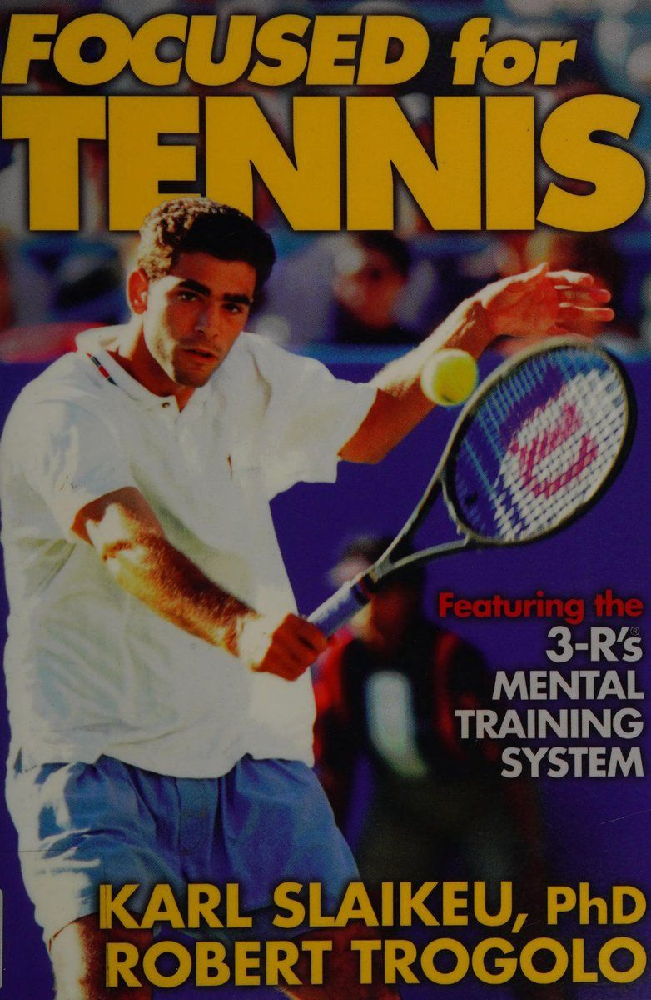
Bản dịch Việt ngữ này chỉ dùng cho mục đích học tập cá nhân, phi thương mại. Bản quyền tác phẩm gốc thuộc về tác giả và nhà xuất bản.
Lời Tựa
Trong sự nghiệp của mình, tôi đã chơi rất nhiều trận đấu mà tôi thua chính mình. Cơn giận và sự thất vọng đã nuốt chửng tôi. Tôi đánh mất sự tập trung và không còn khả năng tập trung vào những gì mình phải làm. Đây là lý do tôi biết rằng học cách thoát khỏi những cảm xúc tiêu cực là một trong những điều quan trọng nhất mà bạn, với tư cách một tuy thủ quần vợt, có thể làm để nâng cao thành tích của mình.
I have played a lot of matches in my career where I have lost to myself. My anger and frustration consumed me. I lost concentration and was no longer able to focus on what I had to do. This is how I know that learning to rid yourself of negative emotions is one of the most important things you as a tennis player can do to improve your performance.
Ba chữ R là một công cụ tuyệt vời sẽ giúp mọi tuy thủ đối phó với điểm đã qua và chuẩn bị tâm lý cho điểm tiếp theo. Khi mọi thứ không diễn ra suôn sẻ, thật dễ tự "hạ thấp" bản thân và chơi theo cách tiêu cực. Nhờ sử dụng Ba chữ R, bạn có thể giữ được sự tích cực và sự tập trung bất chấp kết quả của bất kỳ một điểm hay một game nào. Mọi trận đấu quần vợt đều rất ý nghĩa khi bạn có thể chơi với một đầu óc thông suốt.
The Three R’s is an excellent tool that will help any player deal with the past point and prepare mentally for the next. When things are not going well, it’s easy to get “down” on yourself and play negatively. By using the Three R’s, you can stay positive and focused regardless of the result of any one point or game. Any tennis match is rewarding when you are able to play with a clear head.
Cả Karl Slaikeu và Robert Trogolo đều mang đến những góc nhìn rất độc đáo cho các tuy thủ ở mọi trình độ. Karl Slaikeu mang đến kinh nghiệm của một chuyên gia tâm lý học thể thao, một tuy thủ và một phụ huynh của tuy thủ quần vợt. Các nguyên tắc tâm lý học đằng sau Ba chữ R là vững chắc. Chúng cũng rất thực tế và hợp lý—bạn không cần phải có bằng tiến sĩ để "hiểu" được Ba chữ R. Robert Trogolo hiểu những căng thẳng về tâm lý và thể chất mà chúng tôi, những tuy thủ quần vợt, phải trải qua; không chỉ huấn luyện nhiều tuy thủ trên đường tour như Michael Chang, Richey Reneberg, và Luke Smith, bản thân ông cũng từng thi đấu trên đường tour. Kết quả của góc nhìn của cả Slaikeu và Trogolo là một cuốn sách hiệu quả cả trong lý thuyết lẫn trong thực hành. Và nhờ sự đơn giản của nó, bạn có thể dễ dàng ghi nhớ Ba chữ R và áp dụng chúng vào khoảng thời gian ngắn được quy định giữa các điểm.
Both Karl Slaikeu and Robert Trogolo offer very unique perspectives to players at all levels. Karl Slaikeu brings his experience as a sport psychologist, player, and tennis parent. The psychological principles behind the Three R’s are sound. They are also practical and logical—you don’t have to have a PhD to “get” the Three R’s. Robert Trogolo knows the mental and physical strains we tennis players go through; not only has he coached several players on the tour like Michael Chang, Richey Reneberg, and Luke Smith, he has played on the tour himself. The result of both Slaikeu’s and Trogolo’s perspectives is a book that works in theory and in practice. And thanks to its simplicity, you can easily remember the Three R’s and incorporate them into the short time period allotted between points.
Vì vậy, khi bạn ra sân luyện tập cú giao bóng hay cú vô-lê trái tay của mình, đừng quên rèn luyện cả "trận đấu" tâm lý của bạn nữa.
So when you’re out there working on your serve or your backhand volley, don’t forget to work on your mental game as well.
Tìm hiểu về Ba chữ R là bước đầu tiên để trở thành một tuy thủ quần vợt cứng cỏi về mặt tâm lý. Nó có thể giúp tuy thủ ở bất kỳ trình độ nào và ở mọi lứa tuổi.
Reading about the Three R’s is the first step to becoming a mentally tough tennis player. It can help any level of player at any age.
Bạn càng sớm học được những thói quen tâm lý tốt, bạn sẽ càng tiến bộ.
The sooner you learn good mental habits, the better you will be.
Wayne Ferreira Tháng 1, 1998 Vv
Wayne Ferreira January, 1998 Vv
Lời Giới Thiệu
Cuốn sách này dành cho mọi tuy thủ quần vợt muốn nâng tầm chơi của mình lên một trình độ mới. Được viết bởi một chuyên gia tâm lý học thể thao và một cựu tuy thủ chuyên nghiệp lão luyện, cuốn sách giúp các tuy thủ xây dựng những chiến lược thành công trên một tiền đề đơn giản nhưng thường bị bỏ qua: Những gì bạn làm khi quả bóng ngoài cuộc chơi có thể quan trọng ngang bằng những gì bạn làm khi đánh bóng—nếu không nói là quan trọng hơn.
This book is for every tennis player who wants to move up to the next level of play. Written by a sport psychologist and a veteran of the pro tour, it helps players build successful strategies on a simple yet often neglected premise: What you do when the ball is out of play can be just as important as what you do when you hit the ball—if not more so.
Bạn không cần nhìn xa để tự kiểm chứng tiền đề này. Trong quần vợt và trong cuộc sống, cách chúng ta nghĩ về mọi thứ—dù là tự khích lệ hay đánh gục chính mình—có thể tạo nên sự khác biệt mang tính quyết định giữa thành công và thất bại. Khi bạn chơi tệ, bạn có thể làm mọi thứ tệ hơn bằng cách tự trách mình. (Nói "Bạn tệ quá!" đủ nhiều lần và bạn bắt đầu tin điều đó—và biến nó thành sự thật.)
You needn’t look far to test this premise yourself. In tennis and in life, the way we think about things—whether we encourage ourselves or knock ourselves down—can make the critical difference between success and failure. When you are playing badly, you can make things worse by berating yourself. (Say “You’re terrible!” often enough and you start to believe it—and make it true.)
Sự thất vọng và những phiền nhiễu có thể khiến bạn quên mất kế hoạch thi đấu của mình.
Frustrations and distractions can make you forget your game plan.
Cuốn sách này mô tả một hệ thống mạnh mẽ sẽ giúp bạn giải quyết vấn đề này và mở khóa quần vợt tốt nhất của bạn. Chúng tôi đầu tiên phát triển nó với các tuy thủ có tính cạnh tranh cao, sau đó chia sẻ với tuy thủ ở mọi trình độ. Thông điệp họ 'mang về thật rõ ràng và dứt khoát: "Hệ thống này hiệu quả! Giá mà tôi đã làm điều này ngay từ sớm hơn!" Hệ thống dạy bạn tập trung suy nghĩ và hành vi trong 25 giây giữa các điểm khi quả bóng ngoài cuộc chơi, và cả trong 90 giây tại thời điểm đổi sân. Nó cũng hiệu quả giữa các trận đấu—khoảng thời gian trong tuần khi bạn không thi đấu, nhưng đang nghĩ trước đến một trận đấu.
This book describes a powerful system that will let you solve this problem and unlock your best tennis. We first developed it with highly competitive players, then shared it with players at all levels. The message they ‘brought back was loud and clear: “This works! I wish I’d been doing it earlier!” The system teaches you to focus your thoughts and behavior during the 25 seconds between points when the ball is out of play, and also during the 90 seconds at changeovers. It also works between matches—the time during the week when you are not playing, but are thinking ahead to a match.
Hệ Thống Ba Chữ R THE THREE R’S SYSTEM
Chuyên gia tâm lý học thể thao Jim Loehr là người đầu tiên nghiên cứu cách các tuy thủ quần vợt hàng đầu sử dụng thời gian giữa các điểm để lấy lại bình tĩnh, để thư giãn, và để trải qua nhiều nghi thức hành vi khác nhau nhằm chuẩn bị cho việc giao bóng hoặc trả bóng. Bài báo của ông trên tạp chí World Tennis (tháng 2, 1990) vi
Sport psychologist Jim Loehr first studied the way top tennis players used their time between points to collect themselves, to relax, and to go through various behavioral routines to prepare for either serving or returning. His article in World Tennis (February, 1990) vi
Lời nói đầu vii vẫn cung cấp những hiểu biết hữu ích về tầm quan trọng của hoạt động giữa các điểm trong quần vợt. Hệ thống của chúng tôi xây dựng trên công trình sớm này, và các nghiên cứu tâm lý học về hành vi "ngoài nhiệm vụ" của cá nhân và nhóm.
Preface vii still provides useful insight on the importance of between-point activity in tennis. Our system builds on this early work, and psychology studies of “off-task” behavior for individuals and groups.
Chúng tôi sử dụng kỹ thuật "STOP" từ tâm lý học lâm sàng và một số công cụ khác của tâm lý học thể thao. So với các cách tiếp cận khác, hệ thống của chúng tôi ngắn gọn hơn và dễ nhớ hơn. Và, như các tuy thủ ở mọi trình độ đã khám phá ra, nó hiệu quả! (Xem phần tài liệu tham khảo ở cuối sách.)
We use the “STOP” technique from clinical psychology and several other sport psychology tools. Compared with other approaches, our system is shorter and easier to remember. And, as players at all levels have found, it works! (See the references at the back of the book.)
Đây là cách nó vận hành: Hệ thống dạy bạn Buông bỏ phản ứng của mình với điểm vừa kết thúc, để bạn có thể bước tiếp với tinh thần sảng khoái và sẵn sàng. Sau đó nó giúp bạn Xem xét vị trí của mình trong trận đấu, kiểm tra kế hoạch thi đấu, và dùng các hình ảnh chính cùng từ khóa để giúp bạn tập trung, sau đó bạn Đặt lại chính mình bằng một nghi thức hành vi giúp bạn sẵn sàng đưa bóng vào cuộc chơi hoặc trả giao bóng. Chúng tôi gọi đây là Ba chữ R—Buông bỏ, Xem xét và Đặt lại. Bạn sẽ thấy rằng mình có thể áp dụng hệ thống giữa các điểm và tại thời điểm đổi sân, và cả cho các lĩnh vực khác trong cuộc sống. Trong quá trình giảng dạy hệ thống Ba chữ R trên khắp thế giới, chúng tôi đã có nhiều tuy thủ cho biết họ sử dụng nó để thành công trong các hoạt động đa dạng như đàm phán kinh doanh, các bài thi chuẩn hóa, và các môn thể thao khác như golf, bóng đá, bóng chày và bóng rổ.
Here’s how it goes: The system teaches you to Release your reaction to the point you just finished, so you can go forward fresh and ready. Then it helps you to Review where you are in the match, check your game plan, and use key images and code words to help you focus, after which you Reset yourself with a behavioral routine that helps you get ready to put the ball in play or return serve. We call this the Three R’s—Release, Review, and Reset. You will find that you can apply the system between points and at changeovers and also to other areas of your life. In the course of teaching the Three R’s system around the world, we have had many players tell us they use it to succeed in activities as diverse as business negotiations, standardized tests, and other sports such as golf, soccer, baseball, and basketball.
Lời Cam Kết Của Chúng Tôi OUR PERSONAL PLEDGE
Chúng tôi yêu môn quần vợt, và chúng tôi yêu việc giúp đỡ bất kỳ ai muốn tiến bộ. Nền tảng của chúng tôi bao gồm nhiều kinh nghiệm khác nhau với môn thể thao này. Slaikeu bắt đầu chơi sau khi học cách cầm vợt từ hướng dẫn trong bộ World Book Encyclopedia, và sau đó luyện đánh bóng vào tường trong tầng hầm của một nhà thờ.
We love the game of tennis, and we love to help anyone who wants to improve. Our backgrounds include a range of experience with the game. Slaikeu first started to play after learning how to hold a racket from instructions in the World Book Encyclopedia, and then practiced hitting against the wall in a church basement.
Trogolo trưởng thành từ hàng ngũ thi đấu trẻ, dành nhiều năm thi đấu trên đường tour chuyên nghiệp, và sau đó huấn luyện các tuy thủ như Michael Chang, Kevin Curren, và Richie Rennenberg, cũng như đội tuyển Davis Cup của Malaysia. Ngày nay chúng tôi làm việc với các tuy thủ ở mọi trình độ, một số mới tiếp xúc với môn thể thao này và những người khác muốn hơn mọi thứ là đánh bại một người cụ thể đã gây khó dễ cho họ trong nhiều năm. Chúng tôi chưa từng gặp tuy thủ nào không thể tiến bộ bằng cách cải thiện sự tập trung tâm lý—và với chúng tôi, hệ thống Ba chữ R mang lại con đường tốt nhất đến mục tiêu này. Chúng tôi rất hào hứng khi được mang hệ thống của mình đến với bạn qua những trang sách này.
Trogolo came up through the junior competitive ranks, spent several years on the pro tour, and then coached players such as Michael Chang, Kevin Curren, and Richie Rennenberg, as well as the Malaysian Davis Cup team. These days we work with players at all levels, some new to the game and others who want more than anything else to beat one special person who has been giving them trouble for years. We have not found a player who cannot get better by improving mental focus—and for us, the Three R’s system offers the best path to this goal. We are excited about the opportunity to bring our system to you through the pages of this book.
Lời Cảm Ơn
Chúng tôi mang ơn rất nhiều tuy thủ và huấn luyện viên đã hỗ trợ chúng tôi trong việc thử nghiệm và hoàn thiện hệ thống Ba chữ R trong vài năm qua. Chúng tôi đặc biệt cảm ơn: Diane Slaikeu đã giúp chúng tôi làm rõ ba giai đoạn về mặt khái niệm, và đã dựa vào kinh nghiệm của bà với tư cách là phụ huynh của tuy thủ quần vợt và vợ của một tuy thủ quần vợt để làm cho hệ thống thân thiện với người dùng; Ingrid Ramsey và Hilary Powers đã hỗ trợ biên tập bản thảo và Robert Dole đã giúp đỡ với các hồ sơ tuy thủ và nhiều nhiệm vụ sản xuất khác. Cảm ơn đặc biệt đến Ann Blackwood, Natalie Pham, Luke Smith, Kristina Slaikeu, Micah Thompson, và Jamin Thompson đã giúp chụp ảnh minh họa cho Hệ thống Ba chữ R.
We are indebted to the numerous players and coaches who have assisted us in testing and refining the Three R’s system over the past several years. We give particular thanks to: Diane Slaikeu for helping us bring conceptual clarity to the three phases, and for drawing on her experience as a tennis parent and tennis spouse in making the system user-friendly; Ingrid Ramsey and Hilary Powers for their assistance in editing the manuscript and to Robert Dole for his help with the player profiles and numerous other production tasks. Special thanks to Ann Blackwood, Natalie Pham, Luke Smith, Kristina Slaikeu, Micah Thompson, and Jamin Thompson for helping with photos to illustrate the Three R’s System.
Karl A. Slaikeu, Tiến sĩ
Karl A. Slaikeu, Ph.D.
Robert Trogolo Tháng 9, 1996 viii
Robert Trogolo September, 1996 viii
Hệ Thống Trong Khái Quát
Bạn làm gì giữa các điểm? Trong mỗi giờ của một trận đấu quần vợt, bóng chỉ được đưa vào cuộc chơi từ 4 đến 15 trong tổng số 60 phút. Điều này có nghĩa là bạn dành ít hơn một phần tư thời gian để đánh bóng, và ba phần tư hoặc hơn đi lại, lau mồ hôi, và suy nghĩ. Có lẽ bạn dành một phần thời gian đó nhìn ngó sang một bên, để tâm trí lang thang đến điều gì đó không liên quan đến nhiệm vụ trước mắt. Hoặc bạn có thể đang nghĩ trước đến điểm tiếp theo. Nếu bạn gặp khó khăn trong việc duy trì sự tập trung, bạn có thể đang phạm một hoặc nhiều trong "bảy tội lỗi chí mạng" của quần vợt giữa các điểm. Hãy xem có điều nào trong số này áp dụng với bạn.
What do you do between points? For every hour in a tennis match, the ball is in play only 4 to 15 of the total 60 minutes. This means that you spend less than one-fourth of your time hitting the ball, and three-fourths or more walking around, toweling off, and thinking. Perhaps you spend some of that time looking off to the side, letting your mind wander to something unrelated to the task at hand. Or you might be thinking ahead to the next point. If you have problems maintaining your focus, you may be committing one or more of the “seven deadly sins” of between-point tennis. See if any of these apply to you.
- 1. Bùng nổ. Bạn không xử lý tốt sự thất vọng. Bạn có cái1. Exploding. You do not handle frustration well. You have a
mồi nổ rất ngắn và đôi khi bùng nổ giữa các điểm. Khi bạn chơi không tốt, bạn ném vợt, đập bóng vào lưới, hoặc lên án chính mình (và cả thế giới, và cả trời đất) lớn tiếng và có thể bằng cả những lời thô tục. Đôi khi bạn lấy lại được sự tập trung, nhưng thường thì những cảm xúc mãnh liệt của cơn bùng nổ tràn sang điểm tiếp theo. Thay vì cải thiện lối chơi, mọi năng lượng đó khiến bạn chơi tệ hơn.
hair trigger and sometimes blow up between points. When you aren’t playing well you throw your racket, hit the ball against the screen, or condemn yourself (and the world, and the heavens) loudly and perhaps profanely. Sometimes you regain your focus, but often the intense feelings of the explosion spill over into the next point. Instead of improving your play, all that energy makes you play worse.
- 2. Nén lại. Đây là điều ngược lại với bùng nổ. Bạn nghĩ2. Holding it in. This is the opposite of exploding. You think of
mình là kiểu người mạnh mẽ, ít nói, nhưng con người bên trong bạn thường dằn vặt trên sân quần vợt. Bạn không bộc lộ cảm xúc, nhưng nén chúng lại bên trong. Trong khi đó, cơ thể bạn trở nên căng thẳng, đôi khi căng đến mức bạn không thể thực hiện các cú đánh đúng cách. Ở mức tồi tệ nhất, sự kiểm soát của bạn biến thành một cú choke. Bạn muốn tháo bỏ nó ra ngoài, nhưng bạn không biết làm điều đó theo cách tốt.
yourself as the strong, silent type, but the inner you often churns on the tennis court. You do not show your feelings, but keep them bottled up inside. Meanwhile, your body gets tense, sometimes so tense you can’t execute shots properly. At its worst, your control turns to a choke. You would like to let it out, but you do not know how to do so in a good way.
- 3. Vội vã. Bạn chơi nhanh. Đôi khi quá nhanh. Tốc độ của bạn3. Rushing. You play fast. Sometimes too fast. Your speed is
ổn khi bạn chơi tốt, nhưng khi bạn chơi tệ, bạn giao bóng vội vàng, đôi khi double fault, và mọi thứ bắt đầu tụt dốc. Bạn đôi khi "tặng" các điểm và các game bằng cách mắc lỗi tự đánh hỏng hết lần này đến lần khác. Khi mọi thứ đã tệ, nó trở nên rất tệ. Bạn muốn chậm lại và lấy lại bình tĩnh, nhưng bạn lại không làm thế khi bạn cần nhất.
okay when you are playing well, but when you are playing badly, you rush your serve, sometimes double fault, and things start to go downhill. You sometimes “donate” points and games by making unforced errors one after another. When it is bad, it gets very bad. You would like to slow down and collect yourself, but you do not do so when you most need to.
- 4. Không suy nghĩ. Bạn đã tự nhủ phải đưa cú giao bóng đầu4. Not thinking. You have told yourself to get your first serve
vào sân, hoặc phải xoay vai nhiều hơn khi thực hiện cú thuận tay, nhưng bạn lại quên làm điều đó. Bạn không thắng được những điểm quan trọng khi cần phải làm. Bạn chìm quá sâu vào hành động, hoặc lo lắng đến mức về kết quả ("Mình không thể để gã này thắng!") đến nỗi bạn không suy nghĩ. Đôi khi sau trận đấu bạn tự hỏi: "Mình đã làm gì ngoài kia?" Sự thật là, bạn không biết.
in, or to turn your shoulders more when executing a forehand, but you forget to do it. You are not winning the big points when you need to. You get so caught up in the action, or so worried about the outcome (“I can’t let this guy beat me!”) that you don’t think. Sometimes after a match you wonder: “What was I doing out there?” Fact is, you do not know.
- 5. Bi quan hóa. Đó không chỉ là ván game quần vợt. Không chỉ5. Catastrophizing. It’s not just the game of tennis. It’s not just
là điểm. Không chỉ là cú double fault. Đó là cuộc sống! Rốt cuộc thì, quần vợt là cuộc sống, và khi bạn chơi tệ, bạn muốn bỏ cuộc! Điều gì đó nhỏ trở nên lớn lao và thảm họa. Bạn dường như không thể kìm hãm được mình.
the point. It’s not just the double fault. It’s life! After all, tennis is life, and when you play badly, you want to pack it in! Something small becomes something large and catastrophic. You cannot seem to stop yourself.
- 6. Lang thang. Bạn không có khuôn mẫu nào cho những gì bạn làm giữa6. Wandering. You have no pattern for what you do between
các điểm. Bạn đi lang thang để nhặt bóng, di chuyển đến vạch để giao bóng, nhìn đối thủ, và đưa bóng vào cuộc chơi. Đôi khi bạn nảy bóng hai lần, lần khác một lần, và trong những dịp khác bạn nảy sáu lần. Không có khuôn mẫu nào cho việc đó, và bạn không chắc khuôn mẫu nên như thế nào ngay cả khi bạn muốn có một khuôn mẫu.
points. You wander over to pick up the ball, move to the line to serve, look at your opponent, and put the ball in play. Sometimes you bounce the ball two times, other times once, and on other occasions you give it six bounces. There is no pattern to it, and you are not sure what the pattern should be like even if you wanted one.
- 7. Ngủ gật. Bạn thực ra không nhắm mắt, nằm xuống,7. Sleeping. You don’t actually close your eyes, lie down,
và đi ngủ—nhưng đôi khi có vẻ là như vậy. Bạn đơn giản là không có mặt trong trận đấu. Tâm trí bạn đi đến nơi khác. Có vẻ như bạn muốn rút lui. Có lẽ viễn cảnh thua đối thủ này đáng sợ đến mức bạn muốn thoát khỏi đó, và một cách để làm điều đó là hành động như thể bạn đang làm mọi động tác một cách uể oải. Hoặc có lẽ bạn đã có một đêm ngủ không ngon và điều đó thể hiện rõ. Vấn đề là bạn không có cách nào để tự thoát khỏi trạng thái đó và thể hiện phong độ tốt nhất giữa các điểm.
and go to sleep—but it sometimes seems that way. You simply are not in the game. Your mind goes someplace else. It seems as if you want to withdraw. Maybe the prospect of losing to this opponent is so frightening that you want to get out of there, and one way to do so is to act as if you are sleepily going through the motions. Or perhaps you did have a bad night’s sleep and it shows. The problem is that you do not have a way to snap yourself out of it and bring out your best between points.
hơn là phải đuổi kịp!
\ than to catch up!
Hệ thống trong một cái nhìn tổng quan 3) Khi đọc lại danh sách bảy tội lỗi chí mạng mà Karl và tôi đã lập ra cho chương này, tôi có những ký ức sinh động về các tuy thủ trở thành nạn nhân của từng tội trong số đó. Bắt đầu với bùng nổ.
The System in a Nutshell 3) As I read over the list of the seven deadly sins that Karl and I put together for this chapter, I have vivid memories of players falling prey to every one of them. Start off with exploding.
Tôi từng chứng kiến một trận đánh đôi, trong đó một tuy thủ bị đánh trúng bởi một cú đập bóng từ trên cao và mất vài giây để tiếp tục thi đấu.
I once saw a doubles match in which a player got hit hard by an overhead and took a few seconds to get going again.
Trọng tài cảnh cáo anh ta vì chậm trễ. Tuy thủ liền xổ một tràng vào trọng tài. Trọng tài nói, "Game," (thua game đó). Tuy thủ nói, "#!?*!#?!" ông đấy, ông đấy, #!?*!#?!" và trọng tài nói, "Match!"
The umpire gave him a warning for delay of game. The player proceeded to tell the umpire where to go. The umpire said, “Game,” (defaulting that game). The player said, “#!?*!#?! you, you, #!?*!#?!” and the umpire said, “Match!”
Bi quan hóa là một tật khác được nhiều tuy thủ ưa chuộng. Không chỉ là một game tệ, hay một set tệ, mà cả thế giới sụp đổ hoàn toàn. Tôi còn nhớ mình ngồi trên khán đài, cách sân khoảng 100 feet, khi anh chàng của tôi bước lại và giơ hai tay lên không, lắc lư và nhìn tôi như muốn nói, "Tôi không biết phải làm gì. Tại sao điều này lại xảy ra với tôi?" Các tuy thủ trẻ làm điều này rất nhiều, nói những điều tiêu cực như "Mình ngu quá. Không thể tin được mình tệ đến mức nào." Họ nhảy vọt trực tiếp từ một điểm tệ hay một game tệ đến một "tôi tệ".
Catastrophizing is another favorite with many players. It is not just a bad game, or a bad set, but the whole world goes to hell in a handcart. I can remember sitting in the stands, about 100 feet from the court, as my guy walked over and held his hands up in the air, shaking them and looking at me as if to say, “I don’t know what to do. Why is this happening to me?” Juniors do this a lot, saying negative things like “I’m so stupid. I can’t believe how bad I am.” They jump directly from a bad point or a bad game to a “bad me.”
Không suy nghĩ làm tôi nhớ đến một trong những tuy thủ của mình đã thua một trận tại U.S. Pro Indoors trước một tuy thủ mà anh ấy có quan hệ rất tồi—những gã này ghét nhau và gọi nhau bằng đủ mọi danh xưng có trong sách suốt trận đấu— và khi anh chàng của tôi gặp lại tuy thủ đó ở giải tiếp theo, anh ấy không thể quên trận đấu trước. Chúng tôi có một kế hoạch thi đấu, nhưng anh ấy không thể tập trung vào nó. Ở trận thứ hai anh ấy dẫn trước một set và một break, nhưng lại thua trận. Ấn tượng của tôi là anh ấy thực ra đang sống lại trận đấu trước và không thể xua nó ra khỏi tâm trí.
Not thinking reminds me of one of my players who lost a match at the U.S. Pro Indoors to a player with whom he was on really bad terms—these guys hated each other and called each other every name in the book throughout the match— and when my guy played the same player in the next tournament, he could not forget the previous match. We had a game plan, but he could not focus on it. In the second match he was up a set and a break, but lost the match. My impression was that he actually relived the previous match and could not get it out of his mind.
Và rồi thì còn có ngủ gật. Nếu tôi có một đồng xu cho mỗi tuy thủ từng thấy lang thang trên sân và để mất set đầu, quyết định thức dậy và bước vào trận đấu ở set thứ hai khi anh ta chợt nhận ra mình phải thắng, tôi đã giàu to rồi. Ngày nay tôi bảo các tuy thủ của mình dùng Ba chữ R để sẵn sàng thắng điểm, game và set đầu tiên. Dễ ở lại phía trước
And then there is sleeping. If I had a nickel for every player I have seen who wanders on the court and drops the first set, deciding to wake up and get into the match in the second set when he suddenly realizes he has to win, I would be a rich man. I now tell my players to use the Three R’s to get ready to win the first point, game, and set. It’s easier to stay ahead
Có Thể Bạn Không Điên Như Bạn Nghĩ Đâu! YOU MIGHT NOT BE AS CRAZY AS YOU THINK!
Đừng nghĩ mình quá kỳ lạ nếu bạn mắc phải một hoặc nhiều tội trong số này. Tất cả chúng ta đều sa ngã vào chúng lúc này lúc khác. Sự thực là, các nhà tâm lý học đã thấy những tội lỗi tương tự xuất hiện một cách có thể dự đoán trong cả hành vi cá nhân lẫn hành vi nhóm ở đủ mọi lĩnh vực.
Don’t think yourself too strange if you are guilty of one or more of these sins. We all fall into them at one time or another. As a matter of fact, psychologists have found these same sins crop up predictably in both individual and group behavior in all sorts of fields.
Bất cứ khi nào mọi người gác lại nhiệm vụ trước mắt, họ có xu hướng dễ bị ảnh hưởng bởi suy nghĩ và hành vi tiêu cực hơn là khi họ đang thực hiện nhiệm vụ. Bạn thấy cùng hiện tượng đó giữa các điểm trong quần vợt.
Whenever people put aside the task at hand, they tend to be more susceptible to negative thinking and behavior than when they are engaged in the task. You see the same phenomenon between points in tennis.
Hãy nhìn vào hai cột trong bảng 1.1. Ở bên trái là bản tóm tắt các nghiên cứu về cá nhân và nhóm, và các đặc điểm của những gì có thể xảy ra với bất kỳ ai trong chúng ta trong hoạt động ngoài nhiệm vụ, dù ở trường học, ở công sở, hay trong thể thao. Ở bên phải là phiên bản giữa các điểm cho thấy những gì có thể xảy ra với chúng ta trên sân quần vợt. Như một cái nhìn nhanh cho thấy, những điều sau đây có thể ập đến với bất kỳ ai trong chúng ta trong khoảng thời gian ở giữa: một sự gia tăng hành vi tự hại bản thân, một sự sụt giảm lòng tự trọng, hoặc sự trật đường ray của lòng tận tâm và động lực dẫn đến sự thất vọng. Đó là điều bình thường khi căng thẳng—trong thời gian ngoài nhiệm vụ— là nhìn lại các vấn đề thay vì hướng về những gì bạn cần làm tiếp theo. Điều bình thường khi bạn đang căng thẳng là gặp khó khăn trong việc lập kế hoạch cho bước đi tiếp theo. Đôi khi, sự kỹ càng và chất lượng những gì bạn đang làm có thể giảm sút, dẫn đến những lỗi tự đánh hỏng. Cơ bắp căng lên và việc thực hiện các cú đánh có thể trở thành vấn đề. Bạn trở nên dễ bị choke.
Have a look at the two columns in table 1.1. On the left is a summary of the research on individuals and groups, and the characteristics of what can happen to any of us during off-task activity, whether at school, at work, or in sport. On the right is the betweenpoint version that shows what can happen to us on the tennis court. As a quick glance shows, the following can strike any of us during the in-between time: A rise in self-defeating behavior, a drop in self-esteem, or a derailment of dedication and drive leading to frustration. It is normal under stress—in the off-task time— to look back at the problems instead of looking forward to what you need to do next. It is normal when you are under stress to have a difficult time planning your next move. At times, your thoroughness and the quality of what you are doing can decrease, leading to unforced errors. Muscles tighten up and executing shots can become a problem. You become susceptible to a choke.
Ba Chữ R THE THREE R’S
Hình 1.1 cung cấp một bản tóm tắt trực quan về hệ thống Ba chữ R. Hệ thống thể hiện ba sự kiện, mỗi sự kiện được điều chỉnh cho riêng tính cách của bạn, sẽ diễn ra giữa mỗi điểm: Buông bỏ (theo sau là một STOP), Xem xét (theo sau là một STOP khác), và sau đó là một nghi thức Đặt lại, sau đó bạn đưa bóng vào cuộc chơi. Như chúng ta sẽ thấy, bạn có thể học cách làm chủ mọi tình huống giữa các điểm bằng cách dẫn dắt suy nghĩ, cảm xúc và hành vi của mình qua ba giai đoạn này.
Figure 1.1 gives a visual summary of the Three R’s system. The system shows three events, each customized to your own personality, that will occur between each point: Release (followed by a STOP), Review (followed by another STOP), and then a Reset routine, after which you put the ball in play. As we shall see, you can learn to take charge of any situation between points by channeling your thoughts, feelings, and behavior through these three phases.
Hãy hình dung theo cách này: Điểm đã kết thúc, và bạn có 25 giây hoặc hơn trước khi bạn giao bóng hoặc trả bóng. Hãy coi khoảng thời gian này là cơ hội để phản ứng phù hợp với những gì vừa xảy ra (dù đó là
Think of it this way: The point is over, and you have 25 seconds or so before you serve or return. Picture this time as your opportunity to react appropriately to what just happened (whether it was
Bảng 1.1 Tâm lý học "ngoài nhiệm vụ" su RRA Các nhà tâm lý học nghiên cứu hành vi cá nhân và nhóm đã xác định một số mối nguy hiểm có thể dự đoán trong hoạt động "ngoài nhiệm vụ", mà chúng ta có thể so sánh với thời gian "giữa các điểm" trong quần vợt. Trong bảng dưới đây, chúng tôi đã liệt kê các đặc điểm của cá nhân và nhóm trong hoạt động không đi làm hoặc ngoài nhiệm vụ ở bên trái, và phiên bản quần vợt giữa các điểm ở bên phải.
Table 1.1 “Off Task” Psychology su RRA Psychologists researching individual and group behavior have identified several predictable hazards during “off task” activity, which we can compare to “between point” time in tennis. In the table below, we have listed the characteristics of individuals and groups during non-work or off-task activity to the left, and the between point tennis version to the right.
Các thành viên dồn năng lượng vào những mục đích tự hại bản thân.
Members devote energy to self-defeating ends.
Bạn tự chửi rủa bản thân, hoặc ném vợt. a Lòng tự trọng giảm sút.
You engage in verbal selfabuse, or throw your racket. a Self-esteem decreases.
Lời tự nói với bản thân bạn trở nên tiêu cực: "Bạn tệ quá!," "Bạn không chơi nổi!," "Bạn nên" bỏ cuộc!"
Your self-talk becomes negative: “You're terrible!,” “You can't play!,” “You should quit!”
LESCOL ELOISE RESELL SSE BNE LT i Động lực và lòng tận tâm trước các ràng buộc dẫn đến sự thất vọng và kiệt sức ở những cá nhân có động lực cao và gắn bó sâu sắc. ——+ Bạn càng muốn thắng, bạn càng thất vọng khi chơi tệ. a g Sự nhìn xa trở thành sự nhìn lại.
LESCOL ELOISE RESELL SSE BNE LT i Drive and dedication in the face of constraints lead to frustration and burnout in highly motivated and committed individuals. ——+ The more you want to win, the more frustrated you are when you play badly. a g Foresight becomes hindsight.
Bạn cứ nhìn lại quá khứ thay vì nhìn về phía trước. Bạn chỉ bị dẫn một break, nhưng bạn không thể xua khỏi tâm trí rằng bạn đã có break point và bỏ lỡ! went ae Khả năng dự đoán giảm sút.
You keep looking back instead of ahead. You’re down only one break, but you can’t get it out of your mind that you had break points and blew it! went ae Predictive capacity decreases.
Bạn bực bội đến mức không thể nghĩ trước.
You are so upset that you can't think ahead.
YESS OOOO NOR USCA SE IEEE RNASE LISI TEE IE TEES DSTO Sự kỹ càng và chất lượng giảm sút.
YESS OOOO NOR USCA SE IEEE RNASE LISI TEE IE TEES DSTO Thoroughness and quality decreases.
Bạn mắc những lỗi tự đánh hỏng. r Bầu không khí làm việc xấu đi.
You make unforced errors. r The work climate deteriorates.
Ở mức tồi tệ nhất, sân đấu như thể là một hiện trường thảm họa dành cho lối chơi của bạn.
At its worst, the court feels like a disaster scene for your game.
(còn tiếp) SDR DINE CLUE IAM RELEE DEEDES OEE LE LITE BELLE SSPE LES EDDIE TEREBRES
(continued) SDR DINE CLUE IAM RELEE DEEDES OEE LE LITE BELLE SSPE LES EDDIE TEREBRES
Bảng 1.1, (còn tiếp) Nhận thức thu hẹp.
Table 1.1, (continued) Perception narrows.
Bạn không thể xua khỏi tâm trí những điều tiêu cực và không thể mở rộng tầm nhìn để thấy bạn đang ở đâu trong trận đấu và những gì cần phải làm ROD ESS a oscar ge tiếp theo.
You can’t get the negatives out of your mind, and can’t broaden the horizon to see where you are in the match and what needs to be done ROD ESS a oscar ge next.
Các hệ thống vận động Cơ bắp bạn căng lên; bạn suy giảm. không thể thực hiện các cú đánh, và bạn choke.
Manual support systems Your muscles tighten up; you deteriorate. can't execute your shots, and you choke.
EER SEES SES IES REIS LEO EIR BEN ESS I DNS EES BEI IIE RAL ARERR RO TT ON ONT TE NEE NEI SLI DTI LIED. SEIS ELIE EE EEE EAE I SEIN EE EO GREELEY SOLER ISELESEEOEII CS ILIS ISS em một điểm khá bình lặng, một thành công rực rỡ, hay một sự thất vọng lớn— hãy kiểm tra bạn đang ở đâu trong kế hoạch thi đấu và bạn muốn làm gì tiếp theo, và Đặt lại tâm trí và cơ bắp của mình cho điểm tiếp theo.
EER SEES SES IES REIS LEO EIR BEN ESS I DNS EES BEI IIE RAL ARERR RO TT ON ONT TE NEE NEI SLI DTI LIED. SEIS ELIE EE EEE EAE I SEIN EE EO GREELEY SOLER ISELESEEOEII CS ILIS ISS em a rather uneventful point, a wild success, or a major disappointment), check where you are in your game plan and what you want to do next, and Reset your mind and muscles for the next point.
Nghĩa là, Buông bỏ điểm trước, Xem xét bạn đang ở đâu, và Đặt lại cho điểm tiếp theo. Không mất nhiều thời gian để chạy qua Ba chữ R—và, rốt cuộc thì, nếu bạn không làm Ba chữ R, bạn sẽ làm điều gì đó khác. Có lẽ là điều gì đó kém mang tính xây dựng hơn cho lối chơi của bạn. Chúng ta hãy xem qua từng giai đoạn.
That is, Release the previous point, Review where you stand, and Reset for the next point. It doesn’t take long to run through the Three R’s—and, after all, if you weren’t doing the Three R’s, you’d be doing something else. Probably something less constructive for your game. Let’s have a brief look at each phase.
Chữ R thứ nhất: Buông bỏ Buông bỏ nghĩa là để điểm vừa mới kết thúc trôi qua. Đôi khi việc Buông bỏ rất nhẹ nhàng, như ở giai đoạn đầu của bất kỳ trận đấu nào, khi bạn vừa thực hiện một cú đánh hay và đơn giản là quay đi khỏi bóng và nói hoặc nghĩ thầm với chính mình, "Tốt lắm!"
First R: Release The Release is a letting‘go of the point that has just been completed. Sometimes the Release is very mild, as in the early going of any match, when you finish hitting a good shot and simply turn away from the ball and say or think to yourself, “All right!”
Không ai thực sự nhận ra rằng bạn đang thực hiện một Buông bỏ. Bạn đơn giản đã đưa ra một phát ngôn tích cực với chính mình về điểm vừa kết thúc. Những lúc khác, việc Buông bỏ có thể công khai trước mọi người. Ví dụ, việc tự chế giễu mình sau khi đánh hỏng một cú là một hình thức của Buông bỏ. Việc Buông bỏ có thể tích cực hoặc tiêu cực. Nếu bạn đang cảm thấy tốt, thì việc Buông bỏ sẽ là tích cực, có lẽ là một cú siết nắm đấm hoặc một sự khẳng định nào khác về điều vừa xảy ra. Nếu bạn đang chơi tệ và bực bội, lo lắng hoặc tức giận, việc Buông bỏ có thể ở dạng nói to điều gì đó—dù điều tốt nhất là hãy tập cho mình đưa ra những phát ngôn không dẫn đến code violation. Những lần Buông bỏ tốt nhất trong các tình huống bạn chơi không tốt là những lần bạn lập tức bắt chước cú đánh mà bạn ước gì mình đã thực hiện. Ví dụ, nếu bạn quên xoay người khi thực hiện cú vô-lê mà lại đánh bóng với hai vai vuông góc với lưới, đẩy bóng bay quá dài, bạn có thể lập tức sửa lại—nghĩa là, xoay người, thực hiện một bước chân thích hợp về phía lưới, và đánh một cú
No one really notices that you are conducting a Release. You have simply made a positive statement to yourself about the point just completed. At other times, the Release may be wide open to the public. For example, making fun of yourself after missing a shot is a form of Release. Releases can be positive or negative. If you are feeling good, then the Release will be positive, perhaps a fist pump or some other affirmation of what just happened. If you are playing badly and are upset, nervous, or angry, a Release might take the form of saying something out loud—though it’s best to train yourself to make statements that don’t invite code violations. The best Releases in situations in which you aren’t playing well are those where you immediately imitate the shot you wish you had made. For example, if you fail to turn when you volley and instead hit the ball with your shoulders square to the net, sailing it long, you might immediately fix it—that is, turn, take an appropriate step toward the net, and hit an imaginary
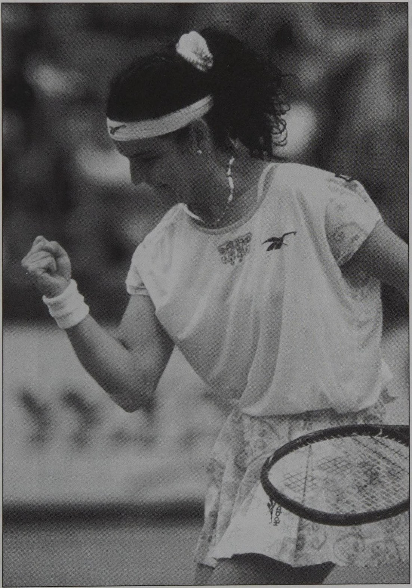
Focused for Tennis bóng một cách đúng đắn. Đây là một ví dụ về Buông bỏ (Release) mang tính xây dựng nhằm buông bỏ năng lượng tiêu cực bằng cách dẫn dắt nó theo hướng xây dựng.
is Focused for Tennis ball properly. This is an example of a constructive Release aimed at letting go of negative energy by channeling it in a constructive direction.
Chữ R thứ hai: Xem xét (Review) Giai đoạn tiếp theo là Xem xét (Review), trong đó bạn suy nghĩ về những gì vừa xảy ra và lập kế hoạch cho cách chơi điểm tiếp theo.
Second R: Review The next phase is Review, in which you think about what just happened and make plans for how you will play the next point.
Ví dụ, bạn có thể chuyển vợt sang tay kia, bước về phía vạch cuối sân, và nghĩ điều gì đó đại loại như: “Chuyện gì vừa xảy ra? Tôi đã phạm lỗi tự thua, hay đối thủ
For example, you might switch your racket to your other hand, walk toward the baseline, and think something along the lines of: “What just happened? Did I make an unforced error, or is my
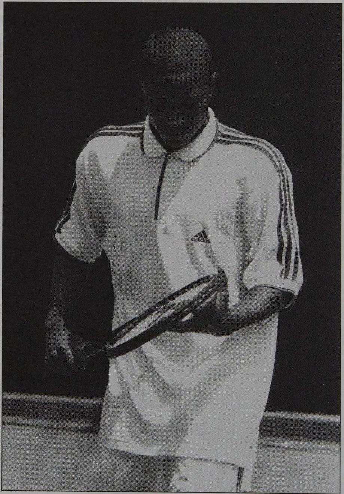
© Hết điểm Buông bỏ (Release) Quy trình Thiết lập lại (Reset) Bóng vào cuộc Hình 1.1 Ba chữ R: Trình tự
© Point over Release Reset routine Ball in play Figure 1.1 The Three Rs: Sequence
G0 Focused for Tennis đang chơi hay hơn tôi? Tôi có cần thay đổi điều gì trong chiến thuật của mình hay nên tiếp tục làm những gì đang làm?” Đây cũng là lúc bạn sẽ tự nhắc nhở bản thân về chiến thuật của riêng mình, có thể bằng các từ mã — mà chúng ta sẽ thảo luận sau. Hoặc bạn có thể tự nói với mình những cụm từ then chốt đã chuẩn bị trước để giúp bạn tập trung (“Cú giao bóng vào, và thực hiện cú vô-lê đầu tiên!”).
G0 Focused for Tennis opponent outplaying me? Do I need to change anything in my game plan or should I stay with what I am doing?” This is also the time when you will remind yourself of your own game plan, perhaps with code words—which we'll discuss later. Or you might say key preplanned phrases to yourself that help you focus (“First serve in, and make the first volley!”).
Chữ R thứ ba: Thiết lập lại (Reset) Chữ R cuối cùng là quy trình Thiết lập lại (Reset) mà bạn thực hiện trước khi giao bóng hoặc trả bóng. Đây là một chuỗi các bước được lên kế hoạch trước, được điều chỉnh cho
Third R: Reset The final R is the Reset routine you go through before serving or returning. This is a preplanned series of steps, customized to
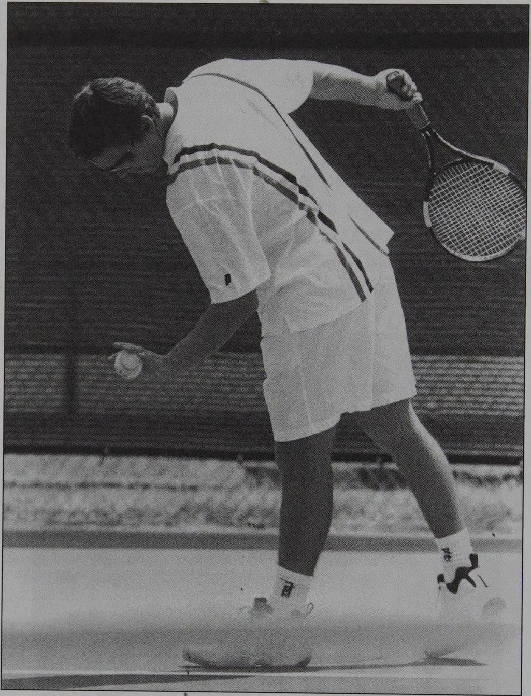
Toàn cảnh hệ thống phong cách chơi của riêng bạn, sẽ giúp bạn thư giãn (hoặc, nếu cần, kích thích bạn) trước điểm tiếp theo. Khi giao bóng, bạn có thể đứng ở phía sau sân và nhìn đối thủ, rồi bước đến vạch giao bóng và công bố tỷ số. Sau đó bạn tưởng tượng cú giao bóng bạn sẽ thực hiện, hít một hơi thở sâu và thở ra để thư giãn, nhồi bóng số lần bạn mong muốn, và tạm dừng trước khi bắt đầu động tác giao bóng.
The System in a Nutshell your own style of play, that will relax you (or, if needed, rev you up) before the next point. When serving, you might stand in the back court and look at your opponent, then step to the line and call the score. Then you imagine the serve you will hit, take a deep breath and exhale to relax, bounce the ball your preferred number of times, and pause before you begin the service motion.
Khi trả giao bóng, bạn có thể thực hiện một chuỗi các bước gồm bước tự tin vào khu vực trả bóng, nhìn đối thủ, nhún nhảy trên các ngón chân, và thực hiện động tác split step trước khi trả giao bóng. Hầu hết các quy trình Thiết lập lại (Reset) sẽ thuộc kiểu thư giãn, mặc dù đôi khi, nếu bạn chưa đủ hưng phấn và dường như không thể khởi động, bạn sẽ cần kích thích bản thân. Trong trường hợp này, quy trình Thiết lập lại (Reset) của bạn có thể bao gồm vỗ đùi và tự nói điều gì đó với bản thân như “Cố lên!”.
When returning serve, you may go through a sequence that includes walking confidently into the return area, looking at your opponent, bouncing on your toes, and doing a split step before returning the serve. Most Reset routines will be of the relaxing type, though sometimes, if you are underaroused and cannot seem to get moving, you will need to rev up. In this case, your Reset may include slapping your thigh and saying something to yourself like “C’mon!”.
Kỹ thuật STOP Hãy chú ý trong bảng 1.2 rằng các giai đoạn được phân tách với nhau bởi từ STOP. Hệ thống Ba chữ R sử dụng một kỹ thuật STOP để kết thúc giai đoạn Buông bỏ (Release) và ngăn nó không tràn sang giai đoạn Xem xét (Review). Tương tự, một STOP sau giai đoạn Xem xét (Review) (phần suy nghĩ) ngăn nó không tràn sang quy trình Thiết lập lại (Reset). Kỹ thuật STOP được vay mượn từ kỹ thuật dừng suy nghĩ, một công cụ mà các nhà tâm lý lâm sàng sử dụng để giúp bệnh nhân đối phó với những suy nghĩ ám ảnh, và là một cách mạnh mẽ để chấm dứt một hành vi trong chuỗi và chuyển sang hành vi khác. Kỹ thuật STOP sẽ được thảo luận chi tiết hơn trong chương 2.
The STOP Technique Note in table 1.2 that the phases are separated from one another by the word STOP. The Three R’s system uses a STOP technique to end the Release phase and keep it from spilling over into the Review. Similarly, a STOP after the Review (the thinking part) keeps it from spilling over into the Reset routine. The STOP technique is borrowed from thought stopping, a tool clinical psychologists use to help patients deal with obsessive thoughts, and is a powerful way to end one behavior in the sequence and move to another. The STOP technique is discussed in more detail in chapter 2.
Phần Còn Lại Của Cuốn Sách THE REST OF THIS BOOK
Những chương tiếp theo sẽ cung cấp thêm cho bạn nhiều điều về từng chữ R trong Ba chữ R và sẽ chỉ cho bạn cách áp dụng hệ thống vào lối chơi của riêng mình. Khi bạn đọc qua các chương và áp dụng các bài tập vào tình huống của bản thân, hãy ghi nhớ rằng: Hệ thống không yêu cầu bạn thay đổi tính cách của mình.
The next few chapters will give you more on each of the Three R’s and will show you how to apply the system to your own game. As you read through the chapters and apply the exercises to your own situation, keep in mind that: e The system does not require you to change your personality.
Một số người đơn giản là giàu cảm xúc hơn những người khác, với nhu cầu thể hiện cảm xúc lớn hơn. Những người khác thì kín đáo hơn và giữ mọi thứ trong lòng. Điều đó không sao. Ba chữ R sẽ không thay đổi
Some people are simply more emotional than others, with a greater need to let out their feelings. Others are more private and keep things inside. That’s fine. The Three R’s will not change
Bảng 1.2 Ba chữ R tạo nên sự khác biệt tôi chơi nhanh. tận dụng tối đa 25 giây giữa hai điểm. pionaninatee thể hiện sự bực bội của mình theo những cách tiêu cực, và đôi khi nhận các vi phạm quy tắc.
Table 1.2 The Three R’s Make a Difference I play fast. I take full advantage of the 25 seconds between points. pionaninatee I let my frustrations out in negative ways, and sometimes get code violations.
Buông bỏ (Release) những điều tiêu cực, và rồi bước tiếp.
| Release the negative, and then | move on.
LER LR a ae quên chiến thuật của mình.
LER LR a ae | forget my game plan.
Xem xét (Review) chiến thuật của mình. ea tôi dễ bị choke (run tay), tank (buông xuôi), hoặc mất tập trung.
| Review my game plan. ea I am vulnerable to choke, tank, or distraction.
IL LS IEE EOIN E RO OBER ES DIRS SEI SIE RTS DEEPEN ERS ERO EONS SORE có thể lo lắng, nản chí, hoặc mất tập trung, nhưng tôi dẫn dắt nó qua Buông bỏ (Release), DỪNG (STOP) nó, rồi Xem xét (Review) để tôi có thể quay trở lại trận đấu một cách hiệu quả. net scaomnsan ast Nếu tôi bị dẫn điểm, tôi cứ để vậy, và rất khó để vực dậy trở lại.
IL LS IEE EOIN E RO OBER ES DIRS SEI SIE RTS DEEPEN ERS ERO EONS SORE I might get nervous, discouraged, or distracted, but I channel it through a Release, STOP it, then a Review so I can get back into the game effectively. net scaomnsan ast If |am down,l am down, and it is hard to get back up.
Nếu tôi bị dẫn điểm, tôi sử dụng STOP và thêm các động tác kích thích vào quy trình Thiết lập lại (Reset) để khởi động trở lại. ' tôi nản lòng vì các lỗi.
If I am down,! use the STOP and add rev up moves to my Reset routine to get going again. ‘ I get discouraged by errors.
SERENE SOULS ISIS OE ED ETERS tôi sửa chữa các lỗi ngay khi chúng xảy ra, trở nên mạnh mẽ hơn với mỗi điểm.
SERENE SOULS ISIS OE ED ETERS I correct errors as they occur, getting stronger with each point.
Khi tôi đang dẫn, tôi lơ là, và đôi khi để đối & thủ của tôi trở lại cuộc chơi. ‘eRe EERE NE LEE LE TE EEE EMESIS LEE LESTE DN DEIR DE ENO Khi tôi đang dẫn, tôi sử dụng Xem xét (Review) và Thiết lập lại (Reset) để duy trì sự tập trung và kết thúc trận đấu. xu hướng cơ bản này, mà thay vào đó sẽ dạy bạn cách đối phó với những suy nghĩ và cảm xúc của bạn giữa hai điểm phù hợp với tính cách của bạn. Hệ thống Ba chữ R không yêu cầu bạn phải luôn luôn tích cực mọi lúc. Nó giúp bạn trở nên mang tính xây dựng khi mọi thứ trở nên tồi tệ.
When I am ahead, I let down, and sometimes let my gppo- & nent back in. ‘eRe EERE NE LEE LE TE EEE EMESIS LEE LESTE DN DEIR DE ENO When I am ahead, I use Review and Reset to stay focused and close out the match. this basic tendency, but instead will teach you ways to handle your thoughts and feelings between points in keeping with your personality type. e The Three R’s system does not require you to be positive all the time. It does help you to be constructive when things go badly.
Quần vợt là môn thể thao vất vả và gian khổ, và đôi khi bạn sẽ cảm thấy tức giận, sợ hãi hoặc chán nản vì điều đó. Hệ thống Ba chữ R dạy bạn thể hiện những cảm xúc này một cách phù hợp, rồi DỪNG (STOP) và chuyển sang bước tiếp theo.
Tennis is a rough-and-tumble sport, and you will sometimes get angry or frightened or depressed about it. The Three R’s system teaches you to express these feelings appropriately, then to STOP and move on to the next step.
Hệ thống Ba chữ R không yêu cầu bạn phải suy nghĩ mọi lúc. Bạn sẽ nghĩ về vị thế của mình trong trận đấu vào những lúc nhất định giữa hai điểm, nhưng điều này sẽ không ngăn bạn đạt đến trạng thái zone, không gian tinh thần và thể chất nơi lối chơi tốt tuôn trào một cách dễ dàng đến lạ kỳ. Quả thực, Ba chữ R sẽ giúp bạn tìm thấy zone của bạn và chơi trong đó thường xuyên hơn!
e The Three R’s system does not require you to think all the time. You will think about where you are in the match at certain times between points, but this will not keep you from reaching the zone, the mental and physical space where good play flows seemingly effortlessly. Indeed, the Three R’s will help you find your zone and play in it more often!
Dưới đây là một số điều mà hệ thống đòi hỏi ở bạn: Mong muốn cải thiện. Về điều này thì bạn đã có sẵn rồi! Nếu bạn không có mong muốn cải thiện, bạn đã không đọc cuốn sách này. Nếu bạn giống như phần còn lại của chúng tôi, bạn biết rằng sâu thẳm bên trong bạn có những cú đánh tuyệt vời và ý chí chiến thắng. Vấn đề duy nhất là bạn không thể thực hiện những cú đánh tuyệt vời đó hay chiến thắng một cách thường xuyên. Chính mong muốn phát huy lối chơi quần vợt tốt nhất của bạn mới là điểm khởi đầu. Một tâm trí cởi mở. Các công cụ tâm lý thể thao tiêu chuẩn đã tồn tại từ lâu, và không có mấy công cụ mới. Tất cả những gì chúng tôi đã làm là đóng gói lại các công cụ tiêu chuẩn theo cách mà bất kỳ ai cũng có thể sử dụng. Trước khi bạn quyết định liệu hệ thống có giúp ích cho bạn, hãy chắc chắn rằng bạn hiểu cả ba giai đoạn (với các kỹ thuật STOP xen giữa), rằng bạn đã tùy chỉnh chúng cho mục đích sử dụng cá nhân, và đã luyện tập chúng một thời gian. Sau đó hãy để kết quả tự chứng minh.
Here are some things that the system does require of you: e A desire to improve. Here you are home free! If you did not have a desire to improve, you would not be reading this book. If you are like the rest of us, you know that deep inside you have some great shots and a will to win. The only problem is that you cannot hit those great shots or win on a regular basis. The very desire to bring out your best tennis is the starting point. e An open mind. The standard sport psychology tools have been around for a long time, and there are not very many new ones. All we have done is repackage standard tools in a way that anyone can use. Before you decide whether the system will help you, make sure you understand all three phases (with the intervening STOP techniques), that you have customized them for personal use, and have practiced them awhile. Then let the results speak for themselves.
Sự luyện tập. Hãy nghĩ về lần gần nhất một huấn luyện viên giúp bạn thay đổi bất kỳ phần nào trong lối chơi của bạn. Có thể nó liên quan đến việc học cú giao bóng xoáy nảy.
¢ Practice. Think of the last time a coach helped you change any part of your game. It may have involved learning a kick serve.
Có lẽ bạn đã phải thay đổi cách cầm vợt. Ban đầu cảm thấy rất khó xử, đúng không?
Maybe you had to change your grip. It felt awkward at first, right?
Ba chữ R cũng vậy. Sử dụng hệ thống ban đầu sẽ cảm thấy khó xử, nhưng điều này sẽ thay đổi khi bạn luyện tập, luyện tập, luyện tập.
And so will the Three R’s. Using the system will feel awkward at first, but this will change as you practice, practice, practice.
Hồ Sơ Vận Động Viên — Michael Chang PLAYER PROFILE
Năm 1987, ở tuổi 15, Michael Chang trở thành người đầu tiên giành một trận thắng tại vòng đấu chính giải Mỹ Mở rộng và kết thúc năm ở vị trí thứ 163. Anh chuyển sang thi đấu chuyên nghiệp vào năm 1988. Vào năm 1989, Chang là vận động viên nam Mỹ đầu tiên vô địch Pháp Mở rộng kể từ Tony Trabert vào năm 1955 và ở tuổi 17 trở thành nhà vô địch Pháp Mở rộng và Grand Slam trẻ nhất. Đến năm 1996, Chang có thành tích 7-10 trong các trận đấu với các đối thủ Top 10 và ghi được thành tích 50-9 trên sân cứng. Anh kết thúc năm ở vị trí thứ 2 với bốn chức vô địch và với tư cách là á quân tại giải Úc Mở rộng và Mỹ Mở rộng, thu về 2.015.699 đô-la tiền thưởng.
In 1987, at age 15,Michael Chang became the I SZ towinamain draw match at the U.S. Open and ended the yearranked 163. He turned pro in 1988. In 1989, Chang was the first American male to win the French Open since Tony Trabert in 1955 and at age 17became the youngest French Open and Grand Slam champion. By 1996 Chang compiled a 7-10 record playing against Top 10 opponents and assembled a 50-9 record on hard courts. He finished the year ranked 2 with‘four titles and as a finalist at the Australian and the U.S. Opens, bringing in $2,015,699 in prize money.
Michael là một vận động viên nhanh nhẹn, có lối chơi toàn diện trên mọi vị trí nhưng thích chơi từ vạch cuối sân. Anh được biết đến nhờ sự ổn định trên sân, bất kể phong độ của mình. Nếu anh thực hiện một cú đánh tốt, đôi khi anh sẽ giơ nắm đấm. Anh hiếm khi thể hiện sự thất vọng ra mặt vì các lỗi đánh. Việc Xem xét (Review) của anh rất nhất quán: Nếu anh đánh hỏng một cú trả bóng thuận tay hoặc trái tay, anh sẽ vung vợt ba hoặc bốn lần để đảm bảo mình có hình ảnh rõ ràng về cảm giác của động tác điều chỉnh. Chang đã rèn luyện lợi thế tinh thần mạnh mẽ từ thời kỳ thi đấu trẻ và tạo dựng danh tiếng luôn chiến đấu cho từng điểm.
Michael is a swift player and has an all-court game but prefers to play baseline. He is known for his consistency on the court, regardless of his performance. If he hits a good shot, sometimes he will pump his fist. He rarely gets visibly frustrated over mistakes. His review is consistent: If he misses a forehand or backhand return, he will stroke three or four times to make sure he has a clear picture of what the correction feels like. Chang developed his tough mental edge coming up in the juniors and developed a reputation for fighting for every point.
Michael Chang sinh ngày 22 tháng 2 năm 1972, tại Hoboken, New Jersey. Cha mẹ anh đều là nhà hóa học nghiên cứu; cha anh, Joe, đã đưa anh đến với môn thể thao này và đến giờ vẫn là người dẫn dắt con trai. Chang ủng hộ sự phát triển quần vợt ở cơ sở tại châu Á thông qua chương trình Stars of the Future của anh ở Hong Kong và cuộc thi Reebok Challenge trên khắp châu Á. Chang, một người đam mê câu cá, thường tranh thủ đi câu trong những chuyến đi công tác. Anh cũng nuôi cá nhiệt đới. Anh là phát ngôn viên cấp quốc gia của Hiệp hội Cá và Động vật Hoang dã Quốc gia. Anh sống ở Henderson, Nevada.
Michael Chang was born February 22, 1972, in Hoboken, New Jersey. His parents are research chemists; his father Joe introduced him to the game and still guides his son. Chang supports grassroots tennis development in Asia through his Stars of the Future program in Hong Kong and the Reebok Challenge across Asia. Chang, an avid fisherman, often finds time to fish while traveling. He also breeds tropical fish. He is a national spokesperson for the National Fish & Wildlife Federation. He lives in Henderson, Nevada.
&
&
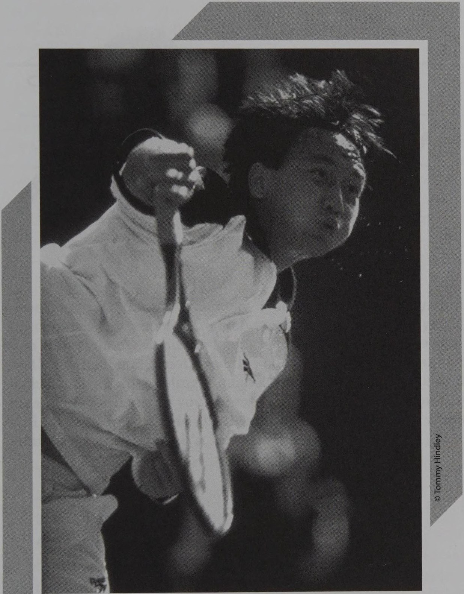
Hệ thống Tâm lý thể thao Ba chữ R vay mượn từ nhiều công cụ tâm lý thể thao, một số trong đó có thể không quen thuộc với bạn. Nếu bạn đã biết về các chủ đề được liệt kê bên dưới, thì hãy chuyển trực tiếp sang chương 3. Nếu chưa, hãy đọc chương này để học các kỹ thuật tiêu chuẩn nhằm dẫn dắt các suy nghĩ, cảm xúc và hành vi, cả trong và ngoài sân. Nếu bạn đã thành thạo chúng, bạn vẫn có thể muốn đọc lại chương này trước khi học cách tạo ra Ba chữ R được tùy chỉnh theo cá nhân của riêng bạn. Dưới đây là các công cụ: Hình dung Tự thoại Kỹ thuật STOP Ngôn ngữ cơ thể Thư giãn Hài hước Thiền định NO oO P WN BB
The Three R’s Sport Psychology System draws on many sport psychology tools, some of which may not be familiar to you. If you already know about the topics listed below, then proceed directly to chapter 3. If not, read this chapter to learn the standard techniques for channeling thoughts, feelings, and behavior both on and off the court. If you are experienced with them, you may still want to review this chapter before learning how to create your customized Three R’s. Here are the tools: . Imagery . Self-talk . STOP technique . Body language . Relaxation . Humor . Meditation NO oO P WN BB
Hình Dung Tinh Thần IMAGERY
Bạn có thể hình dung những gì bạn đã ăn cho bữa sáng hôm nay không? Bạn có thể hình dung bản thân thực hiện những cú đánh chạm đất mạnh mẽ, tạo ra một cú bóng ngắn, và di chuyển vào để kết thúc điểm bằng một cú thắng? Nếu có, bạn đã biết cách luyện tập "tưởng tượng". Các tài liệu lâm sàng và tâm lý thể thao đầy ắp các bài báo và các nghiên cứu ca lẻ mô tả việc sử dụng tưởng tượng để giúp các cá nhân giải quyết vấn đề và nâng cao hiệu suất trong nhiều lĩnh vực đa dạng.
Can you picture what you ate for breakfast this morning? Can you picture yourself hitting strong ground strokes, creating a short ball, and moving in to knock the ball off for a winner? If so, you already know how to practice ‘imagery. The clinical and sport psychology literature is filled with articles and case studies describing the use of imagery to help individuals solve problems and enhance performance in a variety of fields.
Trong Hệ thống Tâm lý thể thao Ba chữ R, tưởng tượng được đưa vào sử dụng trong giai đoạn Xem xét (Review) (chẳng hạn, khi bạn hình dung chiến thuật của mình và chọn kế hoạch nào bạn sẽ thực hiện ở điểm tiếp theo), và trong giai đoạn Đặt lại (Reset) (khi bạn tưởng tượng một cú ném bóng hoàn hảo, một động tác trôi chảy để thực hiện cú giao bóng, bám theo bóng về phía lưới để thực hiện một cú vô-lê, và thực sự giành được điểm). Bạn có thể luyện tập tưởng tượng bằng cách thực hiện bài tập thư giãn được mô tả sau trong chương này.
In the Three R’s Sport Psychology System, imagery comes into play during the Review phase (for example, when you picture your game plan and choose which one you will carry out on the next point), and in the Reset phase (when you imagine a perfect toss, a smooth motion to hit your serve, following the ball to the net for a volley, and actually winning the point). You can practice imagery by doing the relaxation exercise described later in this chapter.
Tự Nói Với Mình SELF-TALK
Nếu bạn đã tiếp xúc với môn quần vợt được một thời gian nào đó, bạn biết rằng các vận động viên quần vợt nói chuyện với chính họ. Những vận động viên thất vọng thường nói những điều tiêu cực với chính mình, và những lúc khác họ hét lên những câu để tự động viên: "Cố lên, John! Đi thôi!"
If you have been around the sport of tennis for any time at all, you know that tennis players talk to themselves. Frustrated players often say negative things to themselves, and other times they yell statements to pump themselves up: “Come on, John! Let’s go!”
Điều bạn có thể chưa biết là những vận động viên này đang luyện tập một công cụ tâm lý đã được nghiên cứu khá rộng rãi trong các tình huống lâm sàng. Ý tưởng đằng sau công cụ này là với tư cách con người, chúng ta không đơn giản là sống cuộc đời. Thay vào đó, chúng ta suy ngẫm về những gì đã xảy ra và đưa ra những phát ngôn với chính mình về những gì chúng ta đang trải qua. Những phát ngôn mà chúng ta đưa ra (thường là với chính mình, mặc dù đôi khi nói thành lời để người khác có thể nghe thấy) là thứ mà các nhà tâm lý học gọi là tự nhủ (self-talk).
What you might not know is that these players are practicing a psychology tool that has been studied quite extensively in clinical situations. The idea behind the tool is that as human beings we do not simply live life. Instead, we reflect on what has happened and we make statements to ourselves about what we are going through. These statements that we make (usually statements to ourselves, though sometimes made audible so others can hear them) are what psychologists refer to as self-talk.
Tự nhủ có sức mạnh như một công cụ tâm lý thể thao vì nó cung cấp phương tiện để bạn có thể định hướng một sự kiện theo chiều hướng tích cực hoặc tiêu cực. Có thể bạn đã nghe câu trích dẫn của Shakespeare rằng không phải bản thân sự việc là tốt hay xấu, mà chính suy nghĩ làm cho chúng như vậy. Hãy xem một ví dụ. Bạn đang chơi với một đối thủ mà bạn chưa từng thắng, và sau khi có hai break point, khi tỷ số 3-3 trong set đầu, bạn thua game khi đối thủ giữ được game giao bóng. Bạn nghĩ (hoặc nói) với chính mình: "Đồ ngốc! Đó là cơ hội để break của bạn, và bạn đã bỏ lỡ nó! Giờ bạn sẽ không bao giờ thắng được hắn ta!" Hay bạn nói: "Chà! Thật là thất vọng! Bạn đã có hắn, và để hắn lọt mất. Nhưng bạn đã từng có hắn, và bạn có thể đánh bại hắn một lần nữa!"
Self-talk has power as a sport psychology tool because it provides the means by which you can turn an event in a positive or negative direction. You may have heard the quote from Shakespeare that it’s not things themselves that are good or bad, but the thinking that makes them so. Consider an example. You are playing against an opponent you have never beaten, and after having two break points, when tied at 3-3 in the first set, you lose the game as your opponent holds serve. Do you think (or say) to yourself: “You dummy! That was your chance to break, and you blew it! Now you’ll never beat him!” Or do you say: “Wow! What a disappointment! You had him, and let him go. But you did have him, and you can get him again!”
Hãy nhận ra sự khác biệt giữa hai phát ngôn. Phát ngôn thứ nhất hoàn toàn tiêu cực. Phát ngôn thứ hai thừa nhận điều tiêu cực, nhưng rồi chuyển phát ngôn theo chiều hướng tích cực: "Bạn có thể đánh bại hắn một lần nữa."
Notice the difference in the two statements. The first is totally negative. The second recognizes the negative, but then turns the statement in a positive direction: “You can get him again.”
Bạn có thể tự rèn cho mình tránh xa lời tự nhủ tiêu cực và thay vào đó nuôi dưỡng lời tự nhủ cân bằng. Lời tự nhủ tiêu cực bao gồm những từ ngữ miệt thị bạn, lối chơi của bạn, và toàn bộ tình huống, chẳng hạn như: "Bạn thật tệ hại. Bạn sẽ không bao giờ làm được. Thật lố bịch. Bạn không thể thắng nổi cô ta. Giờ bạn sẽ không bao giờ làm được nữa. Thế là thứ hạng của bạn tiêu tan. Bạn là kẻ thua cuộc!"
You can teach yourself to avoid negative self-talk and cultivate balanced self-talk instead. Negative self-talk includes words that disparage you, your play, and the entire situation, such as: “You’re terrible. You’ll never make it. That was ridiculous. You can’t beat her. Now you'll never make it. There goes your ranking. You're a loser!”
Những phát ngôn cân bằng mang tính hành vi; chúng bao gồm cả mặt tiêu cực lẫn mặt tích cực. Chúng đề cập đến những hành vi cụ thể như: "Cú giao bóng đó thật tệ [không phải con người bạn tệ, mà là chính hành vi đó]. Bạn đã có hắn, và bạn đã để hắn lọt mất." Điều ngược lại với tính hành vi sẽ là đưa ra những phát ngôn mang tính phổ quát và tiêu cực về bạn với tư cách một con người hay một vận động viên: "Bạn thật là trò cười!" hay "Bạn chẳng chơi nổi tí nào, thà bỏ cuộc ngay bây giờ đi!"
Balanced statements are behavioral; they include both the negatives and the positives. They include specific behaviors such as: “That serve was terrible [not you as a person are terrible, but the behavior]. You had him, and you let him get away.” The opposite of behavioral would be to make global and negative statements about yourself as a person or a player: “You are a joke!” or “You can’t play at all, better quit right now!”
Bởi vì những phát ngôn cân bằng bao gồm cả tiêu cực lẫn tích cực, chúng kết thúc trên một nốt hy vọng: "Thật tệ, nhưng bạn vẫn chưa hết cơ hội đâu!" Hay, "Bạn đánh hỏng cú bóng ngắn, nhưng bạn vẫn có thể điều bóng trong điểm này và tạo ra một cơ hội khác."
Because balanced statements include both negative and positive, they end on a hopeful note: “That was bad, but you’re not out of it yet!” Or, “You missed the short ball, but you can work the point and create another one.”
Trong hệ thống Ba chữ R, lời tự nhủ được đưa vào sử dụng đặc biệt trong giai đoạn Buông bỏ (Release) và Xem xét (Review), khi bạn cân nhắc những gì vừa xảy ra và đánh giá tình huống. Trong giai đoạn Buông bỏ, hãy tránh những phát ngôn tiêu cực mang tính phổ quát về bản thân ("bạn thật tệ"), và thay thế bằng những phát ngôn hành vi cụ thể ("điều đó thật tệ"). Trong giai đoạn Xem xét, hãy mang tính hành vi về những gì vừa xảy ra, rồi lặp lại với chính mình những lời khích lệ giúp bạn quay trở lại với kế hoạch thi đấu. Chẳng hạn: "Bạn đứng xa và đã bị trừng phạt. Giờ là lúc lao lên. Đi thôi!"
In the Three R’s system, self-talk comes into play especially in the Release and Review phases, when you consider what just happened and evaluate the situation. During the Release, avoid global negatives about yourself (“you are terrible”), and replace them with specific behavioral statements (“that was terrible”). In the Review phase, be behavioral about what has just happened, and then repeat encouraging words to yourself that get you back into the game plan. For example: “You stayed back and got burned. Now is the time to get in. Let’s go!”
Thực hành Nếu bạn muốn cải thiện lời tự nhủ của mình, hãy bắt đầu bằng việc nhận ra những suy nghĩ của bạn theo sau các sự kiện xảy ra trong ngày. Hãy ghi lại một số trong số chúng. Nếu bạn nhận thấy mình cứ liên tục tự hạ thấp bản thân, hãy hướng tới việc thay thế những lời tự chê bai tiêu cực bằng những phát ngôn cân bằng nhìn nhận cả mặt tốt lẫn mặt xấu ("Tôi đã có một cú giao bóng hay, nhưng tôi đánh hỏng cú vô-lê"), và rồi kết thúc trên một nốt xây dựng. ("Tôi sẽ thực hiện trúng cú vô-lê tiếp theo!")
Practice If you would like to improve your self-talk, begin by noticing your thoughts following the events that take place during the day. Write down some of them. If you notice that you continue to put yourself down, work toward replacing negative put-downs with balanced statements that look at the good and the bad (“I had a good serve, but I missed the volley”), and then end on a constructive note. (“I’m going to make the next volley!”)
Nói tóm lại, lời tự nhủ cần vừa mang tính hành vi vừa tập trung vào điều tốt vừa xảy ra cũng như vào điều xấu. Bằng cách này, nó có thể tạo đà cho sự cải thiện.
In sum, self-talk ought to be both behavioral and focused on the good that just occurred as well as on the bad. This way it can set the stage for improvement.
Kỹ Thuật Dừng Lại STOP TECHNIQUE
Một đặc điểm độc đáo của hệ thống Ba chữ R là việc sử dụng kỹ thuật STOP để ngăn những lần Buông bỏ (Release) lấn át bạn giữa hai điểm. Mượn từ tâm lý học lâm sàng (nơi nó được gọi là chặn suy nghĩ — thought stopping), kỹ thuật này rất đơn giản. Nó bắt đầu bằng việc tự rèn cho mình dừng lại bất cứ điều gì bạn đang làm khi nghe từ "STOP." Hãy nhờ một người bạn giúp bạn. Tìm một căn phòng yên tĩnh, và bắt đầu đếm từ 1 đến 20. Nhờ người bạn hét "Dừng!" một cách bất ngờ. Bạn sẽ thấy rằng ngay khi điều này xảy ra, bạn lập tức ngừng đếm. Đây là một ví dụ về điều bạn sẽ làm trên sân, ngoại trừ việc lần đó bạn sẽ không nói ra thành lời, mà tự nói với chính mình. Bạn sẽ dùng nó để kết thúc giai đoạn Buông bỏ và sau đó để STOP giai đoạn Xem xét và chuyển sang giai đoạn Đặt lại (Reset).
One unique feature of the Three R’s system is use of the STOP technique to keep Releases from taking over between points. Borrowed from clinical psychology (where it is called thought stopping), the technique is very simple. It begins with training yourself to stop whatever you are doing at the word “STOP.” Ask a friend to help you. Find a quiet room, and begin counting from 1 to 20. Have your friend yell “Stop!” unexpectedly. You will find that as soon as this happens you stop counting immediately. This is an example of what you will be doing on the court, except then you will not say it out loud, but to yourself. You will use it to end the Release and later to STOP the Review and move on to the Reset phase.
Tất nhiên, bạn sẽ không thực sự hét lên "Dừng!" khi đang trên sân, mà chỉ đơn giản là nghĩ từ đó với chính mình. Sau khi hoàn tất giai đoạn Buông bỏ, hãy tự nói từ STOP với mình một cách rõ ràng và khẳng định. Điều đó có nghĩa là đã đến lúc DỪNG giai đoạn Buông bỏ, và chuyển sang giai đoạn Xem xét.
Of course, you will not literally yell “Stop!” while on the court, but will simply think the word'to yourself. After completing your Release, say the word STOP to yourself clearly and assertively. This means that it is time to STOP the Release, and move into the Review.
Kỹ thuật STOP có thể trông quá đơn giản đối với bạn đến mức gần như tầm thường. Nhưng nó hiệu quả! Và các vận động viên cần nó. Hãy nhìn quanh trên sân—bạn sẽ thấy nhiều vận động viên không có bất kỳ cơ chế nào để chặn đứng hành vi không phù hợp, và vì thế để những sự kiện tiêu cực kéo dài sang điểm tiếp theo, nơi chúng cản trở lối chơi của họ.
The STOP technique may seem so simple to you as to be almost trivial. But it works! And players need it. Look around on the court—you’ll see many players have no mechanism for halting inappropriate behavior, and therefore let negative events carry forward into the next point, where it interferes with their play.
Ngôn Ngữ Cơ Thể BODY LANGUAGE
Ngôn ngữ cơ thể là cách bạn truyền tải một thông điệp bằng hành vi thay vì bằng lời nói. Nó cũng là cách bạn đưa cơ thể mình trải qua những động tác nhất định—tức là diễn, nếu bạn muốn gọi như vậy—để bạn có thể cải thiện trạng thái cảm xúc và tinh thần của mình. Ví dụ kinh điển của điều này là người huýt sáo trong bóng tối để chống lại nỗi sợ. Bằng cách hành xử như thể tôi không sợ, tôi sẽ tự nhận ra mình đang hành xử theo cách này, và bắt đầu tin rằng có lẽ tôi không sợ bằng mình từng nghĩ. Áp dụng vào quần vợt, ý tưởng là hãy tỏ ra mạnh mẽ, tập trung và kiểm soát, cho dù bạn có thể không cảm thấy như vậy. Điều này có thể làm đối thủ của bạn mất phương hướng: Hầu hết mọi người không thể đọc được cảm xúc của bạn, mà chỉ thấy cách bạn hành xử. Nếu đối thủ thấy bạn tỏ ra mạnh mẽ trong khi tin rằng bạn lẽ ra đang cảm thấy yếu đuối, điều đó gieo rắc sự bối rối và có thể khiến họ tự hỏi: "Phải làm gì mới đánh gục được cậu?"
Body language is your way of sending a message with behavior instead of words. It is also your way of putting your body through certain motions—acting, if you will—so you can improve your emotional and mental state. The classic example of this is the person who whistles in the dark to combat fear. By acting as if I am not afraid, I will mentally notice myself acting in this way, and begin to believe that perhaps I am not as afraid as I thought I was. Applied to tennis, the idea is to act strong, together, and in control, even though you might not feel it. This can throw your opponent off: Most people can’t tell how you feel, and only see how you act. If your opponent sees you acting strong when believing you should be feeling weak, this sows confusion and may lead him or her to wonder: “What do I have to do to break you down?”
Theo cách tương tự, bằng cách tỏ ra mạnh mẽ, bạn gửi đến chính mình thông điệp rằng bạn đang kiểm soát tình huống tốt hơn những gì người khác có thể làm trong hoàn cảnh tương tự. Trong hệ thống Ba chữ R, ngôn ngữ cơ thể quan trọng ở cả ba giai đoạn. Chẳng hạn, trong giai đoạn Buông bỏ (Release), việc bắt chước lại cú đánh bạn vừa đánh hỏng (một trong những cách Buông bỏ mang tính xây dựng nhất) là điều bạn có thể tự rèn cho mình làm như một cách chống lại sự thất vọng vì các cú đánh hỏng. Tương tự, bằng cách đứng thẳng, chuyển vợt sang tay không cầm vợt, và nhìn vào mặt vợt trong khi bước đi để Xem xét tình huống, bạn đang thực hiện một hành vi cho thấy bạn đang kiểm soát tình huống, cho dù bạn có thể đang đối đầu với một đối thủ hùng mạnh. Và cuối cùng, chuỗi động tác Đặt lại (Reset) gần như hoàn toàn gồm những cử chỉ tích cực (cộng thêm một chút tưởng tượng tinh thần). Ba chữ R là điều mà bạn bắt đầu và mang theo suốt hành trình như một cách đưa tâm trí và trái tim của bạn lên tầm tập trung cần thiết để thi đấu ở đỉnh cao thành tích ở điểm tiếp theo.
In a similar vein, by acting strong you send to yourself the message that you have the situation more under control than others might under similar circumstances. In the Three R’s system, body language is important in all three phases. For example, in the Release, the act of imitating the shot you just missed (one of the most constructive Releases possible) is something you can train yourself to do as a way to combat frustration over missed shots. Similarly, by standing tall, switching your racket to the nonplaying hand, and looking at the strings as you walk to Review the situation, you are engaging in a behavior that says you are in control of the situation, even though you might be facing a formidable opponent. And finally, the Reset routine is made up almost entirely of positive body language (with the addition of some mental imagery). The Three R’s is something that you begin and carry all the way through as a way of bringing your mind and heart to the level of focus required to play at peak performance on the next point.
Thực hành Nếu bạn muốn thử nghiệm tác động của ngôn ngữ cơ thể lên chính trò chơi quần vợt của mình, hãy thử tỏ ra mình đang kiểm soát giữa hai điểm trong một trận đấu tập, cho dù bạn không cảm thấy mình như vậy. Hãy xem bạn có nhận ra kết quả trong cách bạn cảm nhận về bản thân hay không. Khi đối mặt với nghịch cảnh, hãy tỏ ra mình đang kiểm soát tình huống, cho dù bạn không cảm thấy như vậy. Rõ ràng, một mình ngôn ngữ cơ thể tích cực có lẽ không đủ để cứu vãn tình thế, dù nó là một công cụ tâm lý thể thao then chốt cần được dùng kết hợp với những công cụ khác được liệt kê trong chương này để giúp bạn tận dụng hệ thống Ba chữ R.
Practice If you would like to experiment with the effects of body language on your own tennis game, try acting as if you are in control between points in a practice match, even if you do not feel you are. See if you notice the result in the way you feel about yourself. As you face adversity, act as if you are in control of the situation, even though you do not feel like you are. Obviously, positive body language alone may not carry the day, although it is a critical sport psychology tool to be used in conjunction with the others listed in this chapter to help you make the Three R’s system work for you.
Thư Giãn RELAXATION
Thật khó để vừa căng thẳng vừa thư giãn cùng một lúc—vì vậy bằng cách đưa cơ thể bạn vào trạng thái thư giãn, bạn đẩy lùi cảm giác căng thẳng. Kết quả là, các kỹ thuật thư giãn là một nét đặc trưng của liệu pháp hành vi, và chúng cũng được dùng trong các hình thức tự giúp đỡ khác. Nguyên tắc cơ bản là con người tự nhiên căng cứng ra trước lo âu và sợ hãi, vì vậy một cách để chống lại lo âu và sợ hãi là thực sự thư giãn các cơ bắp. Mặc dù điều này không hoàn toàn xóa tan được nỗi sợ và lo âu, nó cung cấp một công cụ hữu ích để đưa chúng xuống một mức mà bạn có thể tận dụng chúng một cách xây dựng.
It is hard to be both uptight and relaxed at the same time—so by putting your body into a relaxed state, you combat uptight feelings. As a result, relaxation techniques are a hallmark of behavior therapy, and they’re also used in other forms of self-help. The underlying principle is that people naturally tense up in the face of anxiety and fear, so one way to combat anxiety and fear is literally to relax the muscles. While this does not totally eliminate fear and anxiety, it provides a useful tool for bringing them to a level where you can make constructive use of them.
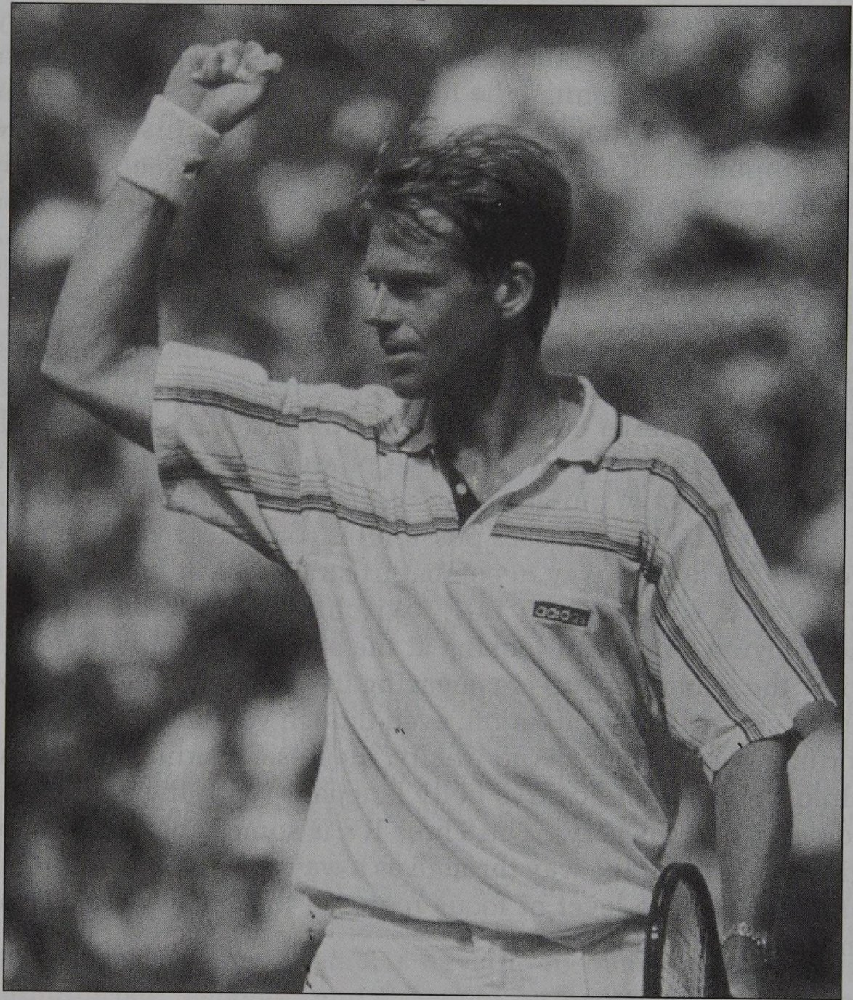
Có ít nhất ba cách mạnh mẽ để thư giãn. Cách thứ nhất là nhắm mắt lại và hướng tới một trạng thái thư giãn tinh thần, và thông qua lời tự nhủ và tưởng tượng tự bảo mình hãy thư giãn.
There are at least three powerful ways to relax. The first is to close your eyes and reach for a state of mental relaxation, and through self-talk and imagery tell yourself to relax.
Cách thứ hai để thư giãn là thông qua hơi thở sâu. Yoga Hatha tập trung vào hơi thở và các động tác giãn cơ như một hình thức thư giãn, và các vận động viên quần vợt có thể dùng một phiên bản của nó trên sân. Trước khi làm vậy, bạn phải học kỹ năng này. Hãy bắt đầu bằng việc tìm một chỗ thoải mái và nhắm mắt lại (nằm trên ghế dựa hay trên giường là tốt nhất). Từ từ hít không khí vào, lấp đầy cơ hoành rồi đến phần trên của phổi trong khi đếm đến 5, 6, hoặc 7, giữ hơi thở trong khoảng thời gian như vậy, rồi từ từ thở ra trong cùng 5 đến 7 nhịp đếm. Hãy làm điều này hai hay ba lần và để ý sự thư giãn lan tỏa khắp cơ thể bạn. Về sau, bạn có thể rút ngắn thời gian còn vài giây để hít vào, vài giây để giữ hơi, và vài giây để thở ra.
A second way to relax is through deep breathing. Hatha yoga focuses on breathing and stretching as a form of relaxation, and tennis players can use a version of this on the court. Before doing so, you must learn the skill. Start by finding a comfortable place and closing your eyes (lying on a recliner or on a bed is best). Slowly take in air, filling the diaphragm and then the upper lungs while counting to 5, 6, or 7, hold the breath for that same period, and then slowly let it out for the same 5 to 7 counts. Do this two or three times and notice the relaxation that flows through your body. Later, you can shorten the time to a few seconds in, a few to hold the breath, and a few to let it out.
Cách tiếp cận thứ ba là thư giãn cơ bắp sâu, lần đầu được hệ thống hóa bởi Edmund Jacobson trong cuốn You Must Relax (Bạn Phải Thư Giãn), từ những năm 1930. Kỹ thuật này bao gồm việc căng rồi giãn các nhóm cơ khác nhau trong cơ thể. Một khi sự căng thẳng được buông bỏ, các cơ bắp tự nhiên thư giãn. Đây là một quy trình thư giãn cơ bắp sâu có thể giúp bạn học cách thư giãn. Kỹ thuật này có thể được rút gọn để dùng trên sân.
A third approach is deep muscle relaxation, first formulated by Edmund Jacobson in You Must Relax, back in the 1930s. The technique involves tensing and untensing different muscle groups in the body. Once the tension is given up, the muscles naturally relax. Here is a procedure for deep muscle relaxation that can help you learn how to relax. The technique can be shortened for use on the court.
Hãy bắt đầu bằng việc luyện tập chuỗi các động tác này:
Start by practicing this series of movements:
- 1. Bàn tay và cẳng tay phải và trái: Nắm chặt tay thật chặt và1. Right and left hand and forearm: Make very tight fists and
rồi buông ra.
then let them go.
- 2. Cánh tay trên phải và trái: Ấn khuỷu tay bạn xuống vào tay vịn2. Right and left upper arms: Press your elbows down into
của ghế hay vào giường. Trong khi ấn xuống, đưa cánh tay trên của bạn về phía lồng ngực. Rồi buông lỏng hoàn toàn.
the armrest of the chair or into the bed. While pressing down, move your upper arms toward your rib cage. Then release all the way.
- 3. Trán: Nhướng lông mày cao hết sức có thể, rồi3. Forehead: Raise your eyebrows as high as you can, then
buông ra. (Nếu động tác này không tạo ra sự căng, hãy thử cau mày thật sâu.)
release. (If this movement does not produce tension, try making a deep frown.)
- 4. Giữa khuôn mặt: Với mí mắt nhắm chặt, hãy nhăn4. Middle face: With your eyelids shut tightly, wrinkle your
mũi, rồi buông ra.
nose, then release.
- 5. Hàm: Trong khi ấn lưỡi vào vòm miệng,5. Jaws: While pressing your tongue to the roof of your mouth,
hãy nghiến chặt răng, rồi buông ra.
clench your teeth tightly, then release.
- 6. Cổ: Kéo cằm xuống sát ngực, và đồng6. Neck: Pull your chin down to your chest, and at the same
thời kéo đầu bạn về phía sau bằng các cơ ở phía sau cổ, rồi buông ra.
time pull your head back with the muscles at the rear of your neck, then release.
- 7. Vai và lưng trên: Nhún vai như thể bạn đang7. Shoulders and upper back: Shrug your shoulders as if you
cố chạm vào tai mình, rồi buông ra.
were trying to touch your ears, then release.
- 8. Bụng: Hóp bụng vào trong khi đẩy nó xuống.8. Stomach: Suck your stomach in while forcing it downward.
Hãy làm cho nó cứng lại, như thể bạn đang chờ ai đó đấm vào bụng mình, rồi để nó mềm nhão ra.
Make it hard, as if you expected someone to hit you with a fist, then let it go slack.
- 9. Đùi: Căng cơ bắp ở đùi bạn, rồi buông ra.9. Thighs: Tense the muscles in your thighs, then release.
- 10. Bắp chân: Gập bàn chân lên trên về phía ống chân như thể bạn10. Calves: Bend your feet upward toward your shins as if you
đang cố chạm các ngón chân vào ống chân mình, rồi buông ra.
were trying to touch your shins with your toes, then release.
Khi bạn đã quen với cảm giác của từng động tác, bạn đã sẵn sàng để bắt đầu sử dụng thư giãn tiến bộ.
When you are familiar with how each movement feels, you are ready to begin using progressive relaxation.
Tìm một căn phòng yên tĩnh nơi bạn sẽ không bị quấy rầy hay phân tâm. Hãy để đèn mờ.
¢ Find a quiet room where you will not be disturbed or distracted. Keep the lights dim.
Chọn một chiếc giường, ghế sofa, hay ghế dựa êm ái.
¢ Choose a comfortable bed, couch, or overstuffed recliner.
Mọi bộ phận của cơ thể bạn phải được nâng đỡ mà không gắng sức; nếu bạn phải gắng giữ nguyên tư thế, bạn sẽ không thể thư giãn một cách hoàn toàn.
All parts of your body must be supported without strain; if you have to work to stay in place, you will not be able to relax completely.
Mặc quần áo rộng rãi. Cởi bỏ mọi quần áo chật hay đồ lót, cũng như giày dép, kính mắt, và kính áp tròng. Bắt đầu bằng việc tự làm cho mình thoải mái hết mức có thể.
¢ Wear loose-fitting clothing. Remove any tight clothes or undergarments, as well as shoes, eyeglasses, and contact lenses. e Start by making yourself as comfortable as possible.
Tựa lưng vào cho đến khi bạn cảm thấy được đỡ hoàn toàn.
¢ Settle back until you feel completely supported.
Hít một hơi sâu. Lấp đầy phổi bạn bằng không khí và giữ hơi trong 5 giây. ° Thở ra và để bản thân bạn bắt đầu thư giãn, buông bỏ sự căng thẳng trong cơ thể bạn.
¢ Take a deep breath. Fill your lungs with air and hold your breath for 5 seconds. ° ¢ Release your breath.and let yourself begin to relax, letting go of the tension in your body.
Căng cơ bắp của bàn tay và cẳng tay bạn. Giữ sự căng đó trong 5 đến 7 giây. Quan sát các cảm giác; hãy nhận biết sự căng này có cảm giác như thế nào.
¢ Tense the muscles of your hands and forearms. Hold that tension for 5 to 7 seconds. Study the feelings; be aware of what this tension feels like.
Thư giãn. Buông bỏ sự căng thẳng ngay lập tức và hoàn toàn, không phải dần dần. Cảm nhận sự thư giãn lan vào cánh tay và bàn tay bạn.
° Relax. Release the tension immediately and completely, not gradually. Feel the relaxation spread into your arms and hands.
Quan sát nó; hãy nhận biết sự khác biệt giữa thư giãn và căng thẳng. Tận hưởng cảm giác dễ chịu đó trong 20 đến 30 giây. Lặp lại quy trình trên cánh tay trên: Căng cơ bắp và giữ trong 5 đến 7 giây (hãy chọn một khoảng thời gian cảm thấy phù hợp với bạn). Tập trung vào sự căng. Rồi buông lỏng cơ bắp và tập trung vào cảm giác thư giãn trong 20 đến 30 giây. Hãy để ý sự khác biệt giữa hai cảm giác. Tận hưởng những cảm giác dễ chịu khi các cơ bắp bạn nới lỏng và thư giãn.
Study it; be aware of the difference between relaxation and tension. Enjoy the pleasant sensation for 20 to 30 seconds. e Repeat the procedure on the upper arms: Tense the muscles and hold for 5 to 7 seconds (find a time length that feels right for you). Focus on the tension. Then release the muscles and concentrate on the feeling of relaxation for 20 to 30 seconds. Notice the difference between the two feelings. Enjoy the pleasant sensations as your muscles loosen and relax.
Chuyển sang nhóm cơ tiếp theo và thực hiện động tác được khuyến nghị. Lặp lại nó, rồi chuyển sang nhóm cơ tiếp theo, và nhóm tiếp theo nữa, và cứ thế cho đến khi bạn đã hoàn thành tất cả các động tác hai lần cho mọi nhóm cơ. Khi bạn nằm bất động, hãy dùng trí óc khám phá từng nhóm cơ bạn đã thư giãn. Nếu bạn cảm thấy còn sự căng sót lại ở bất kỳ vùng nào, chỉ cần lặp lại động tác căng-và-giãn cho vùng đó. Nếu bạn đã thoát khỏi căng thẳng, hãy lặng lẽ tận hưởng cảm giác bình yên, thanh thản của mình. Kết thúc bằng việc tưởng tượng bản thân trong một khung cảnh yên bình, thanh thản—có thể là màu xanh mát an toàn của một khu rừng vắng, hay một bãi biển đầy nắng với chỉ mình bạn và tiếng sóng biển hiền hòa. Hãy tưởng tượng bạn ở bất cứ đâu bạn cảm thấy an toàn, yên ổn và thanh thản. Hãy hình dung nơi đó trong tâm trí và tưởng tượng bạn đang ở đó, hoàn toàn thoải mái, đã nghỉ ngơi và thư giãn, không bị quấy nhiễu bởi những sự kiện của thế giới bên ngoài. Tận hưởng trạng thái thanh bình này trong 10 phút, hoặc bao lâu tùy thích.
¢ Move on to the next muscle group and perform the recommended movement. Repeat it, and then move on to the next muscle group, and the next, and so on until you have completed all the movements twice for all the muscle groups. e As you lie without moving, mentally explore each of the muscle groups you have relaxed. If you feel any remaining tension in any area simply repeat the tense-and-relax movement for that area. If you are free of tension, quietly enjoy your calm, peaceful feelings. e End by imagining yourself in a calm, peaceful scene—it might be the green security of a quiet forest, or a sunlit beach with you alone and listening to the gentle ocean waves. Imagine yourself anywhere you feel safe and secure and at peace. Visualize the place in your mind and picture yourself there, completely at ease, rested and relaxed, untroubled by the events of the outside world. Enjoy this peaceful state for 10 minutes, or for as long as you like.
Bạn có thể thấy dễ hơn nếu ghi lại các hướng dẫn này vào băng ghi âm, cùng với các tín hiệu thời gian thích hợp. Điều này giải phóng bạn để tập trung vào động tác mà không phải nhớ phải làm gì tiếp theo.
You may find it easier to record these instructions on tape, along with the proper timing cues. This frees you to concentrate on the movement without having to remember what to do next.
Thư giãn tiến bộ mang lại nhiều lợi ích nhất khi được thực hành hai lần một ngày. Một khi bạn đã thực hành nó trong vài ngày, bạn sẽ thấy mình có thể thư giãn dễ dàng hơn và nhanh hơn nhiều. Như với mọi kỹ năng, luyện tập tạo nên khác biệt lớn; nhưng một khi đã thành thục, thư giãn cơ bắp sâu là một vũ khí vô cùng hiệu quả chống lại căng thẳng.
Progressive relaxation produces the most benefit when it is practiced twice a day. Once you have practiced it for a few days you will find yourself able to relax more easily and much more quickly. As with any skill, practice makes a great difference; but once it is learned, deep muscle relaxation is a most effective weapon against stress.
Ứng dụng trong quần vợt Rõ ràng, bạn không thể nằm xuống giữa sân để thực hiện hơi thở sâu hay thư giãn cơ bắp sâu. Tuy nhiên, nếu bạn tự luyện tập các kỹ thuật này, bạn sẽ sớm đạt đến mức có thể thực hiện một phiên bản rút gọn trong tư thế đứng. Bạn sẽ có thể, chẳng hạn, căng cơ thể trong giây lát rồi buông ra, kích hoạt phần lớn sự thư giãn mà bạn đã học đạt được thông qua bài tập thư giãn cơ bắp sâu đầy đủ. Bạn cũng sẽ có thể lấy một hơi thở sâu, thở ra từ từ, và tự định tâm để duy trì cảm giác thanh bình và cân bằng này. Hãy kết hợp
Tennis applications Obviously, you can’t lie down in the middle of the court to do deep breathing or deep muscle relaxation. If you practice these techniques on your own, however, you soon will reach a point where you can perform a shortened version on your feet. You will be able, for example, to tense your body briefly and then let go, triggering much of the relaxation you learned to attain through the full deep muscle relaxation exercise. You also will be able to take one deep breath, let it out slowly, and center yourself to maintain this sense of peace and balance. Combine
~ các kỹ thuật này—căng rồi giãn cơ bắp, rồi đến một hơi thở sâu—và bạn đã có một công cụ thư giãn mạnh mẽ để dùng bất cứ khi nào bạn muốn.
~ these techniques—muscle tensing and relaxing, followed by a deep breath—and you have a powerful relaxation tool to use any time you wish.
Trong hệ thống Ba chữ R, bạn luôn thư giãn như một phần của chuỗi động tác Đặt lại (Reset), ngay cả khi bạn cũng muốn tự thúc đẩy. Bạn cũng có thể thư giãn trong giai đoạn Xem xét để giúp đầu óc mình sáng suốt. Khái niệm là dùng khoảng thời gian giữa hai điểm để đưa sự thư giãn vào như một sự kiện xen giữa hai điểm thi đấu chủ động. Điều này cho phép bạn chơi với tinh thần tươi mới, không bị sự căng thẳng còn dư từ điểm trước cản trở việc bạn cần làm ở điểm này.
In the Three R’s system, you always relax as part of your Reset routine, even when you want to rev up as well. You also can relax during the Review phase to help clear your mind. The concept is to use the time between points to build in relaxation as an intervening event between two points of active play. This lets you play fresh, without residual tension from a previous point interfering with what you need to do for the current one.
Hài Hước HUMOR
Tiếng cười có thể đóng một vai trò trong việc giảm căng thẳng, mang lại cảm giác khỏe mạnh tổng thể cho cơ thể và hỗ trợ quá trình hồi phục. Để có một mô tả sinh động về quá trình này, hãy xem cuốn Anatomy of an Illness (Giải phẫu một căn bệnh) của Norman Cousins. Bên cạnh tác dụng thư giãn của tiếng cười, hài hước cho phép bạn với tư cách một vận động viên quần vợt phá vỡ sự căng thẳng, và nhìn nhận trận đấu từ một góc nhìn khác. Điều này có thể là một sự thúc đẩy mạnh mẽ cho sự tự tin của bạn—và thường có thể được dùng để giúp bạn thoát khỏi vết xe của lối chơi tệ hại và nâng bạn lên một tầm thành tích mới. ; Bạn có thể trau dồi hài hước để nâng tầm quần vợt của mình như thế nào? Hãy bắt đầu bằng việc hiểu rằng bất kỳ cơ hội nào bạn có để cười, dù qua sách, truyện tranh, phim ảnh, vở kịch, hay đơn giản là đùa giỡn cùng bạn bè, đều là một cách thực hành nghệ thuật để cho hài hước và tiếng cười trở thành một phần cuộc sống bạn và do đó cả trò chơi của bạn. Sự chuyển giao từ cuộc sống hàng ngày sang sân quần vợt sẽ tự nhiên hơn nếu bạn cho phép mình cười ở những khía cạnh khác của cuộc sống khi chúng diễn ra.
Laughter can play a role in reducing stress, bringing a general feeling of well-being to the body and helping the healing process. For a vivid description of this process, see Norman Cousins’ Anatomy of an Illness. In addition to the relaxing effects of laughter, humor allows you as a tennis player to break the tension, and to view the match from a different perspective. This can be a huge boost to your confidence—and often can be used to help you get out of a rut of bad play and lift you to a new level of performance. ; How can you cultivate humor to enhance your tennis? Start by knowing that any opportunity you have to laugh, whether through books, comics; movies, plays, or simply joking around with your friends, is a way of practicing the art of letting humor and laughter be a part of your life and consequently your game. The transfer from everyday life to the tennis court will be more natural if you allow yourself to laugh at other aspects of living as they occur.
Ngoài ra, hai nguyên tắc khác sẽ giúp bạn tận dụng tốt hài hước trong quần vợt của mình. Thứ nhất, hãy tránh xa loại hài hước chế giễu đối thủ của bạn, hay loại xảy ra trên sự tổn thất của người khác. Thay vào đó, hãy tìm sự hài hước trong chính hành vi và thành tích của bạn như một cách tạo khoảng cách với những sai lầm. Khi tự chế giễu những sai lầm của mình, bạn Buông bỏ (Release) năng lượng tiêu cực và dọn đường cho một sự điều chỉnh ở điểm tiếp theo.
Beyond this, two other guidelines will help you make good use of humor in your tennis. First, steer clear of humor that makes fun of your opponent, or that occurs at someone else’s expense. Instead, look for the humor in your own behavior and your own performance as a way of distancing yourself from mistakes. When making fun of your own mistakes, you Release the negative energy and clear the way for a correction on the next point.
Hãy coi hài hước như một cách để tách mình khỏi điều vừa xảy ra.
Think of humor as a way to disengage from what just happened.
Mọi thứ hài hước hay, dù là hài kịch độc thoại trên sân khấu, trang viết, hay những câu chuyện cười giữa bạn bè, đều dựa trên việc nắm lấy một quan điểm hay một cách nhìn về vấn đề, khác với cách nhìn mà tất cả những người khác đang có lúc đó. Cái kết của một câu chuyện cười phát huy tác dụng bởi vì nó bất ngờ và làm ta ngạc nhiên. Và cười thì thấy sướng! Hãy tìm cơ hội để trêu đùa về chính mình chơi của bạn và giảm nhẹ gánh nặng của chính mình.
All good humor, whether stand-up comedy, the written word, or jokes among friends, is grounded in taking a perspective ora view of a problem that is different from the one that everyone else is taking at the time. The punch line to a joke works because it is unexpected and surprises us. And it feels good to laugh! Look for opportunities to make jokes about your own play and lighten your own load.
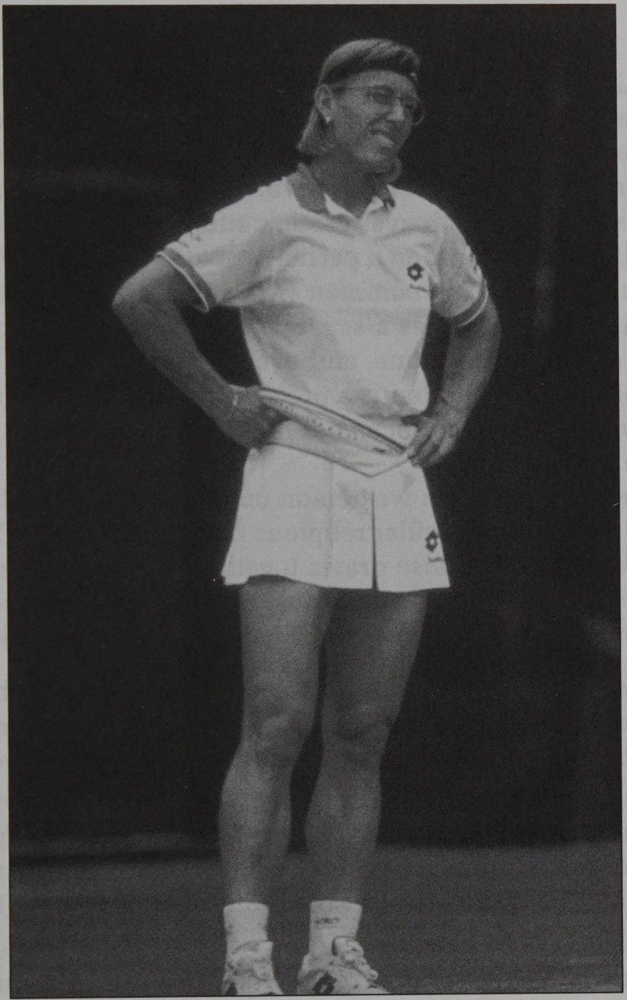
Thiền Định MEDITATION
Tùy thuộc vào triết lý sống và xu hướng tôn giáo của riêng bạn, thiền định có thể đã là một phần trong đời sống hằng ngày của bạn.
Depending upon your own philosophy of life and religious orientation, meditation might already be a part of your daily living.
Với một số người, thiền định mang hình thức lời cầu nguyện tập trung với một quyền năng cao cả hơn, và với những người khác, nó bao gồm việc tạo ra một trạng thái yên tĩnh và thư giãn, và, với đôi mắt nhắm lại, hoặc là không nghĩ về điều gì cả, hoặc tập trung vào một từ hay một khái niệm cụ thể. Thiền định có rất nhiều điểm chung với hình dung, tự nói chuyện với bản thân và thư giãn, nhưng chúng tôi xếp nó như một công cụ riêng biệt vì sự tập trung của nó vượt xa hơn từng công cụ này đứng riêng một mình, và thậm chí cả khi ba công cụ đó được kết hợp với nhau. Thiền định là một quá trình mà qua đó vận động viên có thể dự trữ năng lượng và tập trung không chỉ vào sự kiện sắp diễn ra, mà còn vào chính cuộc đời.
For some people, meditation takes the form of focused prayer to a higher power, and for others it involves establishing a quiet and relaxed state, and, with eyes closed, either thinking about nothing at all or focusing upon a particular word or concept. Meditation has a great deal in common with imagery, self-talk, and relaxation, but we list it as a separate tool because its focus goes beyond each of these alone, and even beyond the three of them taken together. Meditation is a process through which an athlete can reserve energy and focus not only on the event about to occur, but on life itself.
Bạn có thể tìm thấy nhiều tập sách viết về thiền định, thường từ quan điểm của một truyền thống tôn giáo cụ thể. Cuốn The Relaxation Response của Herbert Benson đã tập hợp nhiều yếu tố chung và điều chỉnh chúng cho cả mục đích thế sự lẫn tôn giáo. Như một dàn bài cơ bản, hầu hết các hệ thống thiền định đều bao gồm những bước như sau:
You can find volumes written on meditation, usually from the point of view of a particular religious tradition. Herbert Benson’s The Relaxation Response draws together many of the common elements and adapts them for secular as well as religious use. As a basic outline, most systems of meditation involve steps like these:
- 1. Luyện tập đều đặn: Hãy chọn một thời điểm mỗi ngày khi bạn quyết định1. Regular practice: Find a time each day when you choose to
thiền định (dù là buổi sáng, trong ngày, hay buổi tối), và tuân thủ một cách trung thành khoảng thời gian đặc biệt này, tách khỏi nhịp điệu thường lệ của ngày bạn.
meditate (whether morning, during the day, or evening), and faithfully adhere to this special time away from the routine of your day.
- 2. Chuyển sự chú ý khỏi các sự kiện: Bạn có thể làm điều này bằng cách nhắm2. Turn attention away from events: You can do this by closing
mắt lại, nhưng khái niệm cốt lõi là tránh xa âm thanh của radio và truyền hình, cũng như sự tương tác với những người khác, và thay vào đó tập trung vào điều gì đó có vẻ không liên quan đến các hoạt động thường ngày của bạn.
your eyes, but the underlying concept is to get away from the sounds of radio and television, as well as interaction with other people, and focus instead on something that is seemingly unrelated to your regular activities.
- 3. Tập trung vào một quyền năng cao cả hơn hay một từ đặc biệt. Tùy thuộc3. Focus on a higher power or special word. Depending upon
vào truyền thống tôn giáo của bạn, bạn có thể cảm nhận được sự hiện diện của Thiên Chúa hoặc một quyền năng cao cả hơn, mở tâm trí và trái tim bạn tiếp nhận sự tác động, sự chỉ dẫn và sự ủng hộ. Một số người sẽ khuyến khích quá trình này thông qua việc lặp lại một từ để đạt sự tập trung về tinh thần và tâm linh.
your religious tradition, you may experience the presence of God or a higher power, opening your mind and heart to influence, instruction, and support. Some will encourage this process through the repetition of a word to bring mental and spiritual focus.
- 4. Hơi thở sâu thư giãn. Làm chậm nhịp thở sẽ làm chậm4. Relaxed deep breathing. Slowing one’s breathing slows the
nhịp tim, và là một cách khác để tách mình khỏi các hoạt động thường ngày. Khi được thực hành cùng với các kỹ thuật trước đó, trải nghiệm thiền định được nâng cao nhờ việc điều chỉnh hơi thở để đem lại sự thư giãn.
heart rate, and is another way to disengage from regular activities. Practiced in combination with the preceding techniques, the meditation experience is enhanced through the regulation of breathing to bring relaxation.
Tóm Tắt SUMMARY
Không một kỹ thuật nào trong số này là độc quyền của tâm lý học thể thao. Quả thực, chúng đã được vay mượn từ nhiều truyền thống khác trong khoa học hành vi và các lĩnh vực tôn giáo và y học. Từ góc nhìn của tâm lý học thể thao, chúng cung cấp những công cụ cần thiết để nâng cao thành tích. Chúng tôi sử dụng tất cả chúng trong Hệ thống Tâm lý học Thể thao Ba Chữ R. Hệ thống tận dụng một hoặc nhiều công cụ trong số này ở mỗi trong ba giai đoạn.
None of these techniques is unique to sport psychology. Indeed, they have been borrowed from many other traditions in the behavioral sciences and the fields of religion and medicine. From the vantage point of sport psychology, they provide the necessary tools for enhancing performance. We draw on all of them in the Three R’s Sport Psychology System. The system makes use of one or more of these tools in each of the three phases.
Hồ Sơ Vận Động Viên — Martina Hingis PLAYER PROFILE
Mar HINGIS — Martina Hingis bắt đầu chơi tennis năm ba tuổi và bắt đầu thi đấu các giải đấu năm năm tuổi. Năm 1997, ở tuổi 16, cô trở thành tay vợt trẻ nhất trong kỷ nguyên Mở rộng vô địch Wimbledon, Cô khép lại năm 1997 với chín danh hiệu đơn tại các giải đấu và 5 danh hiệu đôi, đưa tổng số danh hiệu đơn trong sự nghiệp của cô lên 11 và danh hiệu đôi lên 8. Năm 1997 còn đáng chú ý bởi tại Giải Úc mở rộng, Martina đã giành danh hiệu Grand Slam đơn đầu tiên trong sự nghiệp kể từ khi chuyên nghiệp hóa ở tuổi 14, trở thành nhà vô địch Grand Slam trẻ nhất trong kỷ nguyên Mở rộng.
Mar HINGIS — Martina Hingis began playing tennis at the age of three and began playing tournaments at the age of five. In 1997, at age 16, she became the youngest player in Open Era play to win Wimbledon, She rounded out 1997 with nine singles tournament wins and 5 doubles:wins, pushing her number of career singles titles to 11 and doubles titles to 8. The year 1997 was also notable because at the Australian Open, Martina won her first career Grand Slam singles title since turning professional at 14, becoming the youngest Grand Slam winner in Open Era play.
" Ở thời điểm này trong sự nghiệp, Hingis được biết đến với lối chơi gần như hoàn hảo dù là cú trái tay, cú thuận tay, cú vô-lê hay cú giao bóng. Cô sử dụng những bài Đánh giá vững chắc và sự nhanh nhẹn để giữ lợi thế trước các đối thủ. Dù sân đất nện là mặt sân yêu thích của cô, cô đã thể hiện sự thống trị trên mọi mặt sân.
" At this point in her career, Hingis is known for a practically flawless game whether it be backhands, forehands, volleys, or serves. She uses solid Reviews and quickness to keep an upper hand against her opponents. Though clay is her favorite surface, she has shown a dominance on all surfaces.
Martina Hingis, được đặt tên theo Martina Navratilova, sinh ra ở Kosice, Slovakia, vào ngày 30 tháng 9 năm 1980 (Cô và gia đình chuyển sang Thụy Sĩ khi cô lên bảy). Cô xuất thân từ một gia đình ăn sâu với tennis. Hingis được huấn luyện bởi mẹ cô, Melanie Monitor, và cha cô, Karol Hingis, điều hành và huấn luyện một câu lạc bộ tennis tại Trubbach, Thụy Sĩ. Trong thời gian rảnh cô thích trượt tuyết, bóng đá, bóng rổ và cưỡi ngựa. Cô mê tín về việc đi đạp lên các vạch kẻ trên sân tennis.
Martina Hingis, named after Martina Navratilova, was born in Kosice, Slovakia, on September 30, 1980 (She and her family moved to Switzerland when she was seven). She comes from a family steeped in tennis. Hingis is coached by her mother, Melanie Monitor, and her father, Karol Hingis, manages and coaches a tennis club in Trubbach, Switzerland. In her spare time she enjoys skiing, soccer, basketball, and horseback riding. She is superstitious about walking on the tennis court lines.
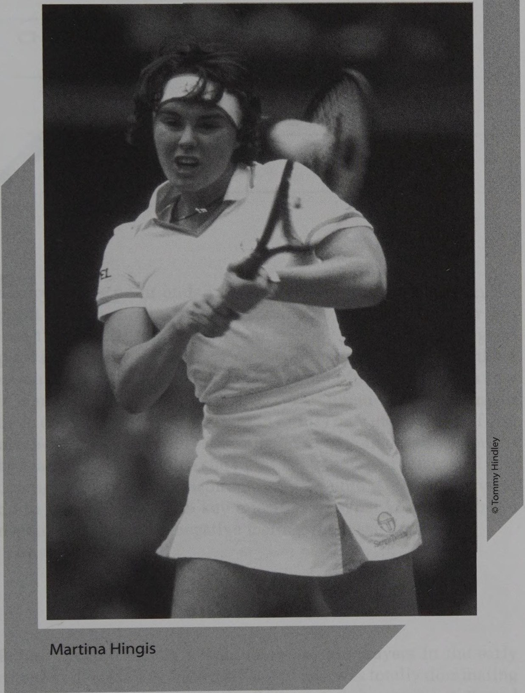
‘
‘
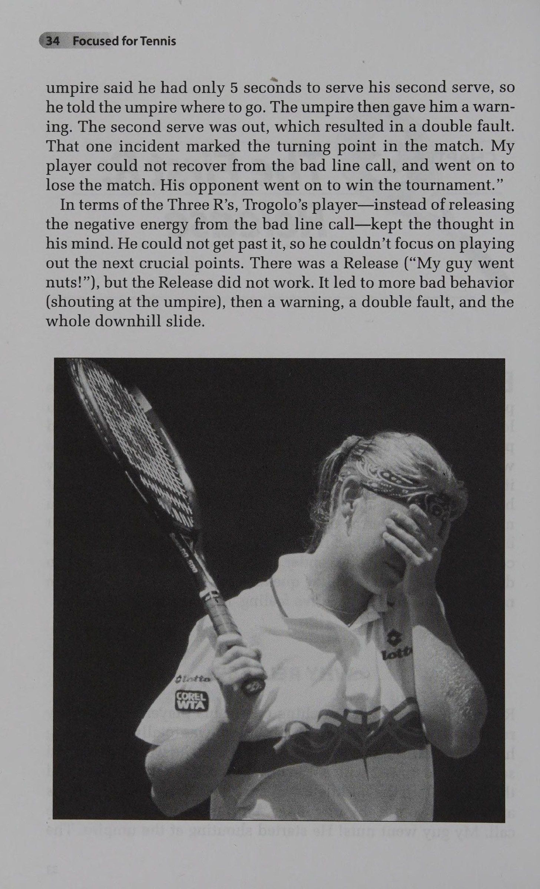
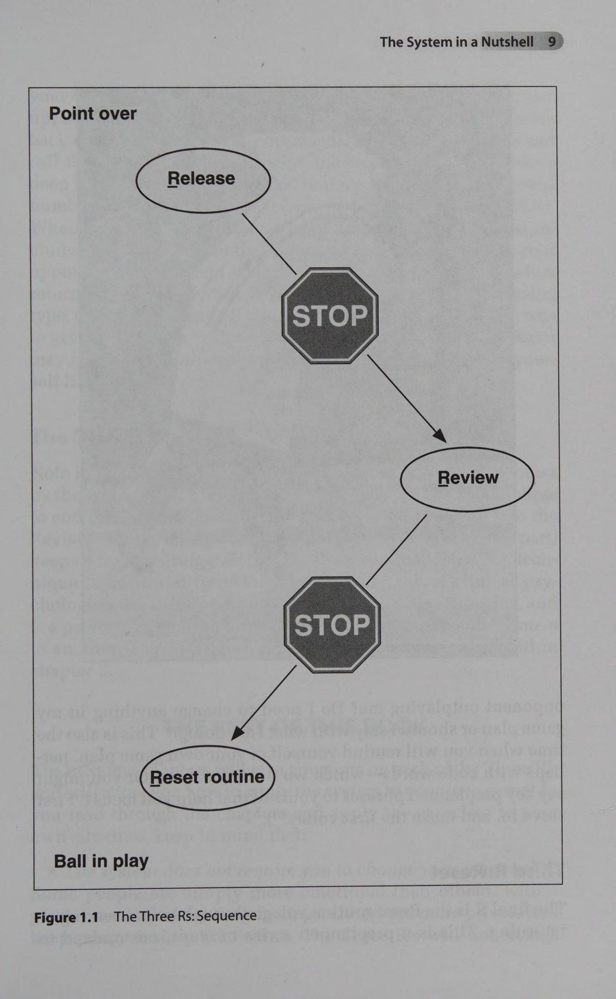
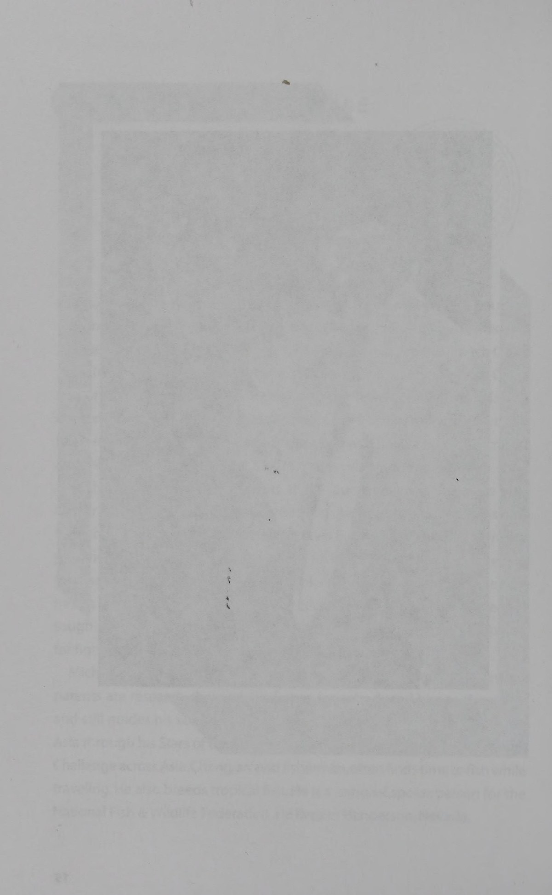
Chữ R Thứ Nhất: Buông Bỏ
Mỗi điểm tennis kết thúc bằng thắng hoặc thua: Bạn thắng điểm nhờ lỗi của đối thủ hoặc nhờ chính cú đánh hay của bạn, hoặc bạn thua điểm nhờ lỗi của chính bạn hoặc nhờ cú đánh hay của đối thủ. Nếu chỉ có vậy—một điểm thắng hoặc thua—thì sẽ không cần có một cuộc Giải phóng giữa các điểm. Nhưng tất cả chúng ta đều biết mọi chuyện phức tạp hơn thế nhiều. Là một con người, bạn có thể có những cảm xúc sâu sắc về chiến thắng hoặc thất bại của mình ở một điểm nhất định. Nếu bạn mắc một lỗi không đáng có, đặc biệt là ở một điểm quan trọng, thì bạn có thể tức giận với chính mình khi điểm đã kết thúc, hoặc bạn có thể cảm thấy chán nản, hoặc bạn có thể tự hỏi, “Trên đời này tôi phải làm gì mới thắng nổi một điểm!” Câu hỏi mấu chốt là: Bạn làm gì với suy nghĩ tiêu cực, cảm xúc tiêu cực, năng lượng tiêu cực đó?
Every tennis point ends in either a win or a loss: You win the point through an opponent’s error or your own good play, or you lose the point through your own error or your opponent’s good play. If that were all there is to it—a point won or lost—then there would be no need for a Release between points. But we all know it is more complicated than that. As a human being, you might have deep feelings about your win or loss on a given point. If you make an unforced error, especially on a big point, then you might be mad at yourself when the point is over, or you might feel discouraged, or you might wonder, “What in the world do I have to do to win a point!” The key question is: What you do with the negative thought, the negative feeling, the negative energy?
Trả lời: Hãy giải phóng nó!
Answer: Release it!
Tại Sao Phải Buông Bỏ? WHY RELEASE?
Robert Trogolo nhớ lại lần ông theo dõi một trong các học trò của mình ở vòng đầu Giải Trong nhà Chuyên nghiệp Mỹ. “Tay vợt của tôi đang hoàn toàn áp đảo đối thủ. Sau khi thắng set đầu 6-2, anh ấy đang dẫn 4—2, và đang giao bóng để dẫn 5—2 với lợi thế 40-love trong game. Anh ấy giao bóng đầu tiên vào giữa sân để ghi ace. Anh ấy tin chắc đó là một cú ace, và vị trọng tài vạch biên cũng vậy, nhưng trọng tài chính đã bác bỏ quyết định. Anh chàng của tôi phát điên! Anh ấy bắt đầu quát tháo trọng tài chính. Vị trọng tài chính nói anh ấy chỉ có 5 giây để thực hiện cú giao bóng thứ hai, nên anh ấy bảo trọng tài chính đi chỗ khác. Trọng tài chính sau đó đưa ra một lời cảnh cáo. Cú giao bóng thứ hai ra ngoài, dẫn đến lỗi giao bóng kép.
Robert Trogolo recalls watching one of his players in the early round of the U.S. Pro Indoors. “My player was totally dominating his opponent. Having won the first set 6-2, he was up 4—2, and serving to go up 5—2 with a lead of 40love in the game. He served the first ball up the middle for an ace. He thought for sure it was an ace, and so did the line judge, but the umpire overruled the call. My guy went nuts! He started shouting at the umpire. The umpire said he had only 5 seconds to serve his second serve, so he told the umpire where to go. The umpire then gave him a warning. The second serve was out, which resulted in a double fault.
Chính sự việc đó đánh dấu bước ngoặt của trận đấu. Tay vợt của tôi không thể hồi phục sau quyết định vạch biên tồi tệ đó, và tiếp tục thua trận. Đối thủ của anh ấy sau đó vô địch cả giải.”
That one incident marked the turning point in the match. My player could not recover from the bad line call, and went on to lose the match. His opponent went on to win the tournament.”
Xét về mặt Ba Chữ R, tay vợt của Trogolo—thay vì giải phóng năng lượng tiêu cực từ quyết định vạch biên tồi tệ đó—đã giữ suy nghĩ trong đầu. Anh ấy không thể vượt qua nó, nên không thể tập trung thi đấu những điểm mấu chốt tiếp theo. Đúng là đã có một cuộc Giải phóng (“Anh chàng của tôi đã phát điên!”), nhưng cuộc Giải phóng đó đã không phát huy tác dụng. Nó dẫn đến hành vi tồi tệ hơn (quát tháo trọng tài chính), rồi một lời cảnh cáo, một lỗi giao bóng kép, và cả một đà tuột dốc.
In terms of the Three R’s, Trogolo’s player—instead of releasing the negative energy from the bad line call—kept the thought in his mind. He could not get past it, so he couldn’t focus on playing out the next crucial points. There was a Release (“My guy went nuts!”), but the Release did not work. It led to more bad behavior (shouting at the umpire), then a warning, a double fault, and the whole downhill slide.
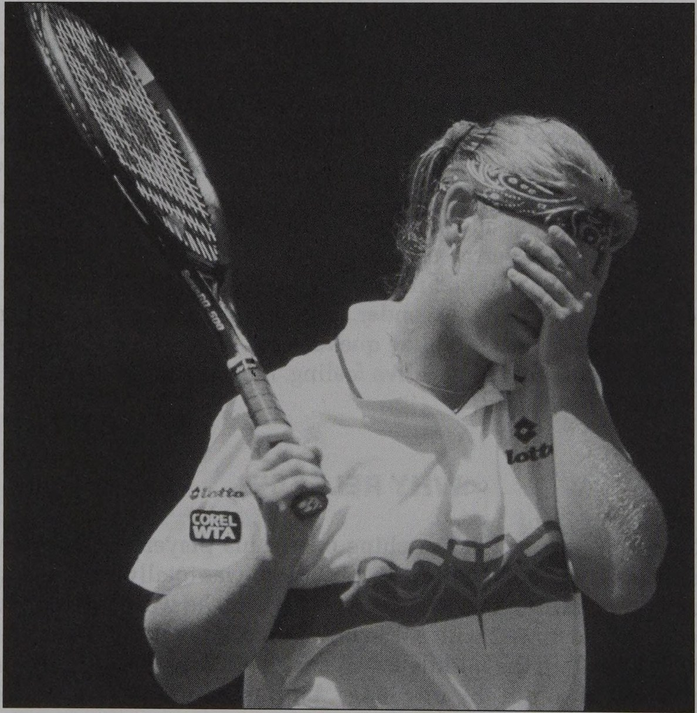
Ở dạng đơn giản nhất, một cuộc Giải phóng là sự bộc lộ cảm xúc và năng lượng sau khi một điểm đã kết thúc. Có những cuộc Giải phóng tốt và những cuộc Giải phóng tồi. Những cuộc Giải phóng tồi là những cuộc khiến bạn gặp rắc rối nhiều hơn những gì bạn đang gặp, khiến bạn cảm thấy tệ hơn về lối chơi của mình hoặc thậm chí bị phạt vì các lỗi vi phạm quy tắc. Những cuộc Giải phóng tốt là những cuộc cho phép bạn loại bỏ năng lượng tiêu cực—thực sự bỏ lại nó phía sau, để bạn có thể tiến lên.
In its simplest form, a Release is an expression of feelings and energy after a point is over. There are good Releases and bad Releases. Bad Releases are those that get you in more trouble than you are already in, leaving you feeling worse about your play or even getting socked with code violations. Good Releases are those that allow you to get rid of the negative energy—literally leave it behind, so you can move on.
Bắt Đầu Buông Bỏ STARTING YOUR RELEASE
Dựa trên chính trải nghiệm của bạn, điều gì là tồi tệ trong những cuộc Giải phóng trong danh sách này? - Đánh bóng qua hàng rào.
Based on your own experience, what’s bad about the Releases on this list? e Hitting a ball over the fence.
- Sử dụng những lời thô tục lớn tiếng. - Tự nhủ với bản thân, “Bạn tệ quá. Tôi không tin nổi bạn là một tay vợt tồi tệ đến thế nào! Bạn thật ngu ngốc!” - Tham gia đấu khẩu với đối thủ, có thể dẫn tới ẩu đả.
¢ Using loud profanity. e Telling yourself, “You are so bad. I can’t believe what a sorry excuse for a player you are! You are stupid!” e Engaging in verbal combat with your opponent, perhaps resulting in a fistfight.
Hãy xem xét kỹ hơn.
Let’s take a closer look.
- Đánh bóng qua hàng rào, hoặc vào khán đài. Nếu bạn vi phạm quy tắc về hành vi phá hoại dụng cụ, bạn bị phạt lỗi vi phạm quy tắc và mất một điểm. Tệ hơn nữa, bạn có thể làm ai đó bị thương. Còn nhớ khi Jimmy Connors đánh bóng vào khán đài và trúng một khán giả không? Rõ ràng, kiểu Giải phóng đó chỉ làm mọi thứ tệ hơn.
° Hitting a ball over a fence, or into the stands. If you break the rule about equipment abuse, you get a code violation and lose a point. Even worse, you might injure somebody. Remember when Jimmy Connors hit a ball into the stand and hit a spectator? Clearly, that kind of Release only makes things worse.
- Lời thô tục. Lại một lỗi vi phạm quy tắc nữa. Tệ hơn nữa, khi buông thả với ngôn ngữ thô tục, bạn chứng minh với chính mình và với đối thủ rằng bạn đang mất kiểm soát. Và suốt thời gian đó, đối thủ đang hưởng lợi từ bất hạnh của bạn.
¢ Profanity. Another code violation. Even worse, by going over the edge with profane language, you demonstrate to yourself and to your opponent that you are out of control. And all the while, your opponent is feeding off your misfortune.
- Lời nói tiêu cực. Khi bạn gọi mình là “tệ” hay “ngu ngốc,” bạn làm tình hình trầm trọng thêm. Lối chơi tồi là một phần của vấn đề; việc dán nhãn cho mình là tệ và ngu ngốc trở thành vấn đề thứ hai. Bạn có thể bắt đầu sống theo lời tiên đoán của chính mình—và chơi thậm chí còn tệ hơn!
¢ Negative talk. When you call yourself “bad” or “stupid,” you compound the situation. Bad play is one part of the problem; labeling yourself as bad and stupid becomes a second problem. You may start to live up to your own prophecy—and play even worse!
(Tennis đã đủ khắc nghiệt rồi, không cần bạn tự làm nó khó khăn hơn bằng cách tự đánh giá thấp mình!)
(Tennis is tough enough without your adding to it by getting down on yourself!)
- Đấu khẩu. Bất cứ điều gì khiến bạn xao nhãng khỏi nhiệm vụ đang làm (thực hiện các cú đánh, thi hành chiến thuật của bạn) đều có nguy cơ đẩy bạn lệch xa khỏi hướng đi.
¢ Verbal combat. Anything that distracts you from the task at hand (executing your shots, working your game plan) carries the risk of throwing you way off course.
Đi Bước Tiếp Theo TAKING THE NEXT STEP
Một cuộc Giải phóng tốt hơn là cuộc giúp bạn loại bỏ năng lượng, nhưng cho phép bạn ngẩng cao đầu, giữ vững phẩm giá, và trông mạnh mẽ trước đối thủ. Điểm cuối đó là một phần quan trọng của trò chơi tennis. Rốt cuộc, bạn là chỗ dựa thực sự duy nhất mà bạn có ngoài kia, và hình ảnh bạn thể hiện với đối thủ là thứ có thể tạo nên hoặc phá hỏng trận đấu của bạn. Nếu bạn trông mạnh mẽ, bạn đáng sợ hơn so với khi bạn trông như đang sụp đổ. Nếu bạn trông như đang sụp đổ, đối thủ được tiếp thêm sức mạnh và lao tới để kết liễu bạn.
A better Release is one that gets rid of the energy, but lets you hold your head high, maintain your integrity, and look strong to your opponent. The last bit is an important part of the game of tennis. After all, you are the only real support you have out there, and the image you project to your opponent is one that may make or break your game. If you look strong, you are more intimidating than if you look like you are falling apart. If you look like you are falling apart, your opponent gets pumped up and moves in for the kill.
Nếu, thay vì để năng lượng của bạn thoát ra theo cách làm bạn tụt xuống, bạn để nó thoát ra theo cách nói rằng, “Tôi không thích điều vừa xảy ra, nhưng tôi xử lý được! Hãy xem tôi tiến bộ!” Một số tay vợt hàng đầu làm điều này bằng hài hước, trò hề, hoặc những câu nói giúp họ xả hơi mà không làm hại trận đấu của mình. Ví dụ: - Bạn đánh cú vô-lê rơi vào lưới. Thay vì la hét hay quay đi với đôi vai rũ xuống và vẻ mặt chán chường, bạn lập tức bắt chước cú đánh mà bạn ước mình đã thực hiện, qua đó khóa chặt điều tích cực. Bạn biến một lỗi thành một cú đánh tưởng tượng được cải thiện, sẵn sàng cho cú tiếp theo còn hay hơn nữa khi bóng đang trong cuộc. Nếu bạn muốn xem điều này được thực hiện thế nào, hãy xem Boris Becker hoặc Michael Chang. Chúng tôi từng thấy Becker đánh bóng vào lưới, và lập tức lấy một quả bóng từ túi ra, thả xuống như thể anh đang ở trong một buổi tập, và thực hiện cú đánh một cách trôi chảy, với khoảng lưới vừa phải và cú xoáy lên mạnh, chuyền ngay cho cậu bé nhặt bóng ở góc sân.
What if, instead of letting your energy out in a way that demeans you, you let it out in a way that says, “I don’t like what just happened, but I can deal with it! Watch me get better!” Some of the top players do this with humor, antics, or phrases that let them blow off steam without harming their games. Forexample: ¢ You dump a volley into the net. Instead of screaming or turning away with slumped shoulders and a dejected look, you immediately imitate the shot you wish you had hit, thereby locking in the positive. You turn an error into an improved imaginary shot, ready for the next one to be even better when the ball is in play. If you want to see‘how this is done, watch Boris Becker or Michael Chang. We once saw Becker hit a shot into the net, and immediately take a ball from his pocket, drop it as if he were in a practice session, and hit the stroke smoothly, with good net clearance and heavy topspin, right back to the ball boy in the corner.
Anh không đập bóng trong giận dữ, anh chỉ sửa lại cú đánh mà mình đã hỏng. Michael Chang là một tay vợt khác cũng làm điều này. Chúng tôi đã thấy anh thực hiện cú đánh tưởng tượng ba, bốn lần giữa các điểm để chắc chắn rằng anh có hình ảnh rõ ràng về cú đánh đúng đắn có cảm giác như thế nào, cú mà anh vừa hỏng hoặc cú mà anh muốn xử lý đúng cách vào lần tiếp theo anh có cơ hội.
He wasn’t bashing the ball in anger, he just corrected the shot that he missed. Michael Chang is another player who will do this. We have seen him hit an imaginary shot three or four times between points to make sure he has a clear picture of what the proper shot feels like, the shot he just missed or the one he wants to handle correctly the next time he gets a chance.
- Bạn chơi một cú tồi. Thay vì nói, “Sao mày ngu quá,” bạn nói, “Không tin nổi!” Hãy nhấn mạnh rằng bạn khó chịu với một cú đánh đó, không phải cả cuộc đời bạn! Bằng cách chỉ trích một hành vi này, bạn mở ra khả năng rằng lối chơi của bạn có thể cải thiện, dù điểm hay cú đánh cụ thể đó có tồi. - Đối thủ tuyên bố bóng ra ngoài trong khi bạn cho rằng nó vào trong.
¢ You play a bad shot. Instead of saying, “You’re so stupid,” you say, “I can’t believe that!” Emphasize that you are upset with that one stroke, not your whole life! By criticizing this one behavior, you allow for the idea that your play can improve, even though that particular point or shot was bad. e Your opponent calls the ball out when you thought it was in.
Bạn làm điều mà Chris Evert từng làm. Thay vì một lời phản đối giận dữ, bạn trừng mắt nhìn vết bóng chạm. Không nói một lời, bạn “thách thức quyết định” bằng một cái trừng mắt.
You do what Chris Evert used to do. Instead of an angry protest, you glare at the spot where the ball hit. Without speaking a word, you “question the call” with a glare.
- Bạn mắc một lỗi không đáng có. Thay vì tự mắng mình, bạn ngước lên trời và dang rộng hai tay, như thể nói, “Sao lại làm tôi, lạy Chúa?”
¢ You make an unforced error. Instead of berating yourself, you look to the heavens and spread your arms wide, as if to say, “Why me, Lord?”
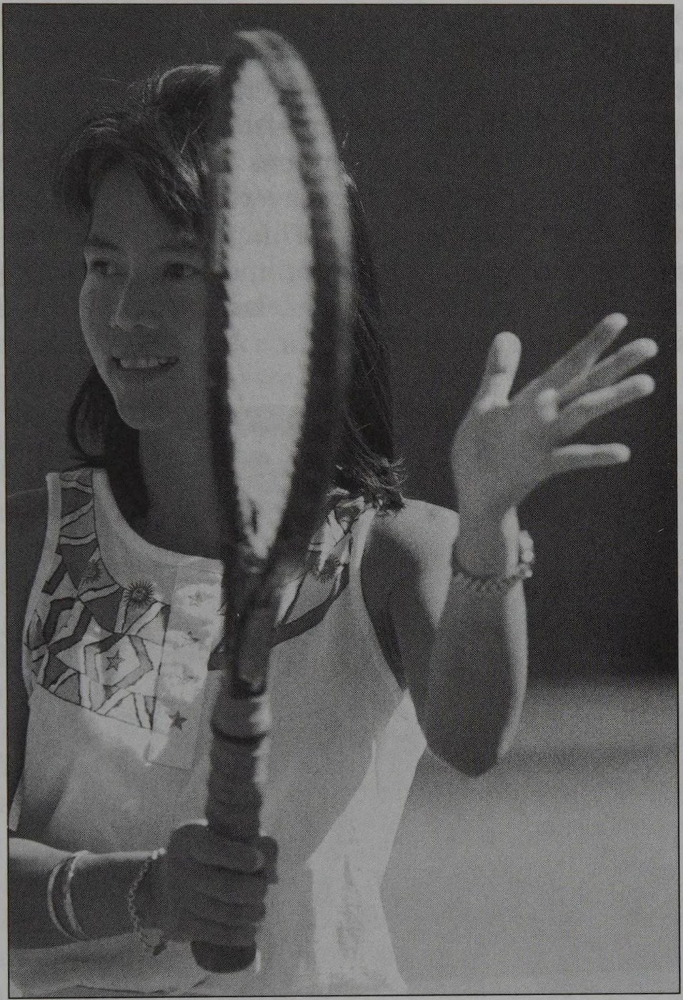
Trong những ví dụ này, bạn đang để cảm xúc của mình thoát ra (Giải phóng năng lượng, buông bỏ điểm đã qua), và bạn đang để chúng thoát ra mà không đẩy chính mình xuống vực cảm xúc.
In these examples, you are letting your feelings out (Releasing the energy, letting go of the point), and you are letting them out without throwing yourself into an emotional ditch.
Những tay vợt đạt phong độ cao nhất trong tennis đã hoàn thiện nhiều kiểu Giải phóng để họ luôn có nhiều lựa chọn, dù điều gì xảy ra trên sân. Đôi khi chỉ có tay vợt biết cuộc Giải phóng là gì, hay thậm chí rằng đã có một cuộc. Mọi thứ đang diễn ra tốt đẹp trong trận đấu, chưa có gì tồi tệ xảy ra, và sau một điểm, tay vợt chỉ đơn giản tự nghĩ, “Được rồi, cứ giữ vững.” Suy nghĩ này giải phóng năng lượng sau khi điểm đã kết thúc.
Peak performers in tennis have perfected a variety of Releases so that they always have several options, no matter what happens on the court. Sometimes only the player knows what the Release is, or even that there’s been one. Things are going well in the match, nothing bad has happened yet, and after a point, the player simply thinks to himself, “All right, keep it up.” This thought releases energy after the point is over.
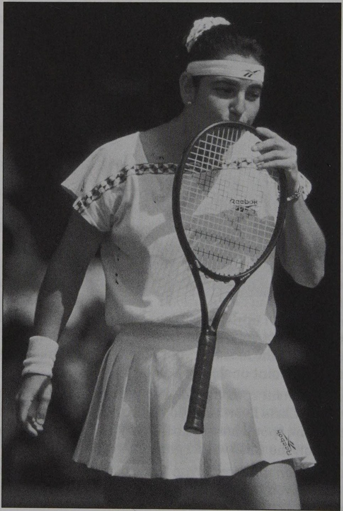
Trong một dịp khác, một tay vợt đã lội ngược dòng sau khi bị dẫn 0-40, và một cú đấm vào không khí kèm theo tiếng hô “Cố lên!” hoặc một cuộc Giải phóng thể chất nào khác giữ được đà. Trong một lúc khác, khi mọi thứ diễn ra tồi tệ, tay vợt có thể dùng hài hước để xả điều tiêu cực ra để nó không tràn về phía trước và nhuộm lên điểm tiếp theo. Chúng tôi từng thấy Jimmy Connors, sau một chuỗi cú đánh tồi, bước tới trao cây vợt cho một người trên khán đài như thể muốn nói, “Chắc chắn bạn chơi hay hơn tôi. Nào và thay tôi một lát.” Chúng tôi nhớ đã thấy Andre Agassi trao vợt cho một cô bé nhặt bóng, và để cô ấy chơi cả một điểm.
On another occasion, a player has come back after being down 0-40, and a fist pump coupled with the words “Come on!” or some other physical Release keeps the momentum going. At another time, when things are going badly, a player may use humor to let out the negative so that it does not spill forward and paint the next point. We have seen Jimmy Connors, after a string of bad shots, walk over and hand his racket to someone in the stands as if to say, “Surely you can play better than I can. Come on and take over for me.” We recall seeing Andre Agassi give his racket to a ball girl, and let her play a whole point.
Chúng ta hãy tóm tắt những gì đã nói đến giờ về các cuộc Giải phóng tốt:
Let us summarize what we have said so far about good Releases:
- 1. Mức độ Giải phóng sẽ thay đổi, tùy thuộc vào vị trí của bạn1. The amount of Release will vary, depending on where you
trong trận đấu. Vào lúc đầu, có vẻ như bạn không có nhiều cảm xúc để Giải phóng. Bạn có thể đang chơi những điểm bình thường, và ngay khi một điểm kết thúc, bạn đã sẵn sàng bước sang điểm tiếp theo. Tuy nhiên, khi bạn đã lún sâu vào trận đấu, sẽ có nhiều điều để cảm thấy vui hay buồn. Bạn có thể cảm thấy vui về lối chơi của mình, hoặc về khoảng cách bạn đang nới rộng. Bạn có thể cảm thấy buồn về những lỗi bạn đang mắc, hoặc về việc bạn dường như không thể vào phong độ, hoặc về lối chơi hay của đối thủ. Bằng cách có một sự bộc lộ nào đó được chấp nhận sau khi điểm đã kết thúc, bạn chỉ đơn giản cho phép mình được làm một con người và được cảm thấy vui hay buồn sau một điểm.
are in the match. In the early going, it may seem as if you don’t have many feelings to Release. You may be playing ordinary points, and as soon as one is over, you are ready to move on to the next one. As you get more into the match, however, there will be more to feel good or bad about. You can feel good about your own play, or the lead you are building. You can feel bad about the mistakes you are making, or the way you can’t seem to get on track, or your opponent’s good play. By engaging in some acceptable expression after the point is over, you are simply allowing yourself to be a human being and to feel good or bad after a point.
- 2. Ở trung tâm của giai đoạn Giải phóng là sự buông bỏ điểm2. At the heart of the Release phase is a letting go of the previ-
trước đó, để bạn có thể đi tiếp sang điểm sau. Nghe thì có vẻ tầm thường, nhưng nếu bạn không buông bỏ điều vừa xảy ra, bạn sẽ rất khó nắm lấy cơ hội mới mà điểm tiếp theo mang lại.
ous point, so you can go on to the next one. It might sound trivial, but unless you let go of what just happened, you will have a hard time grabbing the new opportunity that the next point presents.
Vào giai đoạn sau của Ba Chữ R, chúng tôi sẽ giúp bạn Đánh giá điều đã xảy ra và chuẩn bị điều chỉnh cho điểm tiếp theo. Việc này sẽ dễ hơn nếu bạn đã buông bỏ điểm trước. Nó gần giống như leo thang. Bạn không thể đặt tay lên bậc tiếp theo khi chưa buông bậc bên dưới.
At a later stage in the Three R’s, we will help you Review what has happened and prepare for making an adjustment in the next point. It will be easier to do this if you have let go of the previous point. It’s almost like climbing a ladder. You can’t put your hand on the next rung until you let go of the one below it.
- 3. Cuộc Giải phóng có thể là chuyện rất riêng tư. Bạn có thể chỉ đơn giản3. The Release can be a very private matter. You may simply
nói nhỏ vài điều, hoặc nghĩ một suy nghĩ đáp ứng mọi yêu cầu của một cuộc Giải phóng tốt. Nó không cần phải là một phô bày trước công chúng.
say something under your breath, or think a thought that fulfills all of the requirements of a good Release. It need not be a public display.
- 4. Hài hước có thể là một cuộc Giải phóng tuyệt vời. Khả năng tìm thấy sự hài hước trong4. Humor can be a great Release. The ability to find humor in
một tình huống đòi hỏi phải có một góc nhìn về những gì đang diễn ra.
a situation requires having a perspective on what is going on.
Hài hước có thể dẫn đến tiếng cười, điều này có thể dẫn đến sự thư giãn, mà sẽ giúp ích cho tennis của bạn. Hãy tìm cơ hội để cười vào chính mình, và bạn đang trên đường tới một cuộc Giải phóng mà bạn có thể tận dụng được cho lợi thế của mình.
Humor can lead to laughter, which can lead to relaxation, which will help your tennis. Look for opportunities to laugh at yourself, and you will be on your way to a Release that you can use to your advantage.
- 5. Hãy sáng tạo trong việc tạo ra các cuộc Giải phóng mang tính xây dựng. Thách5. Be creative in fashioning constructive Releases. Question-
thức một quyết định vạch biên là một dạng Giải phóng. Nếu đối thủ của bạn (hoặc một vị trọng tài vạch biên) đưa ra quyết định bạn không thích, cách bạn trừng mắt nhìn vết bóng hoặc đặt câu hỏi (“Bạn chắc chứ?”) hoặc tham gia bất cứ cuộc thảo luận nào thì tất cả đều là chuyện Giải phóng. Phần quan trọng là hãy Giải phóng cảm xúc và quan điểm của bạn theo cách mạnh dạn nhưng không làm mất tập trung của chính bạn. Một cuộc Giải phóng tốt có thể
ing a line call is a form of Release. If your opponent (or a line judge) makes a call you don’t like, the way you glare at the ball mark or raise a question (“Are you sure?”) or engage in any discussion is all a matter of Release. The important part is to Release your feelings and views in a way that is assertive but does not throw off your own concentration. A good Release might
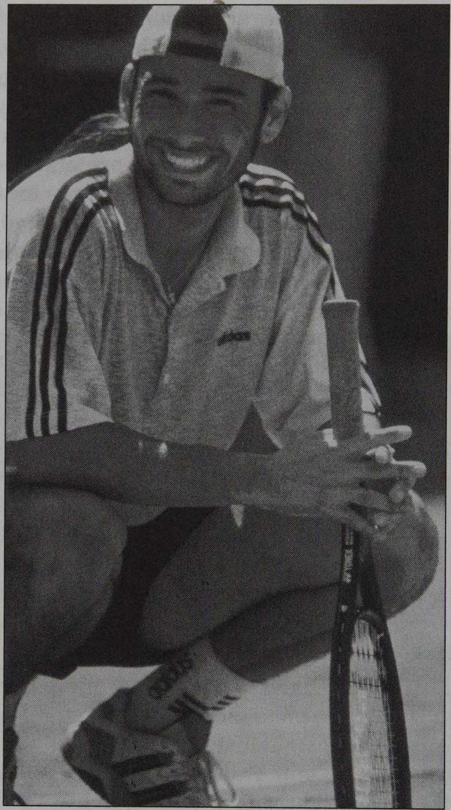
bao gồm ngôn ngữ cơ thể, nói to, tự nói với mình, hoặc cả ba. Ví dụ, ngôn ngữ cơ thể có thể bao gồm việc giơ hai tay lên không trung, hoặc bắt chước cú đánh bạn đã hỏng để sửa nó. Tương tự, bạn nói to hoặc rên lớn là một hình thức Giải phóng khác. Và cuối cùng, bằng cách tự nói với mình (tự nói nội tâm, các nhà tâm lý học gọi như vậy, dòng lẩm nhẩm bên trong không ai khác nghe được), bạn cũng đang thực hiện một cuộc Giải phóng. Quả thực, bạn có thể nói những điều với chính mình mà người khác không nên nghe—nếu họ nghe được thì có thể khiến bạn gặp thêm rắc rối.
include body language, talking out loud, talking to yourself, or all three. For example, body language might include throwing your arms up in the air, or imitating the shot you missed to correct it. Similarly, you speak or groan out loud as another form of Release. And finally, by talking to yourself (self-talk, psychologists call it, the internal patter no one else can hear), you also are engaging in a Release. Indeed, you can say things to yourself that others should not hear—if they did it might get you in more trouble.
- 6. Nhấn mạnh điều tích cực. Một trong các tay vợt trẻ của chúng tôi đã diễn6. Emphasize the positive. One of our junior players put it
đạt như sau: “Các cuộc giải phóng tiêu cực chẳng giúp được gì cho tôi. Chúng chỉ kéo tôi xuống.” Nếu bạn tuôn ra một chuỗi từ ngữ tiêu cực sau một điểm tồi, bạn có nguy cơ khởi đầu một vòng xoáy đi xuống. Mặt khác, nếu bạn trêu đùa về điều vừa xảy ra bằng hài hước, hoặc lập tức bắt chước cú đánh mà bạn ước mình đã chơi, bạn nhận được lợi ích kép là xả được cảm xúc và nâng khoảnh khắc tồi tệ lên một mức cao hơn, tích cực hơn. Rốt cuộc, điều tiếp theo bạn muốn làm là điều tích cực, vậy hãy bắt đầu ngay bằng cách bắt chước nó.
this way: “Negative releases don’t help me. They just bring me down.” If you let out a string of negative words after a bad point, you run the danger of starting a downward spiral. On the other hand, if you make fun of what just happened with humor, or immediately imitate the shot you wish you had played, you get the double benefit of letting the feelings out and lifting the bad moment to a higher, more positive plane. After all, the next thing you want to do is the positive, so start right now by imitating it.
Ví Dụ Về Buông Bỏ SAMPLE RELEASES
Vào cuối chương này chúng tôi sẽ giúp bạn xây dựng những cuộc Giải phóng ưa thích của riêng bạn. Bạn có thể muốn rút ra từ một số phiên bản đã được kiểm chứng.
At the end of this chapter we will help you develop your own preferred Releases. You may want to draw from some of these tested versions.
“Sửa” cú đánh” Một trong những điều mạnh mẽ nhất bạn có thể làm sau một cú đánh bạn đã hỏng là bắt chước cú đánh đó và sửa lỗi bạn vừa mắc, đồng thời tự đưa ra cho mình một chỉ dẫn bằng lời nói.
“Fixing” the Shot One of the most powerful things you can do following a shot that you have missed is to imitate the shot and correct the mistake you have just made, while at the same time giving yourself a verbal instruction.
Nó diễn ra như sau. Giả sử bạn mở người quá sớm ở cú trái tay và đánh bóng văng rộng. Thay vì bất cứ điều bạn thường làm, hãy tự nhủ, “Không phải kiểu đó. Kiểu này!” Đồng thời, hãy xoay người cho phù hợp và bước vào đánh một quả bóng tưởng tượng, lần này giữ vai đúng cách ở tư thế “đóng” cho đến phút cuối.
It goes like this. Suppose you opened up too quickly on your backhand and sprayed the ball wide. Instead of whatever you might ordinarily do, tell yourself, “Not like that. Like this!” At the same time, make an appropriate turn and step in to hit an imaginary ball, this time keeping your shoulders properly “closed” until the last moment.
Xem é Bo Tập trung cho môn Tennis Điều bạn đang làm là sửa lỗi bạn vừa mắc. Điều này trở thành một cuộc Giải phóng cực kỳ mạnh mẽ bởi vì nó lấy năng lượng tiêu cực và chuyển nó sang chế độ sửa chữa. Bạn đã nhận ra điều mình đã làm sai, và giờ bạn đang tự bảo mình phải làm gì, đồng thời mô phỏng và chứng minh cách làm đúng. Nó khiến ký ức cuối cùng của bạn về cú đánh hỏng là sự sửa chữa, điều sẽ giúp bạn ở điểm tiếp theo. Ngoài ra, nó tạo ra một hình ảnh khá đáng sợ trước đối thủ. Đối thủ sẽ bắt đầu nghĩ: “Tôi phải làm gì mới thắng được bạn? Bạn sửa lỗi ngay khi vừa mắc. Tôi dường như không thể phá vỡ được bạn.”
See é Bo Focused for Tennis What you are doing is correcting the error you just made. This becomes a tremendously powerful Release because it takes the negative energy and puts it into a corrective mode. You have recognized what you have done wrong, and you are now telling yourself what to do, and modeling and demonstrating how to do it right. It lets your last memory of the failed shot be the correction, which will help you on the next point. Also, it presents a fairly intimidating image to an opponent. An opponent will begin to think: “What do I have to do to beat you? You correct mistakes as you make them. I can’t seem to break you down.”
Những Từ Ngữ Mới Không gì có thể làm một tay vợt (hoặc huấn luyện viên, hoặc thành viên trong gia đình) khó chịu đến thế như những lời thô tục và các từ khác dường như phun ra trong những lúc khó khăn trên sân. Một số tay vợt thấy gần như không thể ngừng nói những từ này. Cứ như thể có một công tắc được bật lên và dường như không có cách nào để ngăn điều sẽ xảy ra tiếp theo. Vấn đề này có thể hiểu được—tennis cạnh tranh là một hình thức giao chiến, và điều hợp lý là một người đang chơi hết mình và tấn công để thắng cũng sẽ giao chiến bằng lời nói giữa các điểm—giao chiến với chính mình hoặc với đối thủ.
New Words Nothing can be so vexing to a player (or coach, or family member) as the profanity and other words that seem to spew forth during tough times on the court. Some players find it almost impossible to stop saying these words. It is as if a button gets pushed and there seems to be no way to stop what will happen next. The problem is understandable—competitive tennis is a form of combat, and it makes sense that someone who is playing hard and aggressively to win also will be verbally combative between points—combative with himself or herself, and with an opponent.
Vậy bạn có thể làm gì để hướng năng lượng xung lực xa khỏi những từ dẫn đến lỗi vi phạm quy tắc và tiền phạt, và chuyển nó theo hướng tích cực hơn?
So what can you do to channel aggressive energy away from words that bring on code violations and fines, and turn it in a more constructive direction?
Cách tiếp cận của Ba Chữ R là xác định những từ thay thế từ trước một cách rõ ràng, và luyện tập chúng thay cho những từ gây ra lỗi vi phạm. Nếu bạn là tay vợt cần “xả ra,” thì hãy coi đây là một trong những điểm mạnh của bạn—nhưng hãy định nghĩa lại việc xả ra sẽ có nghĩa gì trong trường hợp của bạn. Thay vì những lời chửi thề, hãy chọn và luyện nói những từ để thay thế chúng. Trước khi bạn nói rằng điều này sẽ không hiệu quả với bạn, hãy nhớ rằng những người dùng lời thô tục xuyên suốt lịch sử đã dùng cùng một kỹ thuật để tránh rắc rối cho chính họ. Những từ như gosh và darn chỉ là những biến thể của những từ mà mọi người thấy không thể chấp nhận trong các tình huống xã hội. Khi xây dựng các từ của bạn, bạn có thể dựa vào những cách tiếp cận sau đây đã hiệu quả với các tay vợt khác:
The Three R’s approach is to define alternative words well ahead of time, and practice these instead of the words that draw violations. If you are a player who needs to “let it out,” then treat this as one of your strengths—but redefine what letting it out will mean in your case. Instead of swear words, select and practice saying words to take their place. Before you say this will not work for you, remember that profane people throughout history have used the same technique to keep themselves out of trouble. Words like gosh and darn are simply variations on words that people have found unacceptable in social situations. In formulating your words, you might draw on the following approaches that have worked for other players:
- 1. Bỏ hết phụ âm. Đừng nói ra một từ nào cả, chỉ phát một1. Drop all the consonants. Don’t say a word at all, just give a
tiếng rên to hoặc âm thanh khác. “Aaah!” Bạn không thể làm điều này quá to vì bạn sẽ làm phiền thi đấu trên các sân khác, nhưng đây có thể là một cách để bộc lộ nỗi đau của bạn mà không nói ra một từ thật. (Như một biến thể, hãy cầm khăn lên và hét vào đó.)
loud groan or other utterance. “Aaah!” You can’t do this too loudly or you will disrupt play on the other courts, but it could be a way to express your pain without saying a real word. (As a variation, pick up a towel and yell into it.)
- 2. Chỉ nói về hành vi. Nói về điều bạn vừa làm thay2. Talk about behavior only. Talk about what you just did in-
vì nói những điều tiêu cực về bản thân bạn, về thế giới, về các vị thần, và vũ trụ. Ví dụ: “Không tin nổi.” “Cú đó tồi thật.” “Tốt hơn hết bạn nên cải thiện điều đó.” Tất cả các phát biểu này đều tập trung vào hành vi, chứ không phải vào bạn như một con người—hay bất cứ ai khác. Nếu tôi tự nhủ rằng tôi không chơi nổi, hoặc rằng tôi ngu ngốc, thì tôi bắt đầu điều chỉnh lối chơi của mình theo cách mô tả đó. Mặt khác, nếu tôi nói điều gì đó cân bằng hơn về điều vừa
stead of saying negative things about yourself, the world, the deities, and the cosmos. For example: “I can’t believe this.” “That was a terrible shot.” “You better improve that.” All these statements focus on the behavior, as opposed to you as a person—or anyone else. If I tell myself that I can’t play, or that I am stupid, then I begin to adjust my game to this characterization. On the other hand, if I say something more balanced about what just
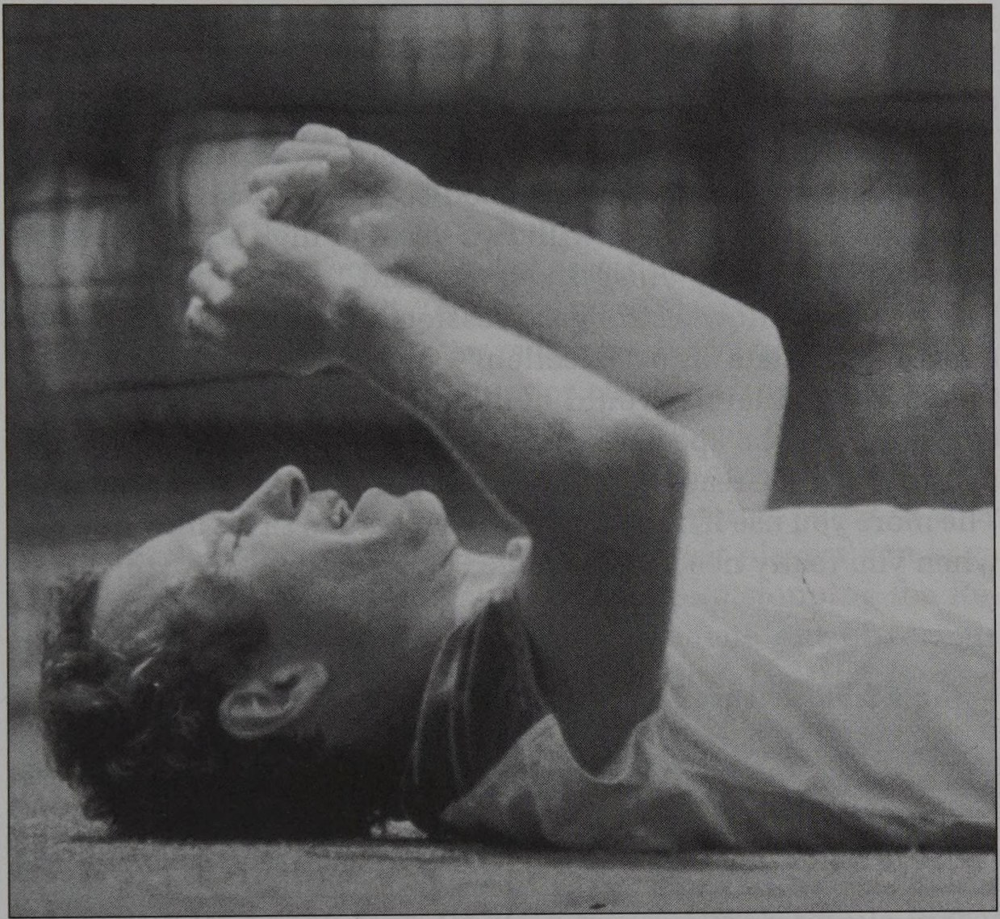
xảy ra (“Quyết định vạch biên tồi, đúng vậy, nhưng bạn có thể lội lại, giờ thì đi thôi, làm nào!”), thì tôi đã biến nghịch cảnh thành thách thức, và điều tiêu cực trở thành điều tích cực.
happened (“A bad line call, yes, but you can come back, now let’s get going, let’s do it!”), then I have turned adversity into a challenge, and a negative becomes a positive.
- 3. Dùng từ thay thế. Nếu bạn biết những từ từ các ngôn ngữ khác3. Use substitute words. If you know words from other languages
(không phải lời chửi thề), mà nghe và cảm thấy hay với bạn, hãy thử nói chúng. Một học sinh với hai năm học tiếng Đức ở trường trung học từng thích nói “Ausgezeichnet!” và “Ach Du meiner giite.”
(not swear words), that have a good sound and feel for you, try saying these. One student with two years of high school German used to enjoy saying “Ausgezeichnet!” and “Ach Du meiner giite.”
Những âm guttural cho phép bộc lộ mạnh mẽ cảm xúc, nhưng những từ đó thực ra lại được dịch là “Excellent” và “Oh, my goodness!”— dù chắc chắn bạn sẽ không biết điều đó khi nghe chúng trên sân (trừ khi bạn nói được tiếng Đức). Hãy thử xây dựng từ thay thế riêng của bạn (“Tuyệt vời!” “Hay quá!”) để dùng thay cho lời thô tục.
The gutturals allow a strong expression of feeling, but the words actually translate into “Excellent” and “Oh, my goodness!”— though you certainly would not know that to hear them on the court (unless you speak German). Try developing your own substitute word (“Great!” “Fantastic!”) to use instead of profanity.
Bạn dùng nó càng nhiều, bạn càng có khả năng nói ra nó khi căng thẳng, tức là khi bạn thực sự cần nó. Hãy xem bảng 3.1.
The more you use it, the more likely you are to say it under stress, when you really need it. See table 3.1.
Bảng 3.1 Các cuộc Giải phóng . _ Các lời chấn chỉnh: “Hãy “ Không có lời nhận xét—để mặc cho trận đấu _ xuống! Nhìn bóng!” tồi tệ lún sâu và trở nên tệ hơn. _ Những từ cổ vũ: “Cố lên!” Không có lời (hay suy nghĩ) nào ; bP Vâng! (Chính là thế!’ khuyến khích. | | Hành động cổ vũ—đấm vào không khí, Không có hành động—sự căng thẳng bên trong vỗ đùi. : tích tụ lại.
Table 3.1 Releases . _ Corrective comments: “Stay “ No comment—allowing bad _ down! Watch the ball!” play to sink in and get worse. _ Pump up words: “Come onl” ° No words (or thoughts) of ; bP Yeslt (That's it!’ encouragement. | | Pump up action—pump fist, No action—internal tension slap leg. : builds.
' Những suy nghĩ thầm kín: “Bạn đang Những suy nghĩ thầm kín: “Bạn không thể chơi rất hay! Cứ giữ vững!” làm được.” | Khen ngợi đối thủ: “Hay Nhăn mặt không tin hoặc nói tôi quá!” “Cú đánh tuyệt!” Vỗ ra những lời chê bai với đối | tôi tay bằng vợt. thủ. | _ Dùng hài hước sau một lỗi.
' Private thoughts: “You're Private thoughts: “You can’t doing great! Keep it up!” do it.” | Compliment opponent: “Too Scowl in disbelief or make | good!""Great shot!” Applaud disparaging remark to oppo- | | with racket. nent. | _ Use humor after an error.
Sống chung với nỗi đau. i __ Bắt chước cú đánh hay để Để cú đánh tồi ở lại trong tôi ghi đè lên cú tồi trong đầu bạn và trở thành ký ức | tôi của bạn. suy nghĩ cuối trước khi ' i điểm tiếp theo. i US RUSRE LO CU et np iii a Tr |
Live with the pain. i __ Imitate the good shot to Let the bad shot stayin your | override the bad one in your mind and become the last | | memory. thought before the next ' i point. i US RUSRE LO CU et np iii a Tr |
Dừng Việc Buông Bỏ STOP THE RELEASE
Dòng chảy của hệ thống Ba Chữ R đòi hỏi một điểm kết thúc cho mỗi giai đoạn: Giải phóng, Đánh giá và Thiết lập lại. Điểm kết thúc của Thiết lập lại thì hiển nhiên: Giao bóng hoặc trả giao bóng đánh dấu điểm kết thúc rõ ràng của hoạt động giữa các điểm, và sự bắt đầu của việc thi đấu điểm bóng.
The flow of the Three R’s system requires an end point for each phase: Release, Review, and Reset. The end point of Reset is obvious: Serving or returning serve marks the clear end of betweenpoint activity, and the beginning of playing out the point.
Tuy nhiên, kết thúc các giai đoạn Giải phóng và Đánh giá đòi hỏi một hành động tách biệt từ phía bạn. Các tay vợt tennis dễ bị tổn thương khi lệch khỏi nhiệm vụ—giữa các điểm, giữa các trận—bởi vì quá dễ để rơi vào những cuộc Giải phóng tiêu cực vô tận hoặc những bài Đánh giá day dứt đến mức ám ảnh. Nếu cảm xúc của cuộc Giải phóng hay hoạt động tinh thần của bài Đánh giá không kết thúc, thì chúng tràn sang điểm tiếp theo. Chúng tôi đôi khi gọi hiện tượng này là nhuộm điểm tiếp theo. Hãy nghĩ đến chính trải nghiệm của bạn, hoặc hãy nghĩ đến một số trong những tay vợt vĩ đại mà bạn đã quan sát. Thật dễ nhớ những lúc việc dừng cuộc Giải phóng đủ sớm đã giúp ai đó tránh khỏi rắc rối nghiêm trọng—lỗi vi phạm quy tắc, thậm chí bị loại. Mẹo là hãy đạt được sự thỏa mãn của một cuộc Giải phóng vững chắc như đã trình bày trong chương này, rồi chuyển sang bài Đánh giá, vốn cũng mấu chốt để cải thiện thành tích ở điểm tiếp theo.
Ending the Release and Review phases, however, requires a separate action on your part. Tennis players are vulnerable off the task—between points, between matches—because it is so easy to fall into endless negative Releases or obsessively ruminating Reviews. If the feelings of the Release or the mental activity of the Review do not end, then they spill over into the next point. We sometimes refer to this as painting the next point. Think of your own experience, or consider some of the great players you have observed. It is easy to remember times where stopping the Release soon enough would have kept someone out of serious trouble—code violations, even disqualification. The trick is to get the satisfaction of a solid Release as described in this chapter, then to move on to the Review, which is also critical to improving performance on the next point.
Giải pháp là DỪNG hành vi Giải phóng bằng một từ đã lên kế hoạch trước, và, như sẽ được thảo luận ở chương 4, DỪNG hành vi Đánh giá theo cùng cách. Bằng cách tự đưa ra cho mình chỉ dẫn đơn giản bằng lời nói, “STOP,” bạn có thể kết thúc bất cứ điều gì bạn đang làm, ít nhất trong khoảnh khắc đó. Trong trường hợp Ba Chữ R, một khi bạn kết thúc hành vi Giải phóng, bạn có thể dễ dàng chuyển sang Đánh giá.
The solution is to STOP Release behavior with a preplanned word, and, as will be discussed in chapter 4, to STOP Review behavior in the same way. By giving yourself the simple verbal instruction, “STOP,” you can end whatever you are doing, at least for that moment. In the case of the Three R’s, once you end the Release behavior, you can move easily to Review.
Hãy luyện kỹ thuật DỪNG với một người bạn. Bắt đầu đếm từ 1 đến 20, và để người bạn ngắt lời bạn bằng cách hét “STOP!” tại một thời điểm nào đó. Hãy chú ý cách điều này khiến bạn ngừng đếm. Con số tiếp theo đơn giản là không được thốt ra. Nếu bạn làm được bước đơn giản này, thì bạn đã học được kỹ thuật DỪNG.
Practice the STOP technique with a friend. Begin counting from 1 to 20, and let your friend interrupt you by shouting “STOP!” at some point. Notice how this gets you to stop counting. The next number simply doesn’t get spoken. If you can follow this simple step, then you will have learned the STOP technique.
Bước tiếp theo là chuyển sự chú ý của bạn khỏi điều vừa xảy ra (trong trường hợp này là việc đếm từ 1 đến 20), và chuyển sang điều gì khác. Hãy thử nhờ người bạn bảo bạn bắt đầu đọc bảng chữ cái ngay sau tiếng DỪNG. Ví dụ: Bạn: 1, 2, 3, 4, 5— Người bạn: “STOP! Giờ thì hãy đọc bảng chữ cái của bạn.”
The next step is to turn your attention away from what just occurred (in this case, counting from 1 to 20), and turn to something else. Try having your friend tell you to begin saying the alphabet immediately after the STOP. For example: You! 4; 27:37 4)-5—" Your friend: “STOP! Now, start saying your ABCs.”
Bạn: A, B, C, D, E, F, G.”
Yous, Ay), G, 0, 8. F, Ge.”
Trong trình tự đơn giản này, bạn sẽ nhận thấy rằng mình có thể chuyển ngay từ một hoạt động (đếm) sang hoạt động khác (đọc bảng chữ cái A-B-C), chỉ với một chỉ dẫn đơn giản: STOP. Đây chính xác là điều bạn làm trong Ba chữ R khi chuyển từ giai đoạn Xả căng (Release) sang giai đoạn Xem xét (Review). Sau khi kết thúc phần Xả căng, bạn tự nói với mình (để không ai khác nghe thấy): "STOP." Sau đó, hãy tự đưa ra một dãy tín hiệu nào đó mà bạn đã chuẩn bị từ trước và chuyển một cách trôi chảy sang giai đoạn Xem xét.
In this simple sequence, you will notice that you are able to go immediately from one activity (counting) to another activity (saying your ABCs), with one simple instruction, STOP. This is just what you do in the Three R’s when you move from the Release phase to the Review phase. After you finish your Release, you say to yourself (so no one else can hear): “STOP.” Then give yourself some cue sequence you’ve worked out in advance and move smoothly into the Review phase.
Bài Tập Giúp Bạn Buông Bỏ EXERCISES TO HELP YOU RELEASE
Bài tập 1 Bài tập tennis về Xả căng NNRRURN Hãy đánh giá hành vi Xả căng hiện tại của bản thân bằng cách trả lời các câu hỏi sau và chấm điểm câu trả lời của bạn như sau: Hiếm khi = 1 Thỉnh thoảng = 2 Phần lớn thời gian = 3 Luôn luôn hoặc gần như luôn luôn = 4 ___a. Chửi thề là một phần trong hành vi giữa các điểm của tôi. _____ b. Tôi nhận lỗi vi phạm quy tắc vì những cơn nóng giận. ______ c. Tôi dùng sự hài hước để đối phó với nghịch cảnh. _____ d. Tôi tấn công đối thủ bằng lời nói. e. Tôi ném vợt, đập bóng vào tường che, hoặc tham gia vào các hình thức phá hoại dụng cụ khác. f. Tôi tức giận đến mức đôi khi không thể bình tĩnh lại trước khi thi đấu điểm tiếp theo. g. Lời tự nói với bản thân của tôi khá tiêu cực. h. Đôi khi tôi bắt chước cú đánh mình vừa đánh hụt để "sửa chữa" nó trước khi điểm tiếp theo.
Exercise 1 "gape tennctoa eseRM NNRRURNN Evaluate your own current Release behavior by answering the following questions and rating your responses as follows: Rarely = 1 Some of the time = 2 Most of the time = 3 All or almost all of the time = 4 ___a. Profanity is a part of my between-point behavior. _____ b. I get code violations from outbursts. ______ ¢. |use humor to deal with adversity. _____ d. I attack my opponent verbally. e. I throw my racket, hit the ball against the screen, or engage in other forms of equipment abuse. f. |get so mad that sometimes I cannot cool down before I play the next point. g. My self-talk is quite negative. h. |sometimes imitate the shot I missed in order to “fix” it before the next point.
Bài tập 1, (tiếp theo) i. Tôi thốt ra thành lời trên sân, nhưng lời nói của tôi không bị coi là lỗi vi phạm quy tắc. j. Tôi hờn dỗi sau một cú đánh hỏng, giữ cảm xúc trong lòng.
Exercise 1, (continued) i. I talk out on the court, but my words do not draw code violations. j. I sulk after a bad shot, keeping my feelings inside.
A. Hướng dẫn chấm điểm: Ghi điểm cho mỗi mục vào ô tương ứng. ees SLOSS CAC ROBERT IESE D DE SET B. Điểm mạnh: Điểm 3 hoặc 4 ở các mục c, h và i cho thấy bạn đã lồng ghép những cách xả căng tích cực vào hành vi giữa các điểm của mình.
A. Scoring Instructions: Record the score for each item in the appropriate box. ees SLOSS CAC ROBERT IESE D DE SET B. Strengths: Scores of 3 or 4 on items c,h, and i indicate that you are already incorporating constructive releases into your between-point behavior.
C. Điểm yếu: Điểm 2, 3 hoặc 4 ở các mục a, b, d, e, f, g và j cho thấy bạn dễ sụp đổ trong giai đoạn Xả căng, điều có thể ảnh hưởng tiêu cực đến cách bạn chơi điểm tiếp theo.
C. Deficits: Scores of 2,3, or 4 on items a,b, d,e, f,g, and j indicate that you are vulnerable to breakdowns in the Release phase, which could have a negative effect on how you play the next point.
Bài tập 2 Một cách để cải thiện việc Xả căng của bạn là lập danh sách những cách xả căng phù hợp với tính cách của bạn và mà bạn muốn đưa vào lối chơi của mình. Bạn nên dành cho danh sách này sự chú ý như cách bạn dành để chọn một cây vợt, hoặc để hình dung cú giao bóng hay cú thuận tay mà bạn muốn phát triển. Hãy dùng danh sách kiểm tra sau để xác định các yếu tố của cách Xả căng riêng phù hợp với bạn. (Đánh dấu vào tất cả các mục phù hợp với lối chơi của bạn.)
Exercise 2 One way to improve your Releases is to make a list of the Releases that fit your personality and that you would like to incorporate into your game. You should give this list the same attention you would give to selecting a racket, or to picturing the kind of serve or forehand you wish to develop. Use the following checklist to identify elements of your own customized Release. (Check as many items as apply to your game.)
Bài tập 2, (tiếp theo) ☐ Đưa ra những nhận xét sửa chỗ sai (như "Giữ thấp người!").
Exercise 2, (continued) |_| Make corrective comments (such as “Stay down!”).
Nói "Come on" ("Cố lên"), "Yes" ("Tuyệt"), "Chính là nó!" (sau khi chơi tốt ở một điểm quan trọng).
Say”“Come on,” “Yes,” “That's it” (after doing well on big point).
Siết chặt nắm đấm.
Use fist pump.
Dùng sự hài hước sau một lỗi. ☐ Bắt chước cú đánh tốt để sửa chữa cú đánh tồi.
Use humor after an error. |_| Imitate the good shot to correct the bad one.
Làm tất cả những điều này một cách kín đáo. ☐ Khen ngợi đối thủ ("Quá đẹp!", "Cú đánh tuyệt vời!", vỗ vợt tán thưởng). is Khác (liệt kê): ☐ Những lời nói tiêu cực đại khái ("Bạn tệ quá," "Bạn thối hoắc").
Do all of this in a quiet way. |_| Compliment my opponent (“Too good,” “Great shot,” applaud with racket). is Other (list): |_| Global negatives (“You're so bad,” “You stink”).
Chửi thề.
Profanity.
Phá hoại vợt, bóng, người khác.
Racket, ball, people abuse.
Khác (liệt kê): Giai đoạn Xả căng.
Other (list): Release phase.
Nhìn vào các mục bạn đã đánh dấu, và dựa trên quá khứ với việc Xả căng của bạn, hãy viết một bản tóm tắt về những gì bạn muốn đưa vào cách Xả căng (Release) của bạn. …………………………………………… ……………………………………………
Looking at the items you have checked, and in light of your history with Releases, write a summary of what you want to include in your he a eM Pa os os CA) ee cas
na SRERRANNNIR Bài tập 3 Hãy luyện tập cách Xả căng của riêng bạn mỗi khi bạn có mặt trên sân (dù đang thi đấu một trận đấu hay trong một buổi tập). Hãy nhờ một người bạn ghi mã những lần Xả căng của bạn từ một trận đấu trực tiếp hoặc từ băng ghi hình, dùng bảng mã ở chương 7.
na SRERRANNNIR Exercise 3 Practice your own Release each time you are on the court (whether playing a match or in a practice game). Have a friend code your Releases from a live match or from a videotape using the coding sheet in chapter 7.
Hồ Sơ Vận Động Viên — Stefan Edberg PLAYER PROFILE
Stefan Edberg giành danh hiệu đơn nam Grand Slam trẻ đầu tiên bằng chiến thắng trước toàn thể dàn đối thủ tại Giải Mỹ Mở rộng năm 1983. Năm 1990 và một lần nữa năm 1991, Edberg xếp nhất trong bảng xếp hạng cuối năm. Đến cuối năm 1996, tay vợt thuận tay này đã có 18 danh hiệu đôi, vô địch các giải đấu trên mọi mặt sân: thảm, sân đất nặn, sân cỏ và sân cứng. Ông có kỷ lục 51 lần liên tiếp góp mặt tại Grand Slam, kỷ lục tốt nhất mọi thời đại trong lịch sử quần vợt Grand Slam. Ông cũng chia sẻ vinh dự với John McEnroe là những vận động viên duy nhất được xếp hạng số 1 cả ở nội dung đơn lẫn đôi.
Stefan Edberg won his first junior Grand Slam singles.title by triumphing over the field at the U.S. Open in 1983. In 1990and again in 1991, Edberg was placed first in the year-end rankings. By the end of 1996, the right-hander had 18 doubles titles, winning tournaments on all surfaces: carpet, clay cour grass court, and hard court. He has a record of 51 consecutive Grand Slam appearances, the all-time best record in the history of Grand Slam tennis, He also shares the distinction with John McEnroe of being the only players,to be ranked No. 1 in both singles and doubles play.
Trong khi sức mạnh của Muster và Chang là tốc độ và phản công, sức mạnh chủ đạo của Edberg là khả năng duy trì một lối tấn công tập trung nhờ những cú giao bóng và cú vô-lê mạnh mẽ. Trong khi thi đấu, Edberg giữ thái độ điềm tĩnh với những cái xả căng khiêm tốn. Anh kiên trì thực hiện những lần Xem xét bài bản giúp anh duy trì sự tập trung. ; Stefan Edberg sinh ngày 19 tháng 1 năm 1966, tại Vastervik, Thụy Điển. Ông kết hôn với Annette Olson và họ có hai con, Emilie Victoria Edberg và Christoffer Edberg. Khi tuyên bố giải nghệ vào cuối năm 1996, ông là một trong chỉ bốn vận động viên thời hiện đại đã thi đấu hơn 1.000 trận đấu. Ông sinh sống tại London.
Where Muster’s and Chang's strength is speed and counterattack, Edberg’s chief strength is his ability to maintain a focused attack through strong serves and volleys. During play, Edberg maintains a cool demeanor with subdued Releases. He follows through with solid Reviews that help him maintain his concentration. ; Stefan Edberg was born on January 19, 1966, in Vastervik, Sweden. He is married to Annette Olson and they have two children, Emilie Victoria Edberg and Christoffer Edberg. When he announced his retirement at the close of 1996, he was among only four players in the modern era to have played more than 1,000 matches. He resides in London.
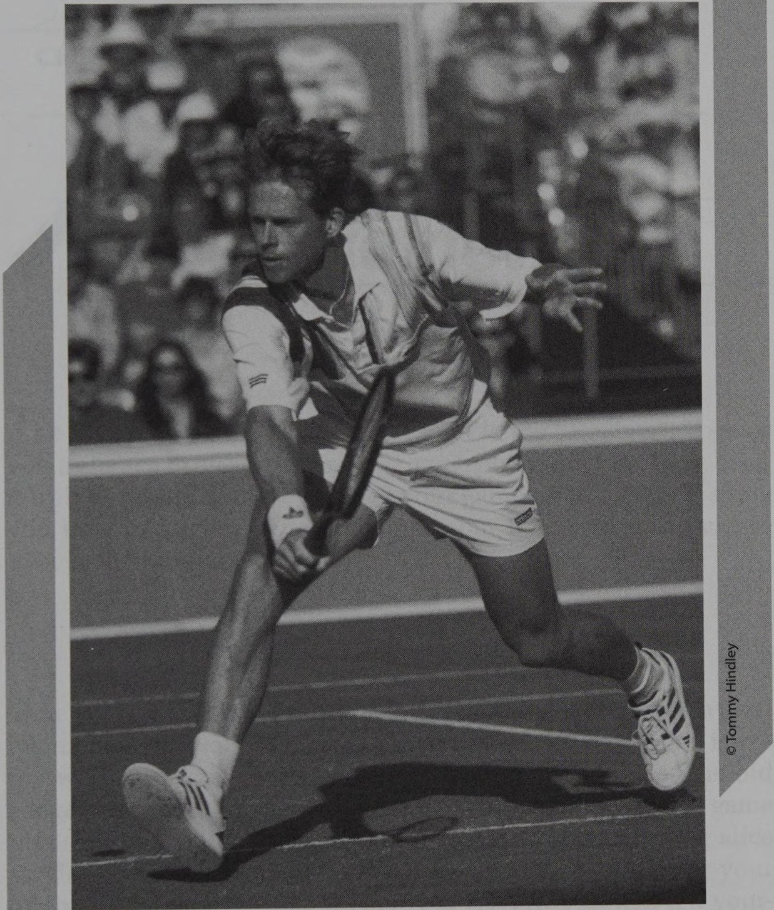
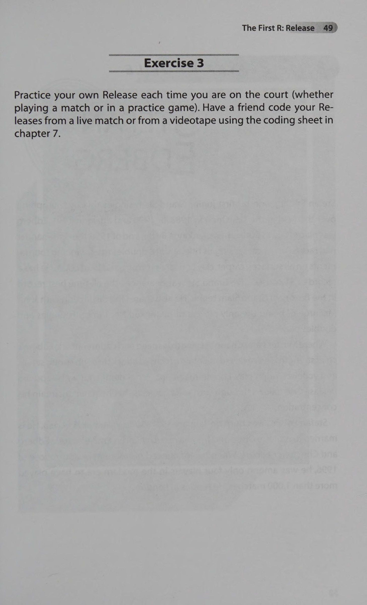
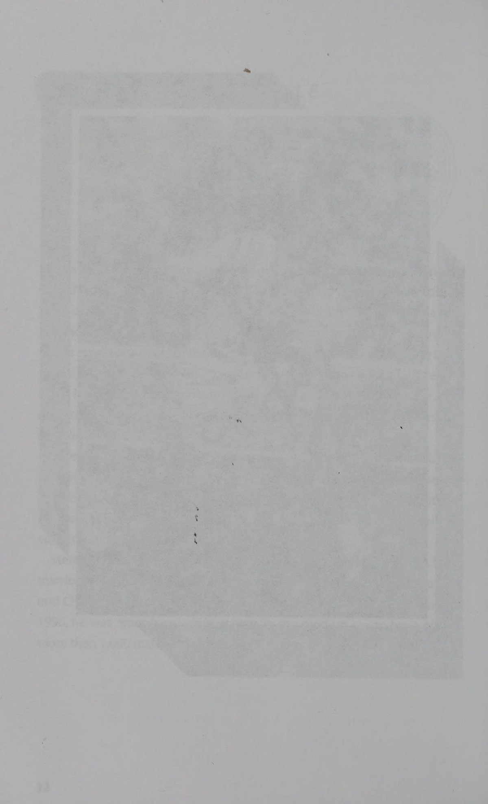
Chữ R Thứ Hai: Xem Lại
Chữ R thứ hai trong hệ thống Ba chữ R là "Xem xét" (Review). Nó cho bạn cơ hội để hoặc khẳng định chiến lược chơi của mình (nếu nó hiệu quả, hãy tiếp tục!) hoặc để tìm cách đưa lối chơi của bạn đúng hướng. Chúng tôi sẽ chỉ cho bạn cách Xem xét trong chương này—nhưng trước tiên hãy cùng nhìn kỹ hơn vào lý lẽ đằng sau nó.
The second R in the Three R’s system is the “Review”. It gives you achance to either affirm your game plan (Ifit’s working, keep it up!) or to find some way to get your game on track. We’ll show you how to Review in this chapter—but first let’s take a closer look at the rationale behind it.
Tại Sao Phải Xem Lại? WHY REVIEW?
Việc Xem xét cho phép bạn đánh giá vị trí hiện tại của mình và thực hiện mọi điều chỉnh cần thiết để cải thiện tình hình. Nếu trận đấu đang diễn ra tốt đẹp, bạn sẽ không muốn thay đổi điều gì. Hãy nhớ câu châm ngôn cũ, "Nếu chưa hỏng thì đừng sửa." Điều này cũng áp dụng cho chiến lược chơi của bạn. Nếu bạn đang làm đúng điều gì đó (chẳng hạn, cú trả giao bóng cắt mạnh để giữ bóng thấp và khiến đối thủ khó thực hiện cú vô-lê), thì trong lần Xem xét, bạn sẽ tự nói với mình: "Hãy giữ vững, nhìn bóng, thực hiện một cú trả bóng tốt."
Your Review lets you evaluate where you are, and make any adjustments necessary to improve your situation. If the game is going well, you won’t want to change a thing. Remember the old adage, “If it ain’t broke, don’t fix it.” This applies to your game plan. If you’re doing something right (for example, strong slice service return to keep the ball low and make it harder for your opponent to volley), then during your Review you will tell yourself, “Stay with it, watch the ball, make a good return.”
Hoặc bạn có thể phát hiện ra rằng mình đã bỏ rơi chiến lược chơi của mình, và bạn cần tự nhắc nhở bản thân quay lại với nó. Ví dụ, nếu bạn dự định cắt bóng nhẹ rồi ào lên lưới nhưng lại quên không làm, thì lần Xem xét chính là lúc bạn thực hiện điều chỉnh này.
Or you may discover that you have been deserting your game plan, and you need to remind yourself to get back to it. For example, if you planned to chip and charge to get in to the net but forgot to do it, the Review is your time to make this adjustment.
Một mục tiêu khác của việc Xem xét có thể là thay đổi chiến lược chơi của bạn. Đối thủ đang đặt ra cho bạn những vấn đề hoặc cơ hội mới mà bạn đã không lường trước. Không huấn luyện viên nào có thể giúp bạn lúc này. Bạn tự đánh giá tình hình và tự bảo mình cần điều chỉnh gì ở điểm tiếp theo.
Another objective of the Review might be to change your game plan. Your opponent is presenting you with new problems or new opportunities that you had not anticipated. No coach can help you now. You evaluate the situation and tell yourself what adjustment to make on the next point.
Bắt Đầu Xem Lại STARTING YOUR REVIEW
Một trong những điều đơn giản nhất bạn có thể làm để bắt đầu việc Xem xét là quay người khỏi lưới và đối thủ, chuyển cây vợt sang tay không cầm vợt, và bước về phía sâu trong sân, có lẽ vừa đi vừa nhìn vào mặt vợt. Mục đích của động tác nhỏ này là
One of the simplest things you can do to start your Review is turn away from the net and your opponent, switch your racket to your nonplaying hand, and walk toward the back court, perhaps looking at the strings as you go. The purpose of this little maneuver is
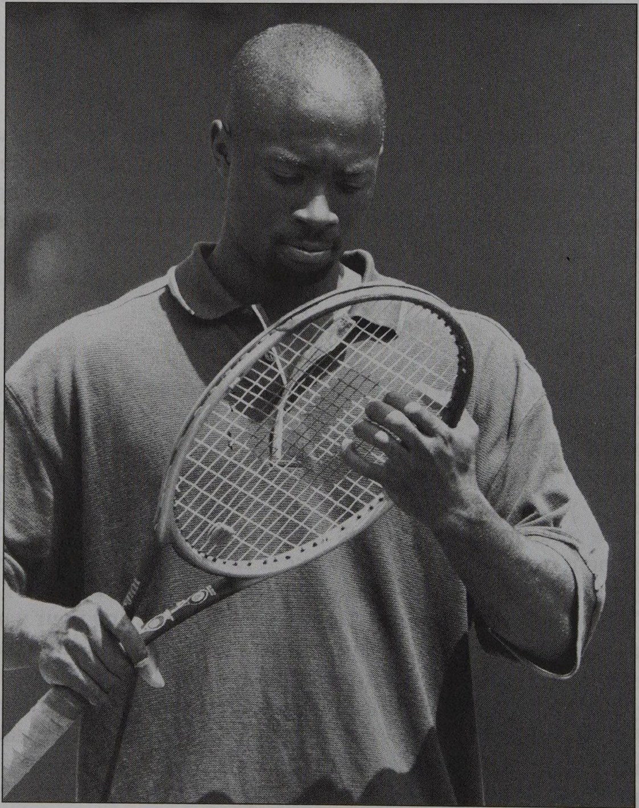
Xem Lại REVIEW
Bạn sẽ nhận thấy rằng trong hệ thống Ba chữ R, chúng tôi dựa vào các tín hiệu hành vi để hệ thống vận hành. Lý do cho điều này là trong lúc trận đấu đang căng thẳng, thật khó để nghĩ xem mình nên làm gì giữa các điểm. Bạn muốn xây dựng những thói quen tốt để khởi động các giai đoạn thích hợp của Ba chữ R: Xả căng, Xem xét và Tái lập. Việc chuyển cây vợt sang tay kia và quay người khỏi lưới là một tín hiệu hiệu quả để bắt đầu việc Xem xét. Một số nhà tâm lý học sẽ xem đây là một cách để "móc neo" việc Xem xét. Chúng tôi đã biết một số vận động viên đeo dây thun ở cổ tay, và búng nó giữa các điểm để tự nhắc nhở bản thân hãy vào guồng trận đấu, giữ vững chiến lược chơi, hoặc bất cứ điều gì họ đã quyết định là mình cần _ nhớ nhất. Dù dùng phương pháp nào, hãy chọn một bước hành vi đơn _ giản để khởi động việc Xem xét cho bạn. để nhắc bạn bắt đầu việc Xem xét. Nó phải ăn sâu đến mức ngay khi cây vợt chạm vào tay không cầm vợt, bạn bắt đầu giai đoạn Xem xét. Trong băng ghi hình về hoạt động giữa các điểm của bạn, bạn sẽ có thể nhận ra bạn đã bắt đầu việc Xem xét lúc nào.
You will notice that in the Three R’s system we rely on behavioral cues to make the system work. The reason for this is that in the heat of a match, it is hard to think about what you should be doing between points. You want to develop good habits that trigger the appropriate phases of the Three R’s: Release, Review, and Reset. Switching your racket to your other hand and turning away from the net is an effective cue to begin the Review. Some psychologists would view this as a way to anchor the Review. We have known some players who wear a rubber band on their wrists, and snap it between points to remind themselves to get in the game, stay with the game plan, or whatever they have decided they most need to _ remember. Whatever method you use, choose a simple be- _ havioral step that will start the Review for you. to prompt you to start your Review. It should be so ingrained that as soon as the racket hits your nonplaying hand, you begin the Review phase. On a videotape of your between-point activity, you should be able to see when you started your Review.
Đây chính là lúc thói quen trở thành người bạn của bạn. Hãy xây dựng một quy luật chuyển động để khởi đầu việc Xem xét, và lưu nó vào cùng phần não giúp bạn đi giày, đánh răng, và thực hiện các hành động tự nguyện khác mà không cần nghĩ đến chúng.
Here’s where habit is your friend. Develop a pattern of movement that begins the Review, and file it in the same part of your brain that enables you to put on your shoes, brush your teeth, and perform other voluntary actions without having to think about them.
Bằng cách bắt đầu việc Xem xét theo cách này, bạn có thể tự điều kiện hóa bản thân để thực hiện việc Xem xét ngay cả khi những phiền nhiễu lớn ập đến (xem khung "Móc neo việc Xem xét của bạn").
By starting the Review this way you can condition yourself to do a Review even when big-time distractions come your way (see the “Anchor Your Review” box).
Đi Bước Tiếp Theo TAKING THE NEXT STEP
Khi bạn đã tạo ra tín hiệu hành vi để bắt đầu việc Xem xét, bạn nên nghĩ về điều gì? Có hai lựa chọn tốt: những gì bạn có thể rút ra từ điều vừa xảy ra (quá khứ), và những gì bạn có thể làm tiếp theo (tương lai).
Once you have made the behavioral prompt to start Reviewing, what should you think about? There are two good options: What you can learn from what just happened (past), and what you can do next (future).
Giả sử bạn đang mắc rất nhiều lỗi tự đánh hỏng. Giả sử bạn đang dưỡng điểm, giữ bóng sâu và tạo ra những quả bóng ngắn, nhưng rồi bạn lại đánh quả bóng ngắn đó ra ngoài hoặc quá sâu. Trong lần Xem xét, bạn sẽ nghĩ về lý do tại sao điều này xảy ra. Có lẽ bạn đang lao qua cú đánh thay vì dàn xếp chân trước khi kết thúc quả bóng ngắn khó nhọc giành được bằng một cú dứt điểm thắng. Có lẽ bạn quá phấn khích khi cuối cùng cũng có cơ hội kết thúc điểm nên bạn rời mắt khỏi quả bóng. Bạn đang nghĩ trước đến tỷ số mới với bạn đang dẫn điểm, đến mức bạn đánh hụt cú đó. Trong giai đoạn Xem xét, bạn nghĩ về nó đúng theo cách này.
Suppose you are making a lot of unforced errors. Say you have been working the point, keeping the ball deep and creating short balls, but then you hit the short ball long or wide. During the Review, you will think about why this is happening. Perhaps you are running through the shot instead of getting set before you knock off the hard-earned short ball for a winner. Maybe you are so excited at finally having a chance to end the point that you take your eye off the ball. You are thinking ahead to the new score with you in the lead, so much so that you miss the shot. During the Review phase, you think about it in just this way.
Hãy thử tự hỏi mình những "câu hỏi của huấn luyện viên" thông thường, những câu mà chính huấn luyện viên của bạn có thể hỏi bạn: "Chuyện gì vừa xảy ra?"
Try asking yourself the standard “coach questions,” the ones your own coach might ask you if he could: “What just happened?”
"Tại sao tôi thắng điểm đó?"
“Why did I win the point?”
"Tại sao tôi thua điểm đó?"
“Why did I lose the point?”
"Tôi có đang thực hiện chiến lược chơi của mình không?"
“Am I doing my game plan?”
"Tôi có đang nhắm vào điểm yếu của đối thủ không?"
“Am I playing to my opponent’s weakness?”
"Tôi cần làm gì tiếp theo?"
“What do I need to do next?”
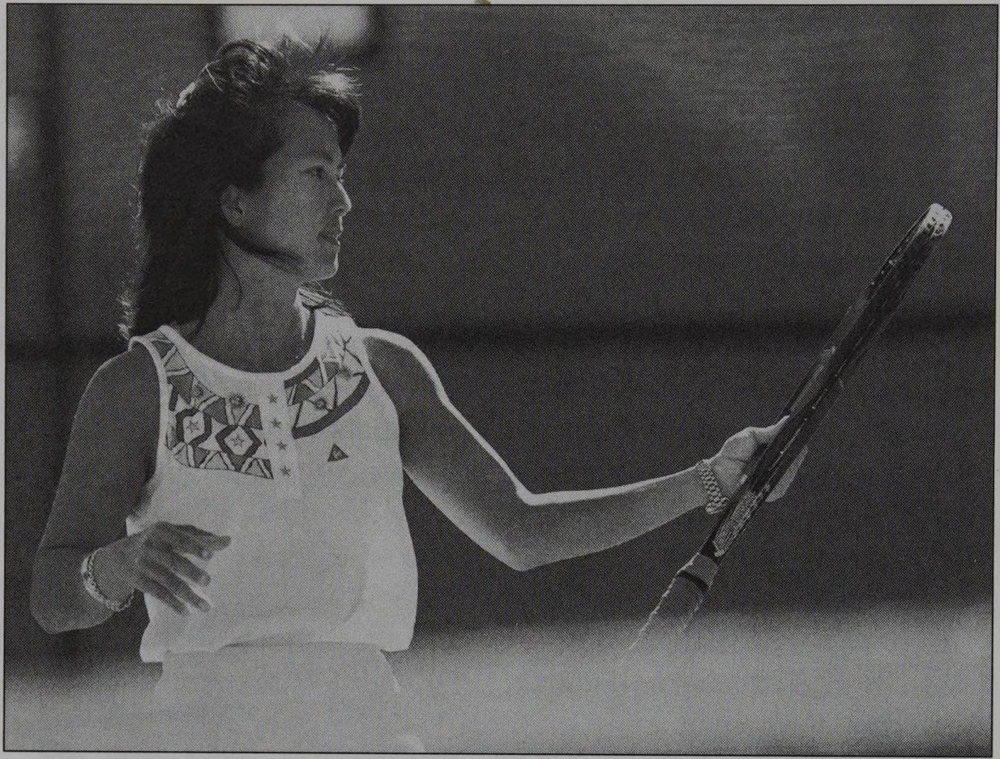
Đây là phần thưởng cho việc đặt những câu hỏi Xem xét này: Bạn học được từ sai lầm của mình (và cả những điểm tốt nữa), và trở nên mạnh hơn và thông minh hơn với mỗi điểm. Một lần Xem xét tốt giúp bạn Bảng 4.1 Làm cho việc Xem xét của bạn hiệu quả Dùng hành vi cụ thể (chẳng hạn chuyển vợt sang tay không Bỏ qua bước hành vi. Tôi cầm vợt) để bắt đầu việc Xem xét. ait Thư giãn bằng một hơi thở sâu vào Bước nhịp độ hoặc đi về phía bóng một cách và ra khi bạn bắt đầu hấp tấp.
Here is the payoff for asking these Review questions: You learn from your mistakes (and your good points, too), and get stronger and smarter with each point. A good Review lets you Table 4.1 Make Your Reviews Work Use specific behavior (such as switching racket to non- Skip the behavioral step. | playing hand) to start Review. ait Relax with a deep breath in Pace or walk to the ball in an and out as you begin the agitated manner.
việc Xem xét. | Đi đứng tự tin (vai Để vợt thõng từ thẳng sau, đầu ngẩng cao). tay cầm vợt, vai rũ xuống, và để cảm xúc tiêu cực hiện ra trong hành vi phi ngôn ngữ của bạn.
Review. | Walk confidently (shoulders Let racket hang from your back, head up). playing hand, shoulders droop, and allow negative feelings show in your nonverbal behavior.
Nhìn vào mặt vợt, mặt đất, hoặc Tự phân tâm bằng cách nhìn vào một điểm tập trung khác để những người khác ở đường biên (chẳng hạn như suy nghĩ. huấn luyện viên, bạn bè hoặc cha mẹ của bạn).
Look at strings, ground, or Distract yourself by looking at some other focal point to others on the sideline (such as think. your coach, friends, or parents).
Hãy hỏi "câu hỏi của huấn luyện viên": Bỏ qua không đặt những câu * Chuyện gì vừa xảy ra? hỏi này dù đó là một phần trong * Tại sao tôi thắng điểm đó?
Ask the “coach question”: Neglect to ask these ques- * What just happened? tions when it was part of your * Why did I win the point?
kế hoạch Xem xét của bạn.
Review plan to do so.
* Tại sao tôi thua điểm đó? : * Tôi có đang thực hiện chiến lược chơi không?
* Why did I lose the point? : * Am| doing my game plan?
* Tôi có đang nhắm vào điểm yếu của đối thủ không?
* Am! playing my opponent's weakness?
* Tôi cần làm gì tiếp theo? et Gọi Play 1, Play 2, Play 3 Quên Xem xét lại chiến lược (xem trang 61). chơi của bạn.
* What do I need to do next? et Call Play 1, Play 2, Play 3 Forget to Review your game (see page 61). plan.
Cân nhắc dùng từ mã để mang lại | Tự nói chuyện với bản thân một cách dài dòng, sự tập trung cho việc Xem xét (chẳng hạn mà không có tập trung.
Consider code words to bring | Talk to yourself at length, focus to the Review (such as without focus.
"Nhìn bóng!" "Mạnh mẽ lên!"
“Watch the ball!””Be strong!”
"Đánh bóng!" hoặc "Vào lưới!") ' i S cha et Mee ae YASS ARTEL SON STILE ERE IRE DEEP AIOE IRENE AES LESTE RS CE
“Play the ball!” or“Get in!”) ' i S cha et Mee ae YASS ARTEL SON STILE ERE IRE DEEP AIOE IRENE AES LESTE RS CE
củng cố thành công và sửa chữa điểm yếu ngay tại chỗ. Điều này khiến bạn trở thành một đối thủ mạnh. Bạn thậm chí biến những điều tồi tệ thành lợi thế của mình. Bảng 4.1 đưa ra các mẹo Xem xét theo dạng "Nên làm và Không nên làm". Các bài tập ở cuối chương cũng sẽ giúp bạn tạo ra một quy trình Xem xét phù hợp với riêng mình, vừa vặn với lối chơi của bạn. Hãy nhớ rằng, đôi khi việc Xem xét sẽ rất nhanh, và khi khác nó có thể mất một chút thời gian hơn. Điều mấu chốt là biến việc Xem xét thành một thói quen đến mức bạn làm điều đó mỗi lần.
build on your success and correct for your weakness then and there on the spot. This makes you a strong competitor. You even turn the bad stuff to your advantage. Table 4.1 offers Review tips in a “Do’s and Don’ts” format. The exercises at the end of the chapter also will help you create a customized Review, one that fits your game. Remember, too, that sometimes the Review will be brief, and at other times it may take a bit longer. The key is to make Review such a habit that you do it every time.
Xem xét để đối phó với phiền nhiễu Bạn vừa thua một điểm, và bạn biết đó là do sự tập trung kém. Tệ hơn nữa, bạn lại để cho mình bị phân tâm bởi tiếng ồn của máy bay—hoặc bởi một người nào đó ở đường biên, hoặc bởi một ý nghĩ lan man về điều mà một người bạn, cha mẹ hoặc huấn luyện viên có thể đang nghĩ về lối chơi của bạn. Bạn đã cảm thấy đủ tệ về việc thua điểm, nhưng những suy nghĩ phân tâm khác này còn khiến mọi chuyện tồi tệ hơn. Bạn phải làm gì?
Review to Deal With Distractions You have just lost a point, and you know it was because of poor concentration. To make matters worse, you allowed yourself to get distracted by an airplane noise—or by someone on the sidelines, or a stray thought about what a friend, parent, or coach might be thinking of your play. You feel bad enough about having lost the point, but these other distracting thoughts make matters worse. What do you do?
Hãy bắt đầu bằng cách cho phép mình có suy nghĩ đó, thậm chí còn phóng đại nó. Giả sử, chẳng hạn, rằng thay vì nhìn bóng, bạn lại đang nhìn một người nào đó trong đám đông. Ngay khi bạn nhận ra điều mình đã làm, hãy tự nói với mình để không ai nghe thấy: "Đây rồi, lại nhìn cái mũ đó thay vì nhìn quả bóng!"
Start by allowing yourself.to have the thought, perhaps even exaggerating it. Suppose, for example, that instead of watching the ball, you were watching someone in the crowd. As soon as you notice what you did, say to yourself so others cannot hear: “There you go, looking at that hat instead of at the ball!”
Hoặc giả sử bạn nghĩ về điều huấn luyện viên của mình sẽ nghĩ về lối chơi của bạn, thay vì nhìn bóng. Thì hãy tự nói: "Bạn có tin được không, tôi đang nghĩ về điều huấn luyện viên của mình nghĩ thay vì bắt tay vào việc!" Làm điều này giúp bạn đưa suy nghĩ đó vào ý thức thay vì để nó chôn sâu đâu đó trong suy nghĩ và cảm xúc của bạn.
Or suppose you thought about what your coach would think of your play, instead of watching the ball. Then say to yourself: “Can you believe this, here\I am thinking what my coach thinks instead of getting down to business!” Doing this lets you bring the thought into consciousness instead of allowing it to stay buried somewhere in your thoughts and feelings.
Để nhấn mạnh điều mà tâm trí bạn đang làm với bạn, bạn cũng có thể tự nghĩ "Thật thú vị!" hoặc "Nhìn suy nghĩ đó kìa!" để nhấn mạnh điều bạn vừa khám phá. Ví dụ, "Nhìn những gì tôi vừa làm xem: Nhìn một người trong đám đông thay vì nhìn bóng! Thật thú vị!"
To underline what your mind is doing to you, you also can think to yourself, “That’s interesting!” or “Look at that thought!” to punctuate what you have just discovered. For example, “Look at what I just did: Watched somebody in the crowd instead of the ball! That’s interesting!”
Nhìn qua, việc nhận ra rằng bạn đã bị phân tâm có thể có vẻ như một điều kỳ lạ cần làm. Vấn đề là bạn phải phơi bày suy nghĩ phân tâm trước khi bạn có thể thay thế nó bằng điều gì đó phù hợp hơn. Đây là một khái niệm bạn có thể áp dụng cho bất kỳ vấn đề công việc hay cuộc sống. Hãy phơi bày vấn đề bằng lời: "Tôi sợ phải đọc bài diễn văn đó," hoặc "Tôi không tin nổi mình vừa nói một điều ngu ngốc đến thế."
On first glance, noticing that you were distracted may seem like a strange thing to do. The point is that you have to expose the distracting thought before you can replace it with something more appropriate. This is a concept you might apply to any business or life problem. Expose the problem with words: “I’m afraid to make that speech,” or “I can’t believe I just said something that stupid.”
Khi nỗi sợ hoặc sự thất vọng của bạn đã được phơi bày, bạn sẽ ở vị thế để vượt qua nó và hành động mang tính xây dựng để sửa chữa lỗi lầm.
Once your fear or frustration has been exposed, you will be in a position to move past it and take constructive action to correct the error.
Tiếp theo, hãy lên kế hoạch cho những gì bạn muốn làm ở điểm tiếp theo. Hãy nghĩ lại mục tiêu của việc Xem xét. Bạn có cần nhìn bóng tốt hơn, hoặc di chuyển chân, hoặc đơn giản là thực hiện các cú đánh bằng cách đưa vợt theo đúng nhịp hơn? Bạn có muốn khôi phục chiến lược chơi của mình—nghĩa là, quay lại điều gì đó bạn đã dự định làm nhưng lại quên không làm? Hãy hết sức chú ý giữ vững điều gì đó đã đang hiệu quả. Nhiều vận động viên, vì có phần Xem xét yếu, sẽ bỏ rơi một chiến lược chơi đang hiệu quả. Nếu nó hiệu quả, hãy giữ vững nó. Hãy nhớ những gì Darrell Royal, huấn luyện viên bóng bầu dục nổi tiếng, đã nói về một chiến lược chơi chiến thắng: "Hãy nhảy với người đã đưa bạn đến đây!"
Next, plan what you want to do in the next point. Think back to the objectives of the Review. Do you need to watch the ball better, or move your feet, or simply execute your shots by following through better? Do you want to recover your game plan—that is, go back to something that you planned on doing that you have forgotten to do? Pay close attention to staying with something that is already working. Many players, because they have a weak Review, will desert a game plan that is working. If it is working, stay with it. Remember what Darrell Royal, the famous football coach, said about a winning game plan: “Dance with the one who brung you!”
Ví Dụ Về Xem Lại SAMPLE REVIEW
Dưới đây là một số chỉ dẫn Xem xét mẫu có thể phù hợp trong giai đoạn giữa của Ba chữ R: • "Tấn công cú trái tay của cô ấy!" Sue có một phát hiện đáng kinh ngạc. Cô phát hiện đối thủ có cú trái tay yếu trong buổi khởi động, và hai game đầu tiên đã xác nhận điều đó. Trong lần Xem xét, Sue quyết định dưỡng điểm để đẩy đối thủ ra góc rộng ở bên sân deuce, rồi buộc cô ấy phải chạy để đánh cú trái tay. Trong lần Xem xét, cô tự nghĩ điều này với mình, và hình dung mình thực hiện nó ở điểm tiếp theo.
Here are some sample Review instructions that might be appropriate during the middle phase of the Three R’s: ¢ “Work her backhand!” Sue made an amazing discovery. She found her opponent had a weak backhand during the warmup, and the first two games confirmed it. During the Review, Sue decided to work the point to get her opponent wide in the deuce court, and then force her to run to hit a backhand. During the Review, she thought this to herself, and pictured herself doing it on the next point.
• "Vào lưới!" Tom đã bị thiệt thòi trong những pha bền bỉ dài từ vạch cuối sân trong hai game đầu của set đầu tiên. Khi chuẩn bị trả giao bóng ở game thứ ba, anh nhận ra rằng mình mới chỉ lên lưới được một lần.
¢ “Get in!” Tom got burned during long baseline rallies during the first two games of the first set. As he got ready to return serve in game three, he realized that he had gotten to the net only once.
Huấn luyện viên đã bảo anh cắt bóng nhẹ rồi ào lên trước đối thủ này, nhưng Tom đã không làm vậy. Anh quyết định cắt bóng rồi ào lên ngay ở điểm tiếp theo.
His coach had told him to chip and charge against this guy, but Tom had not been doing it. He decided to chip and charge on the very next point.
• "Hãy chơi áp đảo!" Blanche thấy mình đang rơi vào chiến lược chơi của đối thủ khi đứng sâu và chỉ đơn giản trả lại mọi quả bóng đến với mình. Cô đã tự cam kết sẽ chơi áp đảo trước đối thủ, dưỡng điểm, và tìm kiếm những quả bóng ngắn để tấn công, nhưng nhận ra cô đã không làm vậy. Trong lần Xem xét, cô phát hiện lỗi này, và tự nói với mình: "Hãy chơi áp đảo."
¢ “Be aggressive!” Blanche found herself falling into her opponent’s game plan by staying back and simply returning whatever came to her. She had made a commitment to be aggressive against her opponent, work the point, and look for a short ball to attack, but realized she had not been doing it. During the Review she discovered this error, and said to herself: “Be aggressive.”
• "Hãy loại bỏ nó!" Natasha thực sự bị mất phương hướng bởi tiếng máy bay ồn ào, và bởi những tràng cổ vũ vang lên mỗi khi cô thua một điểm.
¢ “Block it out!” Natasha was really thrown off by the airplane noise, and by the cheers that went up every time she lost a point.
Natasha biết rằng cô cần loại bỏ những điều này nếu muốn chơi tốt. Cô nhận ra rằng mình đã bị phân tâm, và tự nghĩ "Bạn có tin được không? Tôi đây đang nghĩ về những chiếc máy bay và người hâm mộ, mà không nhìn bóng. Tôi phải dừng việc đó lại. Chỉ cần nhìn bóng, và chơi điểm bóng. Nếu làm được vậy, tôi biết mình sẽ thắng!"
Natasha knew that she needed to block this out if she were to play well. She noticed that she was distracted, and thought to herself: “Can you believe this? Here I am thinking about the airplanes and the fans, and not watching the ball. I’ve got to stop that. Just watch the ball, and play the point. If I do that, I know I'll win!”
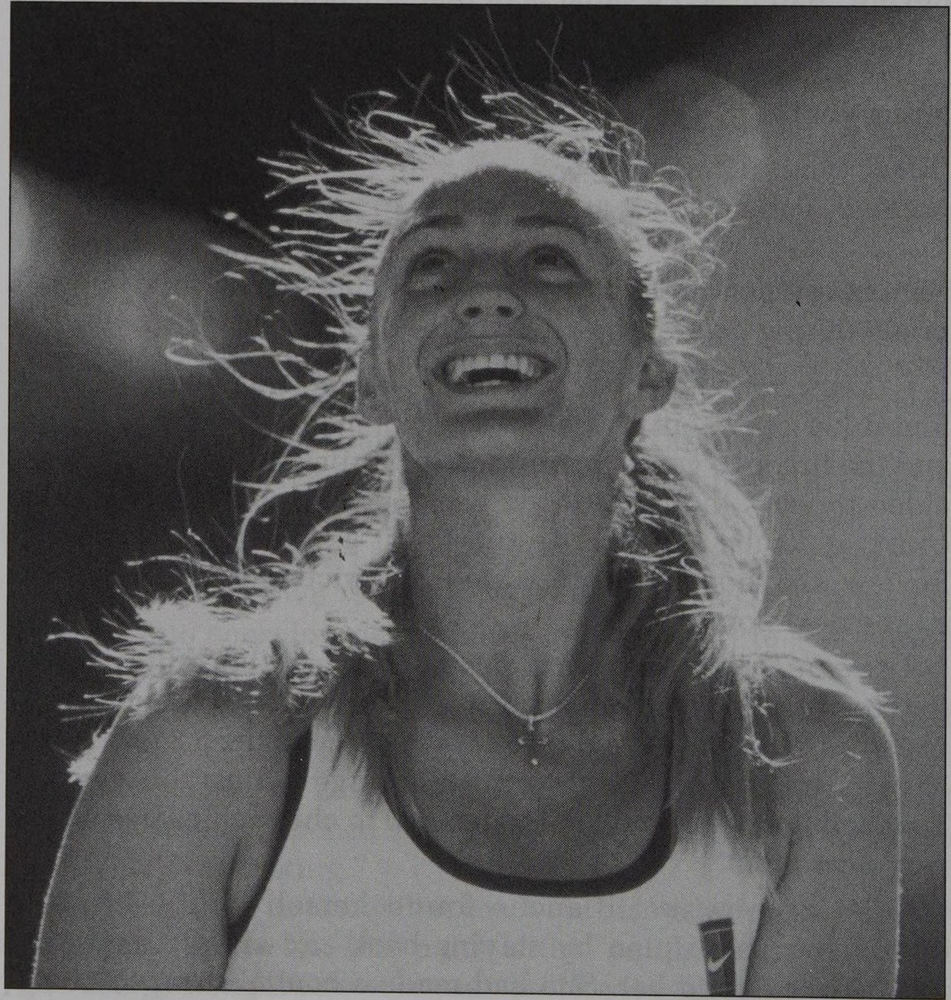
Trong mỗi ví dụ này, vận động viên chỉ đơn giản là nhận ra điều gì đang diễn ra trên sân (hay, chính xác hơn, điều gì đã xảy ra trong quá khứ, cũng như điều gì đang diễn ra ngay lúc này), Xem xét tình hình dựa trên hiểu biết của họ về trò chơi, và lập kế hoạch làm điều gì đó mang tính xây dựng ở quả bóng tiếp theo.
In each of these examples, the player is simply noticing what is happening on the court (or, more precisely, what has happened in the past, as well as what is happening right now), Reviewing the situation in terms of his or her knowledge of the game, and making a plan to do something constructive on the next ball.
Kiểm tra chiến lược chơi của bạn Với tư cách là một vận động viên tennis, bạn có thể học hỏi từ các môn thể thao khác bằng cách tạo ra một chiến lược chơi đơn giản, dễ nhớ với các số mã để mang lại sự tập trung cho giai đoạn Xem xét của hệ thống Ba chữ R. Chẳng hạn, trong bóng rổ, bóng bầu dục và các môn thể thao khác, các vận động viên hô to các bài chiến thuật có số hoặc tên mà mọi người trong đội đều biết. Một con số duy nhất có thể cho cả 11 cầu thủ trong một đội bóng bầu dục biết nhiệm vụ của họ. Các vận động viên tennis, ngược lại, thường thấy mình cứ thi đấu một trận đấu mà không có cách nào để nhớ chiến lược chơi của mình là gì. Nếu trí nhớ của bạn trống rỗng, hãy thử một trong ba chiến lược chơi tennis tiêu chuẩn sau, được mô tả chi tiết hơn ở chương 7.
Check Your Game Plan As a tennis player, you can learn from other sports by creating a simple, easily remembered game plan with code numbers to bring focus to the Review phase of the Three R’s system. For example, in basketball, football, and other sports, players call out plays that have numbers or names known to everyone on the team. A single number can tell all 11 players on a football team what their assignments are. Tennis players, on the other hand, often find themselves simply playing a match with no way to remember what their game plan is. If your memory goes blank, try one of these three standard tennis game plans, which are described in more detail in chapter 7.
Play 1 là chiến lược tấn công mạnh nhất: Giao bóng rồi vô-lê, hoặc ào lên ngay ở quả bóng tiếp theo khi bạn đang trả bóng. Play 1 nói: "Tôi sẽ vào lưới dù thế nào đi nữa; sau cú giao bóng, tôi sẽ chạy, thực hiện bước nhảy tách, đánh cú vô-lê, và áp sát; tôi có thể phải đánh một cú đập bóng trên cao, nhưng tôi sẽ thắng hoặc thua điểm ngay tại lưới."
Play 1 is the most aggressive: Serve and volley, or come in on the very next ball when you are returning. Play 1 says: “I am coming in to the net no matter what; after a serve, I’ll run, do a split step, hit the volley, and close; I may have to hit an overhead, but I am going to win or lose the point at the net.”
Play 2 nói: "Tôi sẽ dưỡng điểm từ vạch cuối sân, nhưng ngay lần đầu tiên có được quả bóng ngắn, tôi sẽ vào lưới. Tôi sẽ kết thúc quả bóng ngắn đó, rồi áp sát để đánh cú vô-lê hoặc, nếu cần, sẵn sàng đánh một cú đập bóng trên cao để thắng điểm."
Play 2 says: “I will work the point from the baseline, but the very first time I get a short ball, I am coming in. I will knock off the short ball, then close for a volley or, if necessary, be ready to hit an overhead to win the point.”
Play 3 là chiến lược chơi cơ bản từ vạch cuối sân: "Tôi sẽ đánh những cú đánh chạm đất chắc chắn từ vạch cuối sân, dưỡng điểm, và thắng bằng sự chính xác, ổn định và sức mạnh của mình từ vạch cuối sân."
Play 3 is a standard baseline game: “I will hit good solid ground strokes from the baseline, work the point, and win with my precision, consistency, and power from the baseline.”
Như một phần của việc Xem xét (nhìn lại những gì đã xảy ra, và nhớ lại chiến lược chơi của bạn) bạn có thể quyết định giữa các điểm nên dùng chiến lược nào ở điểm tiếp theo. Chẳng hạn, bạn có thể tự nói với mình, "Play 1," và điều này sẽ cho bạn biết rằng bạn sẽ giao bóng rồi vô-lê ở điểm tiếp theo. "Play 2" có nghĩa là bạn sẽ dưỡng điểm, nhưng sẽ vào lưới khi có quả bóng ngắn.
As a part of your Review (looking back at what happened, and remembering your game plan) you can decide between points which play to use on the next point. For example, you can say to yourself, “Play 1,” and this will tell you that you are going to serve and volley on the next point. “Play 2” would mean that you are going to work the point, but come in on a short ball.
Việc huấn luyện viên Trogolo chỉ đạo Michael Chang trong một trận đấu với Stefan Edberg minh họa cho việc sử dụng cả chiến lược chơi và các từ mã trong giai đoạn Xem xét. Trong tuần trước trận đấu, Edberg đã thắng Chang 6—1, 6—0. Michael đã đứng sâu trong mọi tình huống, còn Edberg thì ào lên lưới trong mọi tình huống. Kế hoạch lần này là để Michael chơi áp đảo hơn trong các cú trả bóng bằng cách đánh dọc dây. Ngoài ra, với những cú giao bóng hai, kế hoạch của anh là bắt bóng sớm và ào lên sau cú bóng đó, giành lấy khung thành từ Edberg. Kế hoạch đã phát huy hiệu quả; ở set đầu tiên, Chang đã bẻ giao bóng của Edberg ba lần. Kế hoạch cũng đòi hỏi Chang giữ được game giao bóng, và đa dạng hóa cú giao bóng bằng cách ào lên trong một số cú và đứng sâu trong những cú còn lại. Chiến lược chơi thành công này kết hợp giữa Play 1 và Play 2, và Chang đã thắng trận đấu chỉ trong các set trắng.
Trogolo’s coaching of Michael Chang in a match against Stefan Edberg illustrates the use of both game plan and code words during the Review phase. In the week prior to the match, Edberg had beaten Chang 6—1, 6—0. Michael had stayed back on everything, and Edberg came in on everything. The plan this time was for Michael to be more aggressive on the returns by hitting down the line. Also, on second serves his plan was to take the ball early and come in behind it, taking the net away from Edberg. The plan worked; in the first set Chang broke Edberg three times. The plan also required Chang to hold serve, and to mix up serves by coming in on some and staying back on others. The successful game plan included a combination of Play 1 and Play 2, and Chang won the match in straight sets.
Dùng từ mã Hãy giữ mọi thứ đơn giản trong lần Xem xét bằng cách dùng một từ mã để cho mình biết phải làm gì tiếp theo. Các vận động viên tennis và vận động viên các môn khác nổi tiếng vì có những câu ngắn gọn để tự nhắc nhở bản thân phải làm gì. Chúng tôi từng chứng kiến Monica Seles trong một trận đấu với Steffi Graf, và tại giờ nghỉ giải lao Monica đã nhìn vào mặt vợt và hét đi hét lại: "Bẻ giao bóng của cô ấy! Bạn có thể bẻ giao bóng của cô ấy! Cố lên!" Một vận động viên đã trở về phòng của mình trong lúc trận đấu bị hoãn vì mưa và dán những tờ giấy nhỏ có keo lên khắp bức tường, mỗi tờ chỉ chứa một từ: "Hold" (giữ game) hoặc "Break" (bẻ game). Rất đơn giản.
Use Code Words Keep it simple during the Review by using a code word to tell you what to do next. Tennis players and other athletes are noted for having short phrases to tell them what to do. We once saw Monica Seles in a match against Steffi Graf, and at the changeover Monica looked at her strings and shouted over and over: “Break her! You can break her! Come on!” One player went back to her room during a rain delay and put little adhesive notes all over the wall that each contained only one word: “Hold” or “Break.” Very simple.
Những từ mã khác là: "Nhìn bóng!" "Đánh bóng!" "Vào lưới!" "Mạnh mẽ lên!" "Hãy làm đi!" Hoặc bạn có thể dùng các từ mã cho chiến lược chơi của mình: Play 1, Play 2 hoặc Play 3.
Other code words are: “Watch the ball!” “Play the ball!” “Get in!” “Be strong!” “Go for it!” Or you can use the code words for your game plan: Play 1, Play 2, or Play 3.
Luôn kết thúc giai đoạn Xem xét của bạn bằng một từ mã về điều bạn sắp làm tiếp theo.
Always wrap up your Review phase with a code word about what you are going to do next.
Dừng Việc Xem Lại STOP THE REVIEW
Việc STOP là người bạn tốt nhất của bạn khi cần chấm dứt quá nhiều suy nghĩ. Một trong các vận động viên của Trogolo từng nói "Stop!" (Dừng lại!) để ngăn những suy nghĩ tiêu cực về lối chơi tồi của bạn đánh đôi của mình tràn sang điểm tiếp theo. Mặc dù họ đã nói chuyện thẳng thắn trước trận đấu và đang cố gắng giao tiếp tốt hơn trên sân, nhưng vận động viên này chỉ có thể làm được từng ấy. Tại một thời điểm nhất định, điều duy nhất nên làm là STOP mọi suy nghĩ, chuyển sang giai đoạn Tái lập, và chuẩn bị cho điểm tiếp theo. Kỹ thuật STOP đã cứu nguy cho vận động viên này. Hãy tự nói từ "Stop!" (Dừng lại!) với mình sau khi bạn đã kết thúc việc Xem xét. Đây sẽ là tín hiệu để bạn ngừng suy nghĩ và bắt đầu một chuỗi hành vi đã được lên kế hoạch từ trước và thiết thực —nghi thức thư giãn và tập trung của bạn, tức là nghi thức Tái lập—trước khi giao bóng hoặc trả bóng.
The STOP is your best friend when it comes to putting an end to too much thinking. One of Trogolo’s players used to say “Stop!” to keep negative thinking about his doubles partner’s bad play from spilling over into the next point. Even though they had talked things over before the match and were trying to communicate better on court, there was only so much this player could do. At a certain point, the only appropriate thing to do was to STOP all thinking, move on to Reset, and get ready for the next point. The STOP technique saved the day for this player. Say the word “Stop!” to yourself after you have finished the Review. This will be your cue to stop thinking and begin a preplanned and practical set of relaxing and focusing behaviors—your Reset routine—before serving or returning.
Như đã mô tả ở chương 2, bạn có thể học kỹ thuật STOP bằng cách bắt đầu bất kỳ chuỗi hành vi nào, chẳng hạn như đếm, và nhờ một người bạn hét "Stop!" vào bất kỳ lúc nào. Từ thời điểm đó, từ ngữ đó sẽ có nghĩa là đã đến lúc dừng bất cứ điều gì bạn đang làm và chuyển sang giai đoạn tiếp theo, trong trường hợp này là nghi thức Tái lập của bạn.
As described in chapter 2, you can learn the STOP technique by starting any behavioral sequence such as counting and having a friend yell “Stop!” at any point. From that point on, the word will mean that it is time to stop whatever you are doing and move on to the next phase which, in this case, is your Reset routine.
Bài Tập Giúp Bạn Xem Lại EXERCISES TO HELP YOU REVIEW
Hãy trả lời các câu hỏi sau: Theo bạn, bạn là người hay suy nghĩ quá nhiều—hoặc quá ít—khi trên sân giữa các điểm? Bạn có thể xác định được những trận đấu mà bạn bị ảnh hưởng xấu vì việc Xem xét giữa các điểm của mình không đủ tập trung?
Answer these questions:To what extent have you been one to think too much—or too little—while on the court between points? Can you identify matches in which you were hurt because your Review between points wasn't sufficiently focused?
Bài tập 2 Hãy tạo ra quy trình Xem xét của riêng bạn bằng cách đánh dấu các mục trong danh sách ở bài tập này.
Exercise 2 Create your own Review by checking items from the list in this exercise.
Sau đó, hãy viết bản tóm tắt Xem xét của riêng bạn vào những dòng bên dưới. Ví dụ: "Sau khi nói STOP (sau phần Xả căng), tôi sẽ lập tức chuyển vợt sang tay kia, nhìn vào mặt vợt, và vừa đi vừa xem xét tình hình.
Then write your own summary Review in the lines that follow. For example: “After saying STOP (following Release) I will immediately switch racket hands, look at my strings, and walk as I go over the situation.
Thư giãn trong lúc đi, tôi sẽ tự hỏi mình những "câu hỏi của huấn luyện viên" và kiểm tra chiến lược chơi của mình. Sau đó tôi sẽ gọi Play 1, Play 2 hoặc Play 3 trước khi bắt đầu nghi thức Tái lập của mình."
Relaxing as I walk, I will ask myself the “coach questions” and check my game plan. Then I will call either Play 1, Play 2, or Play 3 before beginning my Reset routine.”
Bài tập 2, (tiếp theo) Chuyển vợt sang tay không Bỏ qua việc Xem xét. cầm vợt để bắt đầu việc Xem xét.
Exercise 2, (continued) Switch racket to nonplaying Skipping the Review. hand to start Review.
Chỉ nhìn vào điều tồi tệ. ☐ Đi đứng tự tin (vai thẳng sau, đầu ngẩng cao).
Looking just at the bad. |_| Walk confidently (shoulders back, head up).
Quên chiến lược chơi của mình. ☐ Nhìn vào mặt vợt trong khi suy nghĩ.
Forgetting my game plan. |_| Look at my strings as | think.
Nhìn vào huấn luyện viên (cha mẹ) | ; a để cầu cứu.
Looking at coach (parents) | ; a for help.
Hãy hỏi những "câu hỏi của huấn luyện viên".
Ask the “coach questions.
Chuyện gì vừa xảy ra?
What just happened?
Khác (liệt kê): Tại sao tôi thắng điểm đó? __| Tại sao tôi thua điểm đó?
Other (list): Why did I win the point? __| Why did I lose the point?
Tôi có đang thực hiện chiến lược chơi không?
Am|doing my game plan?
Tôi có đang nhắm vào điểm yếu của đối thủ không?
Am I playing my opponent's weakness?
Tôi cần làm gì tiếp theo?
What do I need to do next?
Gọi "Play 1," "Play 2" hoặc "Play 3."
Call “Play 1,” “Play 2,” or “Play 3.”
|| Nói các từ mã của mình (chẳng hạn "Nhìn bóng," "Mạnh mẽ lên," "Đánh bóng," "Vào lưới!").
|| Say my code words (such as “Watch the ball,” “Be strong,” “Play the ball,” “Get in!”).
Thư giãn bằng hơi thở sâu.
Relax with deep breathing.
|] Khác (liệt kê): Stake RS Nhìn vào các mục bạn đã đánh dấu, hãy viết ra một bản tóm tắt về việc Xem xét lý tưởng dành cho bạn giữa các điểm. …………………………………………… ……………………………………………
|] Other (list): Stake RS Looking at the items you have checked, write down a summary of what would be an ideal Review for you between points. a ee eee
SASL EE TTL NE, Hãy luyện tập chính việc Xem xét (Review) của bạn, và nhờ một người bạn mã hóa hành vi Xem xét của bạn trực tiếp hoặc qua băng video bằng Sổ tay Mã hóa ở chương 7.
SASL EE TTL NE, Practice your own Review, and ask a friend to code your Review behavior live or on videotape using the Coding Manual in chapter 7.
Hãy quan sát những người chơi khác (trực tiếp hoặc trên TV) xem bạn có nhận ra được những lần Xem xét tốt và kém hay không. Chẳng hạn, bạn có thể nhận ra khi dành quá ít thời gian cho phần Xem xét lại dẫn đến lối chơi vội vàng và những lỗi tự đánh hỏng (đặc biệt sau khi mọi việc đã diễn ra tồi tệ trong một điểm hay hai điểm)?
Watch other players (live or on TV) to see if you can spot good and poor Reviews. For example, can you tell when taking too little time for the Review leads to rushed play and unforced errors (especially after things have gone badly for a point or two)?
Hồ Sơ Vận Động Viên — Billie Jean King PLAYER PROFILE
Cần loại bản lĩnh tinh thần như thế nào để đánh bại Bobby Riggs trong “trận Battle of the Sexes” trước khán giả toàn thế giới? Những người đã xem trận đấu ấy nhớ rằng Riggs trước đó đã đánh bại Margaret Court trong một trận battle of the sexes khác, và rằng Riggs đã thực hiện đủ loại thủ đoạn gây nhiễu, thậm chí còn tặng Margaret một bó hoa hồng ngay khi trận đấu bắt đầu. Billie Jean đã nói với cả thế giới rằng cô sẽ không để mình bị phân tâm, và cô đã chứng minh được điều đó.
What kind of mental toughness does it take to beat Bobby figeeint! the“Battle of the Sexes” before a worldwide audience? Those who watched that match recall that Riggs had previously defeated Margaret Court i in another battle of the sexes, and that Riggs went through all sorts of di re cting maneuvers, even presenting Margaret with a bouquet of roses just as the match started. Billie Jean told the world that she would not let herself get distracted, and she proved it.
Billie Jean King là người phụ nữ đầu tiên được trao danh hiệu “Sportsperson of the Year” do tạp chí Sports Illustrated năm 1972, và năm 1973 bà được vinh danh “Female Athlete of the Year.” Năm 1962, khi mới 18 tuổi, King tạo nên cú sốc khi đánh bại Margaret Smith Court, tay vợt nữ xuất sắc nhất, tại Wimbledon. Năm 1967, King là người phụ nữ đầu tiên kể từ năm 1939 giành được ngôi vị tam vương ở cả đơn, đôi và đôi nam nữ tại cả Giải Vô địch Anh và Giải Vô địch Mỹ. Đến năm 1968, bà đã vô địch Wimbledon ba lần và sẽ còn vô địch thêm ba lần nữa trước khi giải nghệ. Tổng cộng, bà đã thắng 71 giải đấu trong sự nghiệp, 39 danh hiệu đơn Grand Slam và 27 danh hiệu đôi Grand Slam. King là người phụ nữ đầu tiên giành được hơn 100.000 đô-la tiền thưởng trong một mùa giải.
Billie Jean King was the first woman to be given the title“Sportsperson of the Year” by Sports Illustrated in 1972, and in 1973 she was named “Female Athlete of the Year.” In 1962, when she was 18, King upset Margaret Smith Court, the best woman player, at Wimbledon. In 1967 King was the first woman since 1939 to have won the triple crown in singles, doubles, and mixed doubles in both the British and American championships. By 1968 she had captured Wimbledon three times and would go on to win it three more times before retiring. In all, she won 71 career tournaments, 39 Grand Slam singles titles,and 27 Grand Slam doubles titles. King was the first woman athlete to win more than $100,000 in prize money in a single season.
Sự ủng hộ thẳng thắn của King cho quyền lợi và sự đãi ngộ tốt hơn cho các nữ vận động viên, cũng như chiến thắng trước Bobby Riggs, đã góp phần quan trọng vào việc nâng tầm sức hút của tennis nữ. Nổi tiếng là một đối thủ mãnh liệt, King đã tấn công hết mình trên sân trong khi vẫn giữ sự tập trung chặt chẽ vào chiến thuật của mình với những lần Xem xét thật chắc chắn.
King’s outspoken support for better pay and treatment for women players, as well as her defeat of Bobby Riggs, were instrumental in improving the popularity of women’s tennis. Known to be a fierce competitor, King employed an all-out attack on the court while maintaining a tight focus on her game plan with solid Reviews.
Billie Jean King (Moffitt) sinh ngày 22 tháng 11 năm 1943, tại Long Beach, California. Sau khi giải nghệ, King trở thành huấn luyện viên và bình luận viên truyền hình cho môn thể thao này. Bà đã sáng lập giải tennis nữ chuyên nghiệp đầu tiên thành công và thành lập các lớp tennis dành cho trẻ em có hoàn cảnh khó khăn.
Billie Jean King (Moffit) was born on November 22, 1943, in Long Beach, California. After retiring, King became a coach and television analyst for the sport. She established the first successful women’s professional tennis tour and founded tennis clinics for underprivileged children.
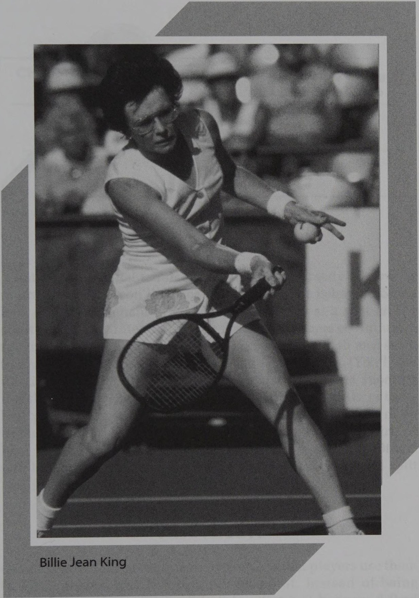
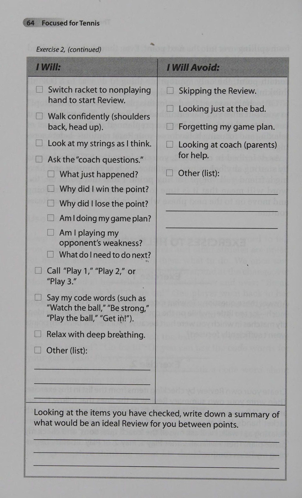
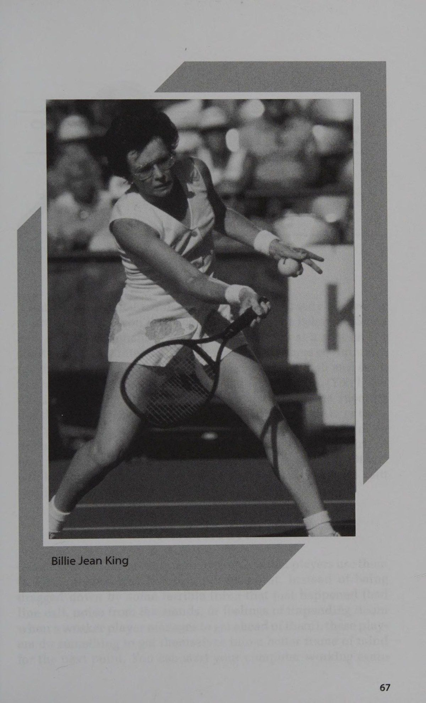
Chữ R Thứ Ba: Quy Trình Đặt Lại
Hãy quan sát các tuyển thủ tennis chuyên nghiệp khi họ chuẩn bị thực hiện cú giao bóng hoặc trả bóng, và bạn sẽ nhận thấy những quy luật trong hành vi của họ. Một số người nhìn đối thủ hoặc liếc nhìn kín đáo một điểm trên sân nơi họ định đánh cú giao bóng một. Số khác lại trải qua một quy trình nảy bóng nhất định. Một số người hít một hơi thở sâu và dường như tạo ra trong đầu một hình ảnh về điều họ sắp làm. (Bạn cũng sẽ thấy điều này ở các môn thể thao khác. Hãy xem các cầu thủ bóng rổ thực hiện cú ném phạt, các cầu thủ đá phạt chuẩn bị sút, hay các cầu thủ bóng chày bước vào ô đánh bóng.) Nhiều tuyển thủ trải qua những nghi thức, chẳng hạn John McEnroe kéo áo mình, hay Ivan Lendl kéo mí mắt trong một số tình huống nhất định. Số khác sẽ nhún nhảy trên đôi chân trước khi trả bóng, rồi thực hiện động tác bước tách (split step) để chuẩn bị đánh bóng.
Watch professional tennis players as they get ready to serve or return serve, and you’ll notice patterns in their behavior. Some look at their opponent or glance unobtrusively at a spot on the court where they intend to hit the first serve. Others go through a specific ball bounce routine. Some take a deep breath and seem to draw a mental image of what they are going to do. (You'll see this in other sports as well. Watch basketball players shooting free throws, placekickers getting ready to kick field goals, or baseball players stepping into the batter’s box.) Many players go through rituals, such as John McEnroe pulling on his shirt, or Ivan Lendel pulling on his eyelids in certain situations. Others will bounce on their toes before returning serve, then do a split step in preparation for hitting the ball.
Tại Sao Phải Đặt Lại? WHY RESET?
Phân tích của chúng tôi về các quy trình và nghi thức này cho thấy các tuyển thủ dùng chúng để tự Đặt lại mình trước điểm tiếp theo. Thay vì bị kéo xuống bởi điều gì đó khủng khiếp vừa xảy ra (một phán quyết đường bóng sai, tiếng ồn từ khán đài, hay cảm giác bất hạnh sắp ập đến khi một tuyển thủ yếu hơn lại vượt lên trước họ), những tuyển thủ này làm điều gì đó để đưa mình vào trạng thái tinh thần tốt hơn cho điểm tiếp theo. Bạn có thể khởi động lại chiếc máy tính của mình
Our analysis of these routines and rituals is that players use them to Reset themselves before the next point. Instead of being dragged down by some terrible thing that just happened (bad line call, noise from the stands, or feelings of impending doom when a weaker player manages to get ahead of them), these players do something to get themselves into a better frame of mind for the next point. You can start your computer working again
Focused for Tennis khi nó tự cuốn mình vào rối rắm chỉ bằng một cú nhấn nút.
@O_ Focused for Tennis when it gets itself tied in knots simply by pressing a button.
Tennis (và cuộc sống) phức tạp hơn một chút, nên cần một quy trình hành vi phức tạp hơn để tự Đặt lại mình khi bạn cần một khởi đầu mới.
Tennis (and life) is a bit more complicated, so it takes a more complex behavioral routine to Reset yourself when you need a fresh start.
Bắt Đầu Quy Trình Đặt Lại STARTING YOUR RESET ROUTINE
Hãy hình dung John McEnroe ở thời điểm tồi tệ nhất và tuyệt vời nhất của anh ấy! Dù những cơn nổi giận của anh ấy kịch tính đến đâu, hay chúng làm đối thủ mất phương hướng ra sao, khi đến lúc giao bóng hoặc trả bóng, chưa từng có tuyển thủ nào giỏi trong việc để lại phía sau những gì vừa xảy ra, hoàn thành những quy trình hành vi cụ thể, và đưa sự tập trung hoàn toàn đến nhiệm vụ trước mắt.
Picture John McEnroe at his worst and best! No matter how dramatic his outbursts or how they threw his opponent off, when it came time to serve or return, there was never a player as good at putting what had just occurred behind him, completing specific behavioral routines, and bringing complete focus to the task at hand.
Chương này sẽ cung cấp cho bạn một danh sách kiểm tra để hoàn thành chữ R thứ ba, Đặt lại (Reset), giữa các điểm. Chúng tôi khuyên bạn nên dùng một quy trình đều đặn cho việc Đặt lại của mình, để sức mạnh của thói quen đã được điều kiện hóa sẽ đưa bạn vượt qua dù điều gì đang diễn ra trong trận đấu. Bạn có thể đã có sẵn một quy trình như vậy — nhiều tuyển thủ khá vững ở phần này của trò chơi — mà không hề nhận ra rằng mình đang làm một điều cụ thể. Tuy nhiên, nếu thiếu khái niệm nền tảng này, các tuyển thủ thường đẩy nhanh quy trình thông thường của mình trong những hoàn cảnh căng thẳng, hoặc bỏ qua nó hoàn toàn. Cũng tệ không kém, họ có thể để những phân tâm làm xao nhãng quy trình Đặt lại của mình, và khiến họ không dùng được nó để tăng cường sự tập trung khi họ cần nhất. ‘ BƯỚC TIẾP THEO Hãy coi việc Đặt lại như một người bạn thân giúp bạn giữ gìn (hay lấy lại) sự bình tĩnh khi bạn chuẩn bị đưa bóng vào cuộc chơi. Trong bất cứ trường hợp nào, bạn cũng không muốn để ai đó cướp mất việc Đặt lại của bạn bằng cách làm gián đoạn dòng chảy ấy. Trên thực tế, nếu bạn bị gián đoạn giữa các điểm (một quả bóng lăn vào sân, tiếng ồn đám đông trở nên bất thường, hay đối thủ của bạn làm điều gì đó để làm bạn mất tập trung), hãy thực hiện lại Ba chữ R từ đầu, từ trên xuống: một lần Xả ngắn gọn, một lần Xem xét ngắn về tình huống, rồi hoàn thành quy trình Đặt lại của bạn. Chúng tôi sẽ quay lại cách đối phó với những gián đoạn sau, nhưng trước hết hãy xem một số quy trình Đặt lại cơ bản.
This chapter will give you a checklist for completing the third R, Reset, between points. We suggest that you use a regular routine for your Reset, so the power of conditioned habit will carry you through no matter what’s happening in the game. You may have such a routine already—many players are fairly strong on this part of the game—without noticing that you’re doing anything specific. Without the uriderlying concept, however, players commonly rush their normal routine under stressful circumstances, or skip it altogether. Just as bad, they might allow distractions to throw off their Reset routine, and keep them from using it to enhance concentration and focus when they need it most. ‘ TAKING THE NEXT STEP Think of the Reset as a best friend who helps you maintain (or regain) your composure as you prepare to put the ball in play. In no case do you want to let someone steal your Reset from you by interrupting the flow. As a matter of fact, if you’re ever interrupted between points (a ball rolls onto the court, crowd noise gets unusually loud, or your opponent does something to throw you off), begin the Three R’s all over again, from the top: Brief Release, brief Review of the situation, and then complete your Reset routine. We’ll get back to ways to deal with interruptions later, but let’s look at some basic Reset routines first.
Ví Dụ Về Quy Trình Đặt Lại SAMPLE RESET ROUTINE
Bạn có thể xây dựng một quy trình phù hợp độc nhất với lối chơi của mình. Điều này có nghĩa là quy trình của bạn có thể rất khác biệt so với của những tuyển thủ khác, dù tất cả các tuyển thủ đều rút ra từ một số thành phần tiêu chuẩn được minh họa trong bảng 5.1. Hãy nhìn vào bảng và phần thảo luận về các thành phần, và xem bạn muốn đưa những yếu tố nào vào quy trình Đặt lại của mình, và theo thứ tự nào.
You can develop a routine that is uniquely suited to your style of play. This means that your routine may be very different from that of other players, even though all players will draw from several standard components illustrated in table 5.1. Have a look at the table and the discussion of the components, and see which elements you would like to include in your Reset routine, and in what order.
Giao bóng Dưới đây là một số biện pháp mà chúng tôi thấy hữu ích khi chuẩn bị thực hiện cú giao bóng.
Service Here are some of the measures that we’ve found helpful when getting ready to serve.
• Nhìn sang sân đối diện. Trước khi bước lên vạch để giao bóng, hãy nhìn đối thủ, hoặc nửa sân bên kia, thể hiện rằng bạn đang kiểm soát tình huống, và sắp đưa quả bóng vào cuộc chơi.
¢ Look to opposite court. Before stepping to the line to serve, look at the opponent, or the other side of the court, indicating that you are in control of the situation, and about to put the ball in play.
Bảng 5.1 Các thành phần của quy trình Đặt lại _ Bước lên vạch giao bóng.
Table 5.1 Reset Routine Components _ Step to the line.
Bước lên vạch giao bóng. i Xướng tỷ số.
Step to the line. i Call score.
Kiểm tra tỷ số. ; Hít một hơi thở sâu vào Hít một hơi thở sâu vào : và thở ra; hình dung một cú giao bóng tuyệt vời và thở ra; hình dung cú trả bóng mạnh mẽ của bạn | __ để mở đầu điểm đấu. (chẳng hạn, chạm nhẹ rồi lên lưới).
Check score. ; Relax with a deep breath in Relax with a deep breath in : and out; image a great serve and out;imagine your strong | __ to start the point. return (say, chip and charge).
Nảy bóng một số lần Bắt đầu “đôi chân nhanh nhẹn”. __ cố định. | Bắt đầu động tác giao bóng.
Bounce the ball a set number Begin “fast feet.” __ of times. | Begin serve motion.
Di chuyển để trả bóng.
Move to the return.
Ghi chú. Đây là một quy trình Đặt lại cơ bản mang tính thư giãn. Bạn có thể thêm các yếu tố Tăng tốc (Rev Up) bằng cách mở đầu quy trình bằng một cú vả vào đùi, tự nhủ “Come On!” với chính mình, hoặc thực hiện một động tác khác để tự khởi động khi bạn bước lên vạch. Lưu ý rằng bạn vẫn muốn thư giãn ở giữa chặng quy trình Đặt lại, để ổn định lại ở mức năng lượng mới và đảm bảo bạn đã sẵn sàng chơi thật tốt.
Note. This is a basic relaxation-oriented Reset routine. You can add Rev Up elements by starting the process with a slap to your leg, saying “Come On!" to yourself, or going through some other motion to get yourself going as you step to the line. Note that you still want to relax midway through the Reset routine, so as to settle in at the new energy level and make sure you're ready to play your best.
• Xướng tỷ số. Trừ khi có người xướng tỷ số cho bạn, bạn có thể bước lên vạch và xướng tỷ số (nếu đang trả bóng, hãy đề nghị xướng tỷ số, nếu đối thủ quên không làm điều đó).
¢ Call the score. Unless you have someone calling the score for you, you can step to the line and call the score (if returning, ask for the score to be called, if your opponent fails to do so).
• Thư giãn bằng một hơi thở sâu, rồi thở ra. Hãy hình dung việc đưa quả bóng vào cuộc chơi, rồi nảy bóng. Trình tự hành vi này có thể được sắp xếp cho phù hợp với lối chơi của bạn. Ý tưởng là thư giãn bằng cách hít một hơi sâu và thở ra (giống như các cầu thủ bóng rổ trước khi ném phạt), hình dung ra hình ảnh về điều bạn sắp làm, rồi nảy bóng bao nhiêu lần tùy theo cảm giác của bạn. Luôn dùng cùng một số lần nảy bóng — bản thân con số không quan trọng, nhưng sự lặp lại xây dựng một cảm giác kiểm soát ở cấp độ phi ngôn ngữ và chuyển sang sự kiểm soát tương tự khi bạn thực sự giao bóng.
¢ Relax with a deep breath, and exhale. Imagine putting the ball into play, and then bounce the ball. This sequence of behaviors can be ordered to suit your own style. The concept is to relax by taking a deep breath and exhaling (much as basketball players do before shooting free throws), conjure up an image of what you are about to do, and then bounce the ball any number of times that seems to suit you. Always use the same number of bounces— the number itself doesn’t matter, but the repetition builds a sense of control at a nonverbal level and transfers to similar control when you actually serve.
• Giao bóng. Tại thời điểm này bạn bắt đầu động tác giao bóng, vốn có một quy trình hành vi riêng. Bắt đầu từ một tư thế xuất phát (bóng và vợt giữ cùng nhau), bạn gập đầu gối, đưa vợt ra sau và tung bóng lên, rồi duỗi thẳng cơ thể và đánh bóng với năng lượng và sức mạnh to lớn theo đúng hướng mà bạn đã hình dung từ trước. Quả bóng giờ đã vào cuộc chơi và bạn đã khởi động!
¢ Serve the ball. At this point you begin your service motion, which has a behavioral routine of its own. Beginning from a start position (ball and racket held together), you bend your knees, moving the racket back and tossing the ball, and then uncoil your body and hit the ball with tremendous energy and power in precisely the direction that you have already imagined. The ball is now in play and you are off and running!
Trả bóng Hãy dùng bất kỳ sự kết hợp nào sau đây làm một phần của quy trình trả bóng của bạn.
Return Use any combination of the following as a part of your return routine.
• Hình dung cú trả bóng của bạn. Hãy tưởng tượng bạn sẽ làm gì trong cú trả bóng. Hãy hình dung cách bạn quan sát bóng bay khỏi vợt của đối thủ, nhanh chóng chuyển động để trả bóng, và đánh bóng thật tốt.
¢ Imagine your return. Picture what you are going to do on the return. Imagine how you will watch the ball come off the opponent’s racket, quickly make your move to return, and hit the ball well.
• Thư giãn. Hít một hơi thở sâu và thở ra từ từ. Hãy xua tan mọi căng thẳng trước khi bước vào khu vực trả bóng.
¢ Relax. Take a deep breath and let it out slowly. Shake loose any jitters before you step into the return area.
• Nhìn đối thủ ở phía bên kia sân. Như với việc giao bóng, việc nhìn đối thủ ở nửa sân đối diện có thể là cách của bạn để kiểm soát tình huống và cho người đó biết rằng bạn đã sẵn sàng trả bóng. • Bước vào khu vực trả bóng và bắt đầu di chuyển chân. Việc này có thể bao gồm việc nhún nhảy trên đôi chân, đung đưa qua lại, hay bất kỳ quy trình hành vi nào khác giúp bạn chuẩn bị trả một cú đánh tốt.
¢ Look at opponent on other side of the court. As with the service, looking at the opponent on the other side can be your way of controlling the situation and letting the person know that you are ready to return. e Step to the return area and begin footwork. This may involve bouncing on your toes, swaying back and forth, or any other behavioral routine that allows you to prepare to return a good shot.
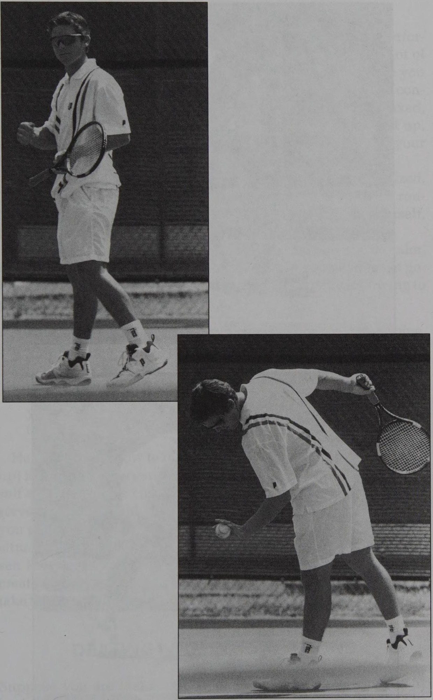
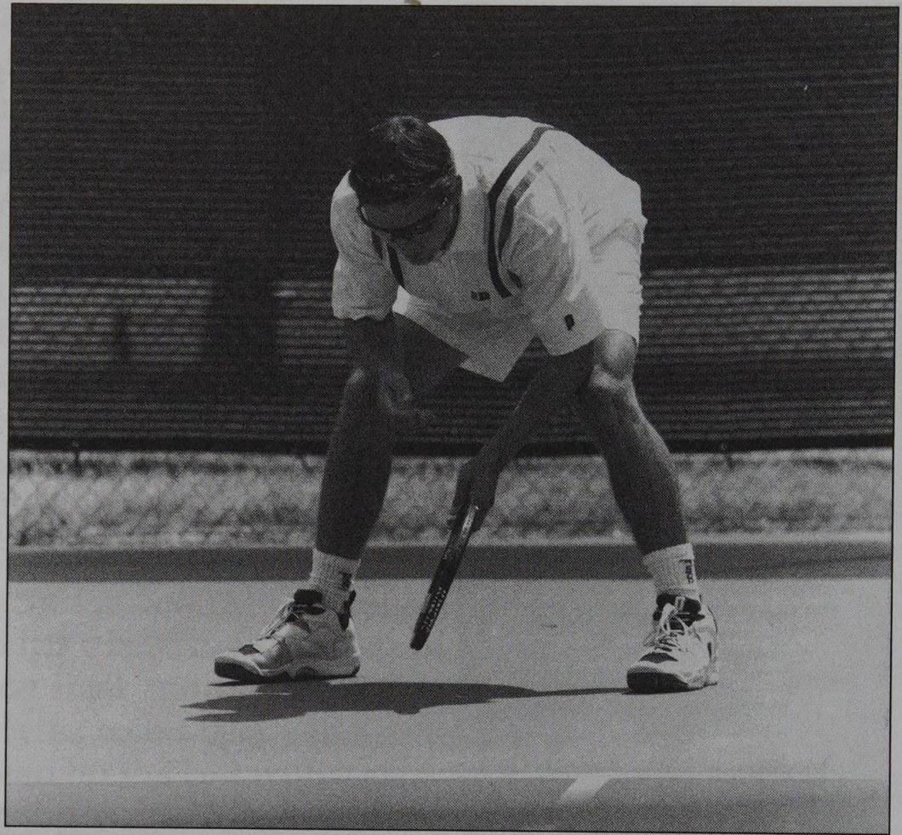
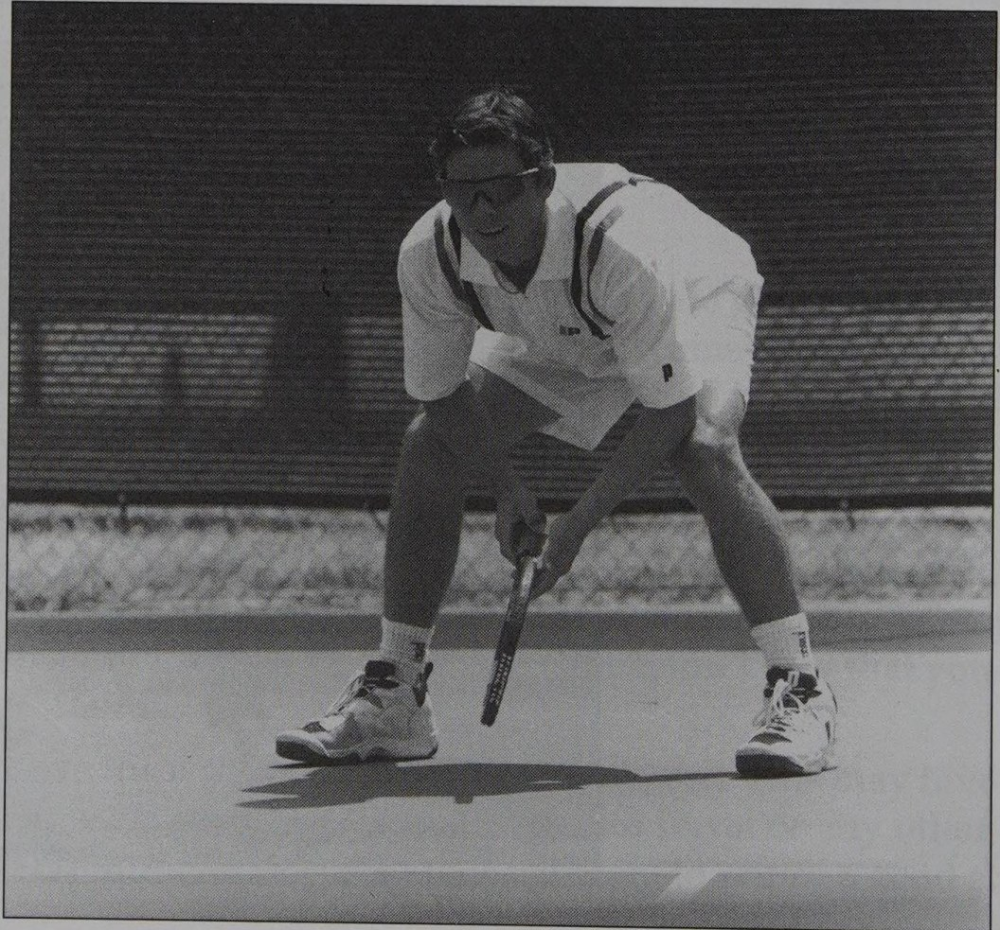
Các biến thể: Thư giãn hoặc Tăng tốc Các vận động viên cho biết rằng khi họ “đạt trạng thái thi đấu xuất thần”, phong độ ở mức đỉnh cao, họ có thể thực hiện các cú đánh một cách dễ dàng mà không cần nhiều suy nghĩ. Họ không quá thư giãn cũng không quá hưng phấn. Trong khi bạn không thể ép mình vào trạng thái ấy, bạn chắc chắn có thể tạo ra các điều kiện khiến việc đạt đến nó trở nên khả thi. Nếu bạn quá thư giãn, bạn có thể cần tự khích lệ mình. Nếu bạn đã quá hưng phấn, bạn có thể cần tự làm cho mình bình tĩnh lại. Bạn có thể làm điều này bằng cách biến quy trình Đặt lại của mình thành một quy trình thư giãn hoặc một quy trình tăng tốc.
Variations: Relax or Rev Up Players report that when they are “in the zone” of peak performance, they are able to effortlessly execute shots without a lot of thought. They are neither too relaxed nor too excited. While you cannot force yourself into the zone, you certainly can create conditions that make getting there possible. If you are too relaxed, you may need to pump yourself up. If you are too pumped up, you may need to relax yourself. You can do this by varying your Reset routine as either a relax routine or a rev up routine.
Hãy dùng quy trình thư giãn nếu bạn căng thẳng, lo lắng, hoặc quá hưng phấn.
Use a relax routine if you are uptight, nervous, or too energized.
Những quy trình đã mô tả ở trên là các quy trình thư giãn. Trong các quy trình này, bạn hít một hơi sâu, thở ra từ từ, lấy lại bình tĩnh, rồi chuẩn bị giao bóng hoặc trả bóng.
The routines already described are relax routines. In these routines you take a deep breath, let it out slowly, collect yourself, then get ready to serve the ball or return.
Nếu trong giai đoạn Xem xét (Review), bạn nhận thấy mình quá bình thản, chưa đủ kích thích, uể oải, hoặc thiếu động lực, và bạn cần khởi động, thì hãy thực hiện một quy trình tăng tốc. Thêm một hoặc nhiều trong số các động tác sau vào quy trình tiêu chuẩn của bạn để tự khích lệ: • Nói “Come on!” hoặc một cụm từ khác. Hãy tự bảo mình hãy khởi động.
If you have learned in your Review phase that you are too calm, underaroused, lethargic, or unmotivated, and you need to get going, then do a rev up routine. Add one or more of the following to your standard routine to rev you up: ¢ Say “Come on!” or some other phrase. Tell yourself to get going.
• Vả vào đùi bạn, như thể để tự đánh thức mình. Hoặc làm một động tác khác để thu hút sự chú ý của bạn. • Dùng hình ảnh tưởng tượng mạnh mẽ về điểm tiếp theo. Hãy hình dung những gì bạn sắp làm một cách mạnh mẽ, tích cực. Hãy hình dung việc kiểm soát toàn bộ điểm đấu.
¢ Slap your leg, as if to wake yourself up. Or do something else to get your attention. e Use aggressive imagery about the next point. Picture what you are going to be doing in a strong, positive way. Picture taking control of the entire point.
Dưới đây là thêm về cách biến hình ảnh tưởng tượng thành một phần của quy trình Đặt lại (thư giãn hoặc tăng tốc) của bạn khi chuẩn bị giao bóng hoặc trả bóng. Hãy hình dung bạn sắp chơi một điểm tennis kinh điển. Nếu bạn sắp đánh theo kiểu giao bóng rồi lên lưới (serve and volley) và đã chọn Play 1, thì tại thời điểm này bạn hãy hình dung một Play 1 mạnh mẽ, vững chắc, với bạn đứng sau điều khiển toàn bộ tình huống. Mặt khác, nếu bạn đang trả bóng và đã chọn Play 2, thì bạn sẽ hình dung một cú trả bóng mạnh — một cú tạo ra bóng ngắn — và bạn sẽ hình dung mình lướt vào để bắt sớm cú bóng ngắn ấy, đóng lưới với một cú vô-lê tốt để thắng điểm.
Here’s more on how to make imagery a part of your (relax or rev up) Reset routine as you get ready to serve or return. Picture yourself about to play a classic tennis point. If you are going to play serve and volley and you have chosen Play 1, then at this point you picture a strong, solid Play 1, with you in charge of the entire situation. On the other hand, if you are returning and have chosen Play 2, then you will picture a strong return—one that will create a short ball—and you will picture yourself charging in to take the short ball early, closing for a good volley to win the point.
Ứng Phó Với Những Gián Đoạn DEALING WITH INTERRUPTIONS
Giả sử bạn sắp hoàn tất quy trình Đặt lại của mình bằng cách bắt đầu cú giao bóng thì có điều gì đó chen ngang. Có thể là đối thủ của bạn dùng một chút thủ đoạn gây nhiễu và làm chậm trận đấu. Hoặc một quả bóng có thể lăn ra sân. Bạn sẽ làm gì?
Suppose you are just about to complete your Reset routine by beginning your serve when something interrupts you. It might be that your opponent engages in‘a bit of gamesmanship and delays play. Or a ball may roll out on the court. What do you do?
Trả lời: Hãy thực hiện lại Ba chữ R từ đầu, hoàn thành từng R, dù bạn có thể làm phần Xả và phần Xem xét thật nhanh gọn.
Answer: Start the Three R’s all over, completing each R, even though you might make the Release and the Review quite short.
Chẳng hạn, giả sử đối thủ của bạn quay ra phía khán giả và kể một câu chuyện cười đúng lúc bạn sắp giao bóng. Đây là những gì bạn có thể làm: • Xả: Bước lùi khỏi vạch giao bóng, có thể tự nhủ với mình, “Thật là đồ tồi!” • DỪNG • Xem xét: “Anh ta tưởng làm vậy sẽ đánh lừa được tôi, nhưng tôi sẽ không để điều đó xảy ra. Kế hoạch của tôi là đánh cú giao bóng mạnh về trái tay của anh ta, và đó vẫn là điều tôi sẽ làm. Tôi sẽ thực hiện một quy trình Đặt lại thật tốt, với một hơi thở sâu để tập trung, và tôi sẽ không để điều này làm tôi mất tập trung.” • DỪNG • Đặt lại: Hãy thực hiện lại quy trình Đặt lại đã bị gián đoạn — từ đầu. Hít một hơi thở sâu, tạo hình ảnh, nảy bóng, bất cứ điều gì bạn định làm.
For example, suppose your opponent turns to the crowd and makes a joke just as you are about to serve. Here is what you can do: ¢ Release: Walk away from the service line, perhaps saying to yourself, “What a jerk!” e¢ STOP ¢ Review: “He thinks this will throw me off, but I won’t let it happen. My plan was to kick the serve high to his backhand, and that’s still what I’m going to do. I’ll do an especially good Reset routine, with a good deep breath to focus, and I’ll keep this from throwing me off.” e STOP ¢ Reset: Do the Reset routine that was interrupted—from the beginning. Take the deep breath, form the image, bounce the ball, whatever you were going to do.
Điều then chốt là dùng quy trình Đặt lại làm lối vào của chính bạn cho điểm tiếp theo, và không để ai cướp mất nó khỏi bạn. Họ có thể làm gián đoạn nó — nhưng bạn sẽ chỉ việc lùi lại và thực hiện lại Ba chữ R, dùng phần Xả để buông bỏ mọi sự bực bội có thể đang có, phần Xem xét để phân tích sự gián đoạn và lập kế hoạch của bạn, và quy trình Đặt lại để sẵn sàng chơi điểm đấu.
The key is to use the Reset routine as your own entry for the next point, and not let anyone take it away from you. They may interrupt it—but you will simply step back and move through the Three R’s again, using the Release to let go of any frustration that may be present, the Review to analyze the interruption and make your plan, and the Reset routine to get ready to play the point.
Đó là điều tự nhiên! Hãy nhớ rằng tất cả chúng ta đều phải đánh rất nhiều bóng để phát triển những cú đánh tốt nhất của mình. Và rằng đến một lúc nào đó, việc đánh những cú hay sẽ bắt đầu trở nên tự nhiên. Hơn thế nữa, đánh được những cú bóng chắc chắn thật tuyệt.
It’s natural! Remember that we all have to hit a lot of balls to develop our best shots. And that at some point hitting good shots starts to feel natural. Even more, it feels great to hit solid shots.
Điều tương tự cũng đúng với Ba chữ R giữa các điểm. Sau khi bạn phát triển trình tự của riêng mình, khoảng thời gian giữa các điểm trở thành đồng minh của bạn, lúc để tận hưởng điều tốt đẹp vừa xảy ra, hoặc để điều chỉnh mọi thứ không diễn ra tốt. Hãy nhớ cũng rằng, Ba chữ R là một hệ thống không bao giờ thất bại: Nếu bạn lơ là cảnh giác và để mất nó theo cách này hay cách khác (nổi nóng, nản lòng, hay choke), bạn luôn có thể lấy lại được bằng một lần Xả, một lần Xem xét nhanh, và một quy trình Đặt lại để đưa sự tập trung đến điểm tiếp theo.
The same is true of the Three R’s between points. After you develop your own sequence, the between-point time becomes your ally, a time to enjoy the good that just happened, or to correct for anything that is not going well. Remember too, that the Three R’s is a no-fail system: If you drop your guard and lose it in some way (outburst, discouragement, or choke), you can always recover with a Release, a quick Review, and a Reset routine to bring focus to the next point.
R thứ ba: Thói quen Đặt lại
The Third R: Reset Routin
Bài Tập Giúp Bạn Đặt Lại EXERCISES TO HELP YOU RESET
Bài tập 1 Bạn thường thực hiện những quy trình Đặt lại nào khi giao bóng? Còn khi trả bóng thì sao?
Exercise 1 What Reset routines do you characteristically perform when serving? How about when returning?
Bài tập 2 Hãy đánh dấu các mục trong các danh sách dưới đây để xác định các yếu tố của chính quy trình Đặt lại bạn.
Exercise 2 Check items on the lists that follow to identify elements of your own Reset routine.
Khi giao bóng: Để bất kỳ ai ngăn cản tôi Khi trả bóng: khỏi việc thực hiện Đặt lại của tôi. Bước lên vạch giao bóng. : quy trình Đặt lại.
When serving: Letting anyone keep me When returning: from doing my Reset Step to the line. : routine.
Xướng tỷ số.
Call score.
Bỏ qua quy trình Đặt lại của tôi.
Skipping my Reset routine.
Thư giãn bằng một hơi thở sâu.
Relax with a deep breath.
Nảy bóng __ lần.
Bounce the ball __ times.
Hình dung một cú giao bóng tuyệt vời để mở đầu một điểm đấu tuyệt vời.
Imagine a great serve to start a great point.
Bắt đầu giao bóng.
Begin serve.
Bước vào vị trí trả bóng.
Step to the line.
Kiểm tra tỷ số.
Check score.
“Lên mũi chân.”
Get “on my toes.”
Bật nhảy để trả bóng.
Jump on the return.
(còn tiếp)
(continued)
Focused for Tennis Bài tập 2 (còn tiếp) Nếu trạng thái chưa đủ hưng phấn, Nếu trạng thái chưa đủ hưng phấn, Tăng tốc bằng cách vả vào đùi, Trôi dạt vào điểm tiếp theo nói “Come on” hoặc mà không có năng lượng hay sự tập trung. một động tác khác để khiến tôi khởi động. Cụm từ đã chọn: Dựa trên các mục bạn đã đánh dấu, hãy viết ra một bản tóm tắt về những quy trình Đặt lại tiêu chuẩn của chính bạn khi giao bóng và khi trả bóng.
-ocused for Tennis Exercise 2, (continued) If Underaroused, If Underaroused, Rev up by slapping my leg, Drifting into next point saying “Come on” or with no energy or focus. something else to get me going. Chosen phrase: Considering the items you have checked, write out a summary of your own standard Reset routines for serving and returning.
Tóm tắt quy trình Đặt lại khi giao bóng: Tóm tắt quy trình Đặt lại khi trả bóng: ‘
Summary of service Reset routine: Summary of return Reset routine: ‘
SANE Hãy luyện tập quy trình Đặt lại của bạn khi chơi với một người bạn. Hãy nhờ một người quan sát mã hóa hành vi của bạn từ một trận đấu trực tiếp hoặc từ băng video bằng Sổ tay Mã hóa ở chương 7.
SANE Practice your Reset routine when playing with a friend. Have an observer code your behavior from a live match or from a videotape using the Coding Manual in chapter 7.
HỒ SƠ VẬN ĐỘNG VIÊN PLAYER PROFILE
Từ năm 1981 đến 1984, John McEnroe xếp hạng vận động viên số 1 thế giới về tennis và vẫn được ca ngợi về một kỹ thuật gần như hoàn hảo. McEnroe đã giành 77 danh hiệu đơn, trong đó có bốn chức vô địch U.S. Open và ba chức vô địch Wimbledon trong sự nghiệp chuyên nghiệp kéo dài 16 năm của anh.
From 1981 to 1984 John McEnroe ranked as the No. player in tennis and is still praised for a nearly perfect technique. McEnroe Claimed 77 singles titles, including four U.S.Open championships and three Wimbledon titles during his 16-year professional career.
Được coi là một trong những tay vợt đôi xuất sắc nhất trong lịch sử môn thể thao này, anh đã giành vương miện đôi năm lần tại Wimbledon và bốn lần tại U.S. Open. Anh giành chức vô địch đôi nam nữ tại Pháp Mở rộng năm 1979 với Mary Carillo.
Considered one of the foremost doubles players in the history of the sport, he won the doubles crown five times at Wimbledon and four times at the U.S. Open. He won the French Open mixed doubles title in 1979 with Mary Carillo.
Nổi tiếng với những cơn Xả tiêu cực ầm ĩ khi mọi chuyện không diễn ra tốt, anh vẫn giữ được sự tập trung nội tâm rõ ràng và duy trì phong độ đỉnh cao nhờ một bản Xem xét chắc chắn sau những cú đánh hỏng. Ngoài ra, McEnroe còn dùng một quy trình Đặt lại rất đặc trưng là kéo áo lên qua vai trước khi giao bóng.
Known for loud negative Releases when his game wasn't going well, he maintained clear internal focus and stayed on top of his game by having a strong Review after missed shots. Additionally, McEnroe employed a distinctive Reset routine of pulling his shirt up over his shoulder before serving.
McEnroe hiện là nhà bình luận trận đấu cho CBS và đã thực hiện phân tích trận đấu tennis cho USA Network và NBC.
McEnroe is now a match analyst for CBS and has done tennis match analysis for the USA Network and NBC.
John McEnroe sinh ngày 10 tháng 2 năm 1959, tại Wiesbaden, Đức, và chia thời gian giữa New York và Malibu, California. Anh tích cực với Quỹ The Safe Passage, do cố Arthur Ashe sáng lập, quỹ cung cấp cho 6.000 bạn trẻ vùng nội thành các lớp hướng dẫn tennis và tư vấn giáo dục.
John McEnroe was born in Wiesbaden, Germany, on February 10, 1959, and divides his time between New York and Malibu, California. He is active with The Safe Passage Foundation, founded by the late Arthur Ashe, which provides 6,000 inner-city youths with tennis instruction and educational counseling.
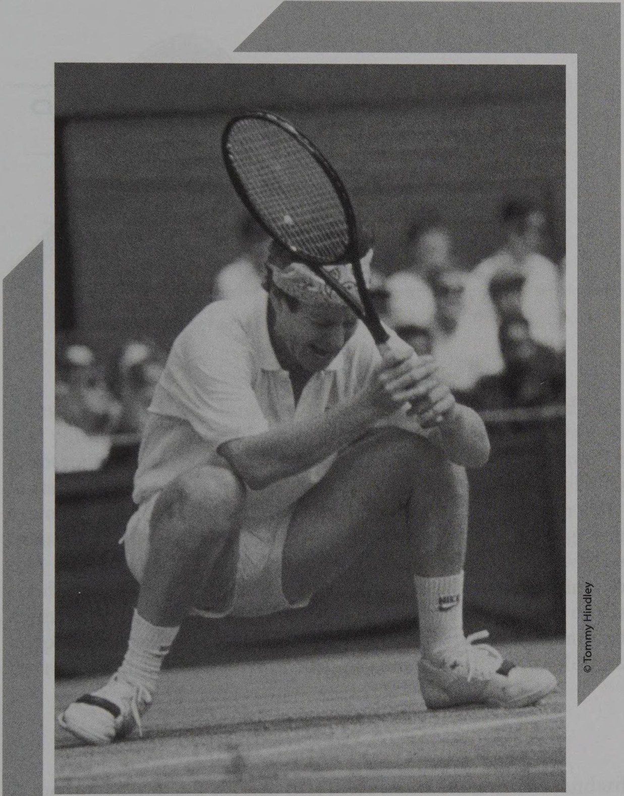
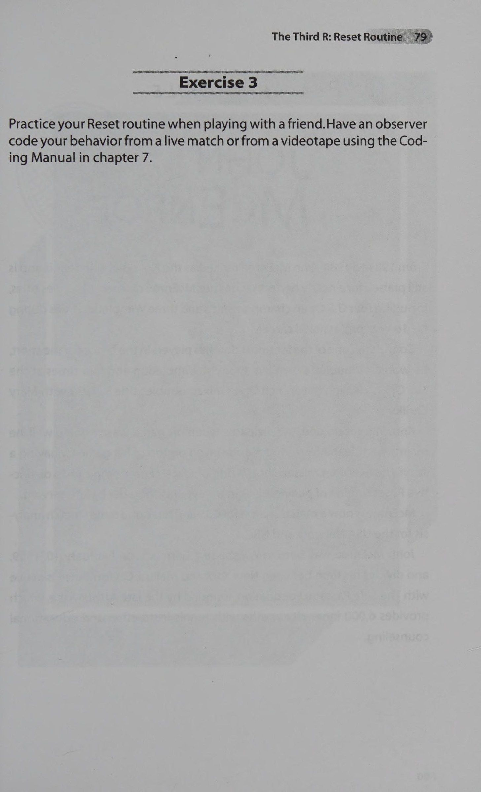
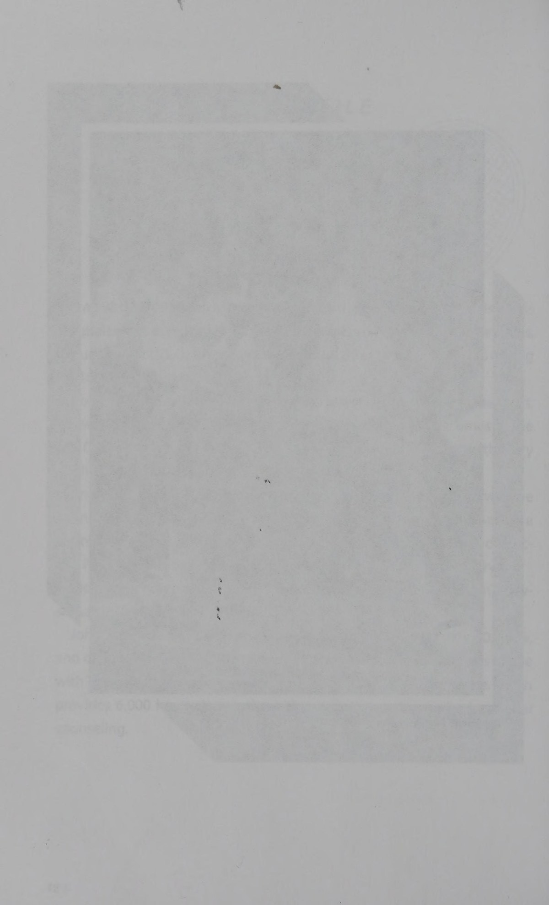
Thi Đấu Với Ba Chữ R
Giờ thì bạn đã biết hệ thống Ba chữ R vận hành như thế nào, và giờ bạn đã có bức tranh về những lần Xả, Xem xét, và quy trình Đặt lại của chính bạn có thể ra sao, chương này sẽ giúp bạn áp dụng Ba chữ R vào các tình huống tennis tiêu chuẩn. Sau đó chúng tôi sẽ chỉ cho bạn cách áp dụng hệ thống này vào các thảm họa tennis điển hình. Khi bạn đọc qua các giải pháp của chúng tôi cho những vấn đề như nổi cơn thịnh nộ, tắt nghẽn (choke), và buông xuôi (tanking), bạn có thể thấy một số giải pháp phù hợp với bạn hoặc với người nào đó bạn biết. Tin vui là bạn có thể dùng Ba chữ R giữa các điểm để đối phó với mọi tình huống trong số này. Một bảng ở cuối chương sẽ tóm tắt các điểm chính, cho thấy các triệu chứng và kết quả bạn có thể đạt được khi áp dụng Ba chữ R như một giải pháp.
Now that you know how the Three R’s system works, and now that you have a picture of what your own Releases, Reviews, and Reset routines can be, this chapter will help you apply the Three R’s to standard tennis situations. Then we will show how to apply the system to standard tennis disasters. As you read through our solutions to problems such as tantrums, choking, and tanking, you may find some that apply to you or to someone you know. The good news is that you can use the Three R’s between points to counter every one of these situations. A table at the end of the chapter summarizes the main points, showing the symptoms and the results you can get when you apply the Three R’s as a solution.
Ứng Dụng Trong Quần Vợt TENNIS APPLICATIONS
Một chút suy ngẫm sẽ cho thấy có ít nhất ba tình huống tiêu chuẩn mà bạn có thể áp dụng Ba chữ R trong tennis: Giữa các điểm, khi đổi bên sân, và giữa các trận đấu. Hãy cùng xem xét từng cái.
A moment’s thought reveals that there are at least three standard situations to which you can apply the Three R’s in tennis: Between points, at changeovers, and between matches. Let’s take a look at each.
Giữa các điểm Chúng ta đã nói về việc dùng Ba chữ R giữa các điểm suốt thời gian qua, vì vậy ở đây chúng tôi chỉ nhắc bạn rằng ý tưởng là hãy một phiên bản nào đó của Ba R trước mỗi điểm. Điều này có nghĩa là trong giai đoạn đầu của trận đấu, có thể là khi bạn đang chơi tốt, Ba R sẽ được tinh giản hơn, ngắn gọn hơn, và cảm giác như không cần phải nghiêm trọng hóa. Tuy nhiên, đừng bỏ qua thói quen này. Chúng tôi đã thấy những tuyển thủ tự rước lấy những cú sẩy chân tinh thần thảm họa khi bỏ qua Ba R, hoặc bằng cách cố áp dụng hệ thống này chỉ vào hai đến ba điểm quan trọng trong trận đấu. Cách này không hiệu quả. Bạn cần biến nó thành một phần trong trải nghiệm giữa hai điểm liên tục của mình.
Between Points We’ve been talking about using the Three R’s between points all along, so here we will simply remind you that the idea is to do some version of the Three R’s before every point. This means that in the early going of a match, perhaps when you are playing well, the Three R’s will be more streamlined, shorter, and feel like no big deal. Do not skip the routine, however. We have seen players invite disastrous mental lapses by skipping the Three R’s, or by trying to apply the system only on the two to three big points in the match. This does not work. You need to make it a part of your ongoing between-point experience.
Hãy thử điều gì đó như thế này. Nếu bạn đang chơi tốt, Buông bỏ (Release) có thể thầm lặng, tích cực, khẳng định. Chỉ cần tự nhủ: “Bạn đang chơi rất hay. Cứ giữ vững nhé.” Xem xét (Review) chỉ cần nhanh gọn như một câu “Chơi 1.” (Hoặc Chơi 2 hay Chơi 3, tất nhiên.) Nhưng thói quen Thiết lập lại (Reset) sẽ giống như trong các tình huống khó khăn: Nhìn sang
Try something like this. If you are playing well, the Release can be quiet, positive, affirmative. Just think to yourself: “You’re doing great. Keep it up.” The Review need be no more than a quick “Play 1.” (Or Play 2 or Play 3, of course.) But the Reset routine will be the same as in difficult situations: Look to the opposite
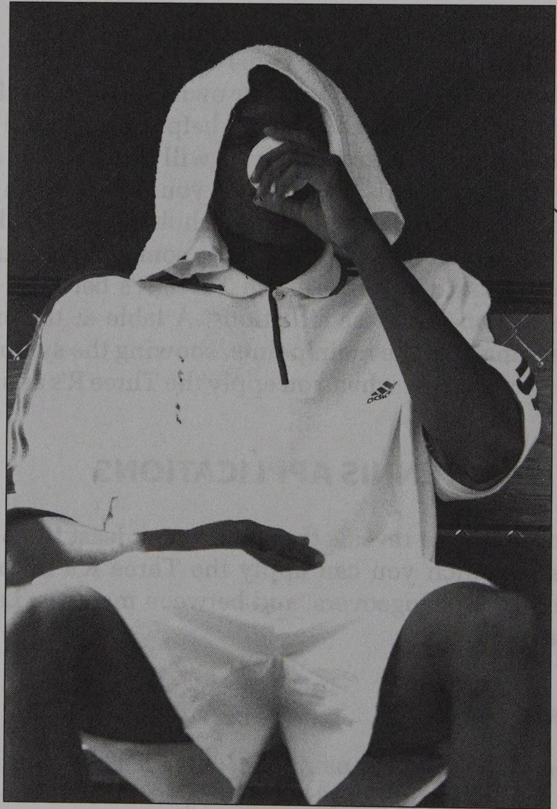
Thi đấu với Ba R sân, hít một hơi thật sâu để thư giãn rồi thở ra, hình thành một hình ảnh, nhồi bóng, rồi giao bóng. Việc này chỉ mất chút ít thời gian, và sự lặp lại liên tục chính là thứ tạo nên sức mạnh của nó.
Competing With the Three R’s court, take a deep breath to relax and let it out, form an image, bounce the ball, and serve. This takes very little time, and the constant repetition is what gives it its strength.
Khi mọi thứ diễn ra tồi tệ, bạn có thể cần nhiều thời gian hơn. Buông bỏ (Release) càng quan trọng và cần thiết với bạn vì nó cho bạn cơ hội buông bỏ những cảm xúc tiêu cực nặng nề theo một cách mang tính xây dựng. Trong các tình huống căng thẳng, chẳng hạn khi bạn đang ở game quyết định trong set cuối, sẽ rất quan trọng khi dùng Xem xét (Review) để đánh giá tình hình và chọn phương án chơi tốt nhất—dù vậy vẫn không cần suy nghĩ quá nhiều, nhưng cũng đừng đối xử tệ với chính mình, cũng vậy. Và thói quen Thiết lập lại (Reset) sẽ phát huy tác dụng. Tất cả sự lặp lại ấy trong lúc tập luyện và những lúc chơi tốt trên sân sẽ tích lũy thành thứ gì đó bạn có thể dùng để tập trung suy nghĩ, hình ảnh của mình và tập trung tinh thần ngay cả trong điều kiện căng thẳng hay mệt mỏi tột cùng.
When things are going badly, you may take more time. The Release is more critical and important to you because it gives you a chance to let go of tremendously negative feelings in a constructive way. In intense situations, such as when you are in a critical game in the final set, it will be important to use the Review to assess the situation and to pick the best play—still without going through a lot of thinking, but without shortchanging yourself, either. And the Reset routine will come into its own. All that repetition during practice and good times on the court will add up to something you can use to focus your thoughts and images and concentrate even under conditions of extreme stress or fatigue.
Những lần đổi sân Bạn có 90 giây trong mỗi lần đổi sân, và câu hỏi là nên làm gì với khoảng thời gian ấy. Chỉ đơn giản là đi sang một bên, ngồi xuống, lau mình, và uống nước là một phần quan trọng trong quy trình đổi sân của hầu hết tuyển thủ. Hãy để tâm trí, trái tim và cảm xúc của bạn trải qua Ba R khi bạn trải qua lần đổi sân. Buông bỏ những cảm xúc và suy nghĩ. Buông bỏ (Release) có thể là về lối chơi của bạn: Nhận thức rằng bạn đang chơi tốt hay chơi tệ. Hoặc dùng Buông bỏ (Release) như một lối thoát để nghỉ ngơi: Nhìn khán giả, nghĩ về ý nghĩa trận đấu này với bạn, hoặc bất cứ điều gì khác đang trong đầu bạn. Hãy Buông bỏ và cho phép những suy nghĩ, cảm xúc này tràn ra. Rồi kết thúc chúng bằng kỹ thuật STOP, và chuyển sang Xem xét: “Tôi cần làm gì tiếp theo?” Trong lúc đổi sân, bạn thậm chí có thể lướt qua sổ tay chiến thuật và Xem xét lại kế hoạch chơi của mình.
Changeovers You have 90 seconds at the changeover, and the question is what to do with it. Simply walking to the side, sitting down, toweling off, and drinking fluids is an important part of most players’ changeover procedures. Allow your mind, heart, and feelings to go through the Three R’s as you go through the changeover. Release feelings and thoughts. The Release might be about your play: Being aware that you are playing well or playing badly. Or use the Release as an outlet to take a break: Look at the crowd, think about what this match means to you, or anything else that may be on your mind. Release and allow these thoughts and feelings to come out. Then end them with the STOP technique, and move to Review: “What do I need to do next?” During a changeover, you can even pull out your play book and Review your game plan.
Sau đó tiếp tục với thói quen Thiết lập lại (Reset) lúc đổi sân, thứ bao gồm nhiều sự thư giãn hơn. Đặt khăn lạnh (hoặc nóng) vào gáy nếu bạn cực kỳ mệt mỏi. Nhắm mắt lại. Dùng hình ảnh hóa trong đầu về những gì bạn sắp làm. Rồi đứng dậy và di chuyển sang phía bên kia để bắt đầu chơi. Hãy lưu ý rằng nếu bạn đã làm kỹ hai trong số Ba R khi còn ngồi ghế, thì bạn hoàn toàn có thể chuyển sang thói quen Thiết lập lại (Reset) chủ động khi bước sang để bắt đầu cú giao bóng (bỏ qua Buông bỏ và Xem xét mà bạn thường làm trong lúc di chuyển giữa hai điểm).
Then continue into a changeover Reset routine that includes more relaxation. Put a cold (or hot) towel on the back of your neck if you are extremely fatigued. Close your eyes. Use mental imagery of what you will be doing next. Then get up and move to the other side to begin play. Notice that if you have done the first two of the Three R’s thoroughly enough while on the bench, then you may well move to the active Reset routine as you walk over to begin your serve (skipping the Release and Review that you normally would do while in transit between points).
Trước trận đấu : Khi bạn chuẩn bị cho một giải đấu lớn, tâm trí bạn có thể tràn ngập đủ loại suy nghĩ làm kiệt quệ và đáng sợ: “Nếu mình không chơi tốt như mình cần thì sao? Chuyện gì sẽ xảy ra với thứ hạng của mình?
Before Matches : As you get ready for a big tournament, your mind might be filled with all kinds of debilitating and frightening thoughts: “What if I don’t play as well as I need to? What will happen to my rankings?
Mình có nên xem bảng đấu không, hay việc đó sẽ khiến mình nghĩ quá xa?
Should I look at the draw, or will that make me think too far ahead?
Người này giỏi thật đấy.”
This person is really good.”
Vô số suy nghĩ hoặc trải nghiệm khác có thể ập đến khiến cuộc sống của bạn khó khăn hơn, gia tăng lo lắng, cản trở việc tập luyện, hoặc cản trở giấc ngủ khi bạn chuẩn bị cho trận đấu. Giải pháp có thể là áp dụng Ba R bất cứ khi nào bạn đối mặt với bất cứ sự xao nháng nào giữa các trận. Hãy xem bạn có thể làm điều này như thế nào.
A multitude of other thoughts or experiences may come your way to make your life difficult, increase anxiety, interfere with practice, or interfere with sleep as you prepare for a match. The solution can be to apply the Three R’s whenever you face any distraction between matches. Let’s have a look at how you might do this.
Bạn còn cách một giải đấu lớn, một giải có thể có tác động quan trọng đến thứ hạng của bạn, đúng một tuần. Ai đó đưa ra một
You are one week away from a major tournament that could have an important effect on your rankings. Someone makes a
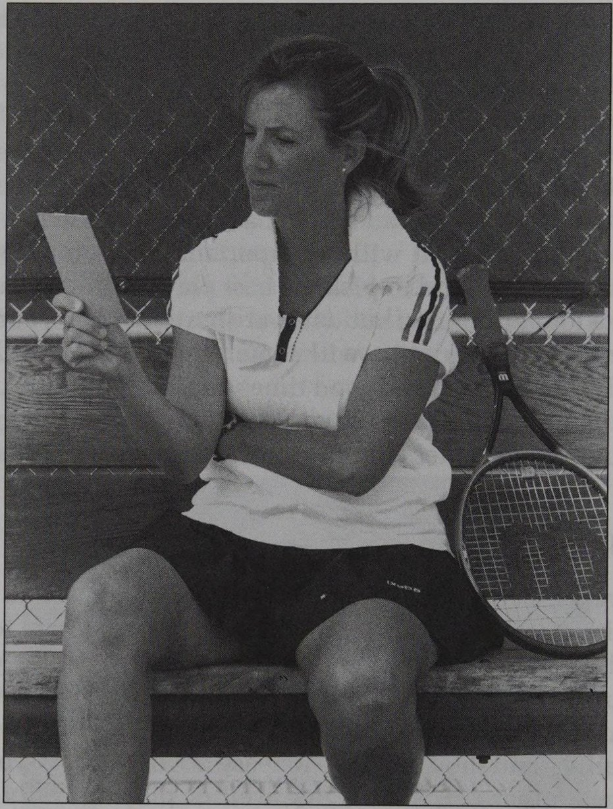
Thi đấu với Ba R 87) nhận xét về đối thủ bạn có thể gặp ở vòng đầu, và bạn bắt đầu căng thẳng lo lắng về tình huống này. Tâm trí bạn chạy đến những suy nghĩ về việc không muốn gặp một tuyển thủ cụ thể ở vòng đầu, và nỗi sợ rằng bạn sẽ gặp. Bạn tự trách mình vì sợ đối thủ này, dù trong thâm tâm bạn cảm thấy sợ, và điều đó khiến mọi thứ tệ hơn. Bạn có thể làm gì?
Competing With the Three R’s 87) comment about the opponent you might draw in the first round, and you begin to get uptight and nervous about the situation. Your mind races to thoughts about not wanting to draw a particular player in the first round, and a fear that you will. You chastise yourself for being afraid of this opponent, though in your heart of hearts you feel afraid, and that makes it worse. What can you do?
Hãy Buông bỏ (Release) những cảm xúc bằng cách thừa nhận rằng đây là điều bạn đang nghĩ. Hãy nhận ra những hình ảnh trong đầu bạn về bảng đấu và tên đối thủ, và nhận ra cảm giác trong bụng bạn khi bạn nghĩ đến việc thi đấu với người đó. Hãy để những cảm xúc xảy ra. Hãy Buông bỏ (Release) chúng vào ý thức của bạn. Rồi STOP chính mình và chuyển sang Xem xét (Review).
Release the feelings by acknowledging that this is what you are thinking. Notice the mental pictures you have of the draw sheet and the name of the opponent, and notice the feelings in your stomach as you think of playing that person. Allow the feelings to occur. Release them into your consciousness. Then STOP yourself and move to a Review.
Trong Xem xét (Review), hãy phản ánh một cách phê phán về những gì đang diễn ra. Hãy tự nhủ: “Nhìn mình xem, đang nghĩ về bảng đấu, và đối thủ của mình, và tự làm mình căng thẳng khi làm thế. Mình đang nghĩ nhiều về thứ hạng và đủ thứ khác hơn là về những gì cần có để chiến thắng. Để mình tự hỏi ngay lúc này điều gì cần có để thắng người này? Ừ, cũng là thứ cần có để thắng bất cứ ai khác. Mình phải theo dõi bóng, chơi bóng, thực hiện kế hoạch chơi của mình, và chơi từng điểm một. Đó là điều mình cần làm. Ngoài ra, mình sẽ phải đưa cú giao bóng một vào nhiều hơn khi đấu với người này so với người khác, vì đối thủ này thích trừng phạt giao bóng hai. Vậy nên, mình cần luyện giao bóng một trong tuần này, và ngoài ra, chỉ cần thuận theo kế hoạch chơi của mình. Mình sẽ tập trung vào điều đó cả tuần.”
During the Review, reflect critically on what is going on. Say to yourself, “Look at me thinking about the draw sheet, and my opponent, and making myself uptight by doing so. I’m thinking more about the rankings and all these other things than I am about what it takes to win. Let me ask myself right now what does it take to beat this person? Well, the same thing it takes to beat anybody else. I have to watch the ball, play the ball, execute my game plan, and play each point one at a time. That’s what I need to do. Also, I’m going to have to get more first serves in against this person than somebody else because this one likes to punish second serves. So, I need to work on first serves this week, and beyond that, simply follow my game plan. I will work on that all week.”
Rồi STOP Xem xét (Review). Xem xét là tốt và hữu ích, nhưng không phải khi bạn cứ loanh quanh mãi trên những ý giống nhau. Hãy nghĩ cho kỹ một lần, rồi bắt đầu thói quen Thiết lập lại (Reset). Hãy xây dựng một Thiết lập lại (Reset) chuyên biệt cho kiểu tình huống này—có thể là thư giãn cơ sâu và hình dung những gì bạn muốn làm trong trận đấu, hoặc có thể là đọc sách, xem phim, hoặc chỉ đơn giản là hít một hơi thật sâu và tiếp tục công việc đang làm. Nếu bạn đang ở lớp và sắp hoàn thành một bài tập đại số khi trận đấu sắp tới xen vào suy nghĩ của bạn, cả tennis lẫn điểm số của bạn đều sẽ được lợi nếu bạn có thể quay lại bài tập đại số mà không tốn nhiều năng lượng vô ích.
Then STOP the Review. Review is good and useful, but not when you go around and around over the same ideas. Think it through once, then start a Reset routine. Develop a specialized Reset for this sort of situation—perhaps deep muscle relaxation and visualization of what you want to do in the match, or perhaps reading, watching a movie, or simply taking a deep breath and going on with the business at hand. If you are in class and about to complete an algebra assignment when the upcoming match intrudes on your thoughts, both your tennis and your grade will benefit if you can get back to the algebra assignment without a lot of wasted energy.
Khi bạn đã vạch ra một hành động mang tính xây dựng, hãy thực hiện hành động ấy ngay lập tức nếu có thể. Nếu bạn sắp ra sân thi đấu, hãy làm những gì bạn đã nói mình sẽ làm. Hãy luyện giao bóng một, luyện việc theo dõi bóng, luyện chơi bóng bằng mọi giá mà không rơi vào những suy nghĩ xao nháng. Nếu bạn đang ở lớp hay ở nơi làm việc hoặc đang bận rộn khi bắt đầu nghĩ về trận đấu, hãy cam kết hoặc thậm chí viết một mảnh giấy nhắc mình rằng bạn sẽ tập giao bóng một và chơi bóng vào chiều nay, nhưng ngay lúc này bạn sẽ hoàn thành công việc khác ở trước mặt.
When you have mapped out a constructive action, take that action at once if you can. If you are getting ready to go out and play, carry out what you said you would do. Work on first serves, work on watching the ball, work on playing the ball at all costs without getting into distracting thoughts. If you are in class or at work or otherwise tied up when you start thinking about the match, make the commitment or even write a note to yourself that says you will work on first serves and playing the ball this afternoon, but right now you are going to complete the other work in front of you.
Cùng những kỹ thuật ấy sẽ hữu ích trong những lần trì hoãn khi giải đấu đã bắt đầu. Nếu trời mưa hoặc có điều gì khác khiến bạn không ra được sân, hãy làm bất cứ điều gì bạn thấy hữu ích để tự thư giãn, duy trì sự tập trung, và tiết kiệm năng lượng. Ăn, nghỉ ngơi, nghe nhạc, đọc sách, chơi bài, hoặc xem phim trong phòng mình.
The same techniques will come in handy during delays once the tournament gets started. If it’s raining or there’s something else keeping you off the court, do whatever you find useful to help yourself relax, maintain concentration, and save energy. Eat, rest, listen to music, read, play cards, or watch a movie in your room.
Khi trận đấu sắp tới xen vào suy nghĩ, hãy chạy nhanh qua Ba R rồi trở lại hoạt động giữ chỗ của bạn. Tránh sự căng thẳng leo thang của những lo lắng hay suy nghĩ tiêu cực vô tận.
When the upcoming match intrudes on your thoughts, run through the Three R’s briefly and return to your placeholding activity. Avoid the spiraling tension of endless worry or negative thinking.
Xử Lý Sự Cố TROUBLESHOOTING
Bạn có thể dùng Ba R như một kênh dẫn phù hợp cho mọi suy nghĩ, cảm xúc, hay thách thức có thể đến với bạn trong lúc chuẩn bị cho một trận đấu. Hệ thống Ba R là điều ngược lại với sự chối bỏ:
You can use the Three R’s as an appropriate channel for any thought, feeling, or challenge that may come your way in getting ready for a match. The Three R’s system is the opposite of denial:
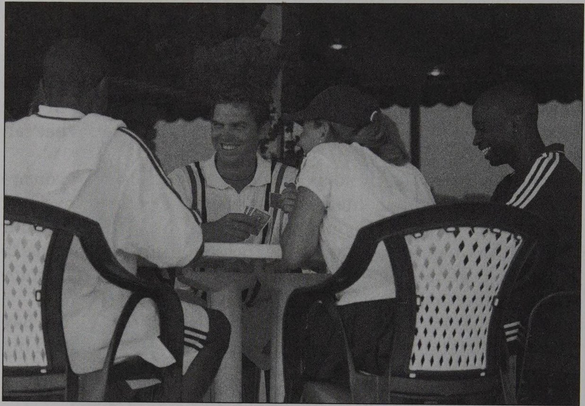
Thi đấu với Ba R Bạn không chặn đứng những gì đang diễn ra và ngăn mình học hỏi từ nó. Thay vào đó, bạn đối xử với sự xáo trộn và suy nghĩ hay cảm xúc đi kèm như một người bạn. Điều gì đó nổi lên trong ý thức bạn và khiến bạn nghĩ về trận đấu, dù việc đó gây cho bạn lo lắng. Bạn cho phép nó xảy ra (đây là Buông bỏ (Release)), và rồi bạn STOP nó. Rồi bạn chuyển sang Xem xét (Review) để phân tích tình huống và quyết định bạn có thể học được gì từ nó. Bạn cam kết ngay tại đây, ngay lúc này, sẽ làm một hoặc hai điều đúng đắn trong tuần này để chuẩn bị cho trận đấu. Đây chính xác là tự nhủ Chơi 1, Chơi 2, hoặc Chơi 3 khi dùng Ba R giữa hai điểm. Và rồi bạn STOP Xem xét (Review) và tiếp tục cuộc sống của mình.
Competing With the Three R’s You don’t block out what is happening and keep yourself from learning from it. Instead, you treat the disruption and the accompanying thought or feeling as a friend. Something floats into your consciousness and makes you think about the match, even though it causes you anxiety to do so. You allow it to happen (this is the Release), and then you STOP it. Then you move to a Review to analyze the situation and decide how you can learn from it. You make a commitment right here and right now to do one or two correct things this week to help get ready for the match. This is the very same as saying to yourself Play 1, Play 2, or Play 3 during the between-point use of the Three R’s. And then you STOP the Review and get on with your life.
Cơn thịnh nộ “Xin lỗi nhé, nhưng tình huống này bực bội đến mức tôi nghĩ mình sẽ phá tan mọi thứ trong tầm mắt.”
Tantrums “Excuse me, but this situation is so frustrating, I think I'll just destroy everything in sight.”
Ai cũng từng trải qua sự bức bối vào lúc này hay lúc khác.
Everyone experiences frustrations at one time or another.
Một chướng ngại nào đó chắn đường một mục tiêu. Thực ra, đó chính là bản chất của thi đấu: Cố gắng cản bước tiến của đối thủ trong khi đối thủ cũng đang làm điều tương tự với bạn. Còn khi bạn tự làm bực chính mình thì sao? Nếu lối chơi tồi của bạn hay những lỗi tự thưởng khiến bạn giận đến mức không kiểm soát được cảm xúc? Mọi tuyển thủ tennis đều từng thấy những ví dụ cùng cực về điều này. Những cơn giận bùng phát trút lên mọi thứ trong tầm mắt: trái bóng (trái bóng bạn đánh trong giận dữ có thể trúng khán giả); những vật vô tri (John McEnroe từng đá bay bình đựng nước khỏi giá, tung nước và đá lên khắp một bên sân); đối thủ của bạn (nếu bạn dễ nổi cơn thịnh nộ, thì bạn biết cảm giác rơi vào một cuộc tranh cãi, nếu không thì cũng là xô xát thể xác với đối thủ). Một tuyển thủ mà Robert biết từng nổi giận đến thế sau khi liên tục bị trọng tài biên và trọng tài chính gian lận ở một thị trấn nhỏ đến mức tuyển thủ ấy bước sang và lắc ghế trọng tài dữ dội đến mức vị trọng tài ngã khỏi ghế và gãy tay. Các quan chức giải đấu đã phải can thiệp, kết thúc trận đấu, và bảo tuyển thủ rời thị trấn trước khi có ai giết anh ta.
Some obstacle gets in the way of a goal. As a matter of fact, that is what competition is all about: Trying to block the progress of an opponent while the opponent is trying to do the same to you. How about when you frustrate yourself? What if your own poor play or unforced errors make you so mad that you cannot control your feelings? Every tennis player has seen extreme examples of this. Angry outbursts expressed at anything in sight: the ball (the ball you strike in anger could hit a spectator); inanimate objects (John McEnroe once kicked a water cooler off its stand, sending water and ice all over the side of the court); your opponent (if you are susceptible to tantrums, then you know what it feels like to get into a verbal if not a physical altercation with an opponent). A player Robert knows once got so mad after being cheated repeatedly by line judges and umpires in a small town that the player walked over and shook the umpire’s chair so violently that the umpire fell out of the chair and broke his arm. Tournament officials had to intervene, ending the match, and telling the player to leave town before somebody killed him.
Cơn thịnh nộ đơn giản là biểu hiện hành vi của những cảm xúc giận dữ sâu sắc. Ở cốt lõi, sự giận dữ phản ánh quan điểm rằng điều đang diễn ra ra ngay lúc này đơn giản là “không đúng, không công bằng, và tôi sẽ không chịu đựng nổi nữa!” Khi một tuyển thủ tennis nổi giận, người đó thường giận chính mình, dù cơn giận có thể được nhắm vào người ngoài—một trọng tài vì một quyết định đường bóng sai, một đối thủ vì gian lận, hoặc một nhiếp ảnh gia hay phóng viên vì gây mất tập trung trên khán đài.
Tantrums are simply behavioral expressions of deeply felt angry feelings. At its heart, anger reflects a view that what is happening right now is simply “not right, not just, and I’m not gonna take it anymore!” When a tennis player gets angry, the player is usually angry at himself or herself, although the anger may be directed at someone outside—a referee for a bad line call, an opponent for cheating, or a photographer or a reporter for causing a distraction in the stands.
Tin tốt và tin xấu Dù đa số mọi người không nhận ra, phần tốt đẹp của sự giận dữ là nó cho thấy bạn quan tâm đến những gì đang xảy ra với bạn. Nếu bạn không đặt ra những tiêu chuẩn cao cho mình, và nếu bạn không có ý thức về công bằng trong luật chơi, bạn sẽ không quan tâm nếu bạn chơi tệ; bạn sẽ không quan tâm nếu đối thủ gian lận; bạn sẽ không quan tâm nếu ai đó cản trở thi đấu. Vậy nên ở cốt lõi, đây là dấu hiệu tích cực rằng bạn đang chú ý đủ gần
Good News and Bad News While most people do not recognize it, the good part about anger is that it shows that you care about what is happening to you. If you did not set high standards for yourself, and if you did not have a sense of justice about the rules of the game, you would not care if you played badly; you would not care if your opponent cheated; you would not care if someone interfered with play. So at its heart, it is a positive sign that you are paying close enough
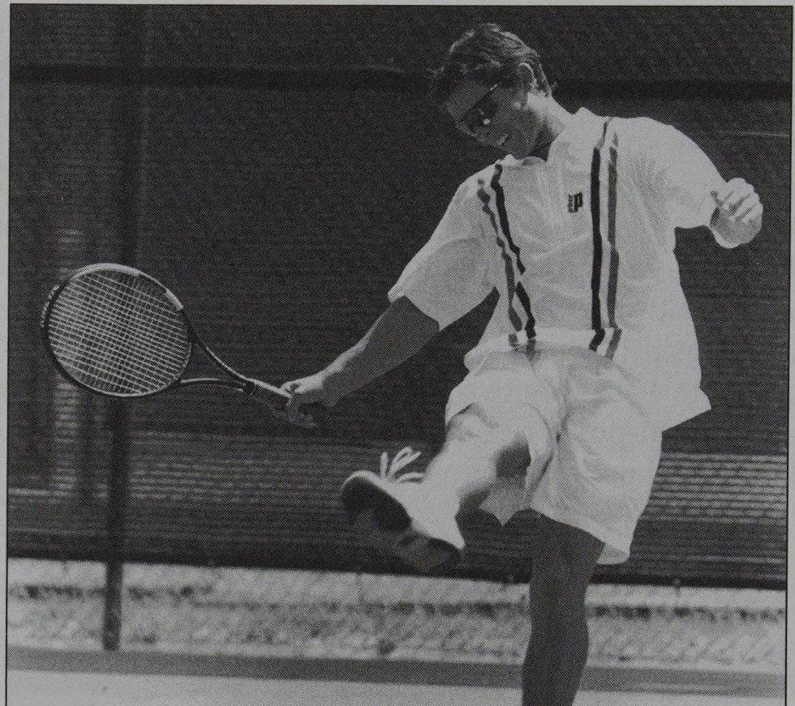
Thi đấu với Ba R 91? đến bản thân, đối thủ, và toàn bộ tình huống để nhận ra các vi phạm, và để nhận ra rằng bạn không chơi đạt chuẩn mực xuất sắc của chính mình.
Competing With the Three R’s 91? attention to yourself, your opponent, and the entire situation to notice violations, and to notice that you are not playing up to your own standard of excellence.
Mặt tiêu cực, tất nhiên, là bạn có thể giận đến mức cảm xúc leo khỏi tầm kiểm soát. Cơn giận chiếm lấy bạn và xóa sổ hoàn toàn mọi cơ hội chơi tốt. Sự giận dữ biến thành cơn thịnh nộ phá hoại khi bạn ngược đãi dụng cụ và con người đến mức bị xử phạt vi phạm quy tắc (hoặc bị loại hoàn toàn), hoặc khi bạn đánh mất định hướng về điều bạn đang cố làm trong điểm đấu và cảm xúc của bạn can thiệp vào các cú đánh. Mọi tuyển thủ tennis đều biết có một ranh giới mong manh giữa cơn giận thúc đẩy và tiếp thêm sinh lực—cơn giận nằm trong tầm kiểm soát—và cơn giận vượt qua giới hạn.
The negative, of course, is that you can get so angry that the emotion gets out of control. Your anger takes over and totally obliterates any chance of playing well. Anger turns to a destructive tantrum when you abuse equipment and people so badly that you receive a code violation (or are disqualified altogether), or when you lose track of what you are trying to do during the point and your feelings interfere with your shots. Every tennis player knows that there is a fine line between anger that motivates and energizes—anger that is under control—and anger that goes over the line.
Kiểm tra Ba R Bạn đã thực sự xác định được một Buông bỏ (Release) tốt sẽ là gì đối với bạn chưa? Trong hoàn cảnh tốt nhất có thể, bạn muốn để cảm xúc của mình tuôn ra thế nào? Nếu
Three R’s Check Have you truly defined what a good Release will be for you? In the best of all worlds, how do you want to let your feelings out? If
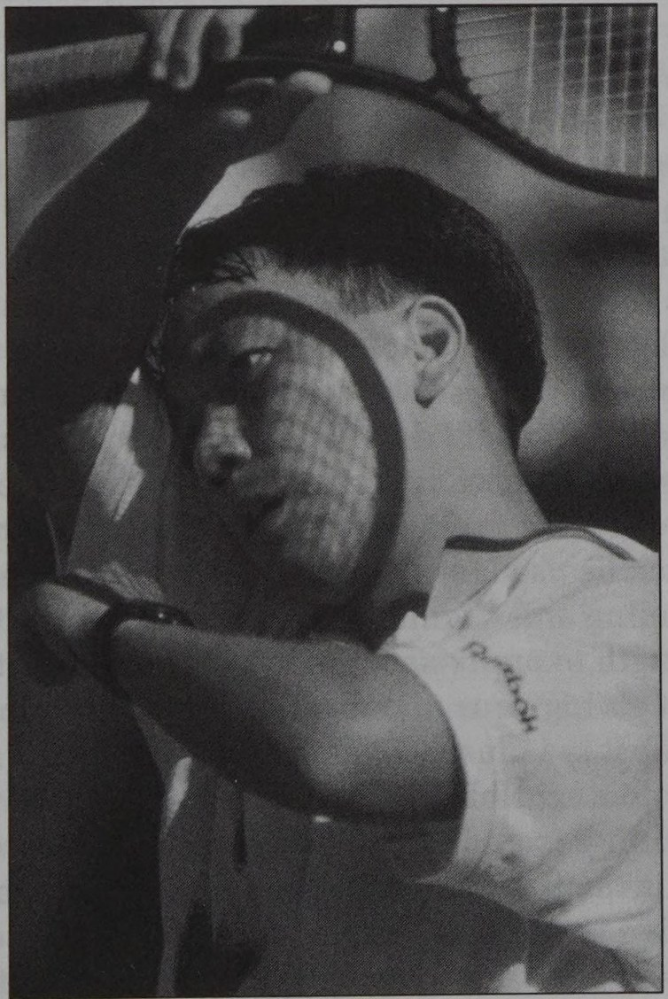
bạn đã không chú ý đầy đủ đến điều này, thì bạn có khả năng cao rơi lại vào những khuôn mẫu cũ: chửi thề, ngược đãi vợt, và những thứ tương tự.
you have not given this enough attention, then you will be likely to fall into old patterns of swearing, abusing rackets, and the like.
Một khi bạn đã luyện được một Buông bỏ (Release) vững chắc, hãy nhớ rằng ngay cả khi bạn có mất bình tĩnh và rơi vào hành vi xấu, bạn vẫn có thể dùng kỹ thuật STOP bất cứ lúc nào bạn muốn. Sau khi làm điều đó, điều tối quan trọng là bạn thực hiện một dạng hành vi Xem xét (Review) tiêu chuẩn (chẳng hạn, chuyển vợt sang tay không thi đấu) để nhắc mình bước vào pha tiếp theo. Sau Xem xét (Review), hãy dùng thói quen Thiết lập lại (Reset) như một cách đưa mình vào trạng thái thư giãn cho điểm tiếp theo.
Once you have practiced a solid Release, remember that even if you should lose it and fall into bad behavior, you can use the STOP technique any time you want. After you do that, it is critical that you engage in some sort of standard Review behavior (for example, switching your racket to your nonplaying hand) to cue yourself into the next phase. After the Review, use the Reset routine as a way to put yourself into a relaxed state for the next point.
Run cứng (Choking) “Mình đang căng thẳng quá đi thôi, tin không, mình sẽ siết chặt mọi cơ để đánh hỏng cú này hoàn toàn luôn. Và mình nghĩ mình cũng sẽ bỏ rơi kế hoạch chơi của mình, cố bảo vệ lợi thế, rồi cuối cùng, mình đoán là, mình sẽ thua.”
Choking “I’m so nervous right now, I believe I’ll just tighten all my muscles so I can’t hit this shot well at all. Also, I think I’ll desert my game plan, try to protect my lead, and, eventually, I guess, I’ll lose.”
Không ai nói đúng theo cách này, nhưng đó chính là thứ mà một cú run cứng (choke) là: sự căng thẳng đến mức làm kiệt quệ. Choking bắt đầu bằng việc nghĩ về mọi thứ khác ngoài việc đánh trúng bóng và thực hiện kế hoạch chơi. Một tuyển thủ sẽ nghĩ về tầm quan trọng của trận đấu này đối với thứ hạng hoặc ai có thể đang xem, hoặc đắm mình trong những độc thoại nội tâm như thế này: “Mình đang dẫn 5—1, mà bây giờ tỷ số là 5—5. Mình không tin nổi mình lại để vuột mất!”
No one says it just this way, but that is what a choke is: nervousness that becomes debilitating. Choking begins with thinking about everything other than hitting the ball and executing the game plan. A player will think about how important this match is in terms of rankings or who might be watching, or indulge in internal monologues like this: “I was up 5—1, and now the score is 5—5. I can’t believe I let it go!”
Ở cốt lõi của việc run cứng là sự căng thẳng hay lo âu—những từ của các nhà tâm lý học chỉ nỗi sợ về hậu quả. “Mình sợ rằng mình có thể thua trận này. Mình lo rằng mình sẽ không
At the heart of choking is nervousness or anxiety—psychologists’ words for fear about consequences. “I’m afraid I might lose this match. I get worried that I will not be able to break serve.
Mình đang lo lắng về cú giao bóng một của mình; nó sẽ bỏ rơi mình thôi. Huấn luyện viên sẽ nghĩ xấu về mình nếu mình không thắng được người này (mà mình lẽ ra phải thắng, dựa trên thành tích trong quá khứ).” Giống như cảm giác giận dữ nằm dưới một cơn thịnh nộ, cảm giác lo âu nằm dưới một cú run cứng là thứ có thể dùng cho lợi thế của bạn nếu bạn có thể hiểu được cảm giác ấy và dẫn nó theo hướng xây dựng.
I am anxious about my first'serve; it’s going to desert me. My coach will think badly of me ifI do not beat this person (whom I should beat, based on past performance).” As with the feeling of anger that underlies a tantrum, the feeling of anxiety underlying a choke is one that can be used to your advantage if you are able to understand the feeling and channel it in a constructive direction.
Đó là một sức mạnh khi bạn hiểu được tầm quan trọng của việc đưa cú giao bóng một vào (không cho đối thủ cơ hội dứt điểm vào một cú giao bóng hai yếu ớt). Muốn thắng một trận và nâng cao thứ hạng là một điểm cộng, hoặc muốn tránh để vuột lợi thế dẫn 5—1. Việc bạn quan tâm đến những điều như vậy là dấu hiệu cho thấy bạn đã nhận thức được tình huống, đó là yêu cầu đầu tiên để làm được điều gì đó về nó.
It is a strength to appreciate the importance of getting your first serve in (not giving your opponent a chance to unload on a weak second serve). It is a plus to want to win a match and improve your rankings, or to avoid blowing a 5—1 lead. The fact that you care about such things is an indication that you are aware of the situation, which is the first requirement for doing something about it.
Mặt tiêu cực là bạn có thể lo âu đến mức cảm giác ấy chạy khỏi tầm kiểm soát và chiếm lấy tình huống. Khi điều này xảy ra,
The negative is that you can get so anxious that the feeling runs away with you and takes over the situation. When this happens,
Thi đấu với Ba R 93? bạn trở nên căng thẳng, lo âu đến mức các cơ bạn siết chặt và bạn không thể thực hiện được các cú đánh. Hầu hết tuyển thủ tennis đều từng gặp chuyện này lúc này hay lúc khác. Thuật ngữ tennis tiêu chuẩn cho tình huống này là bạn bắt đầu “đẩy” (push), hầu như chỉ đỡ bóng trả lại thay vì thực hiện các cú đánh với những pha vung vợt uyển chuyển mang theo năng lượng, sức mạnh, và định hướng. Cũng như từ choke gợi lên hình ảnh không khí bị chặn khỏi đường thở của bạn, choke cũng chỉ sự siết chặt của cơ bắp, thu hẹp dòng máu chảy, và sự bất lực trong việc đánh bóng đúng cách.
Competing With the Three R’s 93? you become so nervous, so anxious, that your muscles tighten up and you are unable to execute shots. Most tennis players have had this happen at one time or another. The standard tennis term for this situation is that you start to “push,” barely blocking the ball back instead of executing the shots with fluid strokes that have energy, power, and direction. Just as the word choke conjures up an image of air being closed off from your windpipe, choke also indicates a tightening of muscles, constricting of blood flow, and an inability to hit the ball properly.
Kiểm tra Ba R Bạn có thể làm gì để dùng nhận thức và mối quan tâm đang dâng cao này một cách xây dựng, và để lo âu không biến thành run cứng? Phản ứng của Ba R với một cú run cứng bao gồm một Buông bỏ (Release) sự căng thẳng (có thể với chút hài hước), một Xem xét (Review) nguyên nhân (chẳng hạn, “Đây rồi, mình lại nghĩ trận này lớn lao với mình thế nào, thay vì thực hiện các cú đánh của mình”), và một thói quen Thiết lập lại (Reset) thư giãn (hơi thở rất sâu, thở ra từ từ, rồi hình ảnh và nhịp nhồi bóng của mình). Việc dùng Ba R này giúp bạn hiểu điều đang diễn ra, có thể thể hiện cảm xúc với chút hài hước, và rồi để chúng lại phía sau bằng cách quay lại việc đang làm với một sự tập trung mới và tốt hơn vào việc theo dõi bóng hoặc thực hiện kế hoạch chơi.
Three R’s Check What can you do to use this heightened awareness and concern constructively, and keep anxiety from turning into choking? The Three R’s response to a choke involves a Release of tension (perhaps with humor), a Review of the causes (for example, “Here I go thinking about how huge this match is to me, instead of executing my shots”), and a relaxing Reset routine (very deep breath, let out slowly, and then my image and ball bounce). This use of the Three R’s lets you understand what is happening, perhaps express the feelings with humor, and then leave them behind by getting back to the matter at hand with a new and improved focus on watching the ball or executing the game plan.
Bỏ cuộc (Tanking) “Tôi đã chịu đủ chuyện này rồi, cảm ơn. Nếu tôi không chơi hay hơn thế được nữa thì tôi bỏ.”
Tanking “l’ve had enough of this, thank you. If I can’t play any better than this, then I quit.”
Tanking là thao tác kiểm soát tột cùng. Logic của nó có vẻ như thế này: “Được thôi, tôi đang chơi tệ còn bạn đang chơi khá hay; bạn sắp thắng tôi rồi. Nhưng tôi sẽ không để bạn thắng tôi. Tôi sẽ không cho bạn loại quyền kiểm soát ấy đối với cuộc đời tôi. Làm sao tôi làm được điều đó? Đơn giản, tôi sẽ ngừng chơi. Ồ, tôi vẫn sẽ làm cho có, nhưng tôi sẽ cho bạn và tất cả mọi người thấy rằng tôi không thực sự cố gắng. Tôi cảm thấy tồi tệ về những gì đã xảy ra và đang xảy đến mức tôi sẽ không chịu đựng nổi.
Tanking is the ultimate contro] maneuver. The logic seems to go something like this: “Sure, I’m playing badly and you're playing pretty well; you’re about to beat me. But I won’t let you beat me. I will not give you that kind of control over my life. How will I accomplish this? Simple, I will quit playing. Oh, I will go through the motions, but I will show you and everybody else that I’m not really trying. I feel so bad about what has happened and is now happening that I will not tolerate it.
Tôi thà để bạn thấy tôi như một tuyển thủ chán nản và nản lòng, kẻ đã bỏ cuộc và để bạn lấy điểm, còn hơn là để bạn thắng tôi. Cái tôi và trái tim tôi, nói thật ra thì, sẽ không chịu nổi việc bạn thắng tôi, vậy nên, tôi sẽ không để bạn làm thế. Tôi bỏ.”
I would rather have you see me as a depressed and discouraged player, one who gave up and let you take it, than allow you to beat me. My ego and heart, to be quite honest about it, won’t stand for you beating me, so, I will not let you do it. I quit.”
Nếu bạn nghĩ về thi đấu như một chuyện chiến đấu và cố gắng kiểm soát kết quả, thì tâm lý của việc bỏ cuộc là điều dễ hiểu. Tuy nhiên, đó là một nước đi tuyệt vọng, một nước đi trong đó tuyển thủ tự hạ thấp mình trong nỗ lực giữ lại chút gì đó của lòng tự trọng. Để làm phức tạp thêm vấn đề, việc bỏ cuộc đôi khi có thể lật ngược trận đấu (do đó củng cố hành vi bỏ cuộc). Đối thủ của bạn, thấy rằng bạn đã bỏ cuộc, sẽ lơi lỏng. Bạn đánh thả sức (dù sao thì giờ cũng chẳng có gì để mất) và bắt đầu thắng vài điểm, hoặc một hay hai game. Một hay hai trải nghiệm như thế và chiến thuật này có thể được củng cố đủ để nó vô thức trở thành một phần trong cách bạn đối mặt với các tình huống khó khăn.
If you think about competition as a matter of fighting and attempting to control the outcome, then the psychology of the tank is understandable. It is a desperate move, however, one in which the player demeans himself or herself in an attempt to retain some semblance of self-esteem. To further complicate the matter, a tank can sometimes turn a match around (thereby reinforcing the tank behavior). Your opponent, seeing that you have quit, lets down. You hit freely (after all, there’s nothing to lose now) and start to win some points, or a game or two. An experience or two like this and the strategy may be reinforced enough that it unconsciously becomes a part of your approach to difficult situations.
Cũng như cơn giận và lo âu, việc bỏ cuộc cho thấy sự nản lòng về tình huống, một dạng trầm cảm trên sân. Nếu buông xuôi trở thành một phần trong phản ứng tiêu chuẩn của bạn, thì nó sẽ làm hại bạn nhiều hơn là giúp bạn trong suốt sự nghiệp tennis của bạn.
As with anger and anxiety, tanking indicates discouragement about the situation, a form of on-court depression. If giving up becomes a part of your standard response, then it will hurt you more than it will help you over the course of your tennis career.
Tennis là một trong số ít môn thể thao mà đồng hồ không chạy hết.
Tennis is one of the few sports where the clock does not run out.
Luôn luôn có cơ hội để lật lại. Chúng tôi còn nhớ chiến thắng lội ngược dòng của Jimmy Connors trước Michael Pernfors ở Wimbledon.
There is always a chance to come back. We remember Jimmy Connors’ comeback victory over Michael Pernfors at Wimbledon.
Sau khi thua hai set đầu, Connors bị dẫn 1-4 ở set thứ ba.
Having lost the first two sets, Connors was down 1-4 in the third.
Khiến tất cả ngạc nhiên, Jimmy đã bám trụ để thắng set thứ tư, và rồi cuối cùng giành trận sau năm set. Bằng cách nào anh ấy làm được? Bằng cách loại bỏ tỷ số khỏi đầu, và chơi trái bóng, từng điểm một.
To the amazement of all, Jimmy hung in there to win the'third set, and the fourth, and eventually to take the match in five sets. How did he do it? By blocking out the score, and playing the ball, one point at a time.
Kiểm tra Ba R Làm sao bạn có thể chuyển những cảm xúc nản lòng tiêu cực theo hướng xây dựng? Hãy dùng Ba R để điều chỉnh kế hoạch chơi của bạn, và để đưa mình vượt qua tình huống. Hãy nhớ rằng chẳng cần mấy để bắt đầu buộc đối thủ mắc lỗi, và làm thế sẽ chuyển những cảm xúc tiêu cực sang phía bên kia của sân.
Three R’s Check How can you turn negative feelings of discouragement in a constructive direction? Use the Three R’s to make an adjustment in your game plan, and to ride the situation through. Remember that it does not take much to begin forcing errors in your opponent, and doing so transfers the negative feelings to the other side of the court.
Hãy để pha Xem xét (Review) lật ngược tình thế bằng cách tự đưa ra những chỉ dẫn rõ ràng để tập trung vào trái bóng, hoặc làm điều gì khác rất cụ thể. Hãy tập trung thực hiện các cú đánh của bạn (có lẽ “thực hiện” có thể là từ mật mã trong Xem xét (Review)), hoặc tập trung gọi Chơi 1 hoặc Chơi 2. Một trong những phần tệ hại nhất của việc bỏ cuộc xảy ra khi tâm trí lang thang, nhưng bạn có thể đối phó bằng cách tập trung cụ thể vào điều bạn sắp làm, gợi lại kế hoạch chơi đã định trước của bạn trong pha Xem xét (Review).
Allow the Review phase to turn things around by giving yourself clear instructions to focus on the ball, or do something else very concrete. Focus on executing your shots (perhaps “execute” could be a code word during Review), or focus on calling Play 1 or Play 2. One of the most disastrous parts of the tank occurs when the mind wanders, but you can counter this by focusing concretely on what you are going to do, calling to mind your predetermined game plan during the Review phase.
Thi đấu với Ba R 95) Mất tập trung “Tôi nghĩ mình cứ việc để ý đến bất cứ thứ gì mình thích—gã kỳ dị kia trên khán đài, chuyện gì đang xảy ra ở sân bên cạnh, buổi hẹn tối nay của mình.
Competing With the Three R’s 95) Distracted “T think I’ll just tune in on anything I please—that weird guy in the stands, what’s happening on the next court, my date tonight.
Dù sao thì mình cũng đặc biệt: mình không thực sự cần phải nhìn bóng hay thực hiện kế hoạch chơi của mình. Mình có thể làm nhiều việc cùng lúc.”
After all, I’m special: I don’t really have to watch the ball or execute my game plan. I can do several things at once.”
Ở dạng tích cực nhất, sự mất tập trung có nghĩa là bạn là một con người toàn diện. Rốt cuộc, bạn đâu sinh ra chỉ để đánh trái bóng tennis và thực hiện một kế hoạch chơi. Bạn có một cuộc sống! Bạn quan tâm đến các mối quan hệ, chiếc xe, số dư ngân hàng, những người bạn của bạn, những người trên khán đài, và các phóng viên báo chí và truyền hình.
In its most positive form, distraction means that you are a wellrounded human being. After all, you were not born simply to hit a tennis ball and execute a game plan. You have a life! You care about your relationships, your car, your bank balance, your friends, the people in the stands, and the newspaper and TV reporters.
Không mối quan tâm nào trong số này là xấu. Vấn đề nảy sinh khi bạn nghĩ về chúng giữa một điểm đấu, hoặc khi bạn đang chuẩn bị giao bóng để thắng một loạt tiebreak.
None of these concerns is bad. The problem arises when you think about them in the middle of a point, or as you are getting ready to serve to win a tiebreaker.
Mọi tuyển thủ tennis đều từng gặp những sự xao nháng. Một số đến từ bên trong, như khi bạn để tâm trí mình trôi đi, tưởng chừng là một hành động cố ý.
Every tennis player has run into distractions. Some come from inside, as when you let your mind drift, seemingly a willful act.
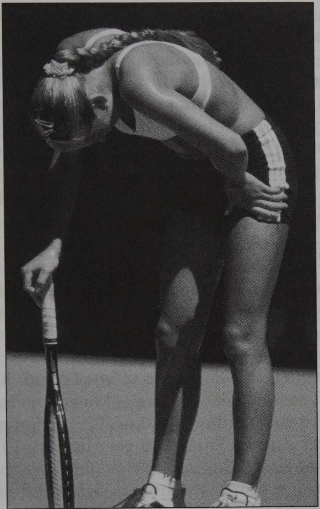
Những cái khác đến từ bên ngoài, như một tiếng ồn lớn, một máy bay bay ngang đầu, một trái bóng lăn vào sân bạn. Một đối thủ làm những trò hề gây cười từ đường biên, hoặc một trọng tài biên đưa ra quyết định sai chống lại bạn.
Others come from the outside, such as a loud noise, an airplane flying overhead, a ball that rolls onto your court. An opponent goes through antics that generate laughter from the sidelines, or a line judge makes a bad call against you.
Cũng như mọi cảm xúc khác, ở cốt lõi của sự dễ mất tập trung là thực tế rằng bạn là một con người. Con người vốn chú ý đến những gì đang diễn ra xung quanh họ. Nó chỉ trở thành vấn đề khi bạn chú ý quá mức. Sẽ chẳng giúp gì khi bạn nghĩ về quyết định đường bóng sai hay những máy bay trên đầu trong lúc bạn tung bóng cho cú giao bóng hai ở một điểm then chốt trong loạt tiebreak.
As with all the other emotions, at the heart of distractibility is the fact that you are a human being. People do pay attention to what is happening around them. It becomes a problem only when you pay too much attention. It will not help to be thinking about the bad line call or the planes overhead as you make the toss on your second serve at a crucial point in a tiebreaker.
Kiểm tra Ba R Làm sao bạn có thể ngăn những sự xao nháng cản trở khả năng thi đấu của chính bạn? Làm sao bạn có thể chuyển từ một sự xao nháng sang một sự tập trung tinh thần vào việc nhìn bóng, thực hiện các cú đánh, và hoàn thành kế hoạch chơi?
Three R’s Check How can you keep distractions from interfering with your own ability to perform? How can you move from a distraction to a mental focus on watching the ball, executing shots, and completing the game plan?
Hãy thử phóng đại sự lang thang của tâm trí bạn trong pha Buông bỏ (Release). (“Mình chẳng giao bóng nổi chút nào, mà hôm nay lại còn phải đem xe đi rửa nữa!”) Hãy để nó ra đi, rồi dùng kỹ thuật STOP để kết thúc sự xao nháng và dùng Xem xét (Review) để đưa đầu mình trở lại vào trận đấu (“Thôi nào! Chơi đi! Vào cuộc đi!”). Hãy nhớ luôn cả phiên bản tăng tốc của thói quen Thiết lập lại (Reset), thứ bạn có thể cần để đưa mình trở lại trận đấu khi bạn bị mất tập trung.
Try exaggerating the wandering of your mind during the Release. (“I can’t serve at all, and I’ve got to get my car washed today too!”) Let it go, and then use the STOP technique to end the distraction and use the Review to get your head back into the game (“Come on! Play! Get in!”). Remember, too, the rev-up version of the Reset routine, which you might need to get yourself back into the game when you are distracted.
Không có động lực hôm nay “Này, tennis là một trò chơi tuyệt vời, và tôi đã cam kết với thi đấu cạnh tranh. Nhưng hôm nay tôi chẳng thèm quan tâm đến điều nào trong số đó.”
No Motivation Today “You know, tennis is a wonderful game, and I’m committed to competitive play. But I just don’t care about any of it today.”
Không ai có thể giữ sự tập trung hoàn toàn vào công việc trước mắt vô thời hạn.
No one can stay totally focused on the task at hand indefinitely.
Một số tuyển thủ rất khó tự thúc đẩy mình tập luyện, rồi lại chơi khá tốt trong các trận đấu. Những người khác không thể bước vào trạng thái “sẵn sàng” khi họ cảm thấy mình thực sự lẽ ra phải thế. Cảm xúc của bạn đang nói với bạn điều gì khi bạn không thể tự thúc đẩy mình thi đấu? Có lẽ các ưu tiên của bạn đã lệch. Bạn có thể đã đầu tư quá nhiều thời gian, công sức, và tiền bạc vào môn thể thao của mình, đến mức loại trừ các sở thích khác và ưu tiên khác, và lối chơi thiếu động lực của bạn là cách cơ thể bạn truyền đạt thông điệp đến tâm trí bạn. Hoặc có lẽ bạn đã kiệt sức, quá tải, hoặc mệt mỏi về tinh thần. Hoặc có lẽ thật ra chỉ là vào ngày này cụ thể và thời điểm này cụ thể bạn không
Some players have a tough time motivating themselves to practice, then do quite well during matches. Others cannot get “up” when they feel they really ought to. What are your feelings telling you when you cannot get motivated to perform? It might be that your priorities are off. You might have invested too much time, effort, and money in your sport, to the exclusion of other interests and priorities, and your unmotivated play is your body’s way of getting the message through to your mind. Or perhaps you are burned out, overextended, or mentally exhausted. Or maybe it really is just that on this particular day and at this particular moment you can-
Thi đấu với Ba R đưa đầu óc mình vào trận đấu. Đôi khi bạn xoay sở được với động lực thấp, và những lúc khác bạn phải trả giá. Còn việc thua một người mà bạn lẽ ra phải thắng thì sao? Bạn bước khỏi sân với nhận thức rằng tuyển thủ kia muốn thắng hơn bạn.
Competing With the Three R’s not get your head into the match. Sometimes you get by with low motivation, and other times you pay a price. How about losing to someone that you should beat? You walk off the court with the knowledge that the other player wanted it more than you did.
Kiểm tra Ba R Hãy dùng Ba R để tự thúc đẩy mình khi đang trên sân—và cả trong tập luyện. Trong pha Buông bỏ (Release), hãy cho phép những suy nghĩ và lời nói rằng bạn “không có động lực” tràn ra, được Buông bỏ (Release) vào ý thức của bạn. Có lẽ hãy tự trách mình hoặc tự chế giễu mình một chút, nhưng đừng tiêu cực đến mức tự lôi mình xuống thấp hơn nữa. Hãy nói, “Thôi được, có lẽ mình không có động lực chơi—nhưng mình đang ở trên sân. Mình có thực sự muốn thua người này không?” Rồi hãy dùng từ STOP, và khởi động những khẳng định tích cực “khích lệ tinh thần” trong Xem xét (Review), tiếp theo là một thói quen Thiết lập lại (Reset) tăng tốc vững chắc. Tăng tốc có thể là người bạn tốt nhất của bạn khi bạn cảm thấy uể oải và thiếu động lực.
Three R’s Check Use the Three R’s to motivate yourself while on the court—and in practice. During your Release, allow the thoughts and words that you are “not motivated” to come out, to be Released into your consciousness. Perhaps chastise yourself or make fun of yourself a bit, but do not become so negative that you drag yourself down even further. Say, “Okay, maybe I’m not motivated to play—but I’m on the court. Do I really want to lose to this person?” Then use the STOP word, and kick in your “pump-up” positive statements during the Review, followed by a solid rev-up Reset routine. Revving up can be your best friend when you are feeling lethargic and unmotivated.
Phong độ không ổn định “Khi thì mình chơi hay, khi thì mình chơi dở. Mình không bao giờ đoán trước được lúc nào thế nào!”
Uneven Performance “Sometimes I’m good, and sometimes I’m bad. I can never predict what it will be!”
Hãy bắt đầu với phần tích cực của phong độ không ổn định: Ít nhất thì bạn cũng có lúc chơi hay! Như mọi vận động viên, mục tiêu của bạn giờ là tăng số lần bạn chơi tốt, và giảm số lần bạn chơi tệ. Vấn đề của bạn có lẽ là bạn mắc quá nhiều lỗi tự thưởng, thua điểm và cả game, không phải vì đối thủ làm được điều gì xuất sắc, mà vì bạn đã đánh quá mạnh hoặc mất tập trung. Ở cốt lõi của vấn đề là sự bất lực trong việc sửa lỗi ngay lập tức và giữ chúng không biến thành một vòng xoáy đi xuống.
Let’s start with the positive part of uneven performance: At least you are good some of the time! As with any athlete, your goal now is to increase the number of times you do well, and decrease the number of times you do poorly. Your problem may be that you make too many unforced errors, losing points and even games, not because your opponent has done anything great, but because you have overhit or lost concentration. At the heart of the problem is an inability to correct errors immediately and keep them from turning into a downward spiral.
Kiểm tra Ba R Bạn có thể làm gì giữa hai điểm để duy trì cường độ, sự tập trung, và sự tập trung để kết liễu đối thủ và giảm những lỗi tự thưởng? Hãy dùng Ba R để sửa lỗi khi chúng phát sinh. Hãy dùng Xem xét (Review) đặc biệt như lúc để phân tích điều vừa xảy ra. Chẳng hạn, bạn có rời mắt khỏi bóng, hoặc nhìn đối thủ a-xít lưới thay vì nhìn bóng khi bạn chuẩn bị đánh qua? Hãy hình dung điều bạn muốn làm tiếp theo như một phần trong pha Xem xét (Review) của bạn. Bằng cách này, Ba R sẽ cho phép bạn giải quyết vấn đề phong độ không ổn định bằng cách sửa lỗi ngay khi chúng phát sinh.
Three R’s Check What can you do between points to maintain intensity, focus, and concentration to close out opponents and reduce unforced errors? Use the Three R’s to fix errors as they occur. Use the Review especially as a time to analyze what just happened. For example, did you take your eye off the ball, or watch your opponent charging the net instead of watching the ball as you got ready to pass? Picture what you would like to do next as a part of your Review. In this way the Three R’s will allow you to solve the problem of uneven performance by fixing errors as they occur.
Nếu bạn đã bị tụt lại phía sau, hãy đặt mục tiêu trong pha Xem xét (Review) để thực hiện các cú đánh cho đến khi bạn đạt mức mà bạn trở lại cuộc chơi. Bạn có thể kháng cự xu hướng khái quát hóa quá mức và bi quan hóa thảm họa về lối chơi của mình (sau khi đánh hỏng vài cú) bằng cách làm một Xem xét (Review) chắc chắn về quá khứ để thấy rõ điều gì đã xảy ra, rồi đưa kế hoạch chơi hoặc những cụm từ mật mã vào cuộc để sửa lỗi của bạn.
If you have fallen behind, set a goal during the Review to execute your shots until you get to a point where you are back in the game. You can resist the tendency to overgeneralize and catastrophize about your play (after having blown a few shots) by making a solid Review of the past to see exactly what happened, and then putting the game plan or code word phrases into play to correct your errors.
Để mất lợi thế dẫn điểm “Mình chơi hay cho đến khi tỷ số là 5-1, rồi đối thủ quay lại thắng set. Mình không tin nổi mình lại để chuyện đó xảy ra!”
Losing the Lead “T go great until it gets to 5-1, then my opponent comes back to win the set. I can’t believe I let that happen!”
Đôi khi bạn chỉ đơn giản là lơi lỏng, thư giãn quá mức, nghĩ rằng mình đang có cách biệt vài game. Như mọi huấn luyện viên dạy chuyên nghiệp đều biết, điều này có thể là thảm họa. Tâm lý của lợi thế dẫn 5-1 là tuyển thủ đang dẫn có xu hướng thư giãn; luôn thật hấp dẫn khi cứ thong dong qua một game khi bạn dường như đang dẫn rất xa: “Xem nào, dù cô ấy bẻ game của mình, rồi mình giữ game . . .” Trong khi đó, đối thủ thấy rằng chẳng có gì để mất và bắt đầu đánh thả sức vào bóng, nâng cao trình độ chơi. Sự kết hợp này có thể đổi thay tỷ số nhanh chóng theo hướng có lợi cho tuyển thủ đã từng bị dẫn.
Sometimes you simply let down, relax too much, thinking you have a cushion of a few games. As all teaching pros know, this can be a disaster. The psychology of a 5-1 lead is that the player in the lead tends to relax; it’s always tempting to coast through a game when you seem to be sa far ahead: “Let’s see, even if she breaks me, and then I hold . . .” Meanwhile, the opponent sees that there is nothing to lose and begins to hit out on the ball, lifting the level of play. This combination can change the score quickly in the favor of the player who has been behind.
Kiểm tra Ba R Làm sao bạn có thể duy trì cường độ và sự tập trung khi bạn đang dẫn để kết thúc trận đấu và vượt qua một đối thủ mà trình độ chơi đang bắt đầu leo lên?
Three R’s Check How can you keep up the intensity and focus when you are ahead so as to close out the match and ride through an opponent whose level of play is starting to climb?
Trong Xem xét (Review), hãy nhắc mình chơi như thể bạn đang ở một loạt tiebreak, dù bạn đang dẫn 5-1. Hoặc dùng bất cứ cụm từ nào khác chắc chắn sẽ khiến bạn tập trung. (Chẳng hạn, trong Xem xét (Review), hãy giả vờ rằng bạn đang bị dẫn 1-5). Hãy chắc chắn làm điều này ở mỗi khoảng giữa hai điểm. Nó sẽ trở thành một thói quen khác, và một thói quen sẽ tăng cơ hội giữ sự tập trung của bạn khi bạn gặp phải những điều kiện cám dỗ bạn lơi lỏng.
During the Review, remind yourself to play as if you are in a tiebreaker, even though you are up 5-1. Or use any other phrase that will surely make you focus. (For example, during the Review, pretend that you are down 1-5). Make sure you do this in every between-point interval. It will become another habit, and one that will increase your chance of keeping in focus when you run into conditions that tempt you to let down.
Thi đấu với Ba R
Competing With the Three R’s
Cảm Xúc Và Suy Nghĩ Vượt Tầm Kiểm Soát RUNAWAY FEELINGS AND THOUGHTS
Mỗi tình huống chúng ta vừa bàn đều bắt đầu từ một cảm xúc hoàn toàn bình thường, dù là cảm xúc có khả năng leo thang thành một phản ứng bất thường. Hãy nhớ rằng nguy hiểm không nằm ở việc đơn giản là cảm thấy giận dữ, bức bối, lo âu, nản lòng, hay buồn chán, mà ở việc để những cảm xúc này tự do kiểm soát bạn trên sân. Hãy nghĩ theo cách này: Những cảm xúc này đóng vai trò như một thước đo để cho bạn đánh giá một tình huống. Thật hoàn toàn tốt đẹp khi tâm trí bạn đang làm việc để đánh giá tình huống. Như bảng 6.1 cho thấy, bằng cách hiểu được những cảm xúc, bạn có thể dẫn chúng theo hướng tích cực. Như tất cả chúng ta đều biết, những thảm họa thực sự xảy ra khi những cảm xúc này leo thang không kiểm soát và biến thành hành vi làm tổn hại thành tích của bạn.
Each of the situations we’ve discussed begins with an absolutely normal feeling, although one with the potential to escalate into an abnormal reaction. Remember that the danger lies not in simply feeling anger, frustration, anxiety, discouragement, or boredom, but in giving these feelings free rein to control you on the court. Think of it this way: These feelings serve as a gauge to let you evaluate a situation. It is entirely good that your mind is working to evaluate the situation. As table 6.1 shows, by understanding the feelings, you can channel them in a positive direction. As we all know, the real disasters occur when these feelings escalate unchecked and turn into behavior that hurts your performance.
Bằng cách dùng Ba R, bạn có thể biến những cảm xúc này thành lợi thế thay vào đó. Buông bỏ (Release) cho một lối thoát. Xem xét (Review) cho sự hiểu biết và một kế hoạch phục hồi. Và thói quen Thiết lập lại (Reset) mang lại sự tập trung vững vàng trước điểm tiếp theo. Hai lần STOP (sau Buông bỏ và sau Xem xét) bảo vệ bạn trước mối đe dọa những cảm xúc mạnh mẽ vượt tầm kiểm soát.
By using the Three R’s, you can take advantage of these feelings instead. The Release gives an outlet. The Review gives understanding and a plan for recovery. And the Reset routine brings steady focus before the next point. The two STOPs (after the Release and after the Review) protect against the runaway threat of heavy-duty emotion.
Bảng 6.1 Giải pháp Ba R Không có Ba R Ba R | Cơn thịnh nộ Cơn giận tràn sang | Cơn giận được dẫn dắt | Buông bỏ (Release) mang tính xây dựng điểm tiếp theo, dẫn tôi và được dừng lại thay thế những cái phá đến những lỗi tự vì tràn sang tôi hoại; thưởng, bị xử điểm tiếp theo; năng Kỹ thuật STOP để phạt vi phạm, thiếu tôi lượng tập trung vào tôi kết thúc Buông bỏ (Release) và sự kiểm soát. bóng tiếp theo và chuyển sang Xem xét (Review); được dẫn vào Xem xét (Review) để phân tích đánh bóng tiếp theo. Tôi cần làm gì tiếp theo; Thói quen Thiết lập lại (Reset) để mang lại sự thư giãn và sự tập trung cho bóng tiếp theo.
Table 6.1 The Three R’s Solution No Three R’s Three R’s | Tantrums Anger spills into | Anger channeled | Constructive Renext point,lead- | and stopped leases replace deing to unforced from spilling into | structive ones; errors, code next point; en- STOP technique to violations, lack of | ergyfocusedon | end Release and control. next ball and move to Review; channeled into Review to analyze hitting next ball. | what to do next; Reset routine to bring relaxation and focus to next ball.
LP ROBSON CSCS LO EU SLAEEN SLL EOEIN SERS DECOSGA EMD STILE OE ATED OBAGI SORTED VELLES EDITS DEE ELIE LE DSL SEDI ELE I LLIN LIE SLLDOI (tiếp theo) ,
LP ROBSON CSCS LO EU SLAEEN SLL EOEIN SERS DECOSGA EMD STILE OE ATED OBAGI SORTED VELLES EDITS DEE ELIE LE DSL SEDI ELE I LLIN LIE SLLDOI (continued) ,
Bảng 6.1, (tiếp theo) Ba R lệnh về việc cần làm gì tiếp theo.
Table 6.1, (continued) Three R’s tions on what to do next.
Không có Ba R Run cứng (Choking) Lo âu dẫn đến | Buông bỏ (Release) sự căng Dùng hài hước trong tôi cơ siết chặt, thẳng cho phép góc nhìn tôi pha Buông bỏ (Release); run cứng, thi đấu mới phân tích những lời tự kém, qua pha Xem xét (Review) tôi làm mình thất bại trong quên kế hoạch chơi | (dừng việc khái quát | Xem xét (Review); những cụm từ mật mã. quá mức và bi quan tôi những cụm từ để tập trung vào hóa tôi trái bóng này (không nhất); tăng cường thiết là kết sự tập trung vào quả của trận đấu); điểm tiếp theo; thư giãn thói quen Thiết lập lại (Reset) với sự chuẩn bị trước sự thư giãn sẵn có bóng tiếp theo. để chuẩn bị thực hiện điểm tiếp theo.
No Three R’s _ Choking Anxiety leads to | Release of ten- Use of humor in | tight muscles, sion permits new | Release phase; choke, poor perspective analysis of selfperformance, through Review | defeating talk in forgetting game | phase (stopping | Review;code plan. overgeneralizing | phrases to focus on and catastrophiz- | this ball (not necesing); increased sarily the outcome focus on next of the match); point; relaxed Reset routine with anticipation of built-in relaxation next ball. to prepare to execute next point.
Bỏ cuộc (Tanking) Sự nản lòng, | Sự tiêu cực được Buông bỏ (Release) cho phép cường độ thấp, chuyển thành sự tiêu cực tràn ra, và STOP “cảm giác như làm bằng tôi kế hoạch xây dựng; ngăn nó leo khỏi chì,” không thể kế hoạch; tập trung vào tầm tay; cựa động. Tôi trái bóng và đưa | Xem xét (Review) cho phép quay ra những chỉ dẫn cụ thể tôi về kế hoạch chơi; Thói quen Thiết lập lại (Reset) cho phép sự chuẩn bị được lập trình cho bóng tiếp theo (thay vì rơi vào cái bóng của những cảm xúc chán nản nặng nề).
Tanking Discouragement, | Negative trans- Release lets out the low intensity, formed into negative, and STOP “feel like made of | constructive keeps it from getlead,” cannot plan; focus on ting out of hand; move. | the ball and give | Review allows reconcrete instruc- | turn to game plan; Reset routine allows for programmed preparation for next ball (instead of falling prey to the weight of depressing feelings).
SONI SPOSL HESSEN RISEN ME SOU ESERIES ESET SOON A SON SHRINE NS ea tae Mất tập trung lỗi.
SONI SPOSL HESSEN RISEN ME SOU ESERIES ESET SOON A SON SHRINE NS ea tae Distracted errors.
Tập trung vào việc không liên quan, tập trung kém, những lỗi tự Tâm trí có thể lang thang lúc đầu, nhưng không mãi mãi (STOP!); đầu trở lại vào trận đấu và quay về kế hoạch chơi.
Focus on irrelevant activity, poor concentration, unforced Mind may wander initially, but not forever (STOP!); head gets back in game and back to game plan.
Sự xao nháng có thể làm thành một phần của Buông bỏ (Release), nhưng STOP kết thúc những suy nghĩ xao nháng; dấu hiệu hành vi bắt đầu Xem xét (Review); lời nhắc về kế hoạch chơi đã lập trình xảy ra trong Xem xét (Review); Thói quen Thiết lập lại (Reset) giữ tâm trí và trái tim đi đúng hướng cho điểm tiếp theo.
Distraction can form part of Release, but STOP ends distracting thoughts; behavioral cue begins Review; reminder of preplanned game plan occurs during Review; Reset routine keeps mind and heart on track for next point.
EIR (tiếp theo) sian eterno tetanic ean se EO REE ESAS SSRIS SAS SEER SES RSE SNE ST SESE EEN
EIR (continited) sian eterno tetanic ean se EO REE ESAS SSRIS SAS SEER SES RSE SNE ST SESE EEN
Bảng 6.1, (tiếp theo) Không có động lực Không có Ba R Cường độ thấp; đầu không ở trong trận—dẫn đến thua điểm và game.
Table 6.1, (continued) Not motivated No Three R’s Low intensity; head not in game—leads to lost points and games.
Thi đấu với Ba R Ba R Được kích thích, sẵn sàng cho điểm tiếp theo. ss Những từ mật mã trong Xem xét (Review) (và dấu hiệu hành vi trong Xem xét (Review)) đưa kế hoạch chơi lên hàng đầu và chuẩn bị cho bóng tiếp theo; thói quen Thiết lập lại (Reset) mang lại sự tập trung cho điểm tiếp theo. : | Phong độ không ổn định AE ISS TE YE ISBN SSPE ASOLO LOE GLEE ESI SORE TEE INL SIG RSL SIIB EDULE ROLY LEER NYOLM PLAS ERLE LEE EAL ERITREA BEES: Lỗi tự thưởng; thua điểm và game; thêm sự nản lòng.
Competing With the Three R’s_ Three R’s Stimulated, ready for next point. ss Code words during Review (and behavioral cue during Review) bring game plan to fore and prepare for next ball; Reset routine provides focus for next point. : | Uneven performance AE ISS TE YE ISBN SSPE ASOLO LOE GLEE ESI SORE TEE INL SIG RSL SIIB EDULE ROLY LEER NYOLM PLAS ERLE LEE EAL ERITREA BEES: Unforced errors; lost points and games; more discouragement.
Lỗi được sửa ngay lập tức, nên các vấn đề trở thành sức mạnh. vững chắc.
Errors get corrected immediately, so problems become strengths.
Dùng Buông bỏ (Release) “sửa nó”; kế hoạch chơi tiếp cận với pha Xem xét (Review) tạo ra những chỉ dẫn đơn giản hơn trên sân; hình ảnh tích cực cho phép tập trung vào “làm thế nào” thay vì “cách sai” trong việc chuẩn bị cho bóng tiếp theo.
Use of “fix it” Release; game plan approach to Review phase makes for simpler instructions on the court; positive image allows for focus on “how to” as opposed to“wrong way” in preparation for next ball.
SOS EN SNARE SITIONS TES TEL EN TUONO DE ELT NIECE ELE Để mất lợi thế dẫn điểm PERRET RISA RARE RATAN AN OTOT (poems Thiếu sự chú ý khi dẫn xa (5-1) để đối thủ lọt lại vào trận đấu, đôi khi dẫn đến mất set hoặc trận.
SOS EN SNARE SITIONS TES TEL EN TUONO DE ELT NIECE ELE ' Losing the lead PERRET RISA RARE RATAN AN OTOT (poems Lack of attention when far ahead (5-1) lets opponent back in the match, sometimes resulting in lost set or match.
Sự tập trung của Ba R cho phép bạn duy trì cường độ và trình độ chơi để kết thúc trận đấu.
Focus of Three R’s system allows you to maintain intensity and level of play to close out match.
SSeS ELIS BEE DERE THO SELES TELS LEE STEELE LAL LEDER LAS LA ELLAEDBS ELLE LLLP LERLEREL LEILA LLL Những chỉ dẫn bằng lời trong trong pha Xem xét (Review) giúp bạn hết mình và chơi như thể bạn đang bị dẫn, hoặc như thể bạn đang ở một loạt tie-break (nơi mỗi điểm được tính là giữ game giao bóng hoặc một break nhỏ).
SSeS ELIS BEE DERE THO SELES TELS LEE STEELE LAL LEDER LAS LA ELLAEDBS ELLE LLLP LERLEREL LEILA LLL Verbal instructions during Review phase keep you bearing down and playing as if you are behind, or as if you are in a tiebreaker (where each point counts as holding serve or a mini break).
RUC ea DEES ERLE RIE IY OLE STEERER ELE ELLE LL ELLE LLIN EOE EEL
RUC ea DEES ERLE RIE IY OLE STEERER ELE ELLE LL ELLE LLIN EOE EEL
Hồ Sơ Vận Động Viên — Steffi Graf PLAYER PROFILE
GRAF | Steffi Graf mới 4 tuổi khi bắt đầu chơi tennis, và trở thành tuyển thủ chuyên nghiệp năm 13 tuổi vào năm 1982. Đến cuối năm 1996, cô xếp hạng nhất đơn cuối mùa giải lần thứ tám kể từ năm 1982. Graf đã thắng bảy danh hiệu vào năm 1996, gồm Wimbledon, Mỹ Mở rộng, Đức Mở rộng, Lipton, Indian Wells, và Roland Garros, thu về 2.665.706 đô-la tiền thưởng và nâng kỷ lục danh hiệu sự nghiệp của cô lên 102. Cô giành danh hiệu đơn thứ 100 tại Wimbledon 1996, trở thành người phụ nữ thứ ba trong Kỷ nguyên Mở rộng (sau Navratilova và Evert) vượt qua cột mốc ấy.
GRAF | Steffi Graf was 4 years old when she began playing tennis, and turned pro when she was 13 in 1982. By the end of 1996,she placed first in seasonending singles rankings for the eighth time since 1982. Graf won seven titles in 1996 including Wimbledon, the U.S. Open, the German Open, Lipton, Indian Wells, and Roland Garros, collecting $2,665,706 in prize money and bringing her career title record to102. She earned her 100th singles title at 1996 Wimbledon, becoming the third woman in the Open Era (behind Navratilova and Evert) to pass that milestone.
Graf dùng sự tập trung chặt chẽ và tốc độ phi thường để giữ lợi thế trước các đối thủ của mình.
Graf uses tight concentration and tremendous speed to maintain an edge over her opponents.
Cô có phong thư thái trầm trên sân, không để những quyết định đường bóng hay những cú đánh hỏng tràn vào làm xao nháng sự tập trung thi đấu của cô. Cô chơi từng điểm một, bám lấy mọi bóng và không để bất cứ điểm sơ hở nào lọt qua.
She has a quiet demeanor on the court, not letting line calls or botched shots crowd in on her game focus. She plays point by point, running everything down and not allowing any loose points to get past her.
Steffi Graf sinh tại Bruhl, Đức, ngày 14 tháng 6 năm 1969. Cô chia thời gian giữa Bruhl và Thành phố New York. Cô yêu động vật và thích đủ loại nhạc. Cô đánh giá cao nghệ thuật ấn tượng và hiện đại và dành thời gian ngoài sân để chụp ảnh, đọc sách, và chơi bài. Cô đã góp phần thành lập Trung tâm Tennis Thanh thiếu niên Steffi Graf, được khánh thành vào tháng 10 năm 1991 tại Leipzig, Đức.
Steffi Graf was born in Bruhl, Germany, on June 14, 1969. She divides her time between Bruhl and New York City. She loves animals and enjoys all kinds of music. She appreciates impressionist and modern art and passes time off the court shooting photographs, reading, and playing cards. She helped found the Steffi Graf Youth Tennis Center, which was dedicated in October 1991 in Leipzig, Germany.
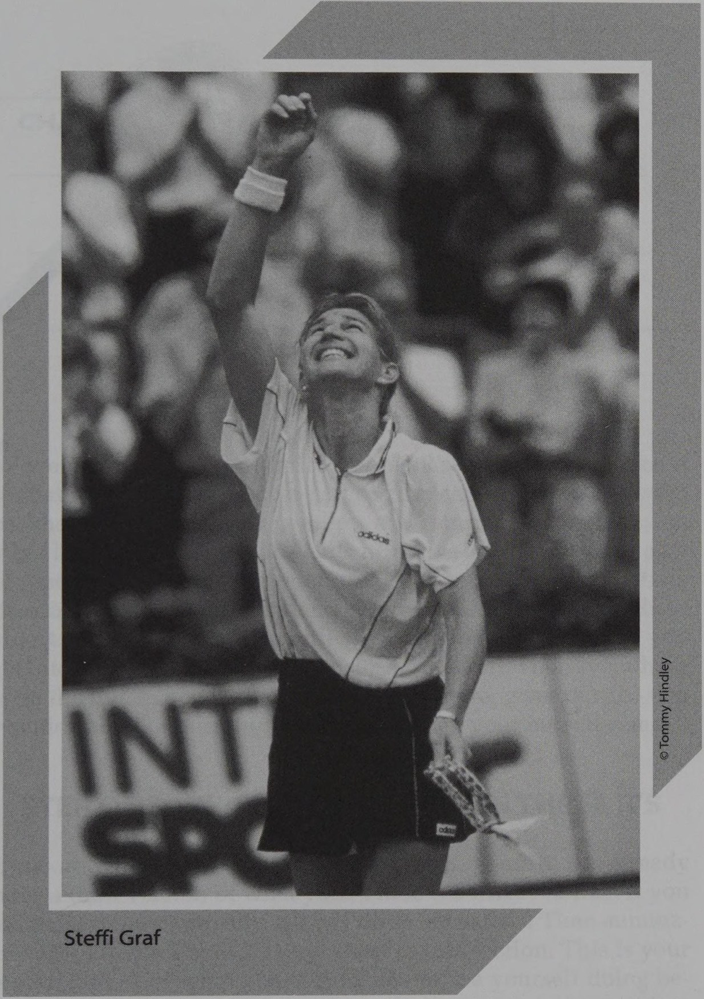
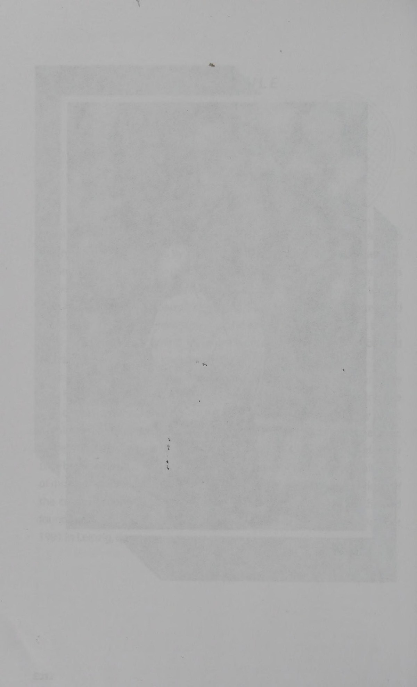
Tập Luyện Với Ba Chữ R
Hoàn thiện Ba chữ R được cá nhân hóa của riêng bạn—và rồi luyện tập nó để nó trở thành một phần trong lối chơi của bạn như cú thuận tay, cú trái tay, cú đánh qua đầu, cú giao bóng, cú vô-lê và cú trả giao bóng. Cũng như việc cần đánh rất nhiều bóng tập để tạo nét quen cho một cú đánh, bạn cần rất nhiều sự lặp lại để làm quen với Ba chữ R được cá nhân hóa của riêng mình. Luyện tập trong các buổi tập thường lệ (và cả khi chỉ đơn thuần nghĩ về trò chơi tennis của bạn) và bạn sẽ thấy kết quả ngay tức thì khi bước vào các trận đấu, đặc biệt là trong những tình huống căng thẳng khi mọi thứ được đặt cược trong một hay hai điểm. Chương này trình bày kế hoạch luyện tập sáu bước của chúng tôi để xây dựng Ba chữ R vào lối chơi tổng thể của bạn.
Perfect your own customized Three R’s—and then practice it so that it becomes as much a part of your game as your forehand, backhand, overhead, serve, volley, and return of serve. Just as it takes hitting a lot of practice balls to groove a stroke, it takes a lot of repetition to settle into your own customized Three R’s. Practice during regular workouts (and even when simply thinking about your tennis game) and you will see immediate results when you get into match play, especially in close situations when everything is on the line in one or two points. This chapter gives our six-step practice plan for building the Three R’s into your overall game.
Bước Một: Viết Ra Ba Chữ R Của Chính Bạn STEP ONE: WRITE OUT YOUR OWN THREE R’S
Bằng cách hoàn thành các bảng bài tập trong chương 3, 4 và 5, bạn đã có một bản nháp về những gì Ba chữ R của bạn sẽ trông như thế nào. Nếu bạn chưa làm điều đó, hãy điền vào các danh sách kiểm tra này. Sau đó tóm tắt chúng trong bảng bài tập Ba chữ R ở phần này. Đây là bản nháp làm việc về những gì bạn muốn thấy mình thực hiện giữa các điểm. Hãy nhìn thấy một cách rõ ràng, trong tâm trí bạn—hãy tưởng tượng một đoạn băng hình về một trong những trận đấu của bạn, và quan sát bản thân đang làm những điều này.
By completing the worksheets in chapters 3, 4, and 5, you already have a draft version of what your Three R’s will look like. If you have not done so already, fill out these checklists. Then summarize them in the Three R’s worksheet in this section. This is your working draft of what you would like to see yourself doing between points. Literally see, in your mind’s eye—imagine a videotape of one of your matches, and watch yourself doing these things.
Khi bạn trông thoải mái và vui vẻ, bạn sẽ biết Ba chữ R của riêng bạn nên trông như thế nào. Điều này cũng giống như với cú thuận tay. Khi bạn thực hiện cú đánh tốt, bạn sẽ có một cú xoay vai tốt, bạn sẽ đánh bóng phía trước người và tiếp tục vung vợt. Nếu bạn bị bó (vì bạn xoay người quá muộn, không di chuyển chân, hoặc vì đối thủ của bạn thực hiện một cú đánh tuyệt vời), thì cú thuận tay sẽ không hiệu quả như vậy. Nhưng bạn sẽ không thể chẩn đoán điều này ở cú thuận tay trừ khi bạn đã có hình ảnh lý tưởng về cú đánh đó trong đầu, và đã luyện tập đến mức quen thuộc. Điều tương tự cũng đúng với Ba chữ R. Những gì bạn viết trong bảng bài tập chính là Ba chữ R lý tưởng của bạn, là mô hình bạn mong muốn trải qua giữa mỗi điểm.
When you look comfortable and happy, you will know what your own Three R’s should look like. It is the same as with your forehand. When you are executing the stroke well, you will have a good shoulder turn, you will strike the ball ahead of you and follow through. If you get jammed (because you turned too late, did not move your feet, or because your opponent hit a tremendous shot), then the forehand will not work so well. But you will not be able to diagnose this in the forehand unless you have the ideal shot in mind already, and have grooved it in practice. The same is true of the Three R’s. What you write in the worksheet is your ideal Three R’s, the pattern you aspire to go through between every point.
Bước Hai: Viết Ra Kế Hoạch Thi Đấu STEP TWO: WRITE OUT YOUR GAME PLAN
Không giống các vận động viên của nhiều môn thể thao khác (bóng rổ, bóng bầu dục, bóng chày), các tay vợt tennis thường không tự đưa ra kịch bản cho mình trước khi bắt đầu một điểm. Thay vào đó, họ cân nhắc tình huống giữa các điểm, quyết định phải làm gì, và sau đó cố gắng thực hiện. Như một phần của Hệ thống Tâm lý học Thể thao Ba chữ R, chúng tôi đề xuất các tay vợt chọn một trong ba Kịch bản (Play) được lên kế hoạch trước, đã trình bày lần đầu ở chương 3, và sau đó thực hiện Kịch bản đó trong một điểm. Ưu điểm rõ ràng của cách tiếp cận này là nó đơn giản hóa việc điều khiển lối chơi, để các tay vợt có thể dành ít thời gian suy nghĩ hơn. Điều này đặc biệt quan trọng khi mệt mỏi ập đến. Nó tiết kiệm rất nhiều công sức tinh thần nếu bạn giữ số lượng các quyết định lớn phải đưa ra trên sân ở mức tối thiểu, chỉ điều chỉnh kế hoạch của bạn cho những điểm yếu bạn phát hiện ở đối thủ trong trận đấu. Mục tiêu là thực hiện một kế hoạch lối chơi, và thực hiện nó thật tốt. Những Kịch bản chuẩn này sẽ giúp bạn phát triển kế hoạch lối chơi cá nhân, khóa chặt nó bằng luyện tập tưởng tượng, và áp dụng nó trong thi đấu.
Unlike athletes in many other sports (basketball, football, baseball), tennis players do not usually call plays for themselves before they begin a point. Instead, they think the situation over between points, decide what to do, and then attempt to do it. As a part of the Three R’s Sport Psychology System, we suggest that players pick one of the three preplanned Plays first presented in chapter 3, and then implement that Play during the point. The obvious advantage of this approach is that it simplifies playmaking, so that players can spend less time thinking. This is especially important when fatigue sets in. It saves a lot of mental effort if you can keep the number of big decisions you must make on the court to a minimum, adjusting your plan only for weaknesses you spot in your opponent during the match. The objective is to implement a.game plan, and to do it well. These standard Plays will help you develop your personal game plan, lock it in with mental imagery practice, and apply it in match play.
Chơi Tập Play 1: “I’m Coming In—Now!”
Kịch bản 1: “Tôi Lên Lưới—Ngay!”
Play 1: “I’m Coming In—Now!”
Đây là kịch bản tấn công mạnh nhất trong tennis. Khi giao bóng, nó có nghĩa là giao bóng rồi lên lưới: Sau cú giao bóng tốt này, tôi sẽ lên đánh một cú vô-lê, sau đó tôi sẽ băng lên thực hiện cú vô-lê chặn bóng để giành điểm.
This is the most aggressive play in tennis. On serve, it means serve and volley: After this good serve, I’m coming in to hit a volley, after which I will close for a cut-off volley to win the point.
Tôi sẽ sẵn sàng cho một cú đánh qua đầu. Mọi di chuyển đều hướng về phía lưới.
I will be ready for an overhead. All movement forward to the net.
Khi trả bóng, tôi dự định hoặc là cắt bóng nhẹ rồi băng lên, hoặc đánh cú trả bóng chắc chắn và lên lưới ngay lập tức.
Returning, I plan either to chip and charge, or to hit the return solid and come in immediately.
Toàn bộ ý tưởng đằng sau Kịch bản 1 là giành lấy lợi thế về vị trí trên sân (chiếm lấy lưới), và sau đó giành điểm.
The whole idea behind Play 1 is to achieve the advantage of court position (taking the net), and then win the point.
Bảng bài tập Ba chữ R Tôi Sẽ: L] i L] L] Các nhận xét điều chỉnh: “Hãy hạ thấp người!” “Quan sát bóng!”
Three R’s Worksheet 1 Will: L] i L] L] Make corrective comments: “Stay down!” “Watch the ball!”
Nói “Đi nào,” “Vâng,” “Đúng rồi” (Sau khi thi đấu tốt trong một điểm quan trọng).
Say “come on,” “yes,” “that’s it” (After doing well ona big point).
WH Dùng động tác siết nắm đấm (“fist pump”).
WH Use “fist pump.”
Dùng sự hài hước sau một lỗi.
Use humor after an error.
Bắt chước cú đánh tốt để khỏa lấp cú đánh xấu.
Imitate the good shot to override the bad one.
Làm tất cả những điều này một cách “kín đáo.”
Do all of this in a“quiet sort of way.”
Làm tất cả những điều này một cách “phô trương.”
Do all of this in a “flamboyant sort of way.”
Khen ngợi đối thủ của tôi: “Quá hay,” “Cú đánh tuyệt vời,” vỗ vợt tán thưởng.
Compliment my opponent: “Too good,” “Great shot,” applaud with racket.
Khác (liệt kê): Luyện tập cùng Ba chữ R_ 1 Tôi Sẽ Tránh: Nhận xét tiêu cực tổng quát: “Bạn tệ quá đi,” “Bạn chẳng ra gì.”
Other (list): Practicing With the Three R’s_ 1 | Will Avoid: Global negatives:”You’re so bad,””You Stink.”
Lời nói tục tĩu.
Profanity.
Ngược đãi vợt, bóng, con người.
Racket, ball, people abuse.
Khác (liệt kê): DỪNG LẠI Nhìn vào các hạng mục bạn đã đánh dấu, và dựa trên lịch sử của riêng bạn với các bước Giải tỏa (Release), hãy viết một bản tóm tắt bạn muốn đưa vào giai đoạn Giải tỏa (Release) của mình.
Other (list): STOP Looking at the items you have checked, and in light of your own history with Releases, write a summary you want to include in your Release phase.
Tôi Sẽ: Tôi Sẽ Tránh: Chuyển vợt sang tay không cầm Bỏ qua bước Xem xét. để bắt đầu bước Xem xét.
1 Will: | Will Avoid: |] Switch racket to nonplaying Skipping the Review. hand to start Review.
Chỉ nhìn vào điều tồi tệ.
Looking just at the bad.
Đi đứng tự tin (vai thẳng ra sau, đầu ngẩng cao).
Walk confidently (shoulders back, head up).
Quên kế hoạch lối chơi của mình.
Forgetting my game plan.
Nhìn vào mặt vợt của mình khi tôi suy nghĩ.
Look at my strings as I think.
Nhìn huấn luyện viên (cha mẹ) để cầu cứu.
Looking at coach (parents) for help.
Khác (liệt kê): Đặt các “câu hỏi của huấn luyện viên.”
Other (list): Ask the “coach questions.”
Chuyện gì vừa xảy ra?
What just happened?
Tại sao tôi thắng điểm?
Why did I win the point?
Tại sao tôi thua điểm?
Why did I lose the point?
Tôi có đang thực hiện kế hoạch lối chơi của mình không?
Am|doing my game plan?
Tôi có đang khai thác điểm yếu của đối thủ không?
Am I playing my opponent's weakness?
Tôi cần làm gì tiếp theo?
What do! need to do next?
Gọi tên “Kịch bản 1,” “Kịch bản 2,” hoặc “Kịch bản 3.”
Call “Play 1,” “Play 2,” or “Play 3.”
Nói các từ mật mã của tôi (như “Quan sát bóng,” “Hãy mạnh mẽ,” “Đánh bóng,” “Vào lưới!”).
Say my code words (such as “Watch the ball,” “Be strong,” “Play the ball,” “Get in!”).
Thư giãn bằng hơi thở sâu.
Relax with deep breathing.
Khác (liệt kê): Nhìn vào các hạng mục bạn đã đánh dấu, hãy viết ra bản tóm tắt về một bước Xem xét (Review) lý tưởng dành cho bạn giữa các điểm. :
Other (list): Looking at the items you have checked, write down a summary of what would be an ideal Review for you between points. :
Luyện tập cùng Ba chữ R — Tôi Sẽ: Tôi Sẽ Tránh: Nếu bị kích thích quá mức, Nếu bị kích thích quá mức, Khi giao bóng: Không cho ai ngăn tôi Bước đến vạch. thực hiện quy trình Thiết lập lại (Reset) của mình.
Practicing With the Three R’s — 1 Will: | Will Avoid: lf Overaroused, If Overaroused, When serving: || Letting anyone keep me Step to the line. from doing my Reset routine.
Hô điểm.
|| Call score.
Bỏ qua quy trình Thiết lập lại của mình.
Skipping my Reset routine.
Thư giãn bằng một hơi thở sâu.
Relax with a deep breath.
Nảy bóng một số lần nhất định. Tưởng tượng một cú giao bóng tuyệt vời để bắt đầu một điểm tuyệt vời.
Bounce the ball a set number of times. _| Imagine a great serve to start a great point.
Bắt đầu động tác.
Begin motion.
Khi trả bóng: Bước đến vạch.
When returning: Step to the line.
Kiểm tra điểm số.
Check score.
Sẵn sàng “trên đầu ngón chân.”
Get “on my toes.”
Bật nhảy khi trả bóng.
Jump on the return.
Nếu chưa đủ kích thích, Nếu chưa đủ kích thích, Khởi động bằng cách vỗ vào đùi, Trôi dạt vào điểm tiếp theo nói “Đi nào” hoặc mà không có năng lượng hay sự tập trung. điều gì đó khác để khiến bản thân hưng phấn. Câu được chọn: (còn tiếp)
If Underaroused, If Underaroused, Rev up by slapping my leg, Drifting into next point saying “Come on” or with no energy or focus. something else to get me going. Chosen phrase: (continued)
Bảng bài tập Ba chữ R, (còn tiếp) Dựa trên các hạng mục bạn đã đánh dấu, hãy viết ra bản tóm tắt về các quy trình Thiết lập lại chuẩn của riêng bạn khi giao bóng và khi trả bóng.
Three R's Worksheet, (continued) Considering the items you have checked, write out a summary of your own standard Reset routines for serving and returning.
Tóm tắt quy trình Thiết lập lại khi giao bóng: Tóm tắt quy trình Thiết lập lại khi trả bóng: Kịch bản 2: “Lăn bóng, rồi sau đó lên lưới!”
Summary of service Reset routine: Summary of return Reset routine: Play 2: “Work the Point, and Then Come In!”
Kịch bản 2 gồm việc lăn bóng bằng những cú đánh chạm đất chắc chắn, cố gắng tạo ra một cú bóng ngắn để tôi có thể lên lưới ngay lập tức trên cú bóng ngắn đó. Nó đòi hỏi những cú đánh chạm đất chắc chắn để di chuyển đối thủ khắp nơi trên sân, và nó đòi hỏi thực hiện một cú approach shot hiệu quả để tôi có thể vào lưới. Một khi đã vào lưới để đánh một cú vô-lê, mục tiêu cũng giống như với Kịch bản 1: Chặn bóng bằng cú vô-lê hoặc đập bóng qua đầu để giành điểm.
Play 2 involves working the point with solid ground strokes, trying to create a short ball so that I can come in immediately on the short ball. It requires sdlid ground strokes to move my opponent around, and it requires hitting an effective approach shot so I can get in. Once I get in to hit a volley, the goal is the same as for Play 1: Cut off the volley or crunch the overhead to win the point.
Lý thuyết đằng sau Kịch bản 2 cũng giống như đằng sau Kịch bản 1: Nếu tôi có lợi thế về vị trí trên sân ở lưới, tôi tăng cơ hội giành điểm; ngược lại, nếu tôi để đối thủ vào lưới, thì đối thủ sẽ có lợi thế, vì vậy tôi muốn vào lưới trước. Kịch bản 2 phù hợp với cả tình huống trả bóng lẫn giao bóng.
The theory behind Play 2 is the same as behind Play 1: If I have the advantage of court position at the net, I increase my chances of winning the point; conversely, if 1 let my opponent get in, then my opponent has the advantage, so I want to get in first. Play 2 works on returning or serving situations.
Kịch bản 3: “Thắng từ vạch cuối sân.”
Play 3: “Win From the Baseline.”
Kịch bản này được dùng khi một tay vợt có những cú đánh chạm đất đặc biệt mạnh có thể áp đảo đối thủ; nó cũng có thể được dùng nếu tay vợt
This is used when a player has especially strong ground strokes that can overpower an opponent; it also can be used if a player
Luyện tập cùng Ba chữ R_ cần lấy lại sự tự tin để thực hiện Kịch bản 1 hoặc Kịch bản 2 sau khi “trở lại cuộc chơi.” Dùng Kịch bản 3, bạn lăn bóng, cố gắng đẩy đối thủ chạy khắp sân, duy trì điểm cho đến khi bạn tạo ra một lỗi từ đối thủ hoặc đánh được một cú thắng điểm.
Practicing With the Three R’s_ needs to regain confidence so as to do Play 1 or Play 2 after getting “back in the game.” Using Play 3, you work the point, attempting to run your opponent all over the court, working the point until you generate an error or hit a winner.
Hãy nghĩ lại các trận đấu then chốt và xem bạn hiệu quả nhất khi nào khi thi hành Kịch bản 1, Kịch bản 2, Kịch bản 3, hoặc kết hợp chúng. Hãy xác định các trận đấu cụ thể và các điểm cụ thể nơi bạn hiệu quả nhiều hay ít hơn. Hãy nghĩ về những đối thủ bạn từng gặp đã thắng bạn: Họ đã đánh bại bạn như thế nào?
Think through key matches and see if you are most effective when doing Play 1, Play 2, Play 3, or combinations. Identify specific matches and specific points where you were more or less effective. Think of opponents you have played who have beaten you: How did they beat you?
Bây giờ, hãy viết ra kế hoạch lối chơi của riêng bạn. Ví dụ: Tôi sẽ thực hiện Kịch bản 1 và Kịch bản 2 làm hướng đi chính, với Kịch bản 3 làm phương án dự phòng chỉ khi tôi gặp rắc rối. Ngoài ra, khi giao bóng, tôi sẽ dùng nhiều Kịch bản 1 hơn Kịch bản 2, đặc biệt ở những điểm then chốt. Trong mọi trường hợp, tôi sẽ suy nghĩ một cách tích cực để thực hiện Kịch bản 1 và Kịch bản 2, biết rằng tôi tăng cơ hội giành điểm nếu tôi có thể chiếm lấy lưới từ tay đối thủ.
Now, write out your own game plan. For example: I will do Play 1 and Play 2 as my main approach, with Play 3 as backup only if1 get in trouble. Also, when serving, I will do more Play 1 than Play 2, especially on key points. In all cases I will think aggressively to implement Play 1 and Play 2, knowing that I increase my chances of winning if I can take the net from my opponent.
Bước Ba: Tập Luyện Hình Dung Tinh Thần STEP THREE: DO IMAGERY TRAINING
Mục đích của luyện tập tưởng tượng là cho bạn một trải nghiệm về bản thân thực hiện Ba chữ R (bao gồm cả Xem xét kế hoạch lối chơi của bạn) trước khi bạn bước ra sân. Có nhiều cách để thực hiện luyện tập tưởng tượng, một số đơn giản và một số khác đòi hỏi một lượng thời gian cụ thể. Mơ mộng ban ngày thực ra cũng là luyện tập tưởng tượng. Câu hỏi đặt ra là, bạn có mơ mộng về những điều tiêu cực hay bạn mơ mộng về những điều tích cực và góp phần vào sự thành công tổng thể của bạn? Hãy bắt đầu ngay bây giờ bằng cách dùng mọi khoảng thời gian mơ mộng để hình dung bản thân mình mạnh mẽ và tự tin giữa các điểm, Giải tỏa những điều tiêu cực khi chúng xuất hiện, Xem xét kế hoạch lối chơi của bạn, và Thiết lập lại bằng một quy trình cải thiện phong độ của bạn ở điểm tiếp theo. Hãy nuôi dưỡng hình ảnh này về bản thân thật thường xuyên.
The purpose of imagery training is to give you an experience of yourself implementing the Three R’s (including Review of your game plan) before you get on the court. There are many ways to do imagery training, some informal and others that take a specific amount of time. Daydreaming is actually imagery training. The question is, do you daydream about negative things or do you daydream about things that are positive and contribute to your overall success? Begin right now using any daydreaming time to picture yourself as strong and confident between points, Releasing negatives as they occur, Reviewing your game plan, and Resetting with a routine that improves your performance on the next point. Cultivate this image of yourself as often as you can.
Bạn có thể tăng cường sức mạnh của những hình ảnh này bằng luyện tập tưởng tượng. Hãy thử bài tập 10 phút này hai lần một ngày trong hai tuần: • Tìm một chỗ thoải mái nơi bạn sẽ không bị làm phiền.
You can increase the power of these images through practice imagery training. Try this 10-minute exercise twice a day for two weeks: e Find a comfortable spot where you will not be interrupted.
Thư giãn bằng hơi thở sâu hoặc thư giãn cơ sâu. (Để biết các mẹo về những kỹ thuật này, xem chương 2.) Hãy đi qua các hình ảnh tinh thần sau đây.
Relax with deep breathing or deep muscle relaxation. (For tips on these techniques, see chapter 2.) Go through the following mental pictures.
• Hãy tưởng tượng bạn đang chơi trận đấu hay nhất cuộc đời mình. (Đó có thể là một trận thật hoặc một trận tưởng tượng.) Khi làm điều đó, hãy dùng cả năm giác quan. Hãy hình dung trái bóng khi bạn đánh nó. Hãy nghe âm thanh của đôi chân bạn khi bạn xoay người và chạy đón bóng. Hãy cảm nhận cú đánh tuyệt vời khi bạn vung vợt, không rời mắt khỏi trái bóng. • Hãy tưởng tượng bạn đang chơi các điểm, và giữa các điểm thực hiện Ba chữ R, và tập trung vào việc chọn Kịch bản 1 hay Kịch bản 2.
¢ Picture yourself playing the best match of your life. (It could be a real match or an imaginary one.) As you do so, use all five of your senses. Picture the ball as you hit it. Hear the sound of your feet as you turn and run to meet the ball. Feel the great stroke as you follow through, never taking your eyes off the ball. e Picture yourself playing points, and between points doing the Three R’s, and focusing on the choice of Play 1 or Play 2.
• Hãy diễn ra từng điểm bằng Kịch bản 1 hoặc Kịch bản 2, kết thúc nó bằng một chiến thắng ở lưới (cú vô-lê chặn bóng hoặc cú đánh qua đầu). Hãy tận hưởng cảm giác của lối chơi thành công.
¢ Play out each point using Play 1 or Play 2, closing it with a victory at the net (cut off volley or overhead). Enjoy the feeling of successful play.
• Hãy tiếp tục điều này và diễn ra nhiều game—thậm chí cả một set.
¢ Continue this and play out several games—even an entire set.
• Kết thúc phần tưởng tượng bằng việc thắng set và trận đấu.
* Close the imagery by winning the set and match.
• Hãy tiếp tục thư giãn và đắm mình trong những hình ảnh và cảm xúc của lối chơi tấn công, vào được lưới nhờ Kịch bản 1 và Kịch bản 2, và giành chiến thắng.
¢ Continue to relax and soak in the images and feelings of playing aggressive tennis, getting to the net using Play 1 and Play 2, and winning.
• Kết thúc bài tập bằng cách mở mắt và trở lại trạng thái tự tin và thư thái.
° Stop the exercise by opening your eyes and emerging confident and relaxed.
• Hãy lặp lại điều này hai lần một ngày trong một tuần, và sau đó một lần một ngày trong một tuần.
° Repeat this twice a day for one week, and then once a day for a week.
Nếu bạn thực hiện luyện tập tưởng tượng theo cách này và sau đó kết hợp nó với việc mơ mộng ban ngày, bạn sẽ tăng hiệu quả thời gian luyện tập của mình. Cứ như thể bạn đang có thêm cơ hội để trở thành một tay vợt tennis mạnh. Các tay vợt và huấn luyện viên đã phát hiện ra rằng không có
If you do imagery training like this and then combine it with daydreaming, you will effectively increase your practice time. It is almost as if you are getting extra opportunities to become a strong tennis player. Players and coaches have found that there is
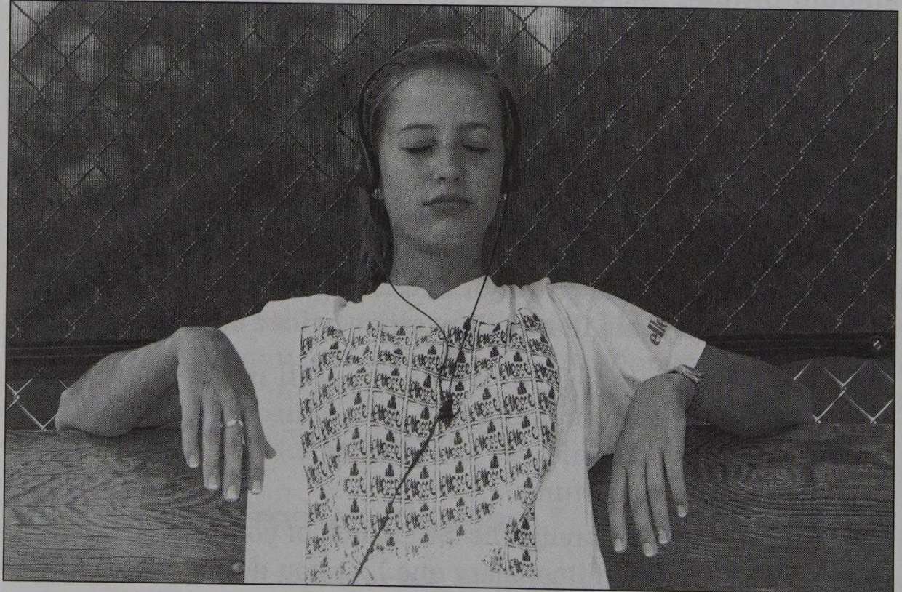
Luyện tập cùng Ba chữ R điều gì sánh được với luyện tập tưởng tượng kết hợp với luyện tập tập trung đánh bóng trên sân để cải thiện phong độ thi đấu.
Practicing With the Three R’s nothing to compare with imagery training combined with focused practice of hitting the ball on the court to improve performance.
Bước Bốn: Ghi Chép Ba Chữ R Trong Tập Luyện STEP FOUR:
Bây giờ là cơ hội để thực hiện đầy đủ Ba chữ R trong suốt buổi tập. Phần lớn chúng ta được tập để đánh càng nhiều bóng càng tốt; chúng ta có xu hướng nghĩ về buổi tập như thời điểm đánh bóng là điều quan trọng nhất. Chúng ta thường vội vã qua các game tập như thể những gì chúng ta làm giữa các điểm không thực sự quan trọng. Nếu bạn muốn phát triển sự tập trung giữa các điểm, tuy nhiên, hãy coi mỗi cơ hội giữa các điểm trong buổi tập như một dịp để sử dụng Ba chữ R. Phải công nhận, trong một số bài tập mục đích là đánh nhiều bóng thật nhanh và không tái nhóm giữa các điểm. Mặt khác, những bài tập như vậy— dù hữu ích—không nên chiếm hết buổi tập của bạn. Ngoài các bài tập tốc độ, hãy tạo càng nhiều cơ hội càng tốt để luyện tập Ba chữ R vào những khoảng thời gian giữa các lần bạn đánh bóng.
Now comes the opportunity to complete the Three R’s during practice. Most of us were trained to hit as many balls as we could; we tend to think of practice as a time when hitting the ball is the most important thing. We often rush through practice games as if what we do between points does not really matter much. If you want to develop your focus between points, however, treat every between-point opportunity in practice as a chance to use the Three R’s. Granted, in some drills the idea is to hit many balls quickly and not regroup between points. On the other hand, such drills— useful as they are—shouldn’t take up your whole practice session. Outside of speed drills, create as many opportunities as you can to practice the Three R’s between times when you hit the ball.
Ví dụ, bạn có thể: • Thiết lập các loạt tiebreak, game đơn, hoặc game đến 5 hoặc 10 điểm và coi chúng như những tình huống thi đấu thực sự, trong đó bạn sử dụng Ba chữ R giữa các điểm. • Làm chậm nhịp độ trong một số bài tập về cú trái tay, cú thuận tay, và các cú đánh khác, và hãy đảm bảo hoàn thành một lượt Ba chữ R ngắn—đặc biệt là Xem xét, tìm xem cần làm gì để thực hiện cú đánh đúng cách nếu bạn vừa thực hiện sai. • Giữa các bài tập cụ thể (như bài tập giao bóng rồi lên lưới, hoặc thậm chí cả luyện giao bóng), hãy hoàn thành một lượt Ba chữ R mạnh mẽ (Giải tỏa, Xem xét, và Thiết lập lại) để làm cho cú đánh tiếp theo của bạn tốt hơn cú trước đó. Chúng tôi từng nghe Pete Sampras nói rằng việc luyện giao bóng từng xô một như vậy là đã đủ, và chúng tôi biết điều đó là đúng, nếu bạn sử dụng Ba chữ R giữa các cú giao bóng để học hỏi từ cú giao bóng này sang cú giao bóng khác.
For example, you can: ¢ Set up tiebreakers, single games, or games to 5 or 10 points and treat them as game situations in which you use the Three R’s between points. e Slow down your activity during some drills for backhands, forehands, and other shots, and make sure to complete a brief Three R’s—especially Review, looking for what to do in order to execute the shot properly if you have just missed one. e Between specific drills (such as serve and volley drills, or even practicing serves), complete a strong Three R’s (Release, Review, and Reset) to make the next ball you hit better than the preceding one. We once heard Pete Sampras say that practicing one bucket of serves at a time was enough, and we know that is true, if you use the Three R’s between serves to learn from one serve to the next.
Để ghi lại những gì bạn đang làm, hãy nhờ ai đó ghi chép hoạt động của bạn bằng Hướng dẫn Ghi mã Ba chữ R ở bảng 7.1. Việc ghi mã có thể được thực hiện từ băng video hoặc qua quan sát trực tiếp, và sẽ cho bạn những phản hồi chắc chắn về những gì bạn đang làm giữa các điểm.
To capture what you are doing, have someone chart your activity using the Three R’s Coding Manual in table 7.1. The coding can be done from videotapes or live action, and will give you solid feedback on what you are doing between points.
Bảng 7.1 Hướng dẫn Ghi mã Ba chữ R Hệ thống ghi mã này được thiết kế cho các tay vợt, huấn luyện viên, và các nhà nghiên cứu sử dụng trong việc đánh giá hiệu quả phong độ “giữa các điểm” của bất kỳ tay vợt nào. Sơ đồ ghi mã cho phép đánh giá các bước Giải tỏa, Xem xét, các quy trình Thiết lập lại, và các lần DỪNG xen giữa.
Table 7.1 Three R'sCoding Manual This coding system is designed for players, coaches, and researchers to use in evaluating the effectiveness of any player's “betweenpoint” performance in tennis. The coding scheme allows evaluation of Releases, Reviews, and Reset routines, and the intervening STOPs.
Bằng cách ghi mã phong độ Ba chữ R cho từng điểm, các tay vợt và huấn luyện viên có thể thấy mối liên hệ giữa việc sử dụng thành công Ba chữ R và thành công hay thất bại ở những “điểm then chốt” trong bất kỳ trận đấu nào. Ví dụ, một tay vợt có thể vội vã giữa các điểm, có thể bỏ qua bước Xem xét, __ giai đoạn, và do đó để đối thủ—người vốn có thể đã bị đánh bại—quay tôi lại vào trận đấu. Hoặc, một tay vợt có thể bị bế tắc và tham tôi gia vào lời nói tiêu cực như một phần của bước Giải tỏa, rồi quên DỪNG __ bước Giải tỏa và chuyển sang một bước Xem xét vững chắc—khiến bản chất tiêu cực của bước Giải tỏa tràn sang điểm tiếp theo, và cản trở phong độ thi đấu.
By coding the Three R's performance for each point, players and coaches can see the link between successful use of the Three R’s and success or failure on the“big points” in any match. For example, a player might rush between points, perhaps skipping the Review __ phase, and thereby let the opponent who could have been closed | out back into the match. Or, a player might be frustrated and en- | gage in negative talk as a part of the Release, then neglect to STOP __ the Release and move to a solid Review—allowing the negative Release to spill into the next point, and interfering with performance.
Hướng dẫn Ghi mã Bảng ghi mã này được thiết kế để sử dụng với cả trận đấu trực tiếp hoặc một đoạn băng video. Đối với video, hãy để máy quay chạy suốt cả trận đấu, kể cả giữa các điểm và trong các lần đổi bên sân.
Coding Instructions This coding chart is designed for use with either a live match or a videotape. For video, keep the camera running for the entire match, including between points and during changeovers.
Ghi mã như sau:
Code as follows:
- 1. Ghi tên của các tay vợt,1. Write in the names of the players,
và xác định điểm số của game ở cột bên trái.
and identify the game score in the left column.
- 2. Xác định điểm số của “điểm vừa chơi” trong mỗi trường hợp. Mọi việc ghi mã đều2. Identify the “point just played” score in each case. All coding is
là cho hành vi giữa các điểm đến sau điểm được liệt kê ở cột bên trái.
for between-point behavior that follows the point listed in the left column.
- 3. Ghi lại những mô tả ngắn gọn về mọi hành vi Giải tỏa, mọi hành vi Xem xét,3. Write down brief descriptions of all Release behavior, all Review
và mọi hành vi Thiết lập lại.
behavior, and all Reset behavior.
- 4. Ngoài ra,4. In addition,
hãy ghi thêm dấu “+,” “-,” hoặc “?” để thể hiện liệu bước Giải tỏa, Xem xét, và Thiết lập lại có mang tính xây dựng (+), phá hoại (-), hay là “không thể biết được từ quan sát này” (?).
jot down a“+,” “-,” or“?” to show whether the Release, Review, and Reset were constructive (+), destructive (-), or “can't tell from this observation’ (?).
- 5. Ở cuối, hãy trả lời các câu hỏi tóm tắt để phản hồi cho tay vợt:5. At the end, answer the summary questions for player feedback:
a. Đến mức độ nào tay vợt này thực hiện các bước Giải tỏa mang tính xây dựng?
a. To what extent does this player execute constructive Releases?
(Hãy đưa ra ví dụ.) b. Tay vợt có cần thay thế bất kỳ bước Giải tỏa tiêu cực nào không? c. Bạn có thể thấy những cải thiện nào cho phần Xem xét của Ba chữ R (ví dụ, chuyển vợt sang tay không cầm như một dấu hiệu hành vi cho thấy bước Xem xét đang diễn ra)? d. Tay vợt nên thay đổi gì trong các quy trình Thiết lập lại? e. Tay vợt có thể làm gì để cải thiện phong độ trong Ba chữ R (ví dụ, các trận tập, ghi mã các băng khác)?
(Give examples.) b. Does the player need to replace any negative Releases? c. What improvements can you see for the Review portion of the Three R's (for example, switching racket to nonplaying hand as a behavioral indication that the Review is in progress)? d. What changes should the player make in the Reset routines? e. What can the player do to improve performance on the Three R's (for example, practice matches, coding other tapes)?
(còn tiếp)
(continued)
Bước Năm: Thảo Luận Kết Quả Ghi Chép STEP FIVE: DISCUSS CHARTING RESULTS
Hãy trao đổi với huấn luyện viên của bạn, một tay vợt khác, hoặc một người am hiểu nào đó về kết quả việc ghi chép của bạn. Hãy hỏi các câu hỏi sau: • Các bước Giải tỏa của tôi có mang tính xây dựng đến mức nào? (Hãy xin ví dụ về những điều hiệu quả và không hiệu quả bạn làm.)
Talk with your coach, another player, or some other knowledgeable person about the results of your charting. Ask the following questions: ° How constructive are my Releases? (Ask for examples of effective and ineffective things you do.)
• Tôi có cần thay thế bất kỳ bước Giải tỏa tiêu cực nào không? (Hãy xin chi tiết cụ thể.)
¢ Do I need to replace any negative Releases? (Ask for specifics.)
• Làm thế nào để bạn nhận ra rằng tôi đã chuyển sang phần Xem xét của Ba chữ R? (Bạn nên có một dấu hiệu hành vi để tự báo cho mình rằng bạn đang ở bước Xem xét, chẳng hạn như chuyển vợt sang tay không cầm. Nếu nó quá tinh vi đến mức một người quan sát bên ngoài không thể phát hiện ra, có lẽ nó cần được cụ thể hơn.)
¢ How could you tell that I’d moved into the Review portion of the Three R’s? (You should have a behavioral cue to tell yourself that you’re in Review, such as switching the racket to your nonplaying hand. If it’s so subtle that an outside observer can’t spot it, maybe it needs to be more specific.)
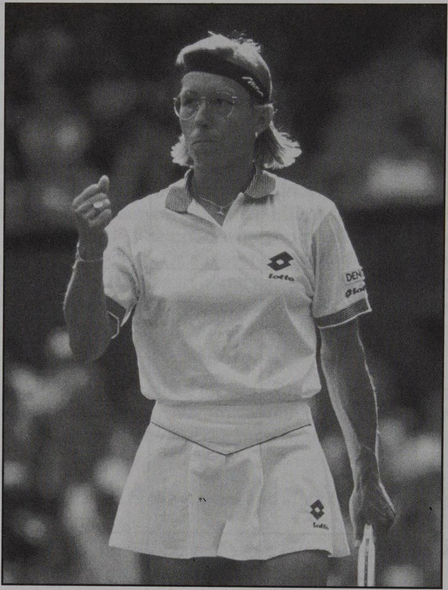
Luyện tập cùng Ba chữ R • Trông có vẻ như quy trình Thiết lập lại của tôi đang hoạt động không? (Hãy xin các cải thiện bạn có thể thực hiện.)
Practicing With the Three R’s ¢ Does it look like my Reset routine is working? (Ask for improvements you could make.)
• Tôi có thể làm gì để cải thiện phong độ trong Ba chữ R?
¢ What could I do to improve performance on the Three R’s?
(Bạn đang tìm kiếm các gợi ý về thứ tự tham gia nhiều trận tập hơn, ghi mã các băng khác, và những việc tương tự, đó là, những việc cụ thể cần làm.)
(You’re looking for suggestions on the order of taking part in more practice matches, coding other tapes, and so on, that is, specific things to do.)
Bước Sáu: Tinh Chỉnh Ba Chữ R Khi Cần STEP SIX: REFINE YOUR THREE R’S AS NEEDED
Bằng cách viết ra Ba chữ R và kế hoạch lối chơi của bạn, thực hiện luyện tập tưởng tượng, ghi chép trên sân, và nhận phản hồi, giờ đây bạn đã có các công cụ để cải thiện mọi khía cạnh của trò chơi tennis của mình. Ba chữ R sẽ giúp bạn tạo ra cơ hội để cải thiện từ điểm này sang điểm khác, thay vì suy sụp nếu mọi thứ trở nên tồi tệ. Đừng sợ thay đổi những thứ đang không hiệu quả—nhưng nếu điều gì đó chưa hỏng, thì đừng thay đổi nó. Như Trogolo đã nói với nhiều tay vợt, “Đừng thay đổi một kế hoạch lối chơi đang thắng.” Điều tương tự cũng đúng với Ba chữ R của bạn. Nếu nó hiệu quả, đừng thay đổi nó. Mặt khác, nếu bạn thấy rằng bạn đang gặp khó khăn, và nếu bạn thấy điều gì đó đáng ngưỡng mộ ở một tay vợt hàng đầu khác, có lẽ là việc dùng sự hài hước trong một bước Giải tỏa hoặc việc dùng tích cực một động tác khắc phục trong luyện tập để thay thế một cú đánh xấu và sửa một lỗi, thì hãy đưa điều này vào Ba chữ R của riêng bạn. Hãy thử nghiệm và tinh chỉnh hệ thống của bạn cho đến khi nó phù hợp với phong cách riêng của bạn.
By writing out your Three R’s and your game plan, doing imagery training, charting on the court, and getting feedback, you now have the tools to improve every aspect of your tennis game. The Three R’s will help you create opportunities to improve from point to point, instead of melting down if things get bad. Do not be afraid to change things that are not working—but if something isn’t broken, then don’t change it. As Trogolo has said to many players, “Don’t change a winning game plan.” The same is true of your Three R’s. If it is working, do not change it. On the other hand, if you find that you have been having difficulty, and if you see something you admire in another premier player, perhaps the use of humor during a Release or a positive use of a practice fix-it move to replace a bad shot and correct for an error, then build this into your own Three R’s. Experiment and refine your system until it fits with your own style.
Hồ Sơ Vận Động Viên — Thomas Muster PLAYER PROFILE
THOMAS — MUSTER © Thomas “Vua Đất nện” Muster nổi tiếng với thành tích 111-5 trên sân đất nện, chuỗi trận thắng liên tiếp tốt nhất trên sân đất nện trong kỷ nguyên Mở. Muster giành bảy danh hiệu ATP trong năm 1996 và vào bán kết giải Mỹ Mở rộng, thu về 2.875.496 đô la tiền thưởng. Cũng trong năm 1996, ông giữ vị trí số 1 trong tennis trong một tuần và tiếp thêm năm tuần từ ngày 11 tháng 3 đến ngày 14 tháng 4, là tay vợt thuận tay trái đầu tiên giữ vị trí số 1 kể từ khi John McEnroe làm được điều đó trong tuần của ngày 2 tháng 9, 1985.
THOMAS — MUSTER © Thomas“King of Clay” Muster is renowned for his 111-5 record on clay courts, the best consecutive clay court record in Open Era play. Muster won seven ATP tour titles in 1996 and was a semifinalist in the U.S. Open, collecting $2,875,496 in prize money. Also in 1996,he held the No. 1 position in tennis for one week and again for five weeks from March 11-April 14, the first lefthander to hold the No.1 position since John McEnroe did so in the week of September 2, 1985.
Năm 1989, ông là người Áo đầu tiên vào bán kết giải Úc Mở rộng và là người Áo đầu tiên từng vào Top 10. Trong cùng năm đó, chỉ vài giờ sau khi đánh bại Yannick Noah để vào chung kết tại Key Biscayne, ông đã bị một tài xế say rượu đâm phải và bị thương ở đầu gối trái, đứt nhiều dây chằng.
In 1989 he was the first Austrian to reach the Australian Open semifinals and was the first Austrian ever to reach the Top 10. In the same year, only hours after defeating Yannick Noah to reach the final at Key Biscayne, he was struck by a drunken driver and injured his left knee, severing several ligaments.
Chấn thương khiến ông phải bỏ chung kết với Ivan Lendl. Ông trở lại với tennis chưa đầy sáu tháng sau tai nạn và được vinh danh là Tay vợt Trở lại Xuất sắc nhất Năm 1990 của ATP Tour.
The injury barred him from the final with Ivan Lendl. He returned to tennis less than six months after the accident and was named ATP Tour Comeback Player of the Year in 1990.
Muster có tinh thần làm việc rất mạnh mẽ và từng được trích dẫn nói rằng ông “sống vì tennis.” Phần lớn thành công của ông trên mặt sân đất nện là nhờ tính kiên cường, và khả năng bắt đối thủ phải làm việc vất vả cho từng điểm. Bước Thiết lập lại đặc trưng của ông dưới dạng chạy vòng quanh vạch cuối sân trước khi đón bóng, và một bước Xem xét rất mạnh mẽ cho phép ông giữ vững kế hoạch lối chơi và hạ gục đối thủ, cả về tinh thần lẫn thể chất.
Muster has a strong work ethic and has been quoted as saying he “lives for tennis.” Much of his success on clay surface is due to his tenacity, and his ability to make his opponents work for every point. His distinctive Reset in the form of running around the baseline before receiving, and a very strong Review allow him to stay with his game plan and bring opponents down, mentally and physically.
Thomas Muster sinh ra tại Leibnitz, Áo, vào ngày 2 tháng 10, 1967, và sống ở Monaco. Ông chơi trống và thích nhiếp ảnh, nghệ thuật trừu tượng, và hội họa.
Thomas Muster was born in Leibnitz, Austria, on October 2, 1967, and lives in Monaco. He plays drums and enjoys photography, abstract art, and painting.
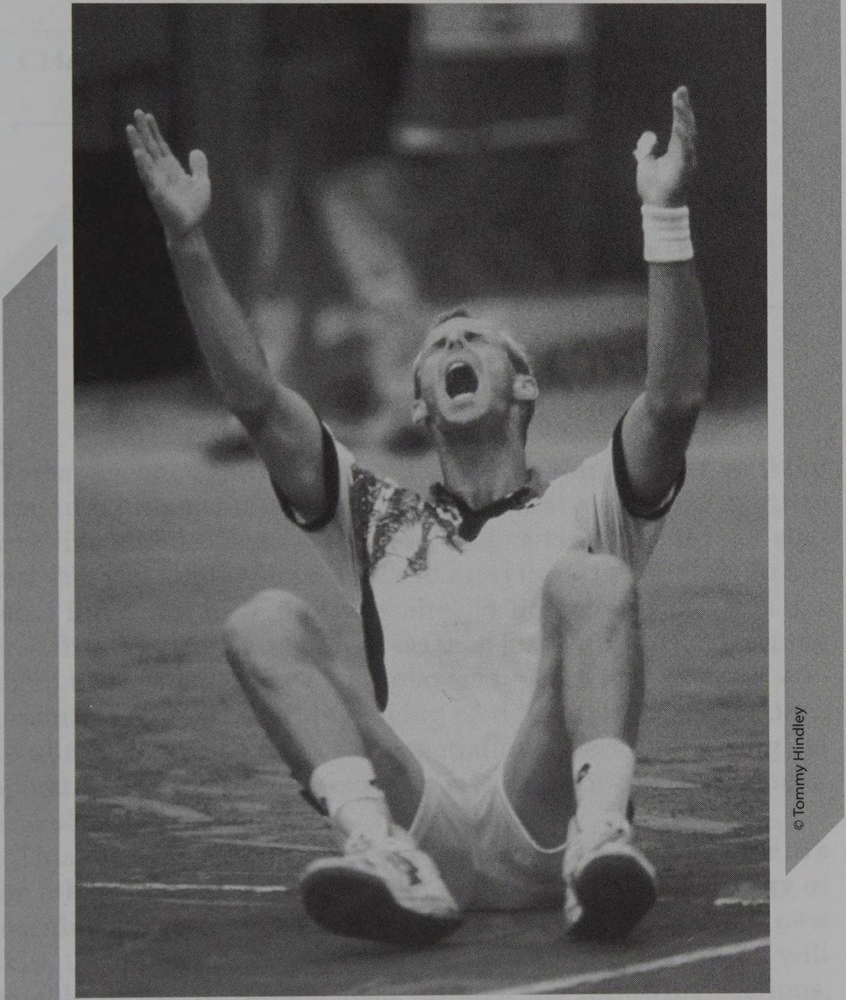
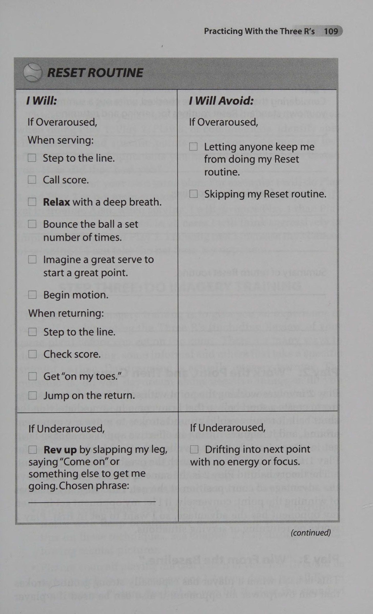
Những Cách Dùng Khác Của Ba Chữ R
Từng có người nói rằng điều nguy hiểm khi đi vòng quanh với một cây búa trong tay là mọi thứ bắt đầu trông giống một cái đinh. Chúng ta phải đồng ý, và chắc chắn sẽ không khuyên bạn áp dụng Ba chữ R vào mọi thứ trong cuộc sống. Đồng thời, bạn có lẽ đã nhận ra rằng cách tiếp cận này có thể giúp bạn trong nhiều lĩnh vực hơn chỉ riêng tennis. Sau khi tìm hiểu về hệ thống này, một số tay vợt của chúng tôi cho biết họ áp dụng nó thành công trong nhiều lĩnh vực khác nhau như xử lý lo lắng trước kỳ thi, tiến hành các cuộc đàm phán kinh doanh căng thẳng, thực hiện các ca phẫu thuật hoặc các thí nghiệm phòng lab phức tạp, hoặc nói chuyện với các thành viên trong gia đình về một vấn đề.
Someone once said that the dangerous thing about walking around with a hammer in your hand is that everything starts to look like a nail. We have to agree, and certainly would not suggest that you apply the Three R’s to everything in your life. At the same time, you have probably already figured out that this approach can help you in more areas than just tennis. After learning about this system, some of our players report that they use it successfully in areas as wide-ranging as dealing with test anxiety, conducting intense business negotiations, performing surgical operations or complex lab experiments, or talking to family members about a problem.
Chương này tóm tắt một số ứng dụng của Ba chữ R cho các lĩnh vực khác trong cuộc sống của bạn. Hãy nhớ rằng tâm lý học học tập cho thấy rằng bạn càng tìm ra nhiều cách để áp dụng một kỹ năng mới, bạn sẽ càng học nhanh kỹ năng đó và càng sử dụng tốt hơn nó. Khi bạn đọc qua các phần sau, hãy bắt đầu nghĩ về việc áp dụng Ba chữ R không chỉ trong tennis (giữa các điểm, các lần đổi bên sân, trước các trận đấu), mà còn trong càng nhiều lĩnh vực khác của cuộc sống càng tốt. Thành công trong việc sử dụng Ba chữ R với tennis sẽ giúp trò chơi golf của bạn và sẽ cho bạn một lợi thế trong kinh doanh nữa. Hãy lấy câu ngạn ngữ cũ, “Nếu bạn không dùng bạn sẽ mất nó,” và biến nó thành lợi thế của bạn: “Bạn càng dùng nhiều, bạn càng tiến bộ hơn!
This chapter summarizes some applications of the Three R’s for other areas of your life. Remember that the psychology of learning suggests that the more ways you find to apply a new skill, the quicker you will learn the skill and the better you will be able to use it. As you read through the following sections, begin to think about applying the Three R’s not only in tennis (between points, changeovers, before matches), but also in as many other areas of your life as you can. Success in using the Three R’s with tennis will help your golf game and will give you an edge in business as well. Take the old adage, “If you don’t use it you lose it,” and turn it to your advantage: “The more you use it, the better you get!
Các Môn Thể Thao Khác OTHER SPORTS
Phần lớn vận động viên tennis đã từng chơi các môn thể thao cạnh tranh khác, hoặc có những môn khác mà họ tham gia như một sự giải lao khỏi tennis. Ba chữ R sẽ trông như thế nào nếu áp dụng cho golf, bóng rổ, bóng bầu dục hay bóng đá?
Most tennis players have played other competitive sports, or have other sports they participate in as a break from tennis. How would the Three R’s look if applied to golf, basketball, football, or soccer?
Rõ ràng, Ba chữ R áp dụng cho bất kỳ cơ hội nào để suy ngẫm— cho bất cứ điều gì song song với những lần đổi bên trong tennis hay hoạt động giữa hai điểm.
Clearly, the Three R’s applies to any opportunity for reflection— anything parallel to tennis changeovers or between-point activity.
Ngoài ra, có một số điểm khác biệt và một số điểm tương đồng.
Beyond this, there are some differences and some similarities.
Ném phạt, đá bóng qua cột gôn hay bước vào ô đánh bóng, tất cả đều là những tình huống mà bạn có thể áp dụng Ba chữ R gần như theo cùng một cách như trong tennis. Tất cả những gì bạn cần là các Release, Review và các thói quen Reset đặc thù cho từng môn thể thao cụ thể.
Shooting a free throw or kicking a field goal or stepping into the batter’s box are all situations in which you can apply the Three R’s in virtually the same way as in tennis. All you need are Releases, Reviews, and Reset routines that are specific to the particular sport.
Chẳng hạn, một vận động viên bước lên bệ đánh bóng có thể bị cuốn vào những lời trêu đùa với trọng tài hay cầu thủ bắt bóng bên đối phương như một phần của việc Release, rồi quay đi để nhận hiệu lệnh từ người chỉ đạo ở góc thứ ba như một phần của Review để chuẩn bị đánh quả bóng. Có lẽ anh ta sẽ thực hiện thói quen Reset bằng cách gõ bụi đất khỏi giày đinh hoặc thực hiện một số động tác tưởng chừng tình cờ khác với gậy hoặc với đồng phục trước khi bước vào ô đánh bóng.
For example, a batter stepping up to the plate might get involved in banter with the umpire or opposing catcher as a part of the Release, then turn away to get a sign from the third-base coach as a part of the Review about getting ready to hit the pitch. He might then execute a Reset routine by knocking dirt off his cleats or going through some other apparently casual maneuvers with the bat or with the uniform before stepping into the batter’s box.
Bạn càng có nhiều cơ hội để áp dụng Ba chữ R, bạn càng nhanh chóng biết cách áp dụng hệ thống này vào môn tennis của chính mình. Bạn sẽ áp dụng Ba chữ R vào lối chơi golf như thế nào?
The more opportunities you have to apply the Three R’s, the quicker you will learn to apply the system to your own sport of tennis. How would you apply the Three R’s to your golf game?
Sao không coi bước đi đến quả bóng của bạn giữa các cú đánh giống như một phiên bản kéo dài hơn của khoảng thời gian giữa hai điểm trong tennis? Nếu bạn thấy mình suy nghĩ quá nhiều khi đứng trên quả bóng, hãy lùi lại, Release những cảm xúc, tiến hành Review của bạn cách xa quả bóng, rồi bắt đầu lại thói quen Reset của bạn.
Why not treat the walk to your ball between shots just like a longer version of a tennis between-point interval? If you find yourself thinking too much as you stand over the ball, step back, Release the feelings, conduct your Review away from the ball, and then begin your Reset routine again.
Huấn Luyện COACHING
Các huấn luyện viên có thể dùng Ba chữ R như một cách để giúp vận động viên hiểu những sự bế tắc diễn ra trên sân. Thay vì chỉ đơn giản bảo vận động viên hãy giữ thái độ tích cực, mạnh mẽ lên, hay loại bỏ những sự phân tâm, bạn có thể bắt đầu bằng cách giúp vận động viên hiểu những sự bế tắc xảy ra ở đâu. Các Release có quá tiêu cực không? Lời nói tiêu cực có được mang theo và tô lên điểm tiếp theo không? Có những STOP trong trình tự sẽ kiểm soát việc Release không? Còn Review thì sao? Nó có đặt những câu hỏi đúng đắn không? Có bất kỳ sự suy nghĩ nào diễn ra không? Nó có điểm kết thúc không? Và cuối cùng, hãy xem xét
Coaches can use the Three R’s as a way of helping players understand breakdowns that occur on the court. Instead of simply telling a player to stay positive, or be tough, or block out distractions, you can begin by helping a player understand where the breakdowns occur. Are the Releases too negative? Does the negative talk carry forward and paint the next point? Are there STOPs in the sequence that will put a control on the Release? How about the Review? Does it ask the right questions? Is there any thinking going on at all? Does it have an end point? And finally, examine
Những ứng dụng khác của Ba chữ R các thói quen Reset để xem có gợi ý nào để cải thiện.
Other Uses of the Three R’s the Reset routines to see what suggestions there might be for improvement.
Bạn có thể dùng Ba chữ R làm kim chỉ nam cho các cơ hội huấn luyện vận động viên khi họ chia set, hoặc thậm chí ngay trên sân (với các trận cấp ba và đại học, khi điều này được phép). Chúng tôi thích bắt đầu bằng việc hỏi vận động viên một câu hỏi sau khi chia set: “Làm sao em thắng được set đầu tiên đó?” (Hoặc set thứ hai, tùy set nào mà vận động viên đã thắng.) Nếu vận động viên trả lời đúng, chẳng hạn, “Em đã thư giãn, giữ bóng sâu, và lên lưới được,” thì hãy để yên, có thể thêm một hai lời động viên. Nếu vận động viên hiểu sai điều đã xảy ra, thì hãy đưa ra phản hồi điều chỉnh về những gì bạn quan sát thấy đã dẫn đến thành công, rồi lại chuyển sang điều gì đó tích cực. Trong những tình huống này, bạn chỉ đang giúp đỡ cho Review. Cũng thật hữu ích khi để vận động viên trút bầu tâm sự với bạn, mà hóa ra lại là cơ hội để bạn Release. Và cuối cùng, thói quen Reset có thể bao gồm lời khuyên về việc thư giãn ngắn, uống nước, ăn một quả chuối, hay bất kỳ tập hợp hành vi nào khác giúp
You can use the Three R’s as a guide for opportunities to coach players when they split sets, or even on the court (for high school and college matches, when this is allowed). We like to begin by asking the player one question after having split sets: “How did you win that first set?” (Or the second set, whichever the player did win.) If the player answers correctly, for example, “I was relaxed, and kept the ball deep, and got in,” then leave it alone, perhaps adding one or two words of encouragement. If the player is wrong about what happened, then give corrective feedback about what you observed that led to success, and then again move to something positive. In these situations, you are simply helping with the Review. It is also useful to allow a player to vent with you, which turns out to be your opportunity for Release. And finally, the Reset routine can include advice about brief relaxation, getting water, eating a banana, or any other set of behaviors that
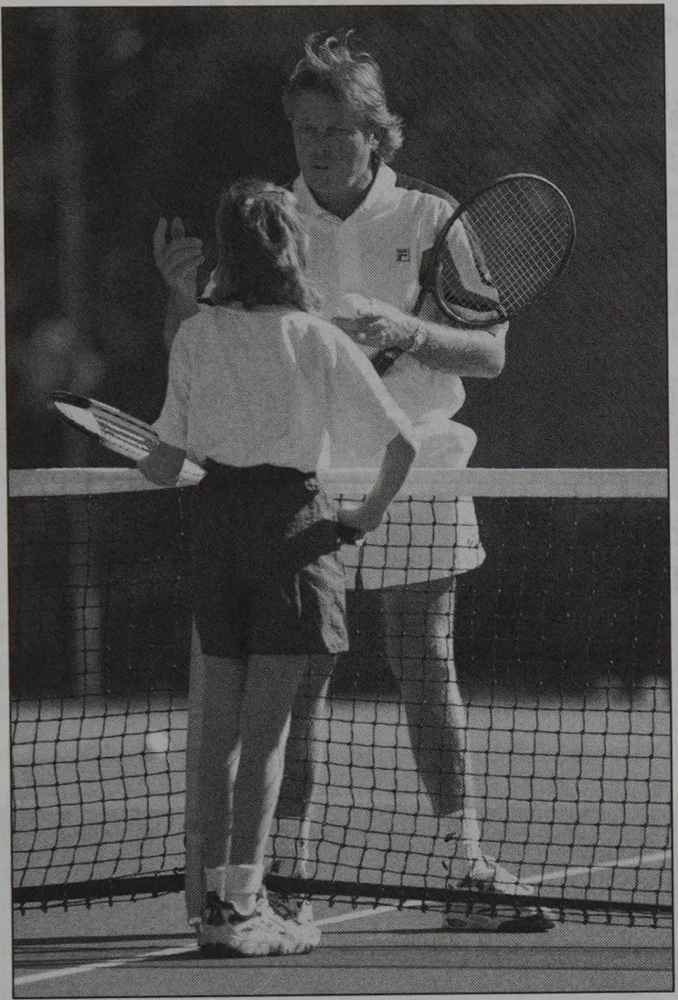
4124 Focused for Tennis vận động viên sẵn sàng quay lại và chơi thật tốt nhất. Ba chữ R có thể là kim chỉ nam cho toàn bộ sự kiện huấn luyện giữa các set.
4124 Focused for Tennis get the player ready to go back in and do the very best. The Three R’s can serve as a guide for the entire coaching event between sets.
Các HLV có thể dùng băng video các trận đấu để minh họa các phong cách Ba chữ R khác nhau (mã hóa chúng như được trình bày ở chương 7), và khuyến khích vận động viên ghi chép những gì họ thấy trong các trận phát trên truyền hình hay trong thi đấu trực tiếp của các vận động viên đại học và chuyên nghiệp Với tất cả các trường hợp, mục tiêu là giúp vận động viên trở nên nhận thức được ba giai đoạn, cả trong bản thân họ lẫn ở những vận động viên khác, và tự thiết kế hệ thống Ba chữ R của riêng mình.
Coaches can use videotapes of matches to demonstrate different Three R’s styles (coding them as illustrated in chapter 7), and encourage players to take notes on what they see in televised matches or in live match play from collegiate and professional players. In all cases the objective is to help players to become aware of the three phases, both in themselves and in other players, and design their own Three R’s system.
Khi những sự bế tắc thực sự xảy ra, như chắc chắn sẽ xảy ra, nguyên tắc là hãy chính xác trong phản hồi. Ví dụ, “Reset của em thật xuất sắc, và có vẻ em đang làm một Review vững chắc, nhưng các Release của em đang vượt ngoài tầm kiểm soát.” Hoặc, “Tôi tự hỏi liệu em có rút ngắn Review quá nhiều không? Tôi không thấy em chuyển vợt sang tay hay đưa ra bất kỳ dấu hiệu nào khác cho thấy em đang bắt đầu Review của mình.”
When breakdowns do occur, as surely they will, the concept is to be precise in the feedback. For example, “Your Reset is outstanding, and you seem to be doing a solid Review, but your Releases are getting way out of hand.” Or, “I wonder if you are not shortening the Review too much? I did not notice you switching hands on your racket or giving any other sign that you were starting your Review.”
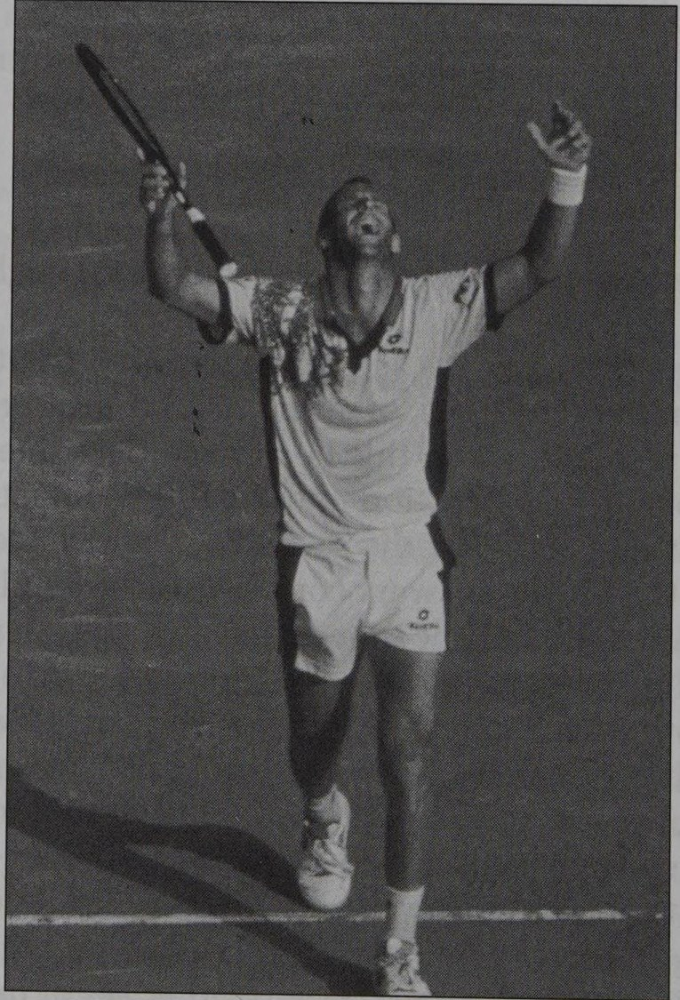
Những ứng dụng khác của Ba chữ R
Other Uses of the Three R’s
Làm Bài Kiểm Tra TAKING TESTS
Sue trở nên căng thẳng mỗi khi nghĩ đến việc thi môn lịch sử.
Sue got uptight every time she thought of taking a history exam.
Lòng bàn tay cô bắt đầu đổ mồ hôi, tim đập nhanh, và cô có cảm giác buồn nôn trong bụng chỉ vì nghĩ đến tất cả những cái tên và mốc thời gian cô phải ghi nhớ, và về việc cố ghép tất cả lại với nhau trong một bài tiểu luận. Mọi chuyện đôi khi trở nên tồi tệ đến mức cô tránh học hoàn toàn, sợ đến mức không dám mở sách ra. Không cần phải nói, cô trì hoãn việc học đến phút cuối, nhồi nhết càng nhiều càng tốt, và rồi cả hội chứng lại bắt đầu từ đầu khi cô bước vào phòng thi. Cô tự nhận mình là một kẻ thần kinh rệu rã và cảm thấy sự lo âu của cô đã vượt quá giới hạn. Thay vì giúp cô sẵn sàng làm tốt, sự lo lắng của cô lại cản trở thành tích của cô.
Her palms would begin to sweat, her heart would race, and she would get a queasy feeling in her stomach at the very thought of all those names and dates she would have to remember, and of trying to put it all together in an essay. It would get so bad sometimes that she avoided studying altogether, afraid even to open the book. Needless to say, she put off studying until the last minute, crammed as much as she could, and then the whole syndrome would start all over again as she walked in to take the exam. She described herself as a nervous wreck and felt that her anxiety had gone way overboard. Instead of getting her primed to do well, her concern got in the way of her performance.
Khi áp dụng Ba chữ R, Sue bắt đầu bày tỏ (với bản thân và với một người bạn) những cảm xúc lo lắng về kỳ thi và coi đó như một Release trong tennis. Cô nói về việc cô buồn bực như thế nào, về việc lòng bàn tay cô đổ mồ hôi ra sao, và về việc cô sợ thi, sợ trượt—muốn đạt điểm cao, nhưng sợ rằng cô sẽ không làm được. Rồi cô áp dụng kỹ thuật STOP. Cô thực sự tự bảo mình phải STOP! và bắt đầu Review toàn bộ tình huống một cách phản biện. Cô nhận ra rằng cô thực ra thích một số phần trong việc học lịch sử; điều khiến cô khó chịu là phải ghi nhớ mọi thứ. Cô cũng không chắc cô phải ghi nhớ nhiều đến đâu. Liệu cô có phải ghi thuộc lòng tất cả những cái tên và mốc thời gian, hay cô có thể qua được bằng cách hiểu một số chủ đề từ bài giảng không? Trong Review, cô nhận ra rằng cô cần hỏi giáo viên xem cấu trúc chính xác của bài thi sẽ như thế nào. Cô cũng nhận ra rằng, trong mọi trường hợp, cô sẽ cần xây dựng được một phương pháp ghi nhớ để ghi nhớ những cái tên và mốc thời gian. Và cuối cùng, cô nhận ra rằng trước khi bước vào phòng thi, cô nên có thể dùng các kỹ thuật thư giãn mà cô đã áp dụng cho tennis. Tóm lại, Review của cô đã dẫn cô đến kế hoạch hành động sau đây:
In applying the Three R’s, Sue began to express (to herself and to a friend) her feelings of concern about the exam and treated it the same as a Release in tennis. She would talk about how upset she got, about how her palms would sweat, and of how she was afraid of taking the exam, afraid of failing—wanting a good grade, but fearing she would not be able to do well. Then she applied the STOP technique. She literally told herself to STOP! and began to Review the entire situation critically. She noted that she actually enjoyed some parts of her history study; it was remembering everything that bothered her. She also was not sure how much she had to remember. Would she have to memorize all the names and dates, or could she get by with understanding some of the themes from the lecture? In the Review, she realized that she needed to find out from the teacher what the exact structure of the exam would be. She also realized that, in any case, she would need to be able to develop some memory device to remember names and dates. And finally, she realized that before walking into the room for an exam, she ought to be able to use the relaxation techniques she applied to tennis. In summary, her Review led her to the following game plan:
- 1. Nói chuyện với giáo viên để biết bản chất chính xác của kỳ thi và1. Talk to the teacher to learn the exact nature of the exam and
cần gì để chuẩn bị cho nó; để chiếm lợi thế, hãy thử tìm một người đã từng thi với giáo viên này và xem những dạng nội dung giáo viên thực sự hay đưa vào (chẳng hạn, rất nhiều tên và mốc thời gian, hay là không).
what it would take to get ready for it; as an edge, try to find someone who had taken an exam from this teacher and see what kinds of things the teacher actually did like to include (for example, a lot of names and dates, or not).
- 2. Tìm sự giúp đỡ từ bạn bè hoặc cố vấn về một phương pháp ghi2. Get some help from a friend or a counselor on a memory de-
nhớ tên và mốc thời gian, và luyện tập nó mỗi ngày.
vice for remembering names and dates, and practice it daily.
- 3. Áp dụng kỹ thuật thở sâu và thư giãn cơ bắp như một3. Apply deep breathing and muscle relaxation techniques as a
cách để tập trung lại trước khi bước vào kỳ thi.
way of getting centered before taking the exam.
Sue sau đó chuyển sang thói quen Reset liên quan đến việc thực hiện kế hoạch hành động của cô một cách thư giãn và tập trung. Khi ngồi một mình trong phòng, cô làm một việc gì đó trong kế hoạch giúp cô học vào thời điểm đó, hoặc ít nhất lên kế hoạch để học vào buổi tối hoặc ngày hôm sau. Nếu cô đang ở lớp, trong xe, hay trên sân, cô sẽ tự nhắc mình trong lúc Reset rằng cô sẽ áp dụng các biện pháp này cho việc học khi về nhà vào buổi tối. Tại bàn học, cô dọn sạch những cuốn sách khác, lấy thứ gì đó giải khát, và sắp xếp giấy và bút chì khi cô bắt đầu (một việc song song với chuyện chuẩn bị giao bóng trong tennis).
Sue then turned to a Reset routine that had to do with implementing her game plan in a relaxed and focused manner. When sitting alone in her room, she would do something from the game plan that would help her study at that time, or at least make plans for studying later that evening or the next day. If she was in class, in her car, or on the court, she would remind herself during the Reset that she would apply these measures to her studies when she got home at night. At her desk, she would clear the surface of other books, get something refreshing to drink, and arrange paper and pencil as she started (a study parallel to getting ready to serve in tennis).
Dù đang ở lớp, trên sân tennis, hay trong phòng riêng, và dù cô có cơ hội để học hay không, cô khép lại Ba chữ R bằng một thói quen Reset cho phép cô thực hiện
Whether in class, on the tennis court, or in her own room, and whether she had an opportunity to study or not, she wrapped up the Three R’s with a Reset routine that either let her implement
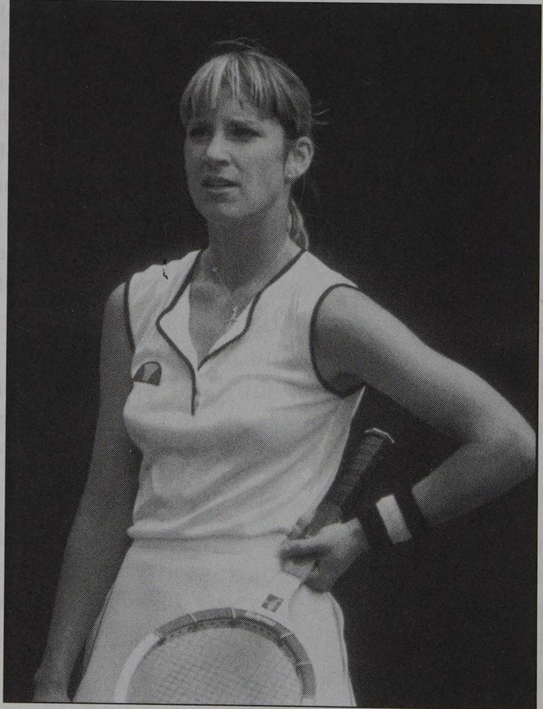
Những ứng dụng khác của Ba chữ R bước tiếp theo tốt nhất (học ngay bây giờ hoặc gọi điện cho bạn để nói về các kỳ thi của giáo viên này), hoặc để cô gác lại việc đó một cách bình tĩnh với sự tự tin rằng cô sẽ làm điều gì đó hữu ích sau. Cô dùng Ba chữ R để học hỏi từ tình huống, tức là, để tìm ra cần học gì, lập kế hoạch để học nó, và rồi bình tĩnh lại và học.
Other Uses of the Three R’s the best next step (do some studying right now or call a friend to talk about this particular teacher’s exams), or let her set the matter aside calmly with the confidence that she would do something useful later. She used the Three R’s to learn from the situation, that is, to find out what to study, to make a plan to study it, and then to settle down and study it.
Thế Giới Mới Của Bạn YOUR NEW WORLD
Hãy nghĩ đến tình huống cuộc sống của chính bạn và tìm những ứng dụng khác, dù ở nơi làm việc, ở trường học, trong các môn thể thao khác, hay ở nhà. Hệ thống đủ đơn giản để áp dụng, dù bạn sẽ cần điều chỉnh tùy theo hoàn cảnh. Hãy luôn nhớ rằng bạn càng áp dụng Ba chữ R, bạn càng trở nên mạnh mẽ hơn— và hệ thống sẽ chảy một cách dễ dàng hơn.
Think of your own life situation and look for other applications, whether at work, at school, in other sports, or at home. The system is simple enough to apply, though you'll need to make adjustments depending on the circumstances. Remember always that the more you apply the Three R’s, the stronger you will become— and the more easily the system will flow.
Thử thách của thể thao và của cuộc sống là mọi thứ hiếm khi diễn ra theo đúng kế hoạch. Thật vậy, một kế hoạch trận đấu thực ra chỉ là một cách để chuẩn bị bản thân đối phó với nhiều hoàn cảnh bất lợi và hướng chúng theo hướng bạn muốn càng thường xuyên càng tốt. Điều này có nghĩa là bạn không nên ngạc nhiên khi mọi thứ trở nên tồi tệ. Thời tiết xấu, khán giả không chịu im lặng đúng lúc, và đối thủ làm mọi cách để làm bạn mất tập trung đều là chuyện thường ngày trong tennis. Các đấu trường khác có những trở ngại riêng.
The challenge of sport and of life is that things seldom go according to plan. Indeed, a game plan is really just a way of preparing yourself to deal with a range of adverse circumstances and turn them in the direction you want as often as you can. This means that you should not be surprised when things go wrong. Bad weather, fans who won’t be quiet at the right time, and opponents who do everything they can to throw you off are all the order of the day in tennis. Other arenas have their own ranges of obstacles.
Hệ thống Tâm lý Thể thao Ba chữ R được thiết kế để giữ bạn khỏi chỉ đơn thuần phản ứng lại những điều này và để những suy nghĩ và cảm xúc chi phối bạn, mà thay vào đó cho phép bạn dẫn dắt các phản ứng của mình qua Release, rồi Review, và cuối cùng thói quen Reset để chuẩn bị thi đấu từng điểm. Thay vì phản đối và cảm thấy tồi tệ rằng thế giới là như nó vốn vậy, bạn đang nói: “Này thế giới, tôi hiểu em có thể thế nào! Hãy cứ đến đi! Tôi có những suy nghĩ và cảm xúc về những gì sắp xảy ra, và tôi sẽ bày tỏ chúng trong Release của mình, rồi tôi sẽ Review một cách phản biện điều đã xảy ra, chọn nước đi tốt nhất trong kế hoạch của mình, rồi thực hiện một thói quen Reset vững chắc giúp tôi thi đấu tốt nhất có thể ở điểm tiếp theo.”
The Three R’s Sport Psychology System is intended to keep you from simply reacting to these things and letting thoughts and feelings take control of you, and instead allow you to channel your reactions through the Release, then the Review, and finally the Reset routine in preparation for playing the point. Instead of objecting and feeling bad that the world is the way it is, you are saying: “Okay world, I understand how you can be! Bring it on! I have thoughts and feelings about what is going to happen, and I will express them in my Release, then I’ll Review critically what has happened, pick the best move in my game plan, and then do a solid Reset routine that prepares me to play as well as I can on the next point.”
Như chúng tôi đã nói lúc đầu, ai cũng muốn thi đấu trong vùng phong độ—nhưng câu hỏi là: Làm sao để tôi đến đó thường xuyên hơn? Ba chữ R chỉ cho bạn con đường, bằng cách giúp bạn đối phó với bất cứ điều gì đến với bạn, học hỏi từ sai lầm, và dồn năng lượng vào phong độ thi đấu tốt nhất của bạn.
As we said in the beginning, everyone wants to play in the zone—but the question is: How do I get there more often? The Three R’s shows you the way, by helping you to deal with whatever comes your way, learning from mistakes, and channeling your energy into your very best play.
Hồ Sơ Vận Động Viên — Monica Seles PLAYER PROFILE
MONICA SELES Cần gì để sống sót sau một vụ đâm, rồi trở lại thi đấu hai năm sau đó và vô địch Giải Canada? Monica không chỉ sống sót qua vụ tấn công bằng dao mà còn vượt qua thử thách đó về mặt tâm lý để trở lại với môn thể thao của mình. Cô cũng rất cứng rắn về tinh thần trên sân.
MONICA ~ SELES — What does it take to survive a stabbing, and then return to the game two years later and win the Canadian Open? Monica not only survived the knife attack, but also worked through the ordeal psychologically in order to get back into her sport. She is also mentally'tough on the court.
Monica Seles giành danh hiệu Grand Slam đầu tiên vào năm 1988 ở tuổi và chuyển sang chuyên nghiệp ngay sau đó. Năm 1991, cô trở thành nhà vô địch U.S. Open trẻ thứ hai ở tuổi 17 và 9 tháng, sau Tracy Austin, nhà vô địch năm 1979. Năm 1996, cô giành năm danh hiệu, trong đó có Giải Úc và Giải Canada, và vào đến chung kết U.S. Open, giành 1.154.499 đô la tiền thưởng. Cũng trong năm 1996, cô thi đấu trong đội tuyển Thế vận hội của Hoa Kỳ.
Monica Seles won her first Grand Slamin 1988 at 15 and turned pro shortly thereafter. In 1991, she became the second youngest U.S. Open champion at 17 years and 9 months, following Tracy Austin, the 1979 champion.In 1996, she won five titles, including the Australian and Canadian Open, and was a finalist in the U.S. Open, winning $1,154,499 in prize money. Also in 1996, she played on the United States Olympic team.
Ngày 30 tháng 4 năm 1993, khi Seles đang đứng hạng nhất, cô bị đâm vào lưng bởi một người hâm mộ trong lúc đổi bên khi đang thi đấu với Magdalena Maleeva ở Hamburg. Chấn thương khiến cô phải rời xa thi đấu hơn một năm, nhưng khi trở lại, cô vô địch Giải Canada năm 1995.
On April 30, 1993, when Seles was ranked No. 1, she was stabbed in the back by a fan during a changeover while competing against Magdalena Maleeva in Hamburg. The injury put her out of the game for more than a year, but when she returned, she won the 1995 Canadian Open.
Seles thuận tay trái và đánh cả cú thuận tay lẫn cú trái tay bằng cả hai tay, điều khiến đối thủ phải đoán góc bóng sẽ đi ra khỏi vợt của cô. Cô dùng những tiếng hét như một Release tiêu cực và những cú đấm vào không khí như Release tiêu cực. Cô hiếm khi mất bình tĩnh và có một Review tốt, điều thể hiện rõ qua việc cô bám sát kế hoạch trận đấu của mình.
Seles is left-handed and plays with a two-handed forehand and backhand, which keeps her opponents guessing about the angle the ball will take off of her racket. She uses shouts as a negative Release and fist pumps as positive Releases. She rarely gets flustered and has a good Review, which is apparent in her adherence to her game plan.
Monica Seles sinh ngày 2 tháng 12 năm 1973, tại Novi Sad, Nam Tư. Cô trở thành công dân Hoa Kỳ năm 1994. Cô được cha mình là Karolj huấn luyện, người từng là họa sĩ truyền tranh và đạo diễn truyền hình. Trong thời gian rảnh, cô tình nguyện với các vận động viên Special Olympics. Cô sống ở Sarasota, Florida.
Monica Seles was born December 2, 1973, in Novi Sad, Yugoslavia. She became a U.S. citizen in 1994. She is coached by her father Karolj, who was a cartoonist and a television director. In her spare time, she volunteers with Special Olympics athletes. She lives in Sarasota, Florida.
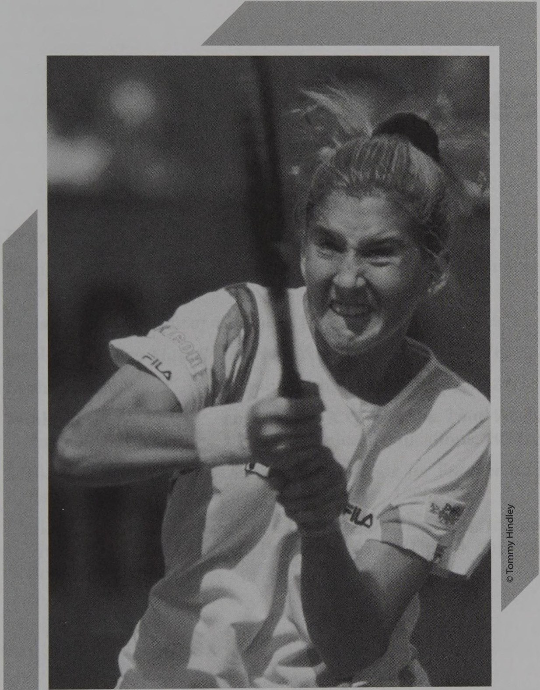
Tài Liệu Tham Khảo
Benson, H. The Relaxation Response. New York: Avon, 1976.
Benson, H. The Relaxation Response. New York: Avon, 1976.
Bion, W.R. Experiences in Groups and Other Papers. London: Tavistock, 1961.
Bion, W.R. Experiences in Groups and Other Papers. London: Tavistock, 1961.
Cousins, N. Anatomy of an Illness. New York: Norton, 1979.
Cousins, N. Anatomy of an IlIness. New York: Norton, 1979.
Jacobson, E. You Must Relax. New York: McGraw-Hill, 1978.
Jacobson, E. You Must Relax. New York: McGraw-Hill, 1978.
Loehr, J. “Choking.” World Tennis, February 1990, pp. 24-27.
Loehr, J. “Choking.” World Tennis, February 1990, pp. 24-27.
Mink, O.G., Mink, B.P., and Owen, K.Q. Groups That Work.
Mink, O.G., Mink, B.P., and Owen, K.Q. Groups That Work.
Englewood Cliffs: Educational Technical Publications, 1987.
Englewood Cliffs: Educational Technical Publications, 1987.
Slaikeu, K.A. Crisis Intervention: A Handbook for Practice and Research (2nd ed.). Boston: Allyn & Bacon, 1990.
Slaikeu, K.A. Crisis Intervention: A Handbook for Practice and Research (2nd ed.). Boston: Allyn & Bacon, 1990.
Slaikeu, K.A., and Lawhead, S. Up From the Ashes: How to Survive and Grow Through Personal Crisis. Grand Rapids: Zondervan, 1987.
Slaikeu, K.A., and Lawhead, S. Up From the Ashes: How to Survive and Grow Through Personal Crisis. Grand Rapids: Zondervan, 1987.
Chỉ Mục
A Hành động, lập bản đồ xây dựng 87-88 hoạt động, lạc nhiệm vụ 4 Agassi, Andre 39 hăng hái 59-60 Anatomy of an Illness (Cousins) 26 cơn giận 90-92. Xem thêm đối đầu bằng lời nói; lo âu 92 trước các trận đấu 86-88 Ashe, Arthur 80 Austin, Tracy 128 B cú trái tay 59 vạch cuối sân lối chơi 61 rally 59 giành điểm từ 110-111 chơi từ 61 Becker, Boris 36 Benson, Herbert 28 i ngôn ngữ cơ thể 20-21 sự bế tắc 122, 124 thở, sâu 23, 28 C các quyết định 37 Carillo, Mary 80 khủng hoảng hóa 2, 3 các lần đổi bên 85 Chang, Michael 14, 36, 62 ghi chép kết quả 118-119 sự nghẽn 92-93 Giải pháp của Ba chữ R 100 huấn luyện Sử dụng Ba chữ R trong 122-124 CHỈ MỤC sử dụng video trong 124 hướng dẫn về mã 114 các số mã 61 bảng mã 115 các vi phạm quy tắc, Release và 35-36 các từ mã 62, 108 lên lưới 106-110 Connors, Jimmy 35, 39, 94 Court, Margaret Smith 66 Cousins, Norman 26 D mơ màng 111 sự chậm trễ, giải đấu 88 sự phân tâm 60, 76, 95-96 giữa các trận 86-88 Review và 58-59 Giải pháp của Ba chữ R 100 E Edberg, Stefan 50, 62 định hình điểm kết thúc tiếp theo 45; lỗi 37, 56 Evert, Chris 37 bùng nổ 1 F cảm xúc, tuôn trào 99-101 bước chân, trả bóng và 72 G các kế hoạch trận đấu 61-62, 125-126 tự viết 106 Graf, Steffi 62, 102 H Hatha yoga 23 Hingis, Karol 30
A Action, mapping constructive 87-88 activity, off-task 4 Agassi, Andre 39 aggression 59-60 Anatomy of an Illness (Cousins) 26 anger 90-92. See also verbal combat anxiety 92 before matches 86-88 Ashe, Arthur 80 Austin, Tracy 128 B backhand 59 baseline game 61 rally 59 win from 110-111 working from 61 Becker, Boris 36 Benson, Herbert 28 i body language 20-21 breakdowns 122, 124 breathing, deep 23, 28 C calls 37 Carillo, Mary 80 catastrophizing 2, 3 changeovers 85 Chang, Michael 14, 36, 62 charting results 118-119 choking 92-93 Three R’s solution to 100 coaching Three R’s use in 122-124 INDEX using videotapes in 124 code instructions 114 code numbers 61 code sheet 115 code violations, Release and 35-36 code words 62, 108 coming in 106-110 Connors, Jimmy 35, 39, 94 Court, Margaret Smith 66 Cousins, Norman 26 D daydreaming 111 delays, tournament 88 distractions 60, 76, 95-96 between matches 86-88 Review and 58-59 Three R’s solution to 100 E Edberg, Stefan 50, 62 end points, painting next 45 errors 37, 56 Evert, Chris 37 exploding 1 F feelings, runaway 99-101 footwork, returns and 72 G game plans 61-62, 125-126 writing own 106 Graf, Steffi 62, 102 H Hatha yoga 23 Hingis, Karol 30
Hingis, Martina 30 nén lại 1 hài hước 26-27, 39 tennis và 26 I tưởng tượng 17-18, 28 tập luyện 111-113 sự gián đoạn, trong thói quen Reset 75-76 J Jacobson, Edmund 23 K King, Billie Jean 66 L tiếng cười, căng thẳng và 26 lợi thế dẫn điểm, mất 98 Giải pháp của Ba chữ R 101 Lendel, Ivan 69 buông bỏ 39. Xem thêm Release thua 98 M Maleeva, Magdalena 128 McEnroe, John 50, 69, 70, 80, 89, 118 thiền định 28. Xem thêm Thư giãn Moffit, Billie Jean. Xem King, Billie Jean Monitor, Melanie 30 động lực, thiếu 96—97 Giải pháp của Ba chữ R 101 Muster, Thomas 118 N Navratilova, Martina 30 tiêu cực 62 lo lắng 92 Noah, Yannick 118 P hiệu suất, không ổn định 97-98 Giải pháp của Ba chữ R 101 Pernfors, Michael 94 tính cách 11-12 Release phù hợp 47-48 Play 1 hiệu quả khi dùng 111 trong kế hoạch trận đấu 61, 62 tưởng tượng và 75 trong thi đấu từng điểm 112
Hingis, Martina 30 holding in 1 humor, 26-27, 39 tennis and 26 I imagery 17-18, 28 training 111-113 interruptions, in Reset routine 75-76 J Jacobson, Edmund 23 K King, Billie Jean 66 L laughter, stress and 26 lead, losing 98 Three R’s solution to 101 Lendel, Ivan 69 letting go 39. See also Release(s) losing 98 M Maleeva, Magdalena 128 McEnroe, John 50, 69, 70, 80, 89, 118 meditation 28. See also Relaxation Moffit, Billie Jean. See King, Billie Jean Monitor, Melanie 30 motivation, lack of 96—97 Three R’s solution to 101 Muster, Thomas 118 N Navratilova, Martina 30 negativity 62 nervousness 92 Noah, Yannick 118 Pp performance, uneven 97-98 Three R’s solution to 101 Pernfors, Michael 94 personality 11-12 Releases to fit 47-48 Play 1 effectiveness using 111 in game plan 61, 62 imagery and 75 in point play 112
trong Review 63, 108 trong thi đấu từng điểm 110 Play 2 hiệu quả khi dùng 111 trong kế hoạch trận đấu 61, 62 tưởng tượng và 75 trong thi đấu từng điểm 112 trong Review 63, 108 trong thi đấu từng điểm 110 Play 3 hiệu quả khi dùng 111 trong kế hoạch trận đấu 61, 62 tưởng tượng và 75 trong Review 63, 108 điểm giữa các điểm 83-85 kết thúc 45-46 định hình cú kết thúc tiếp 45 các Play và 112 thi đấu 110 luyện tập ngôn ngữ cơ thể 21 tự nói 19-20 lời thô tục 35 các lựa chọn thay thế 42-44 tâm lý, lạc nhiệm vụ 5-6 Q các câu hỏi từ HLV 56 Review 57-58 R thư giãn 22-26. Xem thêm thiền định tinh thần 23 các động tác 23-24 cơ bắp 23 tiến triển 24-25 ứng dụng trong tennis 25-26 các dạng 23 Relaxation Response, The (Benson) 28 thói quen thư giãn 75 Release 4, 6-8 mang tính xây dựng 39-41, 43-44 mang tính phá hoại 44 điểm kết thúc 45—46 bài tập cho 46—49 tốt và xấu 33-35
in Review 63, 108 in working the point 110 Play 2 effectiveness using 111 in game plan 61, 62 imagery and 75 in point play 112 in Review 63, 108 in working the point 110 Play 3 effectiveness using 111 in game plan 61, 62 in Review 63, 108 point(s) between 83-85 end 45-46 painting next end 45 Plays and 112 working the 110 practice body language 21 self-talk 19-20 profanity 35 alternatives for 42-44 psychology, off task 5-6 Q questions from coach 56 Review 57-58 R relaxation 22-26. See also meditation mental 23 movements 23-24 muscle 23 progressive 24-25 tennis applications 25-26 types of 23 Relaxation Response, The (Benson) 28 relax routine 75 Release(s) 4, 6-8 constructive 39-41, 43-44 destructive 44 end points 45—46 exercises for 46—49 fashioning 40 good and bad 33-35
Release (tiếp) các lựa chọn 38 tính cách và 47-48 tích cực so với tiêu cực 41 kín đáo 84 đánh giá 46-47 mẫu 41-44 bắt đầu 35-36 các chiến lược cho 36-39 phiếu bài tập 107 thói quen Reset 10-11, 70—75. Xem thêm Reset các thành phần 71 các yếu tố của 77-78 các Play và 63 trả bóng và 71, 72 mẫu 71-75 phiếu bài tập 109-111 Reset 4 bài tập cho 77—79 sự gián đoạn trong 75-76 cơ sở lý luận của 69-70 thư giãn trong 26 thói quen. Xem thói quen Reset bắt đầu 70 > trả bóng, Reset và 71, 72 Review 4, 8-10 gắn neo 55 các số mã cho 61-62 sự phân tâm và 58-59 những điều nên và không nên làm 57 bài tập cho 63-65 hướng dẫn giai đoạn giữa 59-61 quá khứ và tương lai 55-58 cơ sở lý luận của 53-54 bắt đầu 54-55 STOP và 62-63, 87 phiếu bài tập 108 thói quen khởi động 75 Riggs, Bobby 66 Royal, Darrell 59 vội vàng 2 S Sampras, Pete 113 Seles, Monica 62, 128 tự nói 18-20, 28. Xem thêm lời nói giao bóng và vô-lê 61, 106-110 cú giao bóng 71-72 như một thành phần của Reset 71 cú đánh, hỏng 36 giấc ngủ 2,3 STOP 4 Review và 62-63 kỹ thuật 11, 20, 63 phiếu bài tập 107 căng thẳng, tiếng cười và 26 T lời nói, tiêu cực 35. Xem thêm tự nói buông xuôi 93-94 Giải pháp của Ba chữ R 100 cơn nóng giận 89—90 Giải pháp của Ba chữ R 99 các bài kiểm tra, việc dùng Ba chữ R trong 125-127 suy nghĩ 2, 3 tuôn trào 99-101 dừng lại 11 Hệ thống Tâm lý Thể thao Ba chữ R áp dụng bên ngoài tennis 121-122 lợi ích 12-13 dẫn dắt các phản ứng 127c ghi chép khi luyện tập 113 Sổ tay Mã hóa 113-115 các môn khác, dùng trong 122 tính cách và 11-12 tinh chỉnh 117 các yêu cầu của 13 trình tự 9 tóm tắt 4—11 ứng dụng trong tennis 83-88 công cụ 17 tự viết 105-106 sự chậm trễ tại giải 88 Trabert, Tony 14 xử lý sự cố 88-98 V đối đầu bằng lời nói
Release(s) (continued) options 38 personality and 47-48 positive vs. negative 41 quiet 84 rating 46-47 sample 41-44 starting 35-36 strategies for 36-39 worksheet 107 Reset routine 10-11, 70—75. See also Reset(s) components 71 elements of 77-78 Plays and 63 return and 71, 72 sample 71-75 worksheet 109-111 Reset(s) 4 exercises for 77—79 interruptions during 75-76 rationale of 69-70 relaxation during 26 routine. See Reset routine starting 70 > returns, Reset and 71, 72 Review(s) 4, 8-10 anchoring 55 code numbers for 61-62 distractions and 58-59 do’s and don’ts for 57 exercises for 63-65 middle phase instructions 59-61 past and future 55-58 rationale of 53-54 starting 54-55 STOP and 62-63, 87 worksheet 108 rev up routine 75 Riggs, Bobby 66 Royal, Darrell 59 rushing 2 S Sampras, Pete 113 Seles, Monica 62, 128 self-talk 18-20, 28. See also talk serve and volley 61, 106-110 serves 71-72 as Reset component 71 shots, bad 36 sleeping 2,3 STOP(s) 4 Review and 62-63 technique 11, 20, 63 worksheet 107 stress, laughter and 26 T talk, negative 35. See also self-talk tanking 93-94 Three R’s solution to 100 tantrums 89—90 Three R’s solution to 99 tests, Three R’s use of 125-127 thoughts 2, 3 runaway 99-101 stopping 11 Three R’s Sport Psychology System applying outside tennis 121-122 benefits 12-13 channeling reactions 127c charting in practice 113 Coding Manual 113-115 other sports, use in 122 personality and 11-12 refining 117 requirements of 13 sequence 9 summary 4—11 tennis applications 83-88 tools 17 writing own 105-106 tournament delays 88 Trabert, Tony 14 troubleshooting 88-98 Vv verbal combat
- 36. Xem thêm Cơn giận36. See also Anger
băng video, dùng trong huấn luyện 124 vô-lê vào lưới 36 W lang thang 2 thi đấu từng điểm 110 DG yoga. Xem Hatha yoga You Must Relax (Jacobson) 23
videotapes, use in coaching 124 volley into net 36 Ww wandering 2 working the point 110 DG yoga. See Hatha yoga You Must Relax (Jacobson) 23
Về Các Tác Giả
Karl Slaikeu, PhD, một người yêu thích tennis suốt đời, sống ở Austin, Texas, và là chủ tịch của Chorda Conflict Management, Inc. Ông cũng cung cấp dịch vụ tư vấn tâm lý thể thao cho các vận động viên tennis ở mọi cấp độ, cũng như cho gia đình họ, và tổ chức các khóa tập huấn và hội thảo cho các huấn luyện viên.
Karl Slaikeu, PhD, a lifelong tennis enthusiast, lives in Austin, Texas, and is president of Chorda Conflict Management, Inc. He also offers sport psychology consultation to tennis players at all levels, as well as their families, and conducts workshops and seminars for coaches.
Là người tạo ra mô hình Ba chữ R, Slaikeu từng chơi tennis ở cấp đại học và giờ có hai đứa con cũng tích cực chơi tennis nữa.
The creator of the 3 R’s model, Slaikeu played tennis at the collegiate level and now has two children active in tennis as well.
Trong thời gian rảnh, Slaikeu thích đọc sách, câu cá hồi, và, tất nhiên, chơi tennis.
In his spare time, Slaikeu enjoys reading, trout fishing, and, of course, playing tennis.
Robert Trogolo đã dành nhiều năm với vai trò vận động viên và huấn luyện viên tennis chuyên nghiệp.
Robert Trogolo has spent many years as a professional tennis player and coach.
Sau vài năm thi đấu trong giới chuyên nghiệp, ông tiếp tục huấn luyện những vận động viên như Michael Chang, Kevin Curren, và Richey Reneberg. Ông cũng từng huấn luyện đội tuyển Davis Cup của Malaysia.
After spending several years on the pro tour, he went on to coach players such as Michael Chang, Kevin Curren, and Richey Reneberg. He also coached the Malaysian Davis Cup team.
Thông qua Trogolo Tennis International, Inc. (đặt trụ sở tại Austin), Trogolo tư vấn cho các câu lạc bộ tennis và tư vấn cho các vận động viên mới bước vào các giải đấu chuyên nghiệp nam và nữ.
Through Trogolo Tennis International, Inc.(based in Austin), Trogolo consults tennis clubs and advises players new to the women’s and men’s pro tennis tours.
Tài Nguyên Quần Vợt
TỪ HK VÀ TENNIS Tl THE USTA ____. (ee CHIẾN THẮNG CÁC MÔ HÌNH Tennis Tactics cung cấp 63 bài tập để luyện tập các mô hình cú đánh sẽ trở thành một phần trong cách tiếp cận chiến thuật của bạn trong thi đấu. o : *y Video đi kèm có nội dung thực tế .
FROMHK AND _TENNIS Tl THE USTA ____. (ee WINNING PATTERNS OF Tennis Tactics provides 63 drills for practicing shot patterns that will become part of your tactical approach in match play. o : *y The companion video features actual .
United States Tennis Association hình ảnh từ U.S. Open và cho thấy các vận động viên chuyên nghiệp sử dụng một số chiến thuật yêu thích của họ trên sân.
United States Tennis Association U.S. Open footage and shows professional players using some of their favorite strategies on the court.
Gói Đặc biệt Sách và Video Mã MUST0473 $29.95 ($44.95 Canadian) Sách © 1996 • Bìa mềm • 248 trang Mã PUST0499 • ISBN 0-88011-499-1 $14.95 ($20.95 Canadian) Video năm 1995 • Mã MUST0464 • $17.95 ($26.95 Canadian) ee Video Playing Better Tennis Under Pressure trình bày Playing Better sự hướng dẫn từ các nhà tâm lý thể thao và chuyên gia tennis tại Tennis Under Trung tâm Phát triển Vận động viên của USTA để giúp bạn nhận ra Pressure be những điểm áp lực thường gặp và phát triển các cách để xử lý căng thẳng trong thi đấu.
Special Book and Video Package Item MUST0473 $29.95 ($44.95 Canadian) Book @ 1996 # Paper © 248 pp Item PUST0499 © ISBN 0-88011-499-1 $14.95 ($20.95 Canadian) Video ¢ 1995 @ Item MUST0464 © $17.95 ($26.95 Canadian) ee The Playing Better Tennis Under Pressure video presents Playing Better instruction from sports psychologists and tennis experts at the Tennis Under USTA’s Player Development Center to help you recognize Pressure be common pressure points and develop ways to handle gametime stress.
Video năm 1997 • Mã MUST0743.
Video ¢ 1997 © Item MUST0743.
ISBN 0-88011-743-5 $19.95 ($29.95 Canadian) Để biết thêm thông tin hoặc đặt hàng, khách hàng tại Hoa Kỳ gọi miễn phí 1-800-747-4457, Khách hàng ngoài Hoa Kỳ hãy dùng số điện thoại/địa chỉ phù hợp được ghi ở đầu cuốn sách này. aye HUMAN KINETICS (/, J Nhà xuất bản hàng đầu về Thể thao & Thể hình + tea http: / www.humankinetics.com / Giá cả có thể thay đổi.
ISBN 0-88011-743-5 $19.95 ($29.95 Canadian) For more information or to place your order, U.S. customers call toll-free 1-800-747-4457, Customers outside the U.S. use the appropriate telephone number/address shown in the front of this book. aye HUMAN KINETICS (/, J The Premier Publisher for Sports & Fitness + tea http: / www.humankinetics.com / Prices subject to change.
2S EE ST Ta aa a
2S EE ST Ta aa a
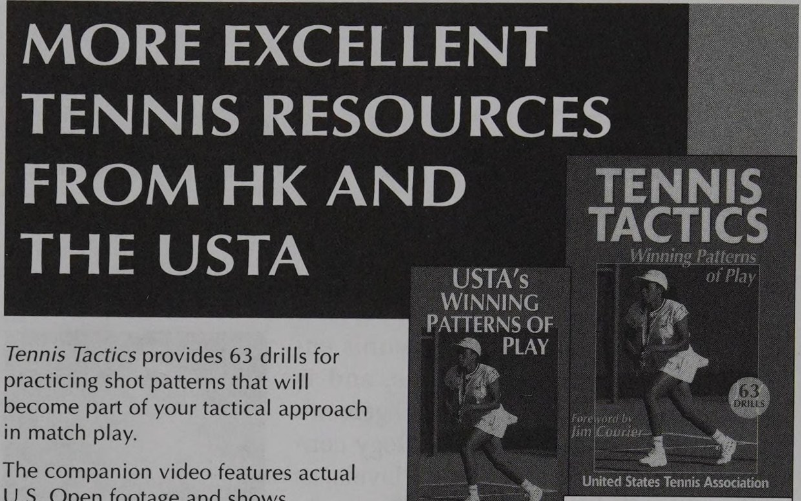
a
a
“Ba chữ R mang đến những ý tưởng thực tế, cụ thể về cách mọi kiểu tính cách đều có thể hiệu quả hơn trong việc xử lý khoảnh khắc then chốt giữa các điểm.”
“The three R’s provide practical, specific ideas on how any personality type can be more effective in handling the critical between-point time.”
Stan Smith Cựu vô địch U.S. Open và Wimbledon “Tôi nghẽn, bạn nghẽn, ai cũng nghẽn.
Stan Smith Former U.S. Open and Wimbledon Champion “| choke, you choke, we all choke.
Câu hỏi là bạn xử lý nó như thế nào. Đó là một trong nhiều câu hỏi mà cuốn sách dễ gần, lôi cuốn, thực tiễn này sẽ trả lời.”
The question is how you handle it. That’s one of many questions that this easygoing, engaging, practical book will answer.”
Cliff Drysdale Bình luận viên Tennis, ESPN và ABC Sports Cựu vô địch U.S. Open “Nếu khía cạnh tinh thần trong lối chơi tennis của bạn đang khiến bạn nản lòng, hãy đọc cuốn sách này!
Cliff Drysdale Tennis Commentator, ESPN and ABC Sports Former U.S. Open Champion “If the mental aspect of your tennis game is getting you down, read this book!
Hệ thống 3R khiến tâm trí bạn phục vụ bạn thay vì chống lại bạn.”
The 3R’s system makes your mind work for you instead of against you.”
Billie Jean King Giám đốc và Đồng sáng lập World Team Tennis Người giữ kỷ lục 20 danh hiệu Wimbledon Các tay vợt hàng đầu dùng thời gian giữa các điểm để chuẩn bị không chỉ về thể chất mà còn cả về tinh thần lẫn cảm xúc. Một phương pháp chắc ăn cho sự chuẩn bị này chính là hệ thống huấn luyện tinh thần 3-R, được trình bày trong Focused for Tennis.
Billie Jean King Director and Co-Founder World Team Tennis Winner of a record 20 Wimbledon titles Top tennis players use the time between points to prepare not only physically but mentally and emotionally as well. A sure-fire method for this preparation is the 3-R’s mental training system, presented in Focused for Tennis.
Hệ thống 3-R cho phép bạn • giải phóng những cảm xúc tiêu cực phát sinh từ các điểm thua hay game bị mất và giữ thái độ tích cực; • review những gì đã diễn ra cho đến nay: điều gì hiệu quả, điều gì không; và ——/s • reset cho điểm tiếp theo. Giờ bạn đã biết mình phải làm gì, hãy hoàn thiện một thói quen được lập sẵn để mang lại sự tập trung cho lối chơi của bạn.
The 3-R’s system allows you to * release negative emotions that come from lost points or dropped games and stay positive; * review what's happened so far: what’s working, what’s not; and ——/s ¢ reset for the next point. Now that you know what you have to do, compl R= a preplanned routine to bring focus to your play.
2&2 Đồng tác giả là nhà tâm lý thể thao Karl Slaikeu và cựu tay vợt chuyên nghiệp của USTA = Trogolo, Focused for Tennis hé lộ các quá trình tư duy được các tay vợt sử dụng để duy trì trong vùng tinh thần và cảm xúc tích cực suốt cả trận đấu. — Focused for Tennis còn “tôn vinh” các tay vợt chuyên nghiệp hàng đầu như Martina Hingis, McEnroe, Steffi Graf, Michael Chang, và Monica Seles, và giải thích cách huấn luyện tinh thần đã thúc đẩy họ thi đấu liên tục ở đẳng cấp vô địch. = WANN WANNA ISBN 0-88011-722-2 il $15.95 Tại Canada $23.95 Human Kinetics 9 '780880!'117227
2&2 Coauthored by sport psychologist Karl Slaikeu and former USTA tour pro R § = = Trogolo, Focused for Tennis reveals the thought processes used by tennis cham, p= to stay in a positive mental and emotional zone throughout a match. — Focused for Tennis also “spotlights” top pro players like Martina Hingis, a= McEnroe, Steffi Graf, Michael Chang, and Monica Seles and explains how n= mental training has driven them to consistently play championship-caliber tenTM = = WANN WANNA ISBN O-88011- 722-2 il $15.95 In Canada $23.95 Human Kinetics 9 '780880!'117227